CONTENTS IN DETAIL
- REVIEWS FOR HOW LINUX WORKS
- TITLE PAGE
- COPYRIGHT
- ABOUT THE AUTHOR
- ACKNOWLEDGMENTS
- PREFACE
- CHAPTER 1: THE BIG PICTURE
- CHAPTER 2: BASIC COMMANDS AND DIRECTORY HIERARCHY
- 2.1 The Bourne Shell: /bin/sh
- 2.2 Using the Shell
- 2.3 Basic Commands
- 2.4 Navigating Directories
- 2.5 Intermediate Commands
- 2.6 Changing Your Password and Shell
- 2.7 Dot Files
- 2.8 Environment and Shell Variables
- 2.9 The Command Path
- 2.10 Special Characters
- 2.11 Command-Line Editing
- 2.12 Text Editors
- 2.13 Getting Online Help
- 2.14 Shell Input and Output
- 2.15 Understanding Error Messages
- 2.16 Listing and Manipulating Processes
- 2.17 File Modes and Permissions
- 2.18 Archiving and Compressing Files
- 2.19 Linux Directory Hierarchy Essentials
- 2.20 Running Commands as the Superuser
- 2.21 Looking Forward
- CHAPTER 3: DEVICES
- 3.1 Device Files
- 3.2 The sysfs Device Path
- 3.3 dd and Devices
- 3.4 Device Name Summary
- 3.4.1 Hard Disks: /dev/sd*
- 3.4.2 Virtual Disks: /dev/xvd*, /dev/vd*
- 3.4.3 Non-Volatile Memory Devices: /dev/nvme*
- 3.4.4 Device Mapper: /dev/dm-*, /dev/mapper/*
- 3.4.5 CD and DVD Drives: /dev/sr*
- 3.4.6 PATA Hard Disks: /dev/hd*
- 3.4.7 Terminals: /dev/tty*, /dev/pts/*, and /dev/tty
- 3.4.8 Serial Ports: /dev/ttyS*, /dev/ttyUSB*, /dev/ttyACM*
- 3.4.9 Parallel Ports: /dev/lp0 and /dev/lp1
- 3.4.10 Audio Devices: /dev/snd/*, /dev/dsp, /dev/audio, and More
- 3.4.11 Device File Creation
- 3.5 udev
- 3.6 In-Depth: SCSI and the Linux Kernel
- CHAPTER 4: DISKS AND FILESYSTEMS
- 4.1 Partitioning Disk Devices
- 4.2 Filesystems
- 4.2.1 Filesystem Types
- 4.2.2 Creating a Filesystem
- 4.2.3 Mounting a Filesystem
- 4.2.4 Filesystem UUID
- 4.2.5 Disk Buffering, Caching, and Filesystems
- 4.2.6 Filesystem Mount Options
- 4.2.7 Remounting a Filesystem
- 4.2.8 The /etc/fstab Filesystem Table
- 4.2.9 Alternatives to /etc/fstab
- 4.2.10 Filesystem Capacity
- 4.2.11 Checking and Repairing Filesystems
- 4.2.12 Special-Purpose Filesystems
- 4.3 Swap Space
- 4.4 The Logical Volume Manager
- 4.5 Looking Forward: Disks and User Space
- 4.6 Inside a Traditional Filesystem
- 4.1 Partitioning Disk Devices
- CHAPTER 5: HOW THE LINUX KERNEL BOOTS
- CHAPTER 6: HOW USER SPACE STARTS
- CHAPTER 7: SYSTEM CONFIGURATION: LOGGING, SYSTEM TIME, BATCH JOBS, AND USERS
- 7.1 System Logging
- 7.2 The Structure of /etc
- 7.3 User Management Files
- 7.4 getty and login
- 7.5 Setting the Time
- 7.6 Scheduling Recurring Tasks with cron and Timer Units
- 7.7 Scheduling One-Time Tasks with at
- 7.8 Timer Units Running as Regular Users
- 7.9 User Access Topics
- 7.10 Pluggable Authentication Modules
- 7.11 Looking Forward
- 7.1 System Logging
- CHAPTER 8: A CLOSER LOOK AT PROCESSES AND RESOURCE UTILIZATION
- 8.1 Tracking Processes
- 8.2 Finding Open Files with lsof
- 8.3 Tracing Program Execution and System Calls
- 8.4 Threads
- 8.4.1 Single-Threaded and Multithreaded Processes
- 8.4.2 Viewing Threads
- 8.5.1 Measuring CPU Time
- 8.5.2 Adjusting Process Priorities
- 8.5.3 Measuring CPU Performance with Load Averages
- 8.5.4 Monitoring Memory Status
- 8.5.5 Monitoring CPU and Memory Performance with vmstat
- 8.5.6 I/O Monitoring
- 8.5.7 Per-Process Monitoring with pidstat
- 8.6 Control Groups (cgroups)
- 8.7 Further Topics
- CHAPTER 9: UNDERSTANDING YOUR NETWORK AND ITS CONFIGURATION
- 9.1 Network Basics
- 9.2 Packets
- 9.3 Network Layers
- 9.4 The Internet Layer
- 9.5 Routes and the Kernel Routing Table
- 9.6 The Default Gateway
- 9.7 IPv6 Addresses and Networks
- 9.8 Basic ICMP and DNS Tools
- 9.9 The Physical Layer and Ethernet
- 9.10 Understanding Kernel Network Interfaces
- 9.12 Boot-Activated Network Configuration
- 9.13 Problems with Manual and Boot-Activated Network Configuration
- 9.14 Network Configuration Managers
- 9.15 Resolving Hostnames
- 9.16 Localhost
- 9.17 The Transport Layer: TCP, UDP, and Services
- 9.18 Revisiting a Simple Local Network
- 9.19 Understanding DHCP
- 9.20 Automatic IPv6 Network Configuration
- 9.21 Configuring Linux as a Router
- 9.22 Private Networks (IPv4)
- 9.23 Network Address Translation (IP Masquerading)
- 9.24 Routers and Linux
- 9.25 Firewalls
- 9.26 Ethernet, IP, ARP, and NDP
- 9.27 Wireless Ethernet
- 9.28 Summary
- CHAPTER 10: NETWORK APPLICATIONS AND SERVICES
- CHAPTER 11: INTRODUCTION TO SHELL SCRIPTS
- 11.1 Shell Script Basics
- 11.2 Quoting and Literals
- 11.3 Special Variables
- 11.4 Exit Codes
- 11.5 Conditionals
- 11.6 Loops
- 11.7 Command Substitution
- 11.8 Temporary File Management
- 11.9 Here Documents
- 11.10 Important Shell Script Utilities
- 11.11 Subshells
- 11.12 Including Other Files in Scripts
- 11.13 Reading User Input
- 11.14 When (Not) to Use Shell Scripts
- 11.1 Shell Script Basics
- CHAPTER 12: NETWORK FILE TRANSFER AND SHARING
- 12.1 Quick Copy
- 12.2 rsync
- 12.2.1 Getting Started with rsync
- 12.2.2 Making Exact Copies of a Directory Structure
- 12.2.3 Using the Trailing Slash
- 12.2.4 Excluding Files and Directories
- 12.2.5 Checking Transfers, Adding Safeguards, and Using Verbose Mode
- 12.2.6 Compressing Data
- 12.2.7 Limiting Bandwidth
- 12.2.8 Transferring Files to Your Computer
- 12.2.9 Further rsync Topics
- 12.3.1 File Sharing Usage and Performance
- 12.3.2 File Sharing Security
- 12.4 Sharing Files with Samba
- 12.5 SSHFS
- 12.6 NFS
- 12.7 Cloud Storage
- 12.8 The State of Network File Sharing
- CHAPTER 13: USER ENVIRONMENTS
- CHAPTER 14: A BRIEF SURVEY OF THE LINUX DESKTOP AND PRINTING
- CHAPTER 15: DEVELOPMENT TOOLS
- CHAPTER 16: INTRODUCTION TO COMPILING SOFTWARE FROM C SOURCE CODE
- CHAPTER 17: VIRTUALIZATION
- INDEX
Reviews for How Linux Works
“If you are interested in Linux, How Linux Works: What Every Superuser Should Know is a must-read title.”
—LINUXINSIDER
“Lots to offer on almost every aspect of the Linux architecture.”
—EVERYDAY LINUX USER
“You’ll get an essential understanding of what’s going on under the hood without getting bogged down in minutiae—making this a very refreshing (and wholly recommended) addition to the Linux literature.”
—PHIL BULL, CO-AUTHOR OF UBUNTU MADE EASY AND MEMBER OF THE UBUNTU DOCUMENTATION TEAM
“Dives straight into the transparent depths of Linux-based operating systems and shows us how all the pieces fit together.”
—DISTROWATCH
“Earns its place on the shelf as an essential reference.”
—THE MAGPI MAGAZINE
HOW LINUX WORKS
3rd Edition
What Every Superuser Should Know
by Brian Ward
San Francisco
How Linux Works, 3rd Edition. Copyright © 2021 by Brian Ward.
All rights reserved. No part of this work may be reproduced or transmitted in any form or by any means, electronic or mechanical, including photocopying, recording, or by any information storage or retrieval system, without the prior written permission of the copyright owner and the publisher.
Second printing
24 23 22 21 2 3 4 5 6 7 8 9
ISBN-13: 978-1-7185-0040-2 (print)
ISBN-13: 978-1-7185-0041-9 (ebook)
Publisher: William Pollock
Executive Editor: Barbara Yien
Production Editor: Rachel Monaghan
Developmental Editors: Larry Wake and Jill Franklin
Cover and Interior Design: Octopod Studios
Technical Reviewers: Jordi Gutiérrez Hermoso and Petros Koutoupis
Copyeditor: Rachel Monaghan
Compositor: Cody Gates, Happenstance Type-O-Rama
Proofreader: James M. Fraleigh
For information on book distributors or translations, please contact No Starch Press, Inc. directly:
No Starch Press, Inc.
245 8th Street, San Francisco, CA 94103
phone: 1-415-863-9900; info@nostarch.com
www.nostarch.com
The Library of Congress has catalogued the first edition as follows:
Ward, Brian.
How Linux works : what every superuser should know / Brian Ward.
p. cm.
Includes index.
ISBN 1-59327-035-6
1. Linux. 2. Operating systems (Computers). I. Title.
QA76.76.O63 W3654 2004
005.4’32--dc22
2004002692
No Starch Press and the No Starch Press logo are registered trademarks of No Starch Press, Inc. Other product and company names mentioned herein may be the trademarks of their respective owners. Rather than use a trademark symbol with every occurrence of a trademarked name, we are using the names only in an editorial fashion and to the benefit of the trademark owner, with no intention of infringement of the trademark.
The information in this book is distributed on an “As Is” basis, without warranty. While every precaution has been taken in the preparation of this work, neither the author nor No Starch Press, Inc. shall have any liability to any person or entity with respect to any loss or damage caused or alleged to be caused directly or indirectly by the information contained in it.
About the Author
Brian Ward has been working with Linux since 1993. He is also the author of The Linux Kernel HOWTO, The Book of VMware (No Starch Press), and The Linux Problem Solver (No Starch Press).
About the Technical Reviewers
Jordi Gutiérrez Hermoso is a GNU/Linux user and developer with almost two decades of experience, with occasional contributions in various circles of the free software communities, such as GNU Octave and Mercurial. His professional work has allowed him to collaborate with and learn about diverse topics such as digital cryptographic signatures, medical imaging, and most recently greenhouse gas accounting and ecological map data, all built entirely with Linux and other free software. When he is not near a computer he enjoys swimming, mathematics, and knitting.
Petros Koutoupis is currently a senior performance software engineer at HPE (formerly Cray Inc.) for its Lustre High Performance File System division. He is also the creator and maintainer of the RapidDisk Project (www.rapiddisk.org). Petros has worked in the data storage industry for well over a decade and has helped pioneer the many technologies unleashed in the wild today.
ACKNOWLEDGMENTS
Contributions to this book come from not just those who were involved in the development process, but also those without whom I wouldn’t know anything about Linux. These include James Duncan, Douglas N. Arnold, Bill Fenner, Ken Hornstein, Scott Dickson, Dan Ehrlich, Felix Lee, and Gregory P. Smith. Previous editions included help from Karol Jurado, Laurel Chun, Serena Yang, Alison Law, Ri-ley Hoffman, Scott Schwartz, Dan Sully, Dominique Poulain, Donald Karon, and Gina Steele.
This third edition benefits from the excellent work of Barbara Yien, Rachel Monaghan, Jill Franklin, Larry Wake, Jordi Gutiérrez Hermoso, and Petros Koutoupis. As the publisher of No Starch Press, Bill Pollock has been instrumental in this book since the first edition. And once more, Hsinju Hsieh has put up with me for another revi-sion.
PREFACE
Your system shouldn’t be a mystery. You should be able to make your software do what you want it to do without “magic” incantations or rituals. The key to attaining this power lies in understanding the fundamentals of what the software does and how it works, and that’s what this book is all about. You should never have to fight with a computer.
Linux is a great platform for learning because it doesn’t try to hide anything from you. In particular, you can find most system configuration details in easy-to-read plaintext files. The only tricky part is figuring out which parts are responsible for what and how they all fit together.
Who Should Read This Book?
Your interest in learning how Linux works may have come from any number of sources. In the professional realm, operations and DevOps folks need to know nearly everything that you’ll find in this book. Linux software architects and developers should also know this material in order to make the best use of the operating system. Researchers and students, often running their own Linux systems, will also find that this book provides useful explanations for why things are set up the way they are.
Then there are the tinkerers—people who just love to play around with their computers for fun, profit, or both. Want to know why certain things work while others don’t? Want to know what happens if you move something around? You’re probably a tinkerer.
Prerequisites
Although Linux is beloved by programmers, you don’t need to be a programmer to read this book; you need only basic computer-user knowledge. That is, you should be able to bumble around a GUI (especially the installer and settings interface for a Linux distribution) and know what files and directories (folders) are. You should also be prepared to check additional documentation on your system and on the web. The most important thing you need is to be ready and willing to play around with your computer.
How to Read This Book
Building the requisite knowledge is a challenge in tackling any technical subject. Explaining how software systems work can get really complicated. Too much detail can bog down readers and make important concepts difficult to grasp (the human brain just can’t process so many new ideas at once), but too little detail can leave readers in the dark and unprepared for later material.
I’ve designed most chapters to tackle the most important material first: the basic information that you’ll need in order to progress. In places, I’ve simplified things in order to keep focus. As a chapter progresses, you’ll see much more detail, especially in the last few sections. Do you need to know those bits right away? In most cases, no; I note this where applicable. If your eyes start to glaze over when you’re faced with a lot of extra details about concepts you just learned, don’t hesitate to skip ahead to the next chapter or take a break. The nitty-gritty will still be there waiting for you.
A Hands-on Approach
However you choose to proceed through this book, you should have a Linux machine in front of you, preferably one that you’re confident abusing with experiments. You might prefer to play around with a virtual installation—I used VirtualBox to test much of the material in this book. You also should have superuser (root) access, but try to use a regular user account most of the time. You’ll mostly work at the command line, in a terminal window or a remote session. If you haven’t worked much in that environment, no problem; Chapter 2 will bring you up to speed.
Commands in this book typically look like this:
$ ls /
[some output]
Enter the text in bold; the nonbolded text that follows is what the machine spits back. The $ is the prompt for a regular user account. If you see a # as a prompt, you need to be superuser. (More on that in Chapter 2.)
How This Book Is Organized
I’ve grouped the book’s chapters into three basic parts. The first is introductory, giving a bird’s-eye view of the system and then offering hands-on experience with some tools you’ll need for as long as you run Linux. Next, you’ll explore each part of the system in more detail, from device management to network configuration, following the general order in which the system starts. Finally, you’ll get a tour of some pieces of a running system, learn some essential skills, and get some insight into the tools that programmers use.
With the exception of Chapter 2, most of the early chapters heavily involve the Linux kernel, but you’ll work your way into user space as the book progresses. (If you don’t know what I’m talking about here, don’t worry; I’ll explain in Chapter 1.)
The material is meant to be as distribution-agnostic as possible. Having said this, it can be tedious to cover all variations in systems software, so I’ve tried to cover the two major distribution families: Debian (including Ubuntu) and RHEL/Fedora/CentOS. I’ve also focused on desktop and server installations. A significant amount of material carries over into embedded systems, such as Android and OpenWRT, but it’s up to you to discover the differences on those platforms.
What’s New in the Third Edition?
The second edition was published during a time of transition for Linux systems. Several traditional components were in the process of being replaced, which made handling some subjects tricky, because readers could encounter a wide variety of configurations. Now, however, those new pieces (systemd in particular) have near-universal adoption, so I’ve been able to streamline a fair amount of the discussion.
I’ve retained the emphasis on the kernel’s role in a Linux system. This material has proven popular, and you probably interact with the kernel more than you realize.
I’ve added a new chapter introducing virtualization. Although Linux has always been popular on virtual machines (such as cloud services), that type of virtualization lies outside the scope of this book, because the way the system operates on a virtual machine is almost the same as on “bare metal” hardware. So, the discussion here primarily focuses on deciphering the terminology you’ll encounter. However, containers have gained in popularity since the second edition was published, and they also fit here, because they basically consist of a bunch of Linux features like the ones described throughout the rest of the book. Containers make heavy use of cgroups, which also get new treatment in this third edition.
Other subjects (not necessarily related to containers) I happily expanded on are the Logical Volume Manager, the journald logging system, and IPv6 in the networking material.
Though I’ve added a significant amount of content, the book is still a reasonable size. I want to provide the information you need to get on the fast track, and that includes explaining certain details along the way that can be hard to grasp, but I don’t want you to have to become a weightlifter in order to pick up this book. Once you master the important subjects here, you should have no trouble seeking out and understanding more details.
The first edition included historical information that I removed later to improve focus. If you’re interested in Linux and how it relates to the history of Unix, pick up Peter H. Salus’s The Daemon, the Gnu, and the Penguin (Reed Media Services, 2008). It does a great job of explaining how the software we use has evolved over time.
A Note on Terminology
The names of certain operating system elements have caused a fair amount of debate historically—even the word Linux itself. Should it be “Linux,” or should it be “GNU/Linux” to reflect that the operating system also contains pieces from the GNU Project? Throughout this book, I’ve tried to use the most common, least awkward names possible.
1
THE BIG PICTURE

At first glance, a contemporary operating system such as Linux is very complicated, with a dizzying number of pieces simultaneously running and communicating. For example, a web server can talk to a database server, which could in turn use a shared library that many other programs use. How does all of this manage to work, and how can you make sense of any of it?
The most effective way to understand how an operating system works is through abstraction—a fancy way of saying that you can ignore most of the details that make up a piece that you’re trying to understand, and concentrate instead on its basic purpose and operation. For example, when you ride in a car, you normally don’t need to think about details such as the mounting bolts that hold the motor inside the car or the people who build and maintain the road upon which the car drives. All you really need to know is what the car does (transports you somewhere else) and a few basics about how to use it (how to operate the door and seat belt).
This level of abstraction might work if you’re just a passenger in the car. But if you also need to drive it, you have to dig deeper and break up your abstraction into a few parts. You now expand your knowledge in three areas: the car itself (such as its size and capabilities), how to operate the controls (steering wheel, accelerator pedal, and so on), and the features of the road.
Abstraction can be a great help when you’re trying to find and fix problems. For example, let’s say you’re driving a car and the ride is rough. You can quickly assess the three basic car-related abstractions just mentioned to determine the source of the problem. It should be fairly easy to eliminate the first two abstractions (your car or the way you’re driving) if neither is the issue, so you can narrow the problem down to the road itself. You’ll probably find that the road is bumpy. Now, if you want, you can dig deeper into your abstraction of the road and find out why the road has deteriorated or, if the road is new, why the construction workers did a lousy job.
Software developers use abstraction as a tool when building an operating system and its applications. There are many terms for an abstracted subdivision in computer software—including subsystem, module, and package—but we’ll use the term component in this chapter because it’s simple. When building a software component, developers typically don’t think much about the internal structure of other components, but they do consider other components they can use (so that they don’t have to write any additional unnecessary software) and how to use them.
This chapter provides a high-level overview of the components that make up a Linux system. Although each one has a tremendous number of technical details in its internal makeup, we’re going to ignore these details and concentrate on what the components do in relation to the whole system. We’ll look at the details in subsequent chapters.
1.1 Levels and Layers of Abstraction in a Linux System
Using abstraction to split computing systems into components makes things easier to understand, but it doesn’t work without organization. We arrange components into layers or levels, classifications (or groupings) of components according to where the components sit between the user and the hardware. Web browsers, games, and such sit at the top layer; at the bottom layer we have the memory in the computer hardware—the 0s and 1s. The operating system occupies many of the layers in between.
A Linux system has three main levels. Figure 1-1 shows these levels and some of the components inside each level. The hardware is at the base. Hardware includes the memory as well as one or more central processing units (CPUs) to perform computation and to read from and write to memory. Devices such as disks and network interfaces are also part of the hardware.
The next level up is the kernel, which is the core of the operating system. The kernel is software residing in memory that tells the CPU where to look for its next task. Acting as a mediator, the kernel manages the hardware (especially main memory) and is the primary interface between the hardware and any running program.
Processes—the running programs that the kernel manages—collectively make up the system’s upper level, called user space. (A more specific term for process is user process, regardless of whether a user directly interacts with the process. For example, all web servers run as user processes.)
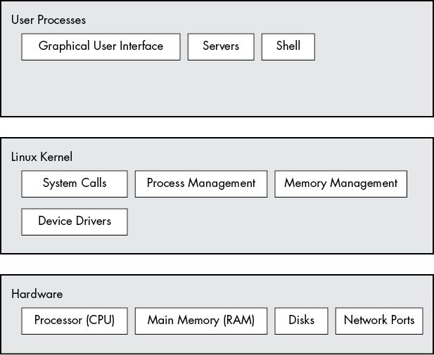
Figure 1-1: General Linux system organization
There is a critical difference between how the kernel and the user processes run: the kernel runs in kernel mode, and the user processes run in user mode. Code running in kernel mode has unrestricted access to the processor and main memory. This is a powerful but dangerous privilege that allows the kernel to easily corrupt and crash the entire system. The memory area that only the kernel can access is called kernel space.
User mode, in comparison, restricts access to a (usually quite small) subset of memory and safe CPU operations. User space refers to the parts of main memory that the user processes can access. If a process makes a mistake and crashes, the consequences are limited and can be cleaned up by the kernel. This means that if your web browser crashes, it probably won’t take down the scientific computation that has been running in the background for days.
In theory, a user process gone haywire can’t cause serious damage to the rest of the system. In reality, it depends on what you consider “serious damage,” as well as the particular privileges of the process, because some processes are allowed to do more than others. For example, can a user process completely wreck the data on a disk? With the correct permissions, yes—and you might consider this to be fairly dangerous. There are safeguards to prevent this, however, and most processes simply aren’t allowed to wreak havoc in this manner.
NOTE
The Linux kernel can run kernel threads, which look much like processes but have access to kernel space. Some examples are kthreadd and kblockd.
1.2 Hardware: Understanding Main Memory
Of all of the hardware on a computer system, main memory is perhaps the most important. In its rawest form, main memory is just a big storage area for a bunch of 0s and 1s. Each slot for a 0 or 1 is called a bit. This is where the running kernel and processes reside—they’re just big collections of bits. All input and output from peripheral devices flows through main memory, also as a bunch of bits. A CPU is just an operator on memory; it reads its instructions and data from the memory and writes data back out to the memory.
You’ll often hear the term state in reference to memory, processes, the kernel, and other parts of a computer system. Strictly speaking, a state is a particular arrangement of bits. For example, if you have four bits in your memory, 0110, 0001, and 1011 represent three different states.
When you consider that a single process can easily consist of millions of bits in memory, it’s often easier to use abstract terms when talking about states. Instead of describing a state using bits, you describe what something has done or is doing at the moment. For example, you might say, “The process is waiting for input” or, “The process is performing Stage 2 of its startup.”
NOTE
Because it’s common to refer to the state in abstract terms rather than to the actual bits, the term image refers to a particular physical arrangement of bits.
1.3 The Kernel
Why are we talking about main memory and states? Nearly everything that the kernel does revolves around main memory. One of the kernel’s tasks is to split memory into many subdivisions, and it must maintain certain state information about those subdivisions at all times. Each process gets its own share of memory, and the kernel must ensure that each process keeps to its share.
The kernel is in charge of managing tasks in four general system areas:
- Processes The kernel is responsible for determining which processes are allowed to use the CPU.
- Memory The kernel needs to keep track of all memory—what is currently allocated to a particular process, what might be shared between processes, and what is free.
- Device drivers The kernel acts as an interface between hardware (such as a disk) and processes. It’s usually the kernel’s job to operate the hardware.
- System calls and support Processes normally use system calls to communicate with the kernel.
We’ll now briefly explore each of these areas.
NOTE
If you’re interested in the detailed workings of a kernel, two good textbooks are Operating System Concepts, 10th edition, by Abraham Silberschatz, Peter B. Galvin, and Greg Gagne (Wiley, 2018), and Modern Operating Systems, 4th edition, by Andrew S. Tanenbaum and Herbert Bos (Prentice Hall, 2014).
1.3.1 Process Management
Process management describes the starting, pausing, resuming, scheduling, and terminating of processes. The concepts behind starting and terminating processes are fairly straightforward, but describing how a process uses the CPU in its normal course of operation is a bit more complex.
On any modern operating system, many processes run “simultaneously.” For example, you might have a web browser and a spreadsheet open on a desktop computer at the same time. However, things are not as they appear: the processes behind these applications typically do not run at exactly the same time.
Consider a system with a one-core CPU. Many processes may be able to use the CPU, but only one process can actually use the CPU at any given time. In practice, each process uses the CPU for a small fraction of a second, then pauses; then another process uses the CPU for another small fraction of a second; then another process takes a turn, and so on. The act of one process giving up control of the CPU to another process is called a context switch.
Each piece of time—called a time slice—gives a process enough time for significant computation (and indeed, a process often finishes its current task during a single slice). However, because the slices are so small, humans can’t perceive them, and the system appears to be running multiple processes at the same time (a capability known as multitasking).
The kernel is responsible for context switching. To understand how this works, let’s think about a situation in which a process is running in user mode but its time slice is up. Here’s what happens:
- The CPU (the actual hardware) interrupts the current process based on an internal timer, switches into kernel mode, and hands control back to the kernel.
- The kernel records the current state of the CPU and memory, which will be essential to resuming the process that was just interrupted.
- The kernel performs any tasks that might have come up during the preceding time slice (such as collecting data from input and output, or I/O, operations).
- The kernel is now ready to let another process run. The kernel analyzes the list of processes that are ready to run and chooses one.
- The kernel prepares the memory for this new process and then prepares the CPU.
- The kernel tells the CPU how long the time slice for the new process will last.
- The kernel switches the CPU into user mode and hands control of the CPU to the process.
The context switch answers the important question of when the kernel runs. The answer is that it runs between process time slices during a context switch.
In the case of a multi-CPU system, as most current machines are, things become slightly more complicated because the kernel doesn’t need to relinquish control of its current CPU in order to allow a process to run on a different CPU, and more than one process may run at a time. However, to maximize the usage of all available CPUs, the kernel typically performs these steps anyway (and may use certain tricks to grab a little more CPU time for itself).
1.3.2 Memory Management
The kernel must manage memory during a context switch, which can be a complex job. The following conditions must hold:
- The kernel must have its own private area in memory that user processes can’t access.
- Each user process needs its own section of memory.
- One user process may not access the private memory of another process.
- User processes can share memory.
- Some memory in user processes can be read-only.
- The system can use more memory than is physically present by using disk space as auxiliary.
Fortunately for the kernel, there is help. Modern CPUs include a memory management unit (MMU) that enables a memory access scheme called virtual memory. When using virtual memory, a process does not directly access the memory by its physical location in the hardware. Instead, the kernel sets up each process to act as if it had an entire machine to itself. When the process accesses some of its memory, the MMU intercepts the access and uses a memory address map to translate the memory location from the process point of view into an actual physical memory location in the machine. The kernel must still initialize and continuously maintain and alter this memory address map. For example, during a context switch, the kernel has to change the map from the outgoing process to the incoming process.
NOTE
The implementation of a memory address map is called a page table.
You’ll learn more about how to view memory performance in Chapter 8.
1.3.3 Device Drivers and Management
The kernel’s role with devices is relatively simple. A device is typically accessible only in kernel mode because improper access (such as a user process asking to turn off the power) could crash the machine. A notable difficulty is that different devices rarely have the same programming interface, even if the devices perform the same task (for example, two different network cards). Therefore, device drivers have traditionally been part of the kernel, and they strive to present a uniform interface to user processes in order to simplify the software developer’s job.
1.3.4 System Calls and Support
There are several other kinds of kernel features available to user processes. For example, system calls (or syscalls) perform specific tasks that a user process alone cannot do well or at all. For example, the acts of opening, reading, and writing files all involve system calls.
Two system calls, fork() and exec(), are important to understanding how processes start:
- fork() When a process calls fork(), the kernel creates a nearly identical copy of the process.
- exec() When a process calls exec(program), the kernel loads and starts program, replacing the current process.
Other than init (see Chapter 6), all new user processes on a Linux system start as a result of fork(), and most of the time, you also run exec() to start a new program instead of running a copy of an existing process. A very simple example is any program that you run at the command line, such as the ls command to show the contents of a directory. When you enter ls into a terminal window, the shell that’s running inside the terminal window calls fork() to create a copy of the shell, and then the new copy of the shell calls exec(ls) to run ls. Figure 1-2 shows the flow of processes and system calls for starting a program like ls.
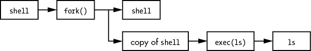
Figure 1-2: Starting a new process
NOTE
System calls are normally denoted with parentheses. In the example shown in Figure 1-2, the process asking the kernel to create another process must perform a fork() system call. This notation derives from the way the call would be written in the C programming language. You don’t need to know C to understand this book; just remember that a system call is an interaction between a process and the kernel. In addition, this book simplifies certain groups of system calls. For example, exec() refers to an entire family of system calls that all perform a similar task but differ in programming. There is also a variant on a process called a thread, which we’ll cover in Chapter 8.
The kernel also supports user processes with features other than traditional system calls, the most common of which are pseudodevices. Pseudodevices look like devices to user processes, but they’re implemented purely in software. This means they don’t technically need to be in the kernel, but they are usually there for practical reasons. For example, the kernel random number generator device (/dev/random) would be difficult to implement securely with a user process.
NOTE
Technically, a user process that accesses a pseudodevice must use a system call to open the device, so processes can’t entirely avoid system calls.
1.4 User Space
As mentioned earlier, the main memory that the kernel allocates for user processes is called user space. Because a process is simply a state (or image) in memory, user space also refers to the memory for the entire collection of running processes. (You may also hear the more informal term userland used for user space; sometimes this also means the programs running in user space.)
Most of the real action on a Linux system happens in user space. Though all processes are essentially equal from the kernel’s point of view, they perform different tasks for users. There is a rudimentary service level (or layer) structure to the kinds of system components that user processes represent. Figure 1-3 shows how an example set of components fit together and interact on a Linux system. Basic services are at the bottom level (closest to the kernel), utility services are in the middle, and applications that users touch are at the top. Figure 1-3 is a greatly simplified diagram because only six components are shown, but you can see that the components at the top are closest to the user (the user interface and web browser); the components in the middle level include a domain name caching server that the web browser uses; and there are several smaller components at the bottom.
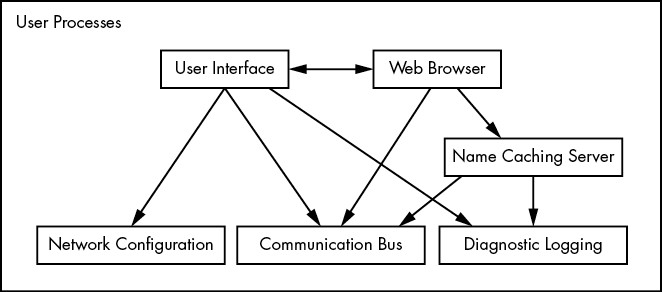
Figure 1-3: Process types and interactions
The bottom level tends to consist of small components that perform single, uncomplicated tasks. The middle level has larger components such as mail, print, and database services. Finally, components at the top level perform complicated tasks that the user often controls directly. Components also use other components. Generally, if one component wants to use another, the second component is either at the same service level or below.
However, Figure 1-3 is only an approximation of the arrangement of user space. In reality, there are no rules in user space. For example, most applications and services write diagnostic messages known as logs. Most programs use the standard syslog service to write log messages, but some prefer to do all of the logging themselves.
In addition, it’s difficult to categorize some user-space components. Server components such as web and database servers can be considered very high-level applications because their tasks are often complicated, so you might place these at the top level in Figure 1-3. However, user applications may depend on these servers to perform tasks that they’d rather not do themselves, so you could also make a case for placing them at the middle level.
1.5 Users
The Linux kernel supports the traditional concept of a Unix user. A user is an entity that can run processes and own files. A user is most often associated with a username; for example, a system could have a user named billyjoe. However, the kernel does not manage the usernames; instead, it identifies users by simple numeric identifiers called user IDs. (You’ll learn more about how usernames correspond to user IDs in Chapter 7.)
Users exist primarily to support permissions and boundaries. Every user-space process has a user owner, and processes are said to run as the owner. A user may terminate or modify the behavior of its own processes (within certain limits), but it cannot interfere with other users’ processes. In addition, users may own files and choose whether to share them with other users.
A Linux system normally has a number of users in addition to the ones that correspond to the real human beings who use the system. You’ll read about these in more detail in Chapter 3, but the most important user to know about is root. The root user is an exception to the preceding rules because root may terminate and alter another user’s processes and access any file on the local system. For this reason, root is known as the superuser. A person who can operate as root—that is, who has root access—is an administrator on a traditional Unix system.
NOTE
Operating as root can be dangerous. It can be difficult to identify and correct mistakes because the system will let you do anything, even if it is harmful to the system. For this reason, system designers constantly try to make root access as unnecessary as possible—for example, by not requiring root access to switch between wireless networks on a notebook. In addition, as powerful as the root user is, it still runs in the operating system’s user mode, not kernel mode.
Groups are sets of users. The primary purpose of groups is to allow a user to share file access to other members of a group.
1.6 Looking Forward
So far, you’ve seen what constitutes a running Linux system. User processes make up the environment that you directly interact with; the kernel manages processes and hardware. Both the kernel and processes reside in memory.
This is great background information, but you can’t learn the details of a Linux system by reading about it alone; you need to get your hands dirty. The next chapter starts your journey by teaching you some user-space basics. Along the way, you’ll learn about a major part of the Linux system that this chapter doesn’t discuss: long-term storage (disks, files, and the like). After all, you need to store your programs and data somewhere.
2
BASIC COMMANDS AND DIRECTORY HIERARCHY
This chapter is a guide to the Unix commands and utilities you’ll encounter throughout this book. This is preliminary material, and you may already know a substantial amount of it. Even if you think you’re up to speed, take a few moments to flip through the chapter just to make sure, especially when it comes to the directory hierarchy material in Section 2.19.
Why Unix commands? Isn’t this a book about how Linux works? It is, of course, but Linux is a Unix flavor at heart. You’ll see the word Unix in this chapter more than Linux because you can take what you learn straight over to BSD and other Unix-flavored systems. I’ve attempted to avoid covering too many Linux-specific user interface extensions, not only to give you a better background for using the other operating systems, but also because these extensions tend to be unstable. You’ll be able to adapt to new Linux releases much more quickly if you know the core commands. In addition, knowing these commands can boost your understanding of the kernel, as many correspond directly to system calls.
NOTE
For more details about Unix for beginners than you’ll find here, consider reading The Linux Command Line, 2nd edition (No Starch Press, 2019), UNIX for the Impatient, 2nd edition (Addison-Wesley Professional, 1995), and Learning the UNIX Operating System, 5th edition (O’Reilly, 2001).
2.1 The Bourne Shell: /bin/sh
The shell is one of the most important parts of a Unix system. A shell is a program that runs commands, like the ones that users enter into a terminal window. These commands can be other programs or built-in features of the shell. The shell also serves as a small programming environment. Unix programmers often break common tasks into smaller components and use the shell to manage tasks and piece things together.
Many important parts of the system are actually shell scripts—text files that contain a sequence of shell commands. If you’ve worked with MS-DOS previously, you can think of shell scripts as very powerful .BAT files. Because they’re important, Chapter 11 is devoted entirely to shell scripts.
As you progress through this book and gain practice, you’ll add to your knowledge of manipulating commands using the shell. One of the best things about the shell is that if you make a mistake, you can easily see what you typed to find out what went wrong, and then try again.
There are many different Unix shells, but all derive features from the Bourne shell (/bin/sh), a standard shell developed at Bell Labs for early versions of Unix. Every Unix system needs a version of the Bourne shell in order to function correctly, as you will see throughout this book.
Linux uses an enhanced version of the Bourne shell called bash or the “Bourne-again” shell. The bash shell is the default shell on most Linux distributions, and /bin/sh is normally a link to bash on a Linux system. You should use the bash shell when running the examples in this book.
NOTE
You may not have bash as your default shell if you’re using this chapter as a guide for a Unix account at an organization where you’re not the system administrator. You can change your shell with chsh or ask your system administrator for help.
2.2 Using the Shell
When you install Linux, you should create at least one regular user to be your personal account. For this chapter, you should log in as the regular user.
2.2.1 The Shell Window
After logging in, open a shell window (often referred to as a terminal). The easiest way to do so from a GUI like Gnome or KDE is to open a terminal application, which starts a shell inside a new window. Once you’ve opened a shell, it should display a prompt at the top that usually ends with a dollar sign ($). On Ubuntu, that prompt should look like name@host:path$, and on Fedora, it’s [name@host path]$, where name is your username, host is the name of your machine, and path is your current working directory (see Section 2.4.1). If you’re familiar with Windows, the shell window will look something like a DOS command prompt; in macOS the Terminal application is essentially the same as a Linux shell window.
This book contains many commands that you will type at a shell prompt. They all begin with a single $ to denote the shell prompt. For example, type this command (just the part in bold, not the $) and press ENTER:
$ echo Hello there.
NOTE
Many shell commands in this book start with #. You should run these commands as the superuser (root), so they require extra caution. The best practice when running them is to use sudo in order to provide some protection and a log that you can look up later for possible errors. You’ll see how to do this in Section 2.20.
Now enter this command:
$ cat /etc/passwd
This command displays the contents of the /etc/passwd system information file and then returns your shell prompt. Don’t worry about what this file does right now; you’ll learn all about it in Chapter 7.
Commands usually begin with a program to run and may be followed by arguments that tell the program what to operate on and how to do so. Here, the program is cat, and there is one argument, /etc/passwd. Many arguments are options that modify the default behavior of a program and typically begin with a dash (-). You’ll see this shortly in the discussion of ls. There are some exceptions that don’t follow this normal command structure, however, such as shell built-ins and the temporary use of environment variables.
2.2.2 cat
The cat program is one of the easiest in Unix to understand; it simply outputs the contents of one or more files or another source of input. The general syntax of a cat command is as follows:
$ cat file1 file2 ...
When you run this command, cat prints the contents of file1, file2, and any other files that you specify as arguments (denoted by ... in the preceding example), and then exits. The program is called cat because it performs concatenation when it prints the contents of more than one file. There are many ways to run cat; let’s use it to explore Unix I/O.
2.2.3 Standard Input and Standard Output
Unix processes use I/O streams to read and write data. Processes read data from input streams and write data to output streams. Streams are very flexible. For example, the source of an input stream can be a file, a device, a terminal window, or even the output stream from another process.
To see an input stream at work, enter cat (with no arguments) and press ENTER. This time, you won’t get any immediate output, and you won’t get your shell prompt back because cat is still running. Now type anything and press ENTER at the end of each line. When used like this, the cat command repeats any line that you type. Once you’re sufficiently bored, press CTRL-D on an empty line to terminate cat and return to the shell prompt.
The reason cat adopts an interactive behavior here has to do with streams. When you don’t specify an input filename, cat reads from the standard input stream provided by the Linux kernel rather than a stream connected to a file. In this case, the standard input is connected to the terminal where you run cat.
NOTE
Pressing CTRL-D on an empty line stops the current standard input entry from the terminal with an EOF (end-of-file) message (and often terminates a program). Don’t confuse this with CTRL-C, which usually terminates a program regardless of its input or output.
Standard output is similar. The kernel gives each process a standard output stream where it can write its output. The cat command always writes its output to the standard output. When you ran cat in the terminal, the standard output was connected to that terminal, so that’s where you saw the output.
Standard input and output are often abbreviated as stdin and stdout. Many commands operate as cat does; if you don’t specify an input file, the command reads from stdin. Output is a little different. Some programs (like cat) send output only to stdout, but others have the option to send output directly to files.
There is a third standard I/O stream, called standard error. You’ll see it in Section 2.14.1.
One of the best features of standard streams is that you can easily manipulate them to read and write to places other than the terminal, as you’ll learn in Section 2.14. In particular, you’ll learn how to connect streams to files and other processes.
2.3 Basic Commands
Now let’s look at some more Unix commands. Most of the following programs take multiple arguments, and some have so many options and formats that an unabridged listing would be pointless. This is a simplified list of the basic commands; you don’t need all of the details just yet.
2.3.1 ls
The ls command lists the contents of a directory. The default is the current directory, but you can add any directory or file as an argument, and there are many useful options. For example, use ls -l for a detailed (long) listing and ls -F to display file type information. Here is a sample long listing; it includes the owner of the file (column 3), the group (column 4), the file size (column 5), and the modification date/time (between column 5 and the filename):
$ ls -l
total 3616
-rw-r--r-- 1 juser users 3804 May 28 10:40 abusive.c
-rw-r--r-- 1 juser users 4165 Aug 13 10:01 battery.zip
-rw-r--r-- 1 juser users 131219 Aug 13 10:33 beav_1.40-13.tar.gz
-rw-r--r-- 1 juser users 6255 May 20 14:34 country.c
drwxr-xr-x 2 juser users 4096 Jul 17 20:00 cs335
-rwxr-xr-x 1 juser users 7108 Jun 16 13:05 dhry
-rw-r--r-- 1 juser users 11309 Aug 13 10:26 dhry.c
-rw-r--r-- 1 juser users 56 Jul 9 15:30 doit
drwxr-xr-x 6 juser users 4096 Feb 20 13:51 dw
drwxr-xr-x 3 juser users 4096 Jul 1 16:05 hough-stuff
You’ll learn more about column 1 of this output in Section 2.17. You can ignore column 2 for now; it’s the number of hard links to the file and is explained in Section 4.6.
2.3.2 cp
In its simplest form, cp copies files. For example, to copy file1 to file2, enter this:
$ cp file1 file2
You can also copy a file to another directory, keeping the same file name in that directory:
$ cp file dir
To copy more than one file to a directory (folder) named dir, try something like this example, which copies three files:
$ cp file1 file2 file3 dir
2.3.3 mv
The mv (move) command works much like cp. In its simplest form, it renames a file. For example, to rename file1 to file2, enter this:
$ mv file1 file2
You can also use mv to move files to other directories in the same way as cp.
2.3.4 touch
The touch command can create a file. If the target file already exists, touch doesn’t change the file, but it does update the file’s modification timestamp. For example, to create an empty file, enter this:
$ touch file
Then run ls -l on that file. You should see output like the following, where the date and time indicate when you ran touch:
$ ls -l file
-rw-r--r-- 1 juser users 0 May 21 18:32 file
To see a timestamp update, wait at least a minute and then run the same touch command again. The timestamp returned by ls -l will update.
2.3.5 rm
The rm command deletes (removes) a file. After you remove a file, it’s usually gone from your system and generally cannot be undeleted unless you restore it from a backup.
$ rm file
2.3.6 echo
The echo command prints its arguments to the standard output:
$ echo Hello again.
Hello again.
The echo command is very useful for finding expansions of shell globs (“wildcards” such as *) and variables (such as $HOME), which you will encounter later in this chapter.
2.4 Navigating Directories
The Unix directory hierarchy starts at /, also called the root directory. The directory separator is the slash (/), not the backslash (\). There are several standard subdirectories in the root directory, such as /usr, as you’ll learn in Section 2.19.
When you refer to a file or directory, you specify a path or pathname. When a path starts with / (such as /usr/lib), it’s a full or absolute path.
A path component identified by two dots (..) specifies the parent of a directory. For example, if you’re working in /usr/lib, the path .. would refer to /usr. Similarly, ../bin would refer to /usr/bin.
One dot (.) refers to the current directory; for example, if you’re in /usr/lib, the path . is still /usr/lib, and ./X11 is /usr/lib/X11. You won’t have to use . very often because most commands default to the current directory if a path doesn’t start with / (so you could just use X11 instead of ./X11 in the preceding example).
A path not beginning with / is called a relative path. Most of the time, you’ll work with relative pathnames, because you’ll already be in or near the directory you need.
Now that you have a sense of the basic directory mechanics, here are some essential directory commands.
2.4.1 cd
The current working directory is the directory that a process (such as the shell) is currently in. In addition to the default shell prompt in most Linux distributions, you can see your current directory with the pwd command, described in Section 2.5.3.
Each process can independently set its own current working directory. The cd command changes the shell’s current working directory:
$ cd dir
If you omit dir, the shell returns to your home directory, the directory where you started when you first logged in. Some programs abbreviate your home directory with the ~ symbol (a tilde).
NOTE
The cd command is a shell built-in. It wouldn’t work as a separate program because if it were to run as a subprocess, it could not (normally) change its parent’s current working directory. This may not seem a particularly important distinction at the moment, but there are times when knowing this fact can clear up confusion.
2.4.2 mkdir
The mkdir command creates a new directory dir:
$ mkdir dir
2.4.3 rmdir
The rmdir command removes the directory dir:
$ rmdir dir
If dir isn’t empty, this command fails. However, if you’re impatient, you probably don’t want to laboriously delete all the files and subdirectories inside dir first. You can use rm -r dir to delete a directory and its contents, but be careful! This is one of the few commands that can do serious damage, especially if you run it as the superuser. The -r option specifies recursive delete to repeatedly delete everything inside dir. Don’t use the -r flag with globs such as a star (*). And above all, always double-check your command before you run it.
2.4.4 Shell Globbing (“Wildcards”)
The shell can match simple patterns to file and directory names, a process known as globbing. This is similar to the concept of wildcards in other systems. The simplest of these is the glob character *, which tells the shell to match any number of arbitrary characters. For example, the following command prints a list of files in the current directory:
$ echo *
The shell matches arguments containing globs to filenames, substitutes the filenames for those arguments, and then runs the revised command line. The substitution is called expansion because the shell substitutes all matching filenames for a simplified expression. Here are some ways to use * to expand filenames:
- at* expands to all filenames that start with at.
- *at expands to all filenames that end with at.
- *at* expands to all filenames that contain at.
If no files match a glob, the bash shell performs no expansion, and the command runs with literal characters such as *. For example, try a command such as echo *dfkdsafh.
NOTE
If you’re used to the Windows command prompt, you might instinctively type *.* to match all files. Break this habit now. In Linux and other versions of Unix, you must use * to match all files. In the Unix shell, *.* matches only files and directories that contain the dot (.) character in their names. Unix filenames do not need extensions and often do not carry them.
Another shell glob character, the question mark (?), instructs the shell to match exactly one arbitrary character. For example, b?at matches boat and brat.
If you don’t want the shell to expand a glob in a command, enclose the glob in single quotes (''). For example, the command echo '*' prints a star. You will find this handy for a few of the commands described in the next section, such as grep and find. (You’ll learn more much about quoting in Section 11.2.)
NOTE
It is important to remember that the shell performs expansions before running commands, and only then. Therefore, if a * makes it to a command without expanding, the shell won’t do anything more with it; it’s up to the command to decide what it wants to do.
There is more to the shell’s pattern-matching capabilities, but * and ? are what you need to know now. Section 2.7 describes glob behavior with those funny files that start with a dot.
2.5 Intermediate Commands
This section describes the most essential intermediate Unix commands.
2.5.1 grep
The grep command prints the lines from a file or input stream that match an expression. For example, to print the lines in the /etc/passwd file that contain the text root, enter this:
$ grep root /etc/passwd
The grep command is extraordinarily handy when operating on multiple files at once because it prints the filename in addition to the matching line. For example, if you want to check every file in /etc that contains the word root, you could use this command:
$ grep root /etc/*
Two of the most important grep options are -i (for case-insensitive matches) and -v (which inverts the search—that is, prints all lines that don’t match). There is also a more powerful variant called egrep (which is just a synonym for grep -E).
grep understands regular expressions, patterns that are grounded in computer science theory and are very common in Unix utilities. Regular expressions are more powerful than wildcard-style patterns, and they have a different syntax. There are three important things to remember about regular expressions:
- .* matches any number of characters, including none (like the * in globs and wildcards).
- .+ matches any one or more characters.
- . matches exactly one arbitrary character.
NOTE
The grep(1) manual page contains a detailed description of regular expressions, but it can be somewhat difficult to read. To learn more, you can read Mastering Regular Expressions, 3rd edition, by Jeffrey E. F. Friedl (O’Reilly, 2006), or see the regular expressions chapter of Programming Perl, 4th edition, by Tom Christensen et al. (O’Reilly, 2012). If you like math and are interested in where regular expressions come from, look up Introduction to Automata Theory, Languages, and Computation, 3rd edition, by Jeffrey Ullman and John Hopcroft (Prentice Hall, 2006).
2.5.2 less
The less command comes in handy when a file is really big or when a command’s output is long and scrolls off the top of the screen.
To page through a big file like /usr/share/dict/words, you can use the command less /usr/share/dict/words. When running less, you’ll see the contents of the file one screenful at a time. Press the spacebar to go forward in the file and press b (lowercase) to skip back one screenful. To quit, press q.
NOTE
The less command is an enhanced version of an older program named more. Linux desktops and servers have less, but it’s not standard on many embedded systems and other Unix systems. If you ever run into a situation when you can’t use less, try more.
You can also search for text inside less. For example, to search forward for a word, you can type /word, and to search backward, you can use ?word. When you find a match, press n to continue searching.
As you’ll learn in Section 2.14, you can send the standard output of nearly any program directly to another program’s standard input. This is exceptionally useful when you have a command with a lot of output to sift through and you’d like to use something like less to view the output. Here’s an example of sending the output of a grep command to less:
$ grep ie /usr/share/dict/words | less
Try this command out for yourself. You’ll probably find many similar uses for less.
2.5.3 pwd
The pwd (print working directory) program simply outputs the name of the current working directory. You may be wondering why you need this when most Linux distributions set up user accounts with the current working directory in the prompt. There are two reasons.
First, not all prompts include the current working directory, especially because you may want to get rid of it in your own prompt because it takes up a lot of space. If you do so, you need pwd.
Second, the symbolic links that you’ll learn about in Section 2.17.2 can sometimes obscure the true full path of the current working directory. Use pwd -P to eliminate this confusion.
2.5.4 diff
To see the differences between two text files, use diff:
$ diff file1 file2
Several options can control the format of the output, and the default output format is often the most comprehensible for human beings. However, most programmers prefer the output from diff -u when they need to send the output to someone else, because automated tools have an easier time with this format.
2.5.5 file
If you see a file and are unsure of its format, try using the file command to see if the system can guess it:
$ file file
You may be surprised by how much this innocent-looking command can do.
2.5.6 find and locate
It’s frustrating when you know that a certain file is in a directory tree somewhere but you just don’t know where. Run find to find file in dir as follows:
$ find dir -name file -print
Like most programs in this section, find is capable of some fancy stuff. However, don’t try options such as -exec before you know the form shown here by heart and understand why you need the -name and -print options. The find command accepts special pattern-matching characters such as *, but you must enclose them in single quotes ('*') to protect the special characters from the shell’s own globbing feature. (Recall from Section 2.4.4 that the shell expands globs before running commands.)
Most systems also have a locate command for finding files. Rather than searching for a file in real time, locate searches an index that the system builds periodically. Searching with locate is much faster than find, but if the file you’re looking for is newer than the index, locate won’t find it.
2.5.7 head and tail
The head and tail commands allow you to quickly view a portion of a file or stream of data. For example, head /etc/passwd shows the first 10 lines of the password file, and tail /etc/passwd shows the last 10 lines.
To change the number of lines to display, use the -n option, where n is the number of lines you want to see (for example, head -5 /etc/passwd). To print lines starting at line n, use tail +n.
2.5.8 sort
The sort command quickly puts the lines of a text file in alphanumeric order. If the file’s lines start with numbers and you want to sort in numerical order, use the -n option. The -r option reverses the order of the sort.
2.6 Changing Your Password and Shell
Use the passwd command to change your password. You’ll be asked for your old password and then prompted for your new password twice.
The best passwords tend to be long “nonsense” sentences that are easy to remember. The longer the password (in terms of character length), the better; try for 16 characters or more. (In the very old days, the number of characters you could use was limited, so you were advised to add strange characters and such.)
You can change your shell with the chsh command (to an alternative such as zsh, ksh or tcsh), but keep in mind that this book assumes you’re running bash, so if you make a change, some of the examples may not work.
2.7 Dot Files
Change to your home directory if you’re not already there, type ls to take a look around, and then run ls -a. Do you see the difference in the output? When you run ls without the -a, you won’t see the configuration files called dot files. These are files and directories whose names begin with a dot (.). Common dot files are .bashrc and .login, and there are dot directories, too, such as .ssh.
There’s nothing special about dot files or directories. Some programs don’t show them by default so that you won’t see a complete mess when listing the contents of your home directory. For example, ls doesn’t list dot files unless you use the -a option. In addition, shell globs don’t match dot files unless you explicitly use a pattern such as .*.
NOTE
You can run into problems with globs because .* matches . and .. (the current and parent directories). You may wish to use a pattern such as .[^.]* or .??* to get all dot files except the current and parent directories.
2.8 Environment and Shell Variables
The shell can store temporary variables, called shell variables, containing the values of text strings. Shell variables are very useful for keeping track of values in scripts, and some shell variables control the way the shell behaves. (For example, the bash shell reads the PS1 variable before displaying the prompt.)
To assign a value to a shell variable, use the equal sign (=). Here’s a simple example:
$ STUFF=blah
The preceding example sets the value of the variable named STUFF to blah. To access this variable, use $STUFF (for example, try running echo $STUFF). You’ll learn about the many uses of shell variables in Chapter 11.
NOTE
Don’t put any spaces around the = when assigning a variable.
An environment variable is like a shell variable, but it’s not specific to the shell. All processes on Unix systems have environment variable storage. The main difference between environment and shell variables is that the operating system passes all of your shell’s environment variables to programs that the shell runs, whereas shell variables cannot be accessed in the commands that you run.
You assign an environment variable with the shell’s export command. For example, if you’d like to make the $STUFF shell variable into an environment variable, use the following:
$ STUFF=blah
$ export STUFF
Because child processes inherit environment variables from their parent, many programs read them for configuration and options. For example, you can put your favorite less command-line options in the LESS environment variable, and less will use those options when you run it. (Many manual pages contain a section labeled ENVIRONMENT that describes these variables.)
2.9 The Command Path
PATH is a special environment variable that contains the command path (or path for short), a list of system directories that the shell searches when trying to locate a command. For example, when you run ls, the shell searches the directories listed in PATH for the ls program. If programs with the same name appear in several directories in the path, the shell runs the first matching program.
If you run echo $PATH, you’ll see that the path components are separated by colons (:). For example:
$ echo $PATH
/usr/local/bin:/usr/bin:/bin
To tell the shell to look in more places for programs, change the PATH environment variable. For example, by using this command, you can add a directory dir to the beginning of the path so that the shell looks in dir before looking in any of the other PATH directories:
$ PATH=dir:$PATH
Or you can append a directory name to the end of the PATH variable, causing the shell to look in dir last:
$ PATH=$PATH:dir
NOTE
You can accidentally wipe out your entire path if you mistype $PATH when modifying your path. If this happens, don’t panic! The damage isn’t permanent; you can just start a new shell. (For a lasting effect, you need to mistype it when editing a certain configuration file, and even then it isn’t difficult to rectify.) The easiest way to return to normal is to close the current terminal window and start another.
2.10 Special Characters
When discussing Linux with others, you should know a few names for some of the special characters that you’ll encounter. If you’re amused by this sort of thing, see the “Jargon File” (http://www.catb.org/jargon/html/) or its printed companion, The New Hacker’s Dictionary, 3rd edition, by Eric S. Raymond (MIT Press, 1996).
Table 2-1 describes a select set of the special characters, many of which you’ve already seen in this chapter. Some utilities, such as the Perl programming language, use almost all of these special characters! (Keep in mind that these are the American names for the characters.)
Table 2-1: Special Characters
NOTE
You will often see control characters marked with a caret; for example, ^C for CTRL-C.
2.11 Command-Line Editing
As you play with the shell, notice that you can edit the command line using the left and right arrow keys, as well as page through previous commands using the up and down arrows. This is standard on most Linux systems.
However, it’s a good idea to forget about the arrow keys and use control key combinations instead. If you learn the ones listed in Table 2-2, you’ll find that you’re better able to enter text in the many Unix programs that use these standard keystrokes.
Table 2-2: Command-Line Keystrokes
| Keystroke | Action |
| CTRL -B | Move the cursor left |
| CTRL -F | Move the cursor right |
| CTRL -P | View the previous command (or move the cursor up) |
| CTRL -N | View the next command (or move the cursor down) |
| CTRL -A | Move the cursor to the beginning of the line |
| CTRL -E | Move the cursor to the end of the line |
| CTRL -W | Erase the preceding word |
| CTRL -U | Erase from cursor to beginning of line |
| CTRL -K | Erase from cursor to end of line |
| CTRL -Y | Paste erased text (for example, from CTRL -U) |
2.12 Text Editors
Speaking of editing, it’s time to learn an editor. To get serious with Unix, you must be able to edit text files without damaging them. Most parts of the system use plaintext configuration files (like the ones in /etc). It’s not difficult to edit files, but you will do it so often that you need a powerful tool for the job.
You should try to learn one of the two de facto standard Unix text editors, vi and Emacs. Most Unix wizards are religious about their choice of editor, but don’t listen to them. Just choose for yourself. If you choose one that matches the way that you work, you’ll find it easier to learn. Basically, the choice comes down to this:
- If you want an editor that can do almost anything and has extensive online help, and you don’t mind doing some extra typing to get these features, try Emacs.
- If speed is everything, give vi a shot; it “plays” a bit like a video game.
Learning the vi and Vim Editors: Unix Text Processing, 7th edition, by Arnold Robbins, Elbert Hannah, and Linda Lamb (O’Reilly, 2008), can tell you everything you need to know about vi. For Emacs, use the online tutorial: start Emacs, press CTRL-H, and then type T. Or read GNU Emacs Manual, 18th edition, by Richard M. Stallman (Free Software Foundation, 2018).
You might be tempted to experiment with a friendlier editor when you first start out, such as nano, Pico, or one of the myriad GUI editors out there, but if you tend to make a habit out of the first thing that you use, you don’t want to go this route.
NOTE
Editing text is where you’ll first start to see a difference between the terminal and the GUI. Editors such as vi run inside the terminal window, using the standard terminal I/O interface. GUI editors start their own window and present their own interface, independent of terminals. Emacs runs in a GUI by default but will run in a terminal window as well.
2.13 Getting Online Help
Linux systems come with a wealth of documentation. For basic commands, the manual pages (or man pages) will tell you what you need to know. For example, to see the manual page for the ls command, run man as follows:
$ man ls
Most manual pages concentrate primarily on reference information, perhaps with some examples and cross-references, but that’s about it. Don’t expect a tutorial, and don’t expect an engaging literary style.
When programs have many options, the manual page often lists the options in some systematic way (for example, in alphabetical order), but it won’t tell you what the important ones are. If you’re patient, you can usually find what you need to know in the man page. If you’re impatient, ask a friend—or pay someone to be your friend so that you can ask him or her.
To search for a manual page by keyword, use the -k option:
$ man -k keyword
This is helpful if you don’t quite know the name of the command that you want. For example, if you’re looking for a command to sort something, run:
$ man -k sort
--snip--
comm (1) - compare two sorted files line by line
qsort (3) - sorts an array
sort (1) - sort lines of text files
sortm (1) - sort messages
tsort (1) - perform topological sort
--snip--
The output includes the manual page name, the manual section (see below), and a quick description of what the manual page contains.
NOTE
If you have any questions about the commands described in the previous sections, you may be able to find the answers by using the man command.
Manual pages are referenced by numbered sections. When someone refers to a manual page, they often put the section number in parentheses next to the name, like ping(8). Table 2-3 lists the sections and their numbers.
Table 2-3: Online Manual Sections
| Section | Description |
| 1 | User commands |
| 2 | Kernel system calls |
| 3 | Higher-level Unix programming library documentation |
| 4 | Device interface and driver information |
| 5 | File descriptions (system configuration files) |
| 6 | Games |
| 7 | File formats, conventions, and encodings (ASCII, suffixes, and so on) |
| 8 | System commands and servers |
Sections 1, 5, 7, and 8 should be good supplements to this book. Section 4 may be of marginal use, and Section 6 would be great if only it were a little larger. You probably won’t be able to use Section 3 if you aren’t a programmer, but you may be able to understand some of the material in Section 2 once you’ve read more about system calls in this book.
Some common terms have many matching manual pages across several sections. By default, man displays the first page that it finds. You can select a manual page by section. For example, to read the /etc/passwd file description (as opposed to the passwd command), you can insert the section number before the page name like so:
$ man 5 passwd
Manual pages cover the essentials, but there are many more ways to get online help (aside from searching the internet). If you’re just looking for a certain option for a command, try entering a command name followed by --help or -h (the option varies from command to command). You may get a deluge (as in the case of ls --help), or you may find just what you’re looking for.
Some time ago, the GNU Project decided that it didn’t like manual pages very much and switched to another format called info (or texinfo). Often this documentation goes further than a typical manual page does, but it can be more complex. To access an info manual, use info with the command name:
$ info command
If you don’t like the info reader, you can send the output to less (just add | less).
Some packages dump their available documentation into /usr/share/doc with no regard for online manual systems such as man or info. See this directory on your system if you find yourself searching for documentation—and, of course, search the internet.
2.14 Shell Input and Output
Now that you’re familiar with basic Unix commands, files, and directories, you’re ready to learn how to redirect standard input and output. Let’s start with standard output.
To send the output of command to a file instead of the terminal, use the > redirection character:
$ command > file
The shell creates file if it does not already exist. If file exists, the shell erases (clobbers) the original file first. (Some shells have parameters that prevent clobbering. For example, you can enter set -C to avoid clobbering in bash.)
You can append the output to the file instead of overwriting it with the >> redirection syntax:
$ command >> file
This is a handy way to collect output in one place when executing sequences of related commands.
To send the standard output of a command to the standard input of another command, use the pipe character (|). To see how this works, try these two commands:
$ head /proc/cpuinfo
$ head /proc/cpuinfo | tr a-z A-Z
You can send output through as many piped commands as you wish; just add another pipe before each additional command.
2.14.1 Standard Error
Occasionally, you may redirect standard output but find that the program still prints something to the terminal. This is called standard error (stderr); it’s an additional output stream for diagnostics and debugging. For example, this command produces an error:
$ ls /fffffffff > f
After completion, f should be empty, but you still see the following error message on the terminal as standard error:
ls: cannot access /fffffffff: No such file or directory
You can redirect the standard error if you like. For example, to send standard output to f and standard error to e, use the 2> syntax, like this:
$ ls /fffffffff > f 2> e
The number 2 specifies the stream ID that the shell modifies. Stream ID 1 is standard output (the default), and 2 is standard error.
You can also send the standard error to the same place as stdout with the >& notation. For example, to send both standard output and standard error to the file named f, try this command:
$ ls /fffffffff > f 2>&1
2.14.2 Standard Input Redirection
To channel a file to a program’s standard input, use the < operator:
$ head < /proc/cpuinfo
You will occasionally run into a program that requires this type of redirection, but because most Unix commands accept filenames as arguments, this isn’t very common. For example, the preceding command could have been written as head /proc/cpuinfo.
2.15 Understanding Error Messages
When you encounter a problem on a Unix-like system such as Linux, you must read the error message. Unlike messages from other operating systems, Unix errors usually tell you exactly what went wrong.
2.15.1 Anatomy of a Unix Error Message
Most Unix programs generate and report the same basic error messages, but there can be subtle differences between the output of any two programs. Here’s an example that you’ll certainly encounter in some form or other:
$ ls /dsafsda
ls: cannot access /dsafsda: No such file or directory
There are three components to this message:
- The program name, ls. Some programs omit this identifying information, which can be annoying when you’re writing shell scripts, but it’s not really a big deal.
- The filename, /dsafsda, which is a more specific piece of information. There’s a problem with this path.
- The error No such file or directory indicates the problem with the filename.
Putting it all together, you get something like “ls tried to open /dsafsda but couldn’t because it doesn’t exist.” This may seem obvious, but these messages can get a little confusing when you run a shell script that includes an erroneous command under a different name.
When troubleshooting errors, always address the first error first. Some programs report that they can’t do anything before reporting a host of other problems. For example, say you run a fictitious program called scumd and you see this error message:
scumd: cannot access /etc/scumd/config: No such file or directory
Following this is a huge list of other error messages that looks like a complete catastrophe. Don’t let those other errors distract you. You probably just need to create /etc/scumd/config.
NOTE
Don’t confuse error messages with warning messages. Warnings often look like errors, but they contain the word warning. A warning usually means something is wrong but the program will try to continue running anyway. To fix a problem noted in a warning message, you may have to hunt down a process and kill it before doing anything else. (You’ll learn about listing and killing processes in Section 2.16.)
2.15.2 Common Errors
Many errors you’ll encounter in Unix programs result from things that can go wrong with files and processes. Quite a few of these errors stem directly from conditions that kernel system calls encounter, so you can learn something about how the kernel sends problems back to processes by looking at them.
No such file or directory
This is the number one error. You tried to access a file that doesn’t exist. Because the Unix file I/O system doesn’t discriminate much between files and directories, this error message covers both cases. You get it when you try to read a file that doesn’t exist, when you try to change to a directory that isn’t there, when you try to write to a file in a directory that doesn’t exist, and so on. This error is also known as ENOENT, short for “Error NO ENTity.”
NOTE
If you’re interested in system calls, this is usually the result of open() returning ENOENT. See the open(2) manual page for more information on the errors it can encounter.
File exists
In this case, you probably tried to create a file that already exists. This is common when you try to create a directory with the same name as a file.
Not a directory, Is a directory
These messages pop up when you try to use a file as a directory, or a directory as a file. For example:
$ touch a
$ touch a/b
touch: a/b: Not a directory
Notice that the error message applies only to the a part of a/b. When you encounter this problem, you may need to dig around a little to find the path component that is being treated like a directory.
No space left on device
You’re out of disk space.
Permission denied
You get this error when you attempt to read or write to a file or directory that you’re not allowed to access (you have insufficient privileges). This error also shows when you try to execute a file that does not have the execute bit set (even if you can read the file). You’ll read more about permissions in Section 2.17.
Operation not permitted
This usually happens when you try to kill a process that you don’t own.
Segmentation fault, Bus error
A segmentation fault essentially means that the person who wrote the program that you just ran screwed up somewhere. The program tried to access a part of memory that it was not allowed to touch, and the operating system killed it. Similarly, a bus error means that the program tried to access some memory in a way it shouldn’t have. When you get one of these errors, you might be giving a program some input that it did not expect. In rare cases, it might be faulty memory hardware.
2.16 Listing and Manipulating Processes
Recall from Chapter 1 that a process is a running program. Each process on the system has a numeric process ID (PID). For a quick listing of running processes, just run ps on the command line. You should get a list like this one:
$ ps PID TTY STAT TIME COMMAND 520 p0 S 0:00 -bash 545 ? S 3:59 /usr/X11R6/bin/ctwm -W 548 ? S 0:10 xclock -geometry -0-0 2159 pd SW 0:00 /usr/bin/vi lib/addresses
31956 p3 R 0:00 ps
The fields are as follows:
- PID The process ID.
- TTY The terminal device where the process is running. More about this later.
- STAT The process status—that is, what the process is doing and where its memory resides. For example, S means sleeping and R means running. (See the ps(1) manual page for a description of all the symbols.)
- TIME The amount of CPU time in minutes and seconds that the process has used so far. In other words, the total amount of time that the process has spent running instructions on the processor. Remember that because processes don’t run constantly, this is different from the time since the process started (or “wall-clock time”).
- COMMAND This one might seem obvious as the command used to run the program, but be aware that a process can change this field from its original value. Furthermore, the shell can perform glob expansion, and this field will reflect the expanded command instead of what you enter at the prompt.
NOTE
PIDs are unique for each process running on a system. However, after a process terminates, the kernel can eventually reuse the PID for a new process.
2.16.1 ps Command Options
The ps command has many options. To make things more confusing, you can specify options in three different styles—Unix, BSD, and GNU. Many people find the BSD style to be the most comfortable (perhaps because it involves less typing), so that’s what we’ll use in this book. Here are some of the most useful option combinations:
- ps x Show all of your running processes.
- ps ax Show all processes on the system, not just the ones you own.
- ps u Include more detailed information on processes.
- ps w Show full command names, not just what fits on one line.
As with other programs, you can combine options, as in ps aux and ps auxw.
To check on a specific process, add its PID to the argument list of the ps command. For example, to inspect the current shell process, you can use ps u $$ ($$ is a shell variable that evaluates to the current shell’s PID). You’ll find information on the administration commands top and lsof in Chapter 8. These can be useful for locating processes, even when you’re doing something other than system maintenance.
2.16.2 Process Termination
To terminate a process, you send it a signal—a message to a process from the kernel—with the kill command. In most cases, all you need to do is this:
$ kill pid
There are many types of signals. The default (used above) is TERM, or terminate. You can send different signals by adding an extra option to kill. For example, to freeze a process instead of terminating it, use the STOP signal:
$ kill -STOP pid
A stopped process is still in memory, ready to pick up where it left off. Use the CONT signal to continue running the process again:
$ kill -CONT pid
NOTE
Using CTRL-C to terminate a process that is running in the current terminal is the same as using kill to end the process with the INT (interrupt) signal.
The kernel gives most processes a chance to clean up after themselves upon receiving signals (with the signal handler mechanism). However, some processes may choose a nonterminating action in response to a signal, get wedged in the act of trying to handle it, or simply ignore it, so you might find a process still running after you try to terminate it. If this happens and you really need to kill a process, the most brutal way to terminate it is with the KILL signal. Unlike other signals, KILL cannot be ignored; in fact, the operating system doesn’t even give the process a chance. The kernel just terminates the process and forcibly removes it from memory. Use this method only as a last resort.
You should not kill processes indiscriminately, especially if you don’t know what they’re doing. You may be shooting yourself in the foot.
You may see other users entering numbers instead of names with kill—for example, kill -9 instead of kill -KILL. This is because the kernel uses numbers to denote the different signals; you can use kill this way if you know the number of the signal that you want to send. Run kill -l to get a mapping of signal numbers to names.
2.16.3 Job Control
Shells support job control, a way to send TSTP (similar to STOP) and CONT signals to programs by using various keystrokes and commands. This allows you to suspend and switch between programs you’re using. For example, you can send a TSTP signal with CTRL-Z and then start the process again by entering fg (bring to foreground) or bg (move to background; see the next section). But despite its utility and the habits of many experienced users, job control is not necessary and can be confusing for beginners: It’s common for users to press CTRL-Z instead of CTRL-C, forget about what they were running, and eventually end up with numerous suspended processes.
NOTE
To see if you’ve accidentally suspended any processes on your current terminal, run the jobs command.
If you want to run multiple programs, run each in a separate terminal window, put noninteractive processes in the background (as explained in the next section), and learn to use the screen and tmux utilities.
2.16.4 Background Processes
Normally, when you run a Unix command from the shell, you don’t get the shell prompt back until the program finishes executing. However, you can detach a process from the shell and put it in the “background” with the ampersand (&); this gives you the prompt back. For example, if you have a large file that you need to decompress with gunzip (you’ll see this in Section 2.18), and you want to do some other stuff while it’s running, run a command like this one:
$ gunzip file.gz &
The shell should respond by printing the PID of the new background process, and the prompt should return immediately so that you can continue working. If the process takes a very long time, it can even continue to run after you log out, which comes in particularly handy if you have to run a program that does a lot of number crunching. If the process finishes before you log out or close the terminal window, the shell usually notifies you, depending on your setup.
NOTE
If you’re remotely accessing a machine and want to keep a program running when you log out, you may need to use the nohup command; see its manual page for details.
The dark side of running background processes is that they may expect to work with the standard input (or worse, read directly from the terminal). If a program tries to read something from the standard input when it’s in the background, it can freeze (try fg to bring it back) or terminate. Also, if the program writes to the standard output or standard error, the output can appear in the terminal window with no regard for anything else running there, meaning that you can get unexpected output when you’re working on something else.
The best way to make sure that a background process doesn’t bother you is to redirect its output (and possibly input) as described in Section 2.14.
If spurious output from background processes gets in your way, learn how to redraw the content of your terminal window. The bash shell and most full-screen interactive programs support CTRL-L to redraw the entire screen. If a program is reading from the standard input, CTRL-R usually redraws the current line, but pressing the wrong sequence at the wrong time can leave you in an even worse situation than before. For example, entering CTRL-R at the bash prompt puts you in reverse isearch mode (press ESC to exit).
2.17 File Modes and Permissions
Every Unix file has a set of permissions that determine whether you can read, write, or run the file. Running ls -l displays the permissions. Here’s an example of such a display:
-rw-r--r--1 1 juser somegroup 7041 Mar 26 19:34 endnotes.html
The file’s mode 1 represents the file’s permissions and some extra information. There are four parts to the mode, as illustrated in Figure 2-1.
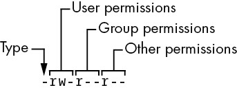
Figure 2-1: The pieces of a file mode
The first character of the mode is the file type. A dash (-) in this position, as in the example, denotes a regular file, meaning that there’s nothing special about the file; it’s just binary or text data. This is by far the most common kind of file. Directories are also common and are indicated by a d in the file type slot. (Section 3.1 lists the remaining file types.)
The rest of a file’s mode contains the permissions, which break down into three sets: user, group, and other, in that order. For example, the rw- characters in the example are the user permissions, the r-- characters that follow are the group permissions, and the final r-- characters are the other permissions.
Each permission set can contain four basic representations:
- r means that the file is readable.
- w means that the file is writable.
- x means that the file is executable (you can run it as a program).
- - means “nothing” (more specifically, the permission for that slot in the set has not been granted).
The user permissions (the first set) pertain to the user who owns the file. In the preceding example, that’s juser. The second set, group permissions, are for the file’s group (somegroup in the example). Any user in that group can take advantage of these permissions. (Use the groups command to see what group you’re in, and see Section 7.3.5 for more information.)
Everyone else on the system has access according to the third set, the other permissions, which are sometimes called world permissions.
NOTE
Each read, write, and execute permission slot is sometimes called a permission bit because the underlying representation in the operating system is a series of bits. Therefore, you may hear people refer to parts of the permissions as “the read bits.”
Some executable files have an s in the user permissions listing instead of an x. This indicates that the executable is setuid, meaning that when you execute the program, it runs as though the file owner is the user instead of you. Many programs use this setuid bit to run as root in order to get the privileges they need to change system files. One example is the passwd program, which needs to change the /etc/passwd file.
2.17.1 Modifying Permissions
To change permissions on a file or directory, use the chmod command. First, pick the set of permissions that you want to change, and then pick the bit to change. For example, to add group (g) and world (o, for “other”) read (r) permissions to file, you could run these two commands:
$ chmod g+r file
$ chmod o+r file
Or you could do it all in one shot:
$ chmod go+r file
To remove these permissions, use go-r instead of go+r.
NOTE
Obviously, you shouldn’t make files world-writable because doing so enables anyone on your system to change them. But would this also allow anyone connected to the internet to change them? Probably not, unless your system has a network security hole. In that case, file permissions won’t help you anyway.
You may sometimes see people changing permissions with numbers, for example:
$ chmod 644 file
This is called an absolute change because it sets all permission bits at once. To understand how this works, you need to know how to represent the permission bits in octal form (each numeral represents a number in base 8, 0 through 7, and corresponds to a permission set). See the chmod(1) manual page or info manual for more.
You don’t really need to know how to construct absolute modes if you prefer to use them; just memorize the modes that you use most often. Table 2-4 lists the most common ones.
Table 2-4: Absolute Permission Modes
| Mode | Meaning | Used for |
| 644 | user: read/write; group, other: read | files |
| 600 | user: read/write; group, other: none | files |
| 755 | user: read/write/execute; group, other: read/execute | directories, programs |
| 700 | user: read/write/execute; group, other: none | directories, programs |
| 711 | user: read/write/execute; group, other: execute | directories |
Directories also have permissions. You can list the contents of a directory if it’s readable, but you can only access a file in a directory if the directory is executable. You need both in most cases; one common mistake people make when setting the permissions of directories is to accidentally remove the execute permission when using absolute modes.
Finally, you can specify a set of default permissions with the umask shell command, which applies a predefined set of permissions to any new file you create. In general, use umask 022 if you want everyone to be able to see all of the files and directories that you create, and use umask 077 if you don’t. If you want to make your desired permissions mask apply to new windows and later sessions, you need to put the umask command with the desired mode in one of your startup files, as discussed in Chapter 13.
2.17.2 Working with Symbolic Links
A symbolic link is a file that points to another file or a directory, effectively creating an alias (like a shortcut in Windows). Symbolic links offer quick access to obscure directory paths.
In a long directory listing, symbolic links look like this (notice the l as the file type in the file mode):
lrwxrwxrwx 1 ruser users 11 Feb 27 13:52 somedir -> /home/origdir
If you try to access somedir in this directory, the system gives you /home/origdir instead. Symbolic links are simply filenames that point to other names. Their names and the paths to which they point don’t have to mean anything. In the preceding example, /home/origdir doesn’t need to exist.
In fact, if /home/origdir does not exist, any program that accesses somedir returns an error reporting that somedir doesn’t exist (except for ls somedir, a command that stupidly informs you that somedir is somedir). This can be baffling because you can see something named somedir right in front of your eyes.
This is not the only way that symbolic links can be confusing. Another problem is that you can’t identify the characteristics of a link target just by looking at the name of the link; you must follow the link to see if it goes to a file or directory. Your system may also have links that point to other links, which are called chained symbolic links and can be a nuisance when you’re trying to track them down.
To create a symbolic link from target to linkname, use ln -s as follows:
$ ln -s target linkname
The linkname argument is the name of the symbolic link, the target argument is the path of the file or directory that the link points to, and the -s flag specifies a symbolic link (see the warning that follows).
When making a symbolic link, check the command twice before you run it, because several things can go wrong. For example, if you accidentally reverse the order of the arguments (ln -s linkname target), you’re in for some fun if linkname is a directory that already exists. If this is the case (and it quite often is), ln creates a link named target inside linkname, and the link will point to itself unless linkname is a full path. If something goes wrong when you create a symbolic link to a directory, check that directory for errant symbolic links and remove them.
Symbolic links can also cause headaches when you don’t know that they exist. For example, you can easily edit what you think is a copy of a file but is actually a symbolic link to the original.
WARNING
Don’t forget the -s option when creating a symbolic link. Without it, ln creates a hard link, giving an additional real filename to a single file. The new filename has the status of the old one; it points (links) directly to the file data instead of to another filename as a symbolic link does. Hard links can be even more confusing than symbolic links. Unless you understand the material in Section 4.6, avoid using them.
With all these warnings about symbolic links, you might be wondering why anyone would want to use them. As it turns out, their pitfalls are significantly outweighed by the power they provide for organizing files and their ability to easily patch up small problems. One common use case is when a program expects to find a particular file or directory that already exists somewhere else on your system. You don’t want to make a copy, and if you can’t change the program, you can just create a symbolic link from it to the actual file or directory location.
2.18 Archiving and Compressing Files
Now that you’ve learned about files, permissions, and possible errors, you need to master gzip and tar, two common utilities for compressing and bundling files and directories.
2.18.1 gzip
The program gzip (GNU Zip) is one of the current standard Unix compression programs. A file that ends with .gz is a GNU Zip archive. Use gunzip file.gz to uncompress <file>.gz and remove the suffix; to compress the file again, use gzip file.
2.18.2 tar
Unlike the ZIP programs for other operating systems, gzip does not create archives of files; that is, it doesn’t pack multiple files and directories into a single file. To create an archive, use tar instead:
$ tar cvf archive.tar file1 file2 ...
Archives created by tar usually have a .tar suffix (this is by convention; it isn’t required). For example, in the previous command, file1, file2, and so on are the names of the files and directories that you wish to archive in <archive>.tar. The c flag activates create mode. The v and f flags have more specific roles.
The v flag activates verbose diagnostic output, causing tar to print the names of the files and directories in the archive when it encounters them. Adding another v causes tar to print details such as file size and permissions. If you don’t want tar to tell you what it’s doing, omit the v flag.
The f flag denotes the file option. The next argument on the command line after the f flag must be the archive file for tar to create (in the preceding example, it is <archive>.tar). You must use this option followed by a filename at all times, except with tape drives. To use standard input or output, set the filename to a dash (-).
Unpacking .tar Files
To unpack a .tar file with tar use the x flag:
$ tar xvf archive.tar
In this command, the x flag puts tar into extract (unpack) mode. You can extract individual parts of the archive by entering the names of the parts at the end of the command line, but you must know their exact names. (To find out for sure, see the table-of-contents mode described next.)
NOTE
When using extract mode, remember that tar does not remove the archived .tar file after extracting its contents.
Using Table-of-Contents Mode
Before unpacking, it’s usually a good idea to check the contents of a .tar file with the table-of-contents mode by using the t flag instead of the x flag. This mode verifies the archive’s basic integrity and prints the names of all files inside. If you don’t test an archive before unpacking it, you can end up dumping a huge mess of files into the current directory, which can be really difficult to clean up.
When you check an archive with the t mode, verify that everything is in a rational directory structure; that is, all file pathnames in the archive should start with the same directory. If you’re unsure, create a temporary directory, change to it, and then extract. (You can always use mv * .. if the archive didn’t create a mess.)
When unpacking, consider using the p option to preserve permissions. Use this in extract mode to override your umask and get the exact permissions specified in the archive. The p option is the default when you’re working as the superuser. If you’re having trouble with permissions and ownership when unpacking an archive as the superuser, make sure that you’re waiting until the command terminates and you get the shell prompt back. Although you may only want to extract a small part of an archive, tar must run through the whole thing, and you must not interrupt the process because it sets the permissions only after checking the entire archive.
Commit all of the tar options and modes in this section to memory. If you’re having trouble, make some flash cards. This may sound like grade school, but it’s very important to avoid careless mistakes with this command.
2.18.3 Compressed Archives (.tar.gz)
Many beginners find it confusing that archives are normally found compressed, with filenames ending in .tar.gz. To unpack a compressed archive, work from the right side to the left; get rid of the .gz first and then worry about the .tar. For example, these two commands decompress and unpack <file>.tar.gz:
$ gunzip file.tar.gz
$ tar xvf file.tar
When starting out, it’s fine to do this one step at a time, first running gunzip to decompress and then tar to verify and unpack. To create a compressed archive, do the reverse: run tar first and gzip second. Do this frequently enough, and you’ll soon memorize how the archiving and compression process works. But even if you don’t do it all that often, you can see how tiresome all of the typing can become and you’ll start looking for shortcuts. Let’s take a look at those now.
2.18.4 zcat
The method just shown isn’t the fastest or most efficient way to invoke tar on a compressed archive, and it wastes disk space and kernel I/O time. A better way is to combine archival and compression functions with a pipeline. For example, this command pipeline unpacks <file>.tar.gz:
$ zcat file.tar.gz | tar xvf -
The zcat command is the same as gunzip -dc. The -d option decompresses and the -c option sends the result to standard output (in this case, to the tar command).
Because it’s so common to use zcat, the version of tar that comes with Linux has a shortcut. You can use z as an option to automatically invoke gzip on the archive; this works both for extracting an archive (with the x or t modes in tar) and creating one (with c). For example, use the following to verify a compressed archive:
$ tar ztvf file.tar.gz
However, try to remember that you’re actually performing two steps when taking the shortcut.
NOTE
A .tgz file is the same as a .tar.gz file. The suffix is meant to fit into FAT (MS-DOS-based) filesystems.
2.18.5 Other Compression Utilities
Two more compression programs are xz and bzip2, whose compressed files end with .xz and .bz2, respectively. While marginally slower than gzip, these often compact text files a little more. The decompressing programs to use are unxz and bunzip2, and the options of both are close enough to their gzip counterparts that you don’t need to learn anything new.
Most Linux distributions come with zip and unzip programs that are compatible with the ZIP archives on Windows systems. They work on the usual .zip files as well as self-extracting archives ending in .exe. But if you encounter a file that ends in .Z, you have found a relic created by the compress program, which was once the Unix standard. The gunzip program can unpack these files, but gzip won’t create them.
2.19 Linux Directory Hierarchy Essentials
Now that you know how to examine files, change directories, and read manual pages, you’re ready to start exploring your system files and directories. The details of the Linux directory structure are outlined in the Filesystem Hierarchy Standard, or FHS (https://refspecs.linuxfoundation.org/fhs.shtml), but a brief walkthrough should suffice for now.
Figure 2-2 offers a simplified overview of the hierarchy, showing some of the directories under /, /usr, and /var. Notice that the directory structure under /usr contains some of the same directory names as /.
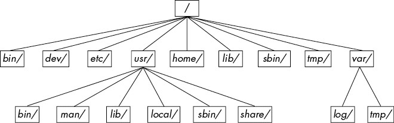
Figure 2-2: Linux directory hierarchy
Here are the most important subdirectories in root:
- /bin Contains ready-to-run programs (also known as executables), including most of the basic Unix commands such as ls and cp. Most of the programs in /bin are in binary format, having been created by a C compiler, but some are shell scripts in modern systems.
- /dev Contains device files. You’ll learn more about these in Chapter 3.
- /etc This core system configuration directory (pronounced EHT-see) contains the user password, boot, device, networking, and other setup files.
- /home Holds home (personal) directories for regular users. Most Unix installations conform to this standard.
- /lib An abbreviation for library, this directory holds library files containing code that executables can use. There are two types of libraries: static and shared. The /lib directory should contain only shared libraries, but other lib directories, such as /usr/lib, contain both varieties as well as other auxiliary files. (We’ll discuss shared libraries in more detail in Chapter 15.)
- /proc Provides system statistics through a browsable directory-and-file interface. Much of the /proc subdirectory structure on Linux is unique, but many other Unix variants have similar features. The /proc directory contains information about currently running processes as well as some kernel parameters.
- /run Contains runtime data specific to the system, including certain process IDs, socket files, status records, and, in many cases, system logging. This is a relatively recent addition to the root directory; in older systems, you can find it in /var/run. On newer systems, /var/run is a symbolic link to /run.
- /sys This directory is similar to /proc in that it provides a device and system interface. You’ll read more about /sys in Chapter 3.
- /sbin The place for system executables. Programs in /sbin directories relate to system management, so regular users usually do not have /sbin components in their command paths. Many of the utilities found here don’t work if not run as root.
- /tmp A storage area for smaller, temporary files that you don’t care much about. Any user may read to and write from /tmp, but the user may not have permission to access another user’s files there. Many programs use this directory as a workspace. If something is extremely important, don’t put it in /tmp because most distributions clear /tmp when the machine boots and some even remove its old files periodically. Also, don’t let /tmp fill up with garbage because its space is usually shared with something critical (the rest of /, for example).
- /usr Although pronounced “user,” this subdirectory has no user files. Instead, it contains a large directory hierarchy, including the bulk of the Linux system. Many of the directory names in /usr are the same as those in the root directory (like /usr/bin and /usr/lib), and they hold the same type of files. (The reason that the root directory does not contain the complete system is primarily historic—in the past, it was to keep space requirements low for the root.)
- /var The variable subdirectory, where programs record information that can change over the course of time. System logging, user tracking, caches, and other files that system programs create and manage are here. (You’ll notice a /var/tmp directory here, but the system doesn’t wipe it on boot.)
2.19.1 Other Root Subdirectories
There are a few other interesting subdirectories in the root directory:
- /boot Contains kernel boot loader files. These files pertain only to the very first stage of the Linux startup procedure, so you won’t find information about how Linux starts up its services in this directory. See Chapter 5 for more about this.
- /media A base attachment point for removable media such as flash drives that is found in many distributions.
- /opt This may contain additional third-party software. Many systems don’t use /opt.
2.19.2 The /usr Directory
The /usr directory may look relatively clean at first glance, but a quick look at /usr/bin and /usr/lib reveals that there’s a lot here; /usr is where most of the user-space programs and data reside. In addition to /usr/bin, /usr/sbin, and /usr/lib, /usr contains the following:
- /include Holds header files used by the C compiler.
- /local Is where administrators can install their own software. Its structure should look like that of / and /usr.
- /man Contains manual pages.
- /share Contains files that should work on other kinds of Unix machines with no loss of functionality. These are usually auxiliary data files that programs and libraries read as necessary. In the past, networks of machines would share this directory from a file server, but today a share directory used in this manner is rare because there are no realistic space restraints for these kinds of files on contemporary systems. Instead, on Linux distributions, you’ll find /man, /info, and many other subdirectories here because it is an easily understood convention.
2.19.3 Kernel Location
On Linux systems, the kernel is normally a binary file /vmlinuz or /boot/vmlinuz. A boot loader loads this file into memory and sets it in motion when the system boots. (You’ll find details on the boot loader in Chapter 5.)
Once the boot loader starts the kernel, the main kernel file is no longer used by the running system. However, you’ll find many modules that the kernel loads and unloads on demand during the course of normal system operation. Called loadable kernel modules, they are located under /lib/modules.
2.20 Running Commands as the Superuser
Before going any further, you should learn how to run commands as the superuser. You may be tempted to start a root shell, but doing so has many disadvantages:
- You have no record of system-altering commands.
- You have no record of the users who performed system-altering commands.
- You don’t have access to your normal shell environment.
- You have to enter the root password (if you have one).
2.20.1 sudo
Most distributions use a package called sudo to allow administrators to run commands as root when they are logged in as themselves. For example, in Chapter 7, you’ll learn about using vipw to edit the /etc/passwd file. You could do it like this:
$ sudo vipw
When you run this command, sudo logs this action with the syslog service under the local2 facility. You’ll also learn more about system logs in Chapter 7.
2.20.2 /etc/sudoers
Of course, the system doesn’t let just any user run commands as the superuser; you must configure the privileged users in your /etc/sudoers file. The sudo package has many options (that you’ll probably never use), which makes the syntax in /etc/sudoers somewhat complicated. For example, this file gives user1 and user2 the power to run any command as root without having to enter a password:
User_Alias ADMINS = user1, user2
ADMINS ALL = NOPASSWD: ALL
root ALL=(ALL) ALL
The first line defines an ADMINS user alias with the two users, and the second line grants the privileges. The ALL = NOPASSWD: ALL part means that the users in the ADMINS alias can use sudo to execute commands as root. The second ALL means “any command.” The first ALL means “any host.” (If you have more than one machine, you can set different kinds of access for each machine or group of machines, but we won’t cover that feature.)
The root ALL=(ALL) ALL simply means that the superuser may also use sudo to run any command on any host. The extra (ALL) means that the superuser may also run commands as any other user. You can extend this privilege to the ADMINS users by adding (ALL) to the second /etc/sudoers line, as shown here:
ADMINS ALL = (ALL) NOPASSWD: ALL
NOTE
Use the visudo command to edit /etc/sudoers. This command checks for file syntax errors after you save the file.
2.20.3 sudo Logs
Although we’ll go into logs in more detail later in the book, you can find the sudo logs on most systems with this command:
$ journalctl SYSLOG_IDENTIFIER=sudo
On older systems, you’ll need to look for a logfile in /var/log, such as /var/log/auth.log.
That’s it for sudo for now. If you need to use its more advanced features, see the sudoers(5) and sudo(8) manual pages. (The actual mechanics of user switching are covered in Chapter 7.)
2.21 Looking Forward
You should now know how to do the following at the command line: run programs, redirect output, interact with files and directories, view process listings, view manual pages, and generally make your way around the user space of a Linux system. You should also be able to run commands as the superuser. You may not yet know much about the internal details of user-space components or what goes on in the kernel, but with the basics of files and processes under your belt, you’re on your way. In the next few chapters, you’ll be working with both kernel and user-space system components using the command-line tools that you just learned.
3
DEVICES
This chapter is a basic tour of the kernel-provided device infrastructure in a functioning Linux system. Throughout the history of Linux, there have been many changes to how the kernel presents devices to the user. We’ll begin by looking at the traditional system of device files to see how the kernel provides device configuration information through sysfs. Our goal is to be able to extract information about the devices on a system in order to understand a few rudimentary operations. Later chapters will cover interacting with specific kinds of devices in greater detail.
It’s important to understand how the kernel interacts with user space when presented with new devices. The udev system enables user-space programs to automatically configure and use new devices. You’ll see the basic workings of how the kernel sends a message to a user-space process through udev, as well as what the process does with it.
3.1 Device Files
It’s easy to manipulate most devices on a Unix system because the kernel presents many of the device I/O interfaces to user processes as files. These device files are sometimes called device nodes. Aside from programmers using regular file operations to work with devices, some devices are also accessible to standard programs like cat, so you don’t have to be a programmer to use a device. However, there is a limit to what you can do with a file interface, so not all devices or device capabilities are accessible with standard file I/O.
Linux uses the same design for device files as do other Unix flavors. Device files are in the /dev directory, and running ls /dev reveals quite a few files in /dev. So how do you work with devices?
To get started, consider this command:
$ echo blah blah > /dev/null
Like any other command with redirected output, this sends some stuff from the standard output to a file. However, the file is /dev/null, a device, so the kernel bypasses its usual file operations and uses a device driver on data written to this device. In the case of /dev/null, the kernel simply accepts the input data and throws it away.
To identify a device and view its permissions, use ls -l. Here are some examples:
$ ls -l
brw-rw---- 1 root disk 8, 1 Sep 6 08:37 sda1
crw-rw-rw- 1 root root 1, 3 Sep 6 08:37 null
prw-r--r-- 1 root root 0 Mar 3 19:17 fdata
srw-rw-rw- 1 root root 0 Dec 18 07:43 log
Note the first character of each line (the first character of the file’s mode). If this character is b, c, p, or s, the file is a device. These letters stand for block, character, pipe, and socket, respectively:
Block device
- Programs access data from a block device in fixed chunks. The sda1 in the preceding example is a disk device, a type of block device. Disks can be easily split up into blocks of data. Because a block device’s total size is fixed and easy to index, processes have quick random access to any block in the device with the help of the kernel.
Character device
- Character devices work with data streams. You can only read characters from or write characters to character devices, as previously demonstrated with /dev/null. Character devices don’t have a size; when you read from or write to one, the kernel usually performs a read or write operation on it. Printers directly attached to your computer are represented by character devices. It’s important to note that during character device interaction, the kernel cannot back up and reexamine the data stream after it has passed data to a device or process.
Pipe device
- Named pipes are like character devices, with another process at the other end of the I/O stream instead of a kernel driver.
Socket device
- Sockets are special-purpose interfaces that are frequently used for interprocess communication. They’re often found outside of the /dev directory. Socket files represent Unix domain sockets; you’ll learn more about those in Chapter 10.
In file listings from ls -l of block and character devices, the numbers before the dates are the major and minor device numbers that the kernel uses to identify the device. Similar devices usually have the same major number, such as sda3 and sdb1 (both of which are hard disk partitions).
NOTE
Not all devices have device files, because the block and character device I/O interfaces are not appropriate in all cases. For example, network interfaces don’t have device files. It is theoretically possible to interact with a network interface using a single character device, but because it would be difficult, the kernel offers other I/O interfaces.
3.2 The sysfs Device Path
The traditional Unix /dev directory is a convenient way for user processes to reference and interface with devices supported by the kernel, but it’s also a very simplistic scheme. The name of the device in /dev tells you a little about the device, but usually not enough to be helpful. Another problem is that the kernel assigns devices in the order in which they are found, so a device may have a different name between reboots.
To provide a uniform view for attached devices based on their actual hardware attributes, the Linux kernel offers the sysfs interface through a system of files and directories. The base path for devices is /sys/devices. For example, the SATA hard disk at /dev/sda might have the following path in sysfs:
/sys/devices/pci0000:00/0000:00:17.0/ata3/host0/target0:0:0/0:0:0:0/block/sda
As you can see, this path is quite long compared with the /dev/sda filename, which is also a directory. But you can’t really compare the two paths because they have different purposes. The /dev file enables user processes to use the device, whereas the /sys/devices path is used to view information and manage the device. If you list the contents of a device path such as the preceding one, you’ll see something like the following:
alignment_offset discard_alignment holders removable size uevent
bdi events inflight ro slaves
capability events_async power sda1 stat
dev events_poll_msecs queue sda2 subsystem
device ext_range range sda5 trace
The files and subdirectories here are meant to be read primarily by programs rather than humans, but you can get an idea of what they contain and represent by looking at an example such as the /dev file. Running cat dev in this directory displays the numbers 8:0, which happen to be the major and minor device numbers of /dev/sda.
There are a few shortcuts in the /sys directory. For example, /sys/block should contain all of the block devices available on a system. However, those are just symbolic links; you’d run ls -l /sys/block to reveal the true sysfs paths.
It can be difficult to find the sysfs location of a device in /dev. Use the udevadm command as follows to show the path and several other interesting attributes:
$ udevadm info --query=all --name=/dev/sda
You’ll find more details about udevadm and the entire udev system in Section 3.5.
3.3 dd and Devices
The program dd is extremely useful when you are working with block and character devices. Its sole function is to read from an input file or stream and write to an output file or stream, possibly doing some encoding conversion on the way. One particularly useful dd feature with respect to block devices is that you can process a chunk of data in the middle of a file, ignoring what comes before or after.
WARNING
dd is very powerful, so make sure you know what you’re doing when you run it. It’s very easy to corrupt files and data on devices by making a careless mistake. It often helps to write the output to a new file if you’re not sure what it will do.
dd copies data in blocks of a fixed size. Here’s how to use dd with a character device, utilizing a few common options:
$ dd if=/dev/zero of=new_file bs=1024 count=1
As you can see, the dd option format differs from the option formats of most other Unix commands; it’s based on an old IBM Job Control Language (JCL) style. Rather than use the dash (-) character to signal an option, you name an option and set its value with the equal (=) sign. The preceding example copies a single 1,024-byte block from /dev/zero (a continuous stream of zero bytes) to new_file.
These are the important dd options:
- if=file The input file. The default is the standard input.
- of=file The output file. The default is the standard output.
- bs=size The block size. dd reads and writes this many bytes of data at a time. To abbreviate large chunks of data, you can use b and k to signify 512 and 1,024 bytes, respectively. Therefore, the preceding example could read bs=1k instead of bs=1024.
- ibs=size, obs=size The input and output block sizes. If you can use the same block size for both input and output, use the bs option; if not, use ibs and obs for input and output, respectively.
- count=num The total number of blocks to copy. When working with a huge file—or with a device that supplies an endless stream of data, such as /dev/zero—you want dd to stop at a fixed point; otherwise, you could waste a lot of disk space, CPU time, or both. Use count with the skip parameter to copy a small piece from a large file or device.
- skip=num Skip past the first num blocks in the input file or stream, and do not copy them to the output.
3.4 Device Name Summary
It can sometimes be difficult to find the name of a device (for example, when partitioning a disk). Here are a few ways to find out what it is:
- Query udevd using udevadm (see Section 3.5).
- Look for the device in the /sys directory.
- Guess the name from the output of the journalctl -k command (which prints the kernel messages) or the kernel system log (see Section 7.1). This output might contain a description of the devices on your system.
- For a disk device that is already visible to the system, you can check the output of the mount command.
- Run cat /proc/devices to see the block and character devices for which your system currently has drivers. Each line consists of a number and name. The number is the major number of the device as described in Section 3.1. If you can guess the device from the name, look in /dev for the character or block devices with the corresponding major number, and you’ve found the device files.
Among these methods, only the first is reliable, but it does require udev. If you get into a situation where udev is not available, try the other methods but keep in mind that the kernel might not have a device file for your hardware.
The following sections list the most common Linux devices and their naming conventions.
3.4.1 Hard Disks: /dev/sd*
Most hard disks attached to current Linux systems correspond to device names with an sd prefix, such as /dev/sda, /dev/sdb, and so on. These devices represent entire disks; the kernel makes separate device files, such as /dev/sda1 and /dev/sda2, for the partitions on a disk.
The naming convention requires a little explanation. The sd portion of the name stands for SCSI disk. Small Computer System Interface (SCSI) was originally developed as a hardware and protocol standard for communication between devices such as disks and other peripherals. Although traditional SCSI hardware isn’t used in most modern machines, the SCSI protocol is everywhere due to its adaptability. For example, USB storage devices use it to communicate. The story on SATA (Serial ATA, a common storage bus on PCs) disks is a little more complicated, but the Linux kernel still uses SCSI commands at a certain point when talking to them.
To list the SCSI devices on your system, use a utility that walks the device paths provided by sysfs. One of the most succinct tools is lsscsi. Here’s what you can expect when you run it:
$ lsscsi
[0:0:0:0]1 disk2 ATA WDC WD3200AAJS-2 01.0 /dev/sda3
[2:0:0:0] disk FLASH Drive UT_USB20 0.00 /dev/sdb
The first column 1 identifies the address of the device on the system, the second 2 describes what kind of device it is, and the last 3 indicates where to find the device file. Everything else is vendor information.
Linux assigns devices to device files in the order in which its drivers encounter the devices. So, in the previous example, the kernel found the disk first and the flash drive second.
Unfortunately, this device assignment scheme has traditionally caused problems when you are reconfiguring hardware. Say, for example, that you have a system with three disks: /dev/sda, /dev/sdb, and /dev/sdc. If /dev/sdb explodes and you must remove it so that the machine can work again, the former /dev/sdc moves to /dev/sdb, and there’s no longer a /dev/sdc. If you were referring to the device names directly in the fstab file (see Section 4.2.8), you’d have to make some changes to that file in order to get things (mostly) back to normal. To solve this problem, many Linux systems use the Universally Unique Identifier (UUID; see Section 4.2.4) and/or the Logical Volume Manager (LVM) stable disk device mapping.
This discussion has barely scratched the surface of how to use disks and other storage devices on Linux systems. See Chapter 4 for more information about using disks. Later in this chapter, we’ll examine how SCSI support works in the Linux kernel.
3.4.2 Virtual Disks: /dev/xvd*, /dev/vd*
Some disk devices are optimized for virtual machines such as AWS instances and VirtualBox. The Xen virtualization system uses the /dev/xvd prefix, and /dev/vd is a similar type.
3.4.3 Non-Volatile Memory Devices: /dev/nvme*
Some systems now use the Non-Volatile Memory Express (NVMe) interface to talk to some kinds of solid-state storage. In Linux, these devices show up at /dev/nvme*. You can use the nvme list command to get a listing of these devices on your system.
3.4.4 Device Mapper: /dev/dm-*, /dev/mapper/*
A level up from disks and other direct block storage on some systems is the LVM, which uses a kernel system called the device mapper. If you see block devices starting with /dev/dm- and symbolic links in /dev/mapper, your system probably uses it. You’ll learn all about this in Chapter 4.
3.4.5 CD and DVD Drives: /dev/sr*
Linux recognizes most optical storage drives as the SCSI devices /dev/sr0, /dev/sr1, and so on. However, if the drive uses an older interface, it might show up as a PATA device, as discussed next. The /dev/sr* devices are read only, and they are used only for reading from discs. For the write and rewrite capabilities of optical devices, you’ll use the “generic” SCSI devices such as /dev/sg0.
3.4.6 PATA Hard Disks: /dev/hd*
PATA (Parallel ATA) is an older type of storage bus. The Linux block devices /dev/hda, /dev/hdb, /dev/hdc, and /dev/hdd are common on older versions of the Linux kernel and with older hardware. These are fixed assignments based on the device pairs on interfaces 0 and 1. At times, you might find a SATA drive recognized as one of these disks. This means that the SATA drive is running in a compatibility mode, which hinders performance. Check your BIOS settings to see if you can switch the SATA controller to its native mode.
3.4.7 Terminals: /dev/tty*, /dev/pts/*, and /dev/tty
Terminals are devices for moving characters between a user process and an I/O device, usually for text output to a terminal screen. The terminal device interface goes back a long way, to the days when terminals were typewriter-based devices and many were attached to a single machine.
Most terminals are pseudoterminal devices, emulated terminals that understand the I/O features of real terminals. Rather than talk to a real piece of hardware, the kernel presents the I/O interface to a piece of software, such as the shell terminal window that you probably type most of your commands into.
Two common terminal devices are /dev/tty1 (the first virtual console) and /dev/pts/0 (the first pseudoterminal device). The /dev/pts directory itself is a dedicated filesystem.
The /dev/tty device is the controlling terminal of the current process. If a program is currently reading from and writing to a terminal, this device is a synonym for that terminal. A process does not need to be attached to a terminal.
Display Modes and Virtual Consoles
Linux has two primary display modes: text mode and a graphical mode (Chapter 14 introduces the windowing systems that use this mode). Although Linux systems traditionally booted in text mode, most distributions now use kernel parameters and interim graphical display mechanisms (bootsplashes such as plymouth) to completely hide text mode as the system is booting. In such cases, the system switches over to full graphics mode near the end of the boot process.
Linux supports virtual consoles to multiplex the display. Each virtual console may run in graphics or text mode. When in text mode, you can switch between consoles with an ALT–function key combination—for example, ALT-F1 takes you to /dev/tty1, ALT-F2 goes to /dev/tty2, and so on. Many of these virtual consoles may be occupied by a getty process running a login prompt, as described in Section 7.4.
A virtual console used in graphics mode is slightly different. Rather than getting a virtual console assignment from the init configuration, a graphical environment takes over a free virtual console unless directed to use a specific one. For example, if you have getty processes running on tty1 and tty2, a new graphical environment takes over tty3. In addition, once in graphics mode, you must normally press a CTRL-ALT–function key combination to switch to another virtual console instead of the simpler ALT–function key combination.
The upshot of all of this is that if you want to see your text console after your system boots, press CTRL-ALT-F1. To return to the graphical environment, press ALT-F2, ALT-F3, and so on, until you get to the graphical environment.
NOTE
Some distributions use tty1 in graphics mode. In this case, you will need to try other consoles.
If you run into trouble switching consoles due to a malfunctioning input mechanism or some other circumstance, you can try to force the system to change consoles with the chvt command. For example, to switch to tty1, run the following as root:
# chvt 1
3.4.8 Serial Ports: /dev/ttyS*, /dev/ttyUSB*, /dev/ttyACM*
Older RS-232 type and similar serial ports are represented as true terminal devices. You can’t do much on the command line with serial port devices because there are too many settings to worry about, such as baud rate and flow control, but you can use the screen command to connect to a terminal by adding the device path as an argument. You may need read and write permission to the device; sometimes you can do this by adding yourself to a particular group such as dialout.
The port known as COM1 on Windows is /dev/ttyS0; COM2 is /dev/ttyS1; and so on. Plug-in USB serial adapters show up with USB and ACM with the names /dev/ttyUSB0, /dev/ttyACM0, /dev/ttyUSB1, /dev/ttyACM1, and so on.
Some of the most interesting applications involving serial ports are microcontroller-based boards that you can plug into your Linux system for development and testing. For example, you can access the console and read-eval-print loop of CircuitPython boards through a USB serial interface. All you need to do is plug one in, look for the device (it’s usually /dev/ttyACM0), and connect to it with screen.
3.4.9 Parallel Ports: /dev/lp0 and /dev/lp1
Representing an interface type that has largely been replaced by USB and networks, the unidirectional parallel port devices /dev/lp0 and /dev/lp1 correspond to LPT1: and LPT2: in Windows. You can send files (such as a file to be printed) directly to a parallel port with the cat command, but you might need to give the printer an extra form feed or reset afterward. A print server such as CUPS is much better at handling interaction with a printer.
The bidirectional parallel ports are /dev/parport0 and /dev/parport1.
3.4.10 Audio Devices: /dev/snd/*, /dev/dsp, /dev/audio, and More
Linux has two sets of audio devices. There are separate devices for the Advanced Linux Sound Architecture (ALSA) system interface and the older Open Sound System (OSS). The ALSA devices are in the /dev/snd directory, but it’s difficult to work with them directly. Linux systems that use ALSA support OSS backward-compatible devices if the OSS kernel support is currently loaded.
Some rudimentary operations are possible with the OSS dsp and audio devices. For example, the computer plays any WAV file that you send to /dev/dsp. However, the hardware may not do what you expect due to frequency mismatches. Furthermore, on most systems, the device is often busy as soon as you log in.
NOTE
Linux sound is a messy subject due to the many layers involved. We’ve just talked about the kernel-level devices, but typically there are user-space servers such as pulseaudio that manage audio from different sources and act as intermediaries between the sound devices and other user-space processes.
3.4.11 Device File Creation
On any reasonably recent Linux system, you do not create your own device files; they’re created by devtmpfs and udev (see Section 3.5). However, it is instructive to see how to do so, and on a rare occasion, you might need to create a named pipe or a socket file.
The mknod command creates one device. You must know the device name as well as its major and minor numbers. For example, creating /dev/sda1 is a matter of using the following command:
# mknod /dev/sda1 b 8 1
The b 8 1 specifies a block device with a major number 8 and a minor number 1. For character or named pipe devices, use c or p instead of b (omit the major and minor numbers for named pipes).
In older versions of Unix and Linux, maintaining the /dev directory was a challenge. With every significant kernel upgrade or driver addition, the kernel could support more kinds of devices, meaning that there would be a new set of major and minor numbers to be assigned to device filenames. To tackle this maintenance challenge, each system had a MAKEDEV program in /dev to create groups of devices. When you upgraded your system, you would try to find an update to MAKEDEV and then run it in order to create new devices.
This static system became ungainly, so a replacement was in order. The first attempt to fix it was devfs, a kernel-space implementation of /dev that contained all of the devices that the current kernel supported. However, there were a number of limitations, which led to the development of udev and devtmpfs.
3.5 udev
We’ve already talked about how unnecessary complexity in the kernel is dangerous because you can too easily introduce system instability. Device file management is an example: you can create device files in user space, so why would you do this in the kernel? The Linux kernel can send notifications to a user-space process called udevd upon detecting a new device on the system (for example, when someone attaches a USB flash drive). This udevd process could examine the new device’s characteristics, create a device file, and then perform any device initialization.
NOTE
You’ll almost certainly see udevd running on your system as systemd-udevd because it’s a part of the startup mechanism you’ll see in Chapter 6.
That was the theory. Unfortunately, there is a problem with this approach—device files are necessary early in the boot procedure, so udevd must also start early. But to create device files, udevd cannot depend on any devices that it is supposed to create, and it needs to perform its initial startup very quickly so that the rest of the system doesn’t get held up waiting for udevd to start.
3.5.1 devtmpfs
The devtmpfs filesystem was developed in response to the problem of device availability during boot (see Section 4.2 for more details on filesystems). This filesystem is similar to the older devfs support, but simplified. The kernel creates device files as necessary, but it also notifies udevd that a new device is available. Upon receiving this signal, udevd does not create the device files, but it does perform device initialization along with setting permissions and notifying other processes that new devices are available. Additionally, it creates a number of symbolic links in /dev to further identify devices. You can find examples in the directory /dev/disk/by-id, where each attached disk has one or more entries.
For example, consider the links for a typical disk (attached at /dev/sda) and its partitions in /dev/disk/by-id:
$ ls -l /dev/disk/by-id
lrwxrwxrwx 1 root root 9 Jul 26 10:23 scsi-SATA_WDC_WD3200AAJS-_WD-WMAV2FU80671 -> ../../sda
lrwxrwxrwx 1 root root 10 Jul 26 10:23 scsi-SATA_WDC_WD3200AAJS-_WD-WMAV2FU80671-part1 ->
../../sda1
lrwxrwxrwx 1 root root 10 Jul 26 10:23 scsi-SATA_WDC_WD3200AAJS-_WD-WMAV2FU80671-part2 ->
../../sda2
lrwxrwxrwx 1 root root 10 Jul 26 10:23 scsi-SATA_WDC_WD3200AAJS-_WD-WMAV2FU80671-part5 ->
../../sda5
The udevd process names the links by interface type, and then by manufacturer and model information, serial number, and partition (if applicable).
NOTE
The “tmp” in devtmpfs indicates that the filesystem resides in main memory with read/write capability by user-space processes; this characteristic enables udevd to create these symbolic links. We’ll see some more details in Section 4.2.12.
But how does udevd know which symbolic links to create, and how does it create them? The next section describes how udevd does its work. However, you don’t need to know any of this or any of the other remaining material in this chapter to continue on with the book. In fact, if this is your first time looking at Linux devices, you’re highly encouraged to skip to the next chapter to start learning about how to use disks.
3.5.2 udevd Operation and Configuration
The udevd daemon operates as follows:
- The kernel sends udevd a notification event, called a uevent, through an internal network link.
- udevd loads all of the attributes in the uevent.
- udevd parses its rules, filters and updates the uevent based on those rules, and takes actions or sets more attributes accordingly.
An incoming uevent that udevd receives from the kernel might look like this (you’ll learn how to get this output with the udevadm monitor --property command in Section 3.5.4):
ACTION=change
DEVNAME=sde
DEVPATH=/devices/pci0000:00/0000:00:1a.0/usb1/1-1/1-1.2/1-1.2:1.0/host4/
target4:0:0/4:0:0:3/block/sde
DEVTYPE=disk
DISK_MEDIA_CHANGE=1
MAJOR=8
MINOR=64
SEQNUM=2752
SUBSYSTEM=block
UDEV_LOG=3
This particular event is a change to a device. After receiving the uevent, udevd knows the name of the device, the sysfs device path, and a number of other attributes associated with the properties; it is now ready to start processing rules.
The rules files are in the /lib/udev/rules.d and /etc/udev/rules.d directories. The rules in /lib are the defaults, and the rules in /etc are overrides. A full explanation of the rules would be tedious, and you can learn much more from the udev(7) manual page, but here is some basic information about how udevd reads them:
- udevd reads rules from start to finish of a rules file.
- After reading a rule and possibly executing its action, udevd continues reading the current rules file for more applicable rules.
- There are directives (such as GOTO) to skip over parts of rules files if necessary. These are usually placed at the top of a rules file to skip over the entire file if it’s irrelevant to a particular device that udevd is configuring.
Let’s look at the symbolic links from the /dev/sda example in Section 3.5.1. Those links were defined by rules in /lib/udev/rules.d/60-persistent-storage.rules. Inside, you’ll see the following lines:
# ATA
KERNEL=="sd*[!0-9]|sr*", ENV{ID_SERIAL}!="?*", SUBSYSTEMS=="scsi", ATTRS{vendor}=="ATA", IMPORT{program}="ata_id --export $devnode"
# ATAPI devices (SPC-3 or later)
KERNEL=="sd*[!0-9]|sr*", ENV{ID_SERIAL}!="?*", SUBSYSTEMS=="scsi", ATTRS{type}=="5",ATTRS{scsi_level}=="[6-9]*", IMPORT{program}="ata_id --export $devnode"
These rules match ATA disks and optical media presented through the kernel’s SCSI subsystem (see Section 3.6). You can see that there are a few rules to catch different ways the devices may be represented, but the idea is that udevd will try to match a device starting with sd or sr but without a number (with the KERNEL=="sd*[!0-9]|sr*" expression), as well as a subsystem (SUBSYSTEMS=="scsi"), and, finally, some other attributes, depending on the type of device. If all of those conditional expressions are true in either of the rules, udevd moves to the next and final expression:
IMPORT{program}="ata_id --export $tempnode"
This is not a conditional. Instead, it’s a directive to import variables from the /lib/udev/ata_id command. If you have such a disk, try it yourself on the command line. It will look like this:
# /lib/udev/ata_id --export /dev/sda
ID_ATA=1
ID_TYPE=disk
ID_BUS=ata
ID_MODEL=WDC_WD3200AAJS-22L7A0
ID_MODEL_ENC=WDC\x20WD3200AAJS22L7A0\x20\x20\x20\x20\x20\x20\x20\x20\x20\x20
\x20\x20\x20\x20\x20\x20\x20\x20\x20
ID_REVISION=01.03E10
ID_SERIAL=WDC_WD3200AAJS-22L7A0_WD-WMAV2FU80671
--snip--
The import now sets the environment so that all of the variable names in this output are set to the values shown. For example, any rule that follows will now recognize ENV{ID_TYPE} as disk.
In the two rules we’ve seen so far, of particular note is ID_SERIAL. In each rule, this conditional appears second:
ENV{ID_SERIAL}!="?*"
This expression evaluates to true if ID_SERIAL is not set. Therefore, if ID_SERIAL is set, the conditional is false, the entire current rule does not apply, and udevd moves to the next rule.
Why is this here? The purpose of these two rules is to run ata_id to find the serial number of the disk device and then add these attributes to the current working copy of the uevent. You’ll find this general pattern in many udev rules.
With ENV{ID_SERIAL} set, udevd can now evaluate this rule later on in the rules file, which looks for any attached SCSI disks:
KERNEL=="sd*|sr*|cciss*", ENV{DEVTYPE}=="disk", ENV{ID_SERIAL}=="?*",SYMLINK+="disk/by-id/$env{ID_BUS}-$env{ID_SERIAL}"
You can see that this rule requires ENV{ID_SERIAL} to be set, and it has one directive:
SYMLINK+="disk/by-id/$env{ID_BUS}-$env{ID_SERIAL}"
This directive tells udevd to add a symbolic link for the incoming device. So now you know where the device symbolic links came from!
You may be wondering how to tell a conditional expression from a directive. Conditionals are denoted by two equal signs (==) or a bang equal (!=), and directives by a single equal sign (=), a plus equal (+=), or a colon equal (:=).
3.5.3 udevadm
The udevadm program is an administration tool for udevd. You can reload udevd rules and trigger events, but perhaps the most powerful features of udevadm are the ability to search for and explore system devices and the ability to monitor uevents as udevd receives them from the kernel. The command syntax can be somewhat complicated, though. There are long and short forms for most options; we’ll use the long ones here.
Let’s start by examining a system device. Returning to the example in Section 3.5.2, in order to look at all of the udev attributes used and generated in conjunction with the rules for a device such as /dev/sda, run the following command:
$ udevadm info --query=all --name=/dev/sda
The output looks like this:
P: /devices/pci0000:00/0000:00:1f.2/host0/target0:0:0/0:0:0:0/block/sda
N: sda
S: disk/by-id/ata-WDC_WD3200AAJS-22L7A0_WD-WMAV2FU80671
S: disk/by-id/scsi-SATA_WDC_WD3200AAJS-_WD-WMAV2FU80671
S: disk/by-id/wwn-0x50014ee057faef84
S: disk/by-path/pci-0000:00:1f.2-scsi-0:0:0:0
E: DEVLINKS=/dev/disk/by-id/ata-WDC_WD3200AAJS-22L7A0_WD-WMAV2FU80671 /dev/disk/by-id/scsi
-SATA_WDC_WD3200AAJS-_WD-WMAV2FU80671 /dev/disk/by-id/wwn-0x50014ee057faef84 /dev/disk/by
-path/pci-0000:00:1f.2-scsi-0:0:0:0
E: DEVNAME=/dev/sdaE: DEVPATH=/devices/pci0000:00/0000:00:1f.2/host0/target0:0:0/0:0:0:0/block/sda
E: DEVTYPE=disk
E: ID_ATA=1
E: ID_ATA_DOWNLOAD_MICROCODE=1
E: ID_ATA_FEATURE_SET_AAM=1
--snip--
The prefix in each line indicates an attribute or other characteristic of the device. In this case, the P: at the top is the sysfs device path, the N: is the device node (that is, the name given to the /dev file), S: indicates a symbolic link to the device node that udevd placed in /dev according to its rules, and E: is additional device information extracted in the udevd rules. (There was far more output in this example than was necessary to show here; try the command for yourself to get a feel for what it does.)
3.5.4 Device Monitoring
To monitor uevents with udevadm, use the monitor command:
$ udevadm monitor
Output (for example, when you insert a flash media device) looks like this abbreviated sample:
KERNEL[658299.569485] add /devices/pci0000:00/0000:00:1d.0/usb2/2-1/2-1.2 (usb)
KERNEL[658299.569667] add /devices/pci0000:00/0000:00:1d.0/usb2/2-1/2-1.2/2-1.2:1.0 (usb)
KERNEL[658299.570614] add /devices/pci0000:00/0000:00:1d.0/usb2/2-1/2-1.2/2-1.2:1.0/host15
(scsi)
KERNEL[658299.570645] add /devices/pci0000:00/0000:00:1d.0/usb2/2-1/2-1.2/2-1.2:1.0/
host15/scsi_host/host15 (scsi_host)
UDEV [658299.622579] add /devices/pci0000:00/0000:00:1d.0/usb2/2-1/2-1.2 (usb)
UDEV [658299.623014] add /devices/pci0000:00/0000:00:1d.0/usb2/2-1/2-1.2/2-1.2:1.0 (usb)
UDEV [658299.623673] add /devices/pci0000:00/0000:00:1d.0/usb2/2-1/2-1.2/2-1.2:1.0/host15
(scsi)
UDEV [658299.623690] add /devices/pci0000:00/0000:00:1d.0/usb2/2-1/2-1.2/2-1.2:1.0/
host15/scsi_host/host15 (scsi_host)
--snip--
There are two copies of each message in this output because the default behavior is to print both the incoming message from the kernel (marked with KERNEL) and the processing messages from udevd. To see only kernel events, add the --kernel option, and to see only udevd processing events, use --udev. To see the whole incoming uevent, including the attributes as shown in Section 3.5.2, use the --property option. The --udev and --property options together show the uevent after processing.
You can also filter events by subsystem. For example, to see only kernel messages pertaining to changes in the SCSI subsystem, use this command:
$ udevadm monitor --kernel --subsystem-match=scsi
For more on udevadm, see the udevadm(8) manual page.
There’s much more to udev. For example, there’s a daemon called udisksd that listens for events in order to automatically attach disks and to notify other processes that new disks are available.
3.6 In-Depth: SCSI and the Linux Kernel
In this section, we’ll take a look at the SCSI support in the Linux kernel as a way to explore part of the Linux kernel architecture. You don’t need to know any of this information in order to use disks, so if you’re in a hurry to use one, move on to Chapter 4. In addition, the material here is more advanced and theoretical in nature that what you’ve seen so far, so if you want to stay hands-on, you should definitely skip to the next chapter.
Let’s begin with a little background. The traditional SCSI hardware setup is a host adapter linked with a chain of devices over an SCSI bus, as shown in Figure 3-1. The host adapter is attached to a computer. The host adapter and devices each have an SCSI ID, and there can be 8 or 16 IDs per bus, depending on the SCSI version. Some administrators might use the term SCSI target to refer to a device and its SCSI ID because one end of a session in the SCSI protocol is called the target.
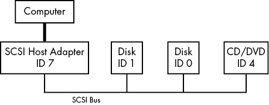
Figure 3-1: SCSI bus with host adapter and devices
Any device can communicate with another through the SCSI command set in a peer-to-peer relationship. The computer is not directly attached to the device chain, so it must go through the host adapter in order to communicate with disks and other devices. Typically, the computer sends SCSI commands to the host adapter to relay to the devices, and the devices relay responses back through the host adapter.
Newer versions of SCSI, such as Serial Attached SCSI (SAS), offer exceptional performance, but you probably won’t find true SCSI devices in most machines. You’ll more often encounter USB storage devices that use SCSI commands. In addition, devices supporting ATAPI (such as CD/DVD-ROM drives) use a version of the SCSI command set.
SATA disks also appear on your system as SCSI devices, but they are slightly different because most of them communicate through a translation layer in the libata library (see Section 3.6.2). Some SATA controllers (especially high-performance RAID controllers) perform this translation in hardware.
How does this all fit together? Consider the devices shown on the following system:
$ lsscsi
[0:0:0:0] disk ATA WDC WD3200AAJS-2 01.0 /dev/sda
[1:0:0:0] cd/dvd Slimtype DVD A DS8A5SH XA15 /dev/sr0
[2:0:0:0] disk USB2.0 CardReader CF 0100 /dev/sdb
[2:0:0:1] disk USB2.0 CardReader SM XD 0100 /dev/sdc
[2:0:0:2] disk USB2.0 CardReader MS 0100 /dev/sdd
[2:0:0:3] disk USB2.0 CardReader SD 0100 /dev/sde
[3:0:0:0] disk FLASH Drive UT_USB20 0.00 /dev/sdf
The numbers in square brackets are, from left to right, the SCSI host adapter number, the SCSI bus number, the device SCSI ID, and the LUN (logical unit number, a further subdivision of a device). In this example, there are four attached adapters (scsi0, scsi1, scsi2, and scsi3), each of which has a single bus (all with bus number 0), and just one device on each bus (all with target 0). The USB card reader at 2:0:0 has four logical units, though—one for each kind of flash card that can be inserted. The kernel has assigned a different device file to each logical unit.
Despite not being SCSI devices, NVMe devices can sometimes show up in the lsscsi output with an N as the adapter number.
NOTE
If you want to try lsscsi for yourself, you may need to install it as an additional package.
Figure 3-2 illustrates the driver and interface hierarchy inside the kernel for this particular system configuration, from the individual device drivers up to the block drivers. It does not include the SCSI generic (sg) drivers.
Although this is a large structure and may look overwhelming at first, the data flow in the figure is very linear. Let’s begin dissecting it by looking at the SCSI subsystem and its three layers of drivers:
- The top layer handles operations for a class of device. For example, the sd (SCSI disk) driver is at this layer; it knows how to translate requests from the kernel block device interface into disk-specific commands in the SCSI protocol, and vice versa.
- The middle layer moderates and routes the SCSI messages between the top and bottom layers, and keeps track of all of the SCSI buses and devices attached to the system.
- The bottom layer handles hardware-specific actions. The drivers here send outgoing SCSI protocol messages to specific host adapters or hardware, and they extract incoming messages from the hardware. The reason for this separation from the top layer is that although SCSI messages are uniform for a device class (such as the disk class), different kinds of host adapters have varying procedures for sending the same messages.
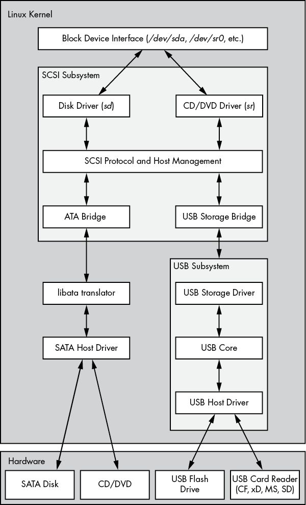
Figure 3-2: Linux SCSI subsystem schematic
The top and bottom layers contain many different drivers, but it’s important to remember that, for any given device file on your system, the kernel (nearly always) uses one top-layer driver and one lower-layer driver. For the disk at /dev/sda in our example, the kernel uses the sd top-layer driver and the ATA bridge lower-layer driver.
There are times when you might use more than one upper-layer driver for one hardware device (see Section 3.6.3). For true hardware SCSI devices, such as a disk attached to an SCSI host adapter or a hardware RAID controller, the lower-layer drivers talk directly to the hardware below. However, for most hardware that you find attached to the SCSI subsystem, it’s a different story.
3.6.1 USB Storage and SCSI
In order for the SCSI subsystem to talk to common USB storage hardware, as shown in Figure 3-2, the kernel needs more than just a lower-layer SCSI driver. A USB flash drive represented by /dev/sdf understands SCSI commands, but to actually communicate with the drive, the kernel needs to know how to talk through the USB system.
In the abstract, USB is quite similar to SCSI—it has device classes, buses, and host controllers. Therefore, it should be no surprise that the Linux kernel includes a three-layer USB subsystem that closely resembles the SCSI subsystem, with device-class drivers at the top, a bus management core in the middle, and host controller drivers at the bottom. Much as the SCSI subsystem passes SCSI commands between its components, the USB subsystem passes USB messages between its components. There’s even an lsusb command that is similar to lsscsi.
The part we’re really interested in here is the USB storage driver at the top. This driver acts as a translator. On one end, the driver speaks SCSI, and on the other, it speaks USB. Because the storage hardware includes SCSI commands inside its USB messages, the driver has a relatively easy job: it mostly repackages data.
With both the SCSI and USB subsystems in place, you have almost everything you need to talk to the flash drive. The final missing link is the lower-layer driver in the SCSI subsystem because the USB storage driver is a part of the USB subsystem, not the SCSI subsystem. (For organizational reasons, the two subsystems should not share a driver.) To get the subsystems to talk to one another, a simple, lower-layer SCSI bridge driver connects to the USB subsystem’s storage driver.
3.6.2 SCSI and ATA
The SATA hard disk and optical drive shown in Figure 3-2 both use the same SATA interface. To connect the SATA-specific drivers of the kernel to the SCSI subsystem, the kernel employs a bridge driver, as with the USB drives, but with a different mechanism and additional complications. The optical drive speaks ATAPI, a version of SCSI commands encoded in the ATA protocol. However, the hard disk does not use ATAPI and does not encode any SCSI commands!
The Linux kernel uses part of a library called libata to reconcile SATA (and ATA) drives with the SCSI subsystem. For the ATAPI-speaking optical drives, this is a relatively simple task of packaging and extracting SCSI commands into and from the ATA protocol. But for the hard disk, the task is much more complicated because the library must do a full command translation.
The job of the optical drive is similar to typing an English book into a computer. You don’t need to understand what the book is about in order to do this job, nor do you even need to understand English. But the task for the hard disk is more like reading a German book and typing it into the computer as an English translation. In this case, you need to understand both languages as well as the book’s content.
Despite this difficulty, libata performs this task and makes it possible to attach ATA/SATA interfaces and devices to the SCSI subsystem. (There are typically more drivers involved than just the one SATA host driver shown in Figure 3-2, but they’re not shown for the sake of simplicity.)
3.6.3 Generic SCSI Devices
When a user-space process communicates with the SCSI subsystem, it normally does so through the block device layer and/or another other kernel service that sits on top of an SCSI device class driver (like sd or sr). In other words, most user processes never need to know anything about SCSI devices or their commands.
However, user processes can bypass device class drivers and give SCSI protocol commands directly to devices through their generic devices. For example, consider the system described in Section 3.6, but this time, take a look at what happens when you add the -g option to lsscsi in order to show the generic devices:
$ lsscsi -g
[0:0:0:0] disk ATA WDC WD3200AAJS-2 01.0 /dev/sda 1/dev/sg0
[1:0:0:0] cd/dvd Slimtype DVD A DS8A5SH XA15 /dev/sr0 /dev/sg1
[2:0:0:0] disk USB2.0 CardReader CF 0100 /dev/sdb /dev/sg2
[2:0:0:1] disk USB2.0 CardReader SM XD 0100 /dev/sdc /dev/sg3
[2:0:0:2] disk USB2.0 CardReader MS 0100 /dev/sdd /dev/sg4
[2:0:0:3] disk USB2.0 CardReader SD 0100 /dev/sde /dev/sg5
[3:0:0:0] disk FLASH Drive UT_USB20 0.00 /dev/sdf /dev/sg6
In addition to the usual block device file, each entry lists an SCSI generic device file in the last column 1. For example, the generic device for the optical drive at /dev/sr0 is /dev/sg1.
Why would you want to use a generic device? The answer has to do with the complexity of code in the kernel. As tasks get more complicated, it’s better to leave them out of the kernel. Consider CD/DVD writing and reading. Reading an optical disc is a fairly simple operation, and there’s a specialized kernel driver for it.
However, writing an optical disc is significantly more difficult than reading, and no critical system services depend on the action of writing. There’s no reason to threaten kernel space with this activity. Therefore, to write to an optical disc in Linux, you run a user-space program that talks to a generic SCSI device, such as /dev/sg1. This program might be a little more inefficient than a kernel driver, but it’s far easier to build and maintain.
3.6.4 Multiple Access Methods for a Single Device
The two points of access (sr and sg) for an optical drive from user space are illustrated for the Linux SCSI subsystem in Figure 3-3 (any drivers below the SCSI lower layer have been omitted). Process A reads from the drive using the sr driver, and process B writes to the drive with the sg driver. However, processes like these would not normally run simultaneously to access the same device.
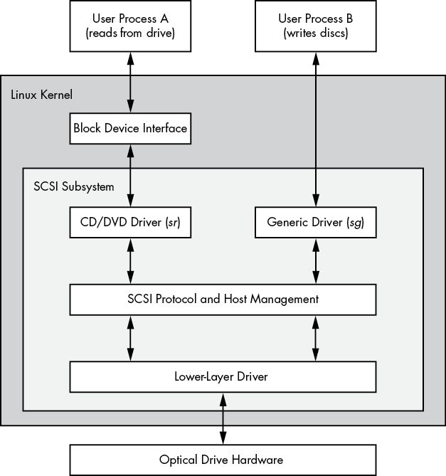
Figure 3-3: Optical device driver schematic
In Figure 3-3, process A reads from the block device. But do user processes really read data this way? Normally, the answer is no, not directly. There are more layers on top of the block devices and even more points of access for hard disks, as you’ll learn in the next chapter.
4
DISKS AND FILESYSTEMS
In Chapter 3, we saw an overview of some of the top-level disk devices that the kernel makes available. In this chapter, we’ll discuss in detail how to work with disks on a Linux system. You’ll learn how to partition disks, create and maintain the filesystems that go inside disk partitions, and work with swap space.
Recall that disk devices have names like /dev/sda, the first SCSI subsystem disk. This kind of block device represents the entire disk, but there are many different components and layers inside a disk.
Figure 4-1 illustrates a schematic of a simple Linux disk (note that the figure is not to scale). As you progress through this chapter, you’ll learn where each piece fits in.
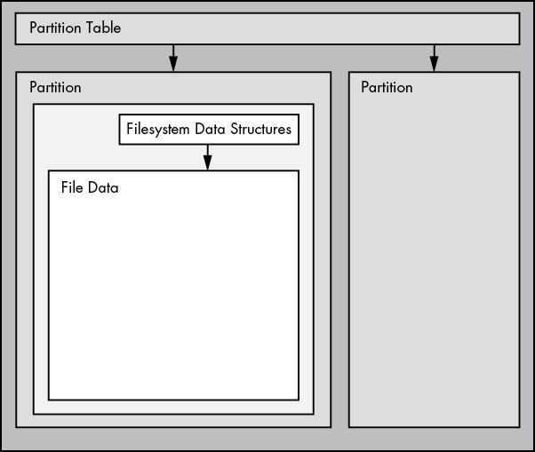
Figure 4-1: Typical Linux disk schematic
Partitions are subdivisions of the whole disk. On Linux, they’re denoted with a number after the whole block device, so they have names like /dev/sda1 and /dev/sdb3. The kernel presents each partition as a block device, just as it would an entire disk. Partitions are defined on a small area of the disk called a partition table (also called a disk label).
NOTE
Multiple data partitions were once common on systems with large disks because older PCs could boot only from certain parts of the disk. Also, administrators used partitions to reserve a certain amount of space for operating system areas; for example, they didn’t want users to be able to fill up the entire system and prevent critical services from working. This practice is not unique to Unix; you’ll still find many new Windows systems with several partitions on a single disk. In addition, most systems have a separate swap partition.
The kernel makes it possible for you to access both an entire disk and one of its partitions at the same time, but you wouldn’t normally do so unless you were copying the entire disk.
The Linux Logical Volume Manager (LVM) adds more flexibility to traditional disk devices and partitions, and is now in use in many systems. We’ll cover LVM in Section 4.4.
The next layer up from the partition is the filesystem, the database of files and directories that you’re accustomed to interacting with in user space. We’ll explore filesystems in Section 4.2.
As you can see in Figure 4-1, if you want to access the data in a file, you need to use the appropriate partition location from the partition table and then search the filesystem database on that partition for the desired file data.
To access data on a disk, the Linux kernel uses the system of layers shown in Figure 4-2. The SCSI subsystem and everything else described in Section 3.6 are represented by a single box. Notice that you can work with the disk through the filesystem as well as directly through the disk devices. You’ll see how both methods work in this chapter. To make things simpler, LVM is not represented in Figure 4-2, but it has components in the block device interface and a few management components in user space.
To get a handle on how everything fits together, let’s start at the bottom with partitions.
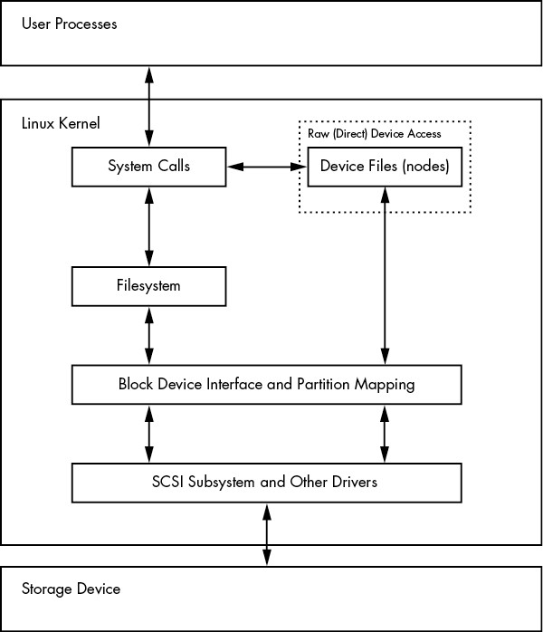
Figure 4-2: Kernel schematic for disk access
4.1 Partitioning Disk Devices
There are many kinds of partition tables. There’s nothing special about a partition table—it’s just a bunch of data that says how the blocks on the disk are divided.
The traditional table, dating back to the PC days, is the one found inside the Master Boot Record (MBR), and it has many limitations. Most newer systems use the Globally Unique Identifier Partition Table (GPT).
Here are a few of the many Linux partitioning tools:
- parted (“partition editor”) A text-based tool that supports both MBR and GPT.
- gparted A graphical version of parted.
- fdisk The traditional text-based Linux disk partitioning tool. Recent versions of fdisk support the MBR, GPT, and many other kinds of partition tables, but older versions were limited to MBR support.
Because it has supported both the MBR and GPT for some time, and it’s easy to run single commands to get partition labels, we’ll use parted to display partition tables. However, when creating and altering partition tables, we’ll use fdisk. This will illustrate both interfaces, and why many people prefer the fdisk interface due to its interactive nature and the fact that it doesn’t make any changes to the disk until you’ve had a chance to review them (we’ll discuss this shortly).
NOTE
There’s a critical difference between partitioning and filesystem manipulation: the partition table defines simple boundaries on the disk, whereas a filesystem is a much more involved data system. For this reason, we’ll use separate tools for partitioning and creating filesystems (see Section 4.2.2).
4.1.1 Viewing a Partition Table
You can view your system’s partition table with parted -l. This sample output shows two disk devices with two different kinds of partition tables:
# parted -l
Model: ATA KINGSTON SM2280S (scsi)1 Disk /dev/sda: 240GB
Sector size (logical/physical): 512B/512B
Partition Table: msdos
Disk Flags:
Number Start End Size Type File system Flags 1 1049kB 223GB 223GB primary ext4 boot 2 223GB 240GB 17.0GB extended 5 223GB 240GB 17.0GB logical linux-swap(v1)
Model: Generic Flash Disk (scsi)2 Disk /dev/sdf: 4284MBSector size (logical/physical): 512B/512B
Partition Table: gpt
Disk Flags:
Number Start End Size File system Name Flags 1 1049kB 1050MB 1049MB myfirst 2 1050MB 4284MB 3235MB mysecond
The first device (/dev/sda) 1 uses the traditional MBR partition table (which parted calls msdos), and the second (/dev/sdf) 2 contains a GPT. Notice that the two table types store different sets of parameters. In particular, the MBR table has no Name column because names don’t exist under that scheme. (I arbitrarily chose the names myfirst and mysecond in the GPT.)
NOTE
Watch out for the unit sizes when reading partition tables. The parted output shows an approximated size based on what parted thinks is easiest to read. On the other hand, fdisk -l shows an exact number, but in most cases, the units are 512-byte “sectors,” which can be confusing because it might look like you’ve doubled the actual sizes of your disk and partitions. A close look at the fdisk partition table view also reveals the sector size information.
MBR Basics
The MBR table in this example contains primary, extended, and logical partitions. A primary partition is a normal subdivision of the disk; partition 1 is an example. The basic MBR has a limit of four primary partitions, so if you want more than four, you must designate one as an extended partition. An extended partition breaks down into logical partitions, which the operating system can then use as it would any other partition. In this example, partition 2 is an extended partition that contains logical partition 5.
NOTE
The filesystem type that parted lists is not necessarily the same as the system ID field in its MBR entries. The MBR system ID is just a number identifying the partition type; for example, 83 is a Linux partition and 82 is a Linux swap partition. However, parted attempts to be more informative by determining on its own what kind of filesystem is on that partition. If you absolutely must know the system ID for an MBR, use fdisk -l.
LVM Partitions: A Sneak Peek
When viewing your partition table, if you see partitions labeled as LVM (code 8e as the partition type), devices named /dev/dm-*, or references to the “device mapper,” then your system uses LVM. Our discussion will start with traditional direct disk partitioning, which will look slightly different from what’s on a system using LVM.
Just so you know what to expect, let’s take a quick look at some sample parted -l output on a system with LVM (a fresh installation of Ubuntu using LVM on VirtualBox). First, there’s a description of the actual partition table, which looks mostly as you’d expect, except for the lvm flag:
Model: ATA VBOX HARDDISK (scsi)
Disk /dev/sda: 10.7GB
Sector size (logical/physical): 512B/512B
Partition Table: msdos
Disk Flags:
Number Start End Size Type File system Flags 1 1049kB 10.7GB 10.7GB primary boot, lvm
Then there are some devices that look like they should be partitions, but are called disks:
Model: Linux device-mapper (linear) (dm)
Disk /dev/mapper/ubuntu--vg-swap_1: 1023MB
Sector size (logical/physical): 512B/512B
Partition Table: loop
Disk Flags:
Number Start End Size File system Flags 1 0.00B 1023MB 1023MB linux-swap(v1)
Model: Linux device-mapper (linear) (dm)
Disk /dev/mapper/ubuntu--vg-root: 9672MB
Sector size (logical/physical): 512B/512B
Partition Table: loop
Disk Flags:
Number Start End Size File system Flags 1 0.00B 9672MB 9672MB ext4
A simple way to think about this is that the partitions have been somehow separated from the partition table. You’ll see what’s actually going on in Section 4.4.
NOTE
You’ll get much less detailed output with fdisk -l; in the preceding case, you won’t see anything beyond one LVM-labeled physical partition.
Initial Kernel Read
When initially reading the MBR table, the Linux kernel produces debugging output like this (remember that you can view this with journalctl -k):
sda: sda1 sda2 < sda5 >
The sda2 < sda5 > portion of the output indicates that /dev/sda2 is an extended partition containing one logical partition, /dev/sda5. You’ll normally ignore the extended partition itself because you typically care only about accessing the logical partitions it contains.
4.1.2 Modifying Partition Tables
Viewing partition tables is a relatively simple and harmless operation. Altering partition tables is also relatively easy, but making this kind of change to the disk involves risks. Keep the following in mind:
- Changing the partition table makes it quite difficult to recover any data on partitions that you delete or redefine, because doing so can erase the location of the filesystems on those partitions. Make sure you have a backup if the disk you’re partitioning contains critical data.
- Ensure that no partitions on your target disk are currently in use. This is a concern because most Linux distributions automatically mount any detected filesystem. (See Section 4.2.3 for more on mounting and unmounting.)
When you’re ready, choose your partitioning program. If you’d like to use parted, you can use the command-line parted utility or a graphical interface, such as gparted; fdisk is fairly easy to work with on the command line. These utilities all have online help and are easy to learn. (Try using them on a flash device or something similar if you don’t have any spare disks.)
That said, there is a major difference in the way that fdisk and parted work. With fdisk, you design your new partition table before making the actual changes to the disk, and it makes the changes only when you exit the program. But with parted, partitions are created, modified, and removed as you issue the commands. You don’t get the chance to review the partition table before you change it.
These differences are also key to understanding how the two utilities interact with the kernel. Both fdisk and parted modify the partitions entirely in user space; there’s no need to provide kernel support for rewriting a partition table, because user space can read and modify all of a block device.
At some point, though, the kernel must read the partition table in order to present the partitions as block devices so you can use them. The fdisk utility uses a relatively simple method. After modifying the partition table, fdisk issues a single system call to tell the kernel that it should reread the disk’s partition table (you’ll see an example of how to interact with fdisk shortly). The kernel then generates debugging output, which you can view with journalctl -k. For example, if you create two partitions on /dev/sdf, you’ll see this:
sdf: sdf1 sdf2
The parted tools do not use this disk-wide system call; instead, they signal the kernel when individual partitions are altered. After processing a single partition change, the kernel does not produce the preceding debugging output.
There are a few ways to see the partition changes:
- Use udevadm to watch the kernel event changes. For example, the command udevadm monitor --kernel will show the old partition devices being removed and the new ones being added.
- Check /proc/partitions for full partition information.
- Check /sys/block/device/ for altered partition system interfaces or /dev for altered partition devices.
FORCING A PARTITION TABLE RELOAD
If you absolutely must confirm your modifications to a partition table, you can use the blockdev command to perform the old-style system call that fdisk issues. For example, to force the kernel to reload the partition table on /dev/sdf, run this:
# blockdev --rereadpt /dev/sdf
4.1.3 Creating a Partition Table
Let’s apply everything you just learned by creating a new partition table on a new, empty disk. This example shows the following scenario:
- 4GB disk (a small USB flash device, unused; if you want to follow this example, use any size device that you have at hand)
- MBR-style partition table
- Two partitions intended to be populated with an ext4 filesystem: 200MB and 3.8GB
- Disk device at /dev/sdd; you’ll need to find your own device location with lsblk
You’ll use fdisk to do the work. Recall that this is an interactive command, so after ensuring that nothing on the disk is mounted, you’ll start at the command prompt with the device name:
# fdisk /dev/sdd
You’ll get an introductory message and then a command prompt like this:
Command (m for help):
First, print the current table with the p command (fdisk commands are rather terse). Your interaction will probably look something like this:
Command (m for help): p
Disk /dev/sdd: 4 GiB, 4284481536 bytes, 8368128 sectors
Units: sectors of 1 * 512 = 512 bytes
Sector size (logical/physical): 512 bytes / 512 bytes
I/O size (minimum/optimal): 512 bytes / 512 bytes
Disklabel type: dos
Disk identifier: 0x88f290cc
Device Boot Start End Sectors Size Id Type
/dev/sdd1 2048 8368127 8366080 4G c W95 FAT32 (LBA)
Most devices already contain one FAT-style partition, like this one at /dev/sdd1. Because you want to create new partitions for Linux (and, of course, you’re sure you don’t need anything here), you can delete the existing ones like so:
Command (m for help): d
Selected partition 1
Partition 1 has been deleted.
Remember that fdisk doesn’t make changes until you explicitly write the partition table, so you haven’t yet modified the disk. If you make a mistake you can’t recover from, use the q command to quit fdisk without writing the changes.
Now you’ll create the first 200MB partition with the n command:
Command (m for help): n
Partition type p primary (0 primary, 0 extended, 4 free) e extended (container for logical partitions)
Select (default p): p
Partition number (1-4, default 1): 1
First sector (2048-8368127, default 2048): 2048
Last sector, +sectors or +size{K,M,G,T,P} (2048-8368127, default 8368127): +200M
Created a new partition 1 of type 'Linux' and of size 200 MiB.
Here, fdisk prompts you for the MBR partition style, the partition number, the start of the partition, and its end (or size). The default values are quite often what you want. The only thing changed here is the partition end/size with the + syntax to specify a size and unit.
Creating the second partition works the same way, except you’ll use all default values, so we won’t go over that. When you’re finished laying out the partitions, use the p (print) command to review:
Command (m for help): p
[--snip--]
Device Boot Start End Sectors Size Id Type
/dev/sdd1 2048 411647 409600 200M 83 Linux/dev/sdd2 411648 8368127 7956480 3.8G 83 Linux
When you’re ready to write the partition table, use the w command:
Command (m for help): w
The partition table has been altered.
Calling ioctl() to re-read partition table.
Syncing disks.
Note that fdisk doesn’t ask you if you’re sure as a safety measure; it simply does its work and exits.
If you’re interested in additional diagnostic messages, use journalctl -k to see the kernel read messages mentioned earlier, but remember that you’ll get them only if you’re using fdisk.
At this point, you have all the basics to start partitioning disks, but if you’d like more details about disks, read on. Otherwise, skip ahead to Section 4.2 to learn about putting a filesystem on the disk.
4.1.4 Navigating Disk and Partition Geometry
Any device with moving parts introduces complexity into a software system because there are physical elements that resist abstraction. A hard disk is no exception; even though you can think of a hard disk as a block device with random access to any block, there can be serious performance consequences if the system isn’t careful about how it lays out data on the disk. Consider the physical properties of the simple single-platter disk illustrated in Figure 4-3.
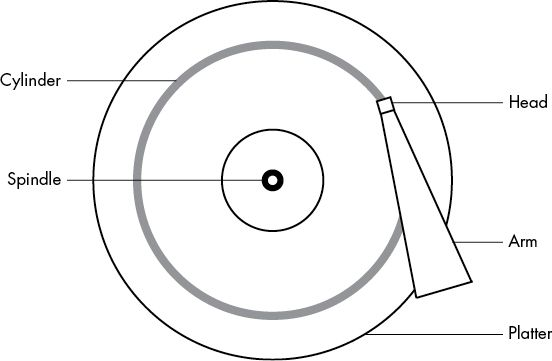
Figure 4-3: Top-down view of a hard disk
The disk consists of a spinning platter on a spindle, with a head attached to a moving arm that can sweep across the radius of the disk. As the disk spins underneath the head, the head reads data. When the arm is in one position, the head can read data only from a fixed circle. This circle is called a cylinder because larger disks have more than one platter, all stacked and spinning around the same spindle. Each platter can have one or two heads, for the top and/or bottom of the platter, and all heads are attached to the same arm and move in concert. Because the arm moves, there are many cylinders on the disk, from small ones around the center to large ones around the periphery of the disk. Finally, you can divide a cylinder into slices called sectors. This way of thinking about the disk geometry is called CHS, for cylinder-head-sector; in older systems, you could find any part of the disk by addressing it with these three parameters.
NOTE
A track is the part of a cylinder that a single head accesses, so in Figure 4-3, the cylinder is also a track. You don’t need to worry about tracks.
The kernel and the various partitioning programs can tell you what a disk reports as its number of cylinders. However, on any halfway recent hard disk, the reported values are fiction! The traditional addressing scheme that uses CHS doesn’t scale with modern disk hardware, nor does it account for the fact that you can put more data into outer cylinders than inner cylinders. Disk hardware supports Logical Block Addressing (LBA) to address a location on the disk by a block number (this is a much more straightforward interface), but remnants of CHS remain. For example, the MBR partition table contains CHS information as well as LBA equivalents, and some boot loaders are still dumb enough to believe the CHS values (don’t worry—most Linux boot loaders use the LBA values).
NOTE
The word sector is confusing, because Linux partitioning programs can use it to mean a different value.
ARE CYLINDER BOUNDARIES IMPORTANT?
The idea of cylinders was once critical to partitioning because cylinders are ideal boundaries for partitions. Reading a data stream from a cylinder is very fast because the head can continuously pick up data as the disk spins. A partition arranged as a set of adjacent cylinders also allows for fast continuous data access because the head doesn’t need to move very far between cylinders.
Although disks look roughly the same as they always have, the notion of precise partition alignment has become obsolete. Some older partitioning programs complain if you don’t place your partitions precisely on cylinder boundaries. Ignore this; there’s little you can do, because the reported CHS values of modern disks simply aren’t true. The disk’s LBA scheme, along with better logic in newer partitioning utilities, ensures that your partitions are laid out in a reasonable manner.
4.1.5 Reading from Solid-State Disks
Storage devices with no moving parts, such as solid-state disks (SSDs), are radically different from spinning disks in terms of their access characteristics. For these, random access isn’t a problem because there’s no head to sweep across a platter, but certain characteristics can change how an SSD performs.
One of the most significant factors affecting the performance of SSDs is partition alignment. When you read data from an SSD, you read it in chunks (called pages, not to be confused with virtual memory pages)—such as 4,096 or 8,192 bytes at a time—and the read must begin at a multiple of that size. This means that if your partition and its data do not lie on a boundary, you may have to do two reads instead of one for small, common operations, such as reading the contents of a directory.
Reasonably new versions of partitioning utilities include logic to put newly created partitions at the proper offsets from the beginning of the disks, so you probably don’t need to worry about improper partition alignment. Partitioning tools currently don’t make any calculations; instead, they just align partitions on 1MB boundaries or, more precisely, 2,048 512-byte blocks. This is a rather conservative approach because the boundary aligns with page sizes of 4,096, 8,192, and so on, all the way up to 1,048,576.
However, if you’re curious or want to make sure that your partitions begin on a boundary, you can easily find this information in the /sys/block directory. Here’s an example for the partition /dev/sdf2:
$ cat /sys/block/sdf/sdf2/start
1953126
The output here is the partition’s offset from the start of the device, in units of 512 bytes (again, confusingly called sectors by the Linux system). If this SSD uses 4,096-byte pages, there are eight of these sectors in a page. All you need to do is see if you can evenly divide the partition offset by 8. In this case, you can’t, so the partition would not attain optimal performance.
4.2 Filesystems
The last link between the kernel and user space for disks is typically the filesystem; this is what you’re accustomed to interacting with when you run commands like ls and cd. As previously mentioned, the filesystem is a form of database; it supplies the structure to transform a simple block device into the sophisticated hierarchy of files and subdirectories that users can understand.
At one time, all filesystems resided on disks and other physical media that were intended exclusively for data storage. However, the tree-like directory structure and I/O interface of filesystems are quite versatile, so filesystems now perform a variety of tasks, such as the system interfaces that you see in /sys and /proc. Filesystems are traditionally implemented in the kernel, but the innovation of 9P from Plan 9 (https://en.wikipedia.org/wiki/9P_(protocol)) has inspired the development of user-space filesystems. The File System in User Space (FUSE) feature allows user-space filesystems in Linux.
The Virtual File System (VFS) abstraction layer completes the filesystem implementation. Much as the SCSI subsystem standardizes communication between different device types and kernel control commands, VFS ensures that all filesystem implementations support a standard interface so that user-space applications access files and directories in the same manner. VFS support has enabled Linux to support an extraordinarily large number of filesystems.
4.2.1 Filesystem Types
Linux filesystem support includes native designs optimized for Linux; foreign types, such as the Windows FAT family; universal filesystems, like ISO 9660; and many others. The following list includes the most common types of filesystems for data storage. The type names as recognized by Linux are in parentheses next to the filesystem names.
- The Fourth Extended filesystem (ext4) is the current iteration of a line of filesystems native to Linux. The Second Extended filesystem (ext2) was a longtime default for Linux systems inspired by traditional Unix filesystems, such as the Unix File System (UFS) and the Fast File System (FFS). The Third Extended filesystem (ext3) added a journal feature (a small cache outside the normal filesystem data structure) to enhance data integrity and hasten booting. The ext4 filesystem is an incremental improvement and supports larger files than ext2 or ext3 as well as a greater number of subdirectories.
There’s a certain amount of backward compatibility in the extended filesystem series. For example, you can mount ext2 and ext3 filesystems as each other, and you can mount ext2 and ext3 filesystems as ext4, but you cannot mount ext4 as ext2 or ext3.
- Btrfs, or B-tree filesystem (btrfs), is a newer filesystem native to Linux designed to scale beyond the capabilities of ext4.
- FAT filesystems (msdos, vfat, exfat) pertain to Microsoft systems. The simple msdos type supports the very primitive monocase variety in MS-DOS systems. Most removable flash media, such as SD cards and USB drives, contain vfat (up to 4GB) or exfat (4GB and up) partitions by default. Windows systems can use either a FAT-based filesystem or the more advanced NT File System (ntfs).
- XFS is a high-performance filesystem used by default by some distributions, such as Red Hat Enterprise Linux 7.0 and beyond.
- HFS+ (hfsplus) is an Apple standard used on most Macintosh systems.
- ISO 9660 (iso9660) is a CD-ROM standard. Most CD-ROMs use some variety of the ISO 9660 standard.
LINUX FILESYSTEM EVOLUTION
The Extended filesystem series has long been perfectly acceptable to most users, and the fact that it has remained the de facto standard for so long is a testament to its utility, but also to its adaptability. The Linux development community has a tendency to completely replace components that don’t meet current needs, but every time the Extended filesystem has come up short, someone has upgraded it in response. Nonetheless, many advances have been made in filesystem technology that even ext4 cannot utilize due to the backward-compatibility requirement. These advances are primarily in scalability enhancements pertaining to very large numbers of files, large files, and similar scenarios.
At the time of this writing, Btrfs is the default for one major Linux distribution. If this proves a success, it’s likely that Btrfs will be poised to replace the Extended series.
4.2.2 Creating a Filesystem
If you’re preparing a new storage device, once you’re finished with the partitioning process described in Section 4.1, you’re ready to create a filesystem. As with partitioning, you’ll do this in user space because a user-space process can directly access and manipulate a block device.
The mkfs utility can create many kinds of filesystems. For example, you can create an ext4 partition on /dev/sdf2 with this command:
# mkfs -t ext4 /dev/sdf2
The mkfs program automatically determines the number of blocks in a device and sets some reasonable defaults. Unless you really know what you’re doing and feel like reading the documentation in detail, don’t change them.
When you create a filesystem, mkfs prints diagnostic output as it works, including output pertaining to the superblock. The superblock is a key component at the top level of the filesystem database, and it’s so important that mkfs creates a number of backups in case the original is destroyed. Consider recording a few of the superblock backup numbers when mkfs runs, in case you need to recover the superblock in the event of a disk failure (see Section 4.2.11).
WARNING
Filesystem creation is a task that you should perform only after adding a new disk or repartitioning an old one. You should create a filesystem just once for each new partition that has no preexisting data (or that has data you want to remove). Creating a new filesystem on top of an existing filesystem will effectively destroy the old data.
WHAT IS MKFS?
It turns out that mkfs is only a frontend for a series of filesystem creation programs, mkfs.fs, where fs is a filesystem type. So when you run mkfs -t ext4, mkfs in turn runs mkfs.ext4.
And there’s even more indirection. Inspect the mkfs.* files behind the commands, and you’ll see the following:
$ ls -l /sbin/mkfs.*
-rwxr-xr-x 1 root root 17896 Mar 29 21:49 /sbin/mkfs.bfs
-rwxr-xr-x 1 root root 30280 Mar 29 21:49 /sbin/mkfs.cramfs
lrwxrwxrwx 1 root root 6 Mar 30 13:25 /sbin/mkfs.ext2 -> mke2fs
lrwxrwxrwx 1 root root 6 Mar 30 13:25 /sbin/mkfs.ext3 -> mke2fs
lrwxrwxrwx 1 root root 6 Mar 30 13:25 /sbin/mkfs.ext4 -> mke2fs
lrwxrwxrwx 1 root root 6 Mar 30 13:25 /sbin/mkfs.ext4dev -> mke2fs
-rwxr-xr-x 1 root root 26200 Mar 29 21:49 /sbin/mkfs.minix
lrwxrwxrwx 1 root root 7 Dec 19 2011 /sbin/mkfs.msdos -> mkdosfs
lrwxrwxrwx 1 root root 6 Mar 5 2012 /sbin/mkfs.ntfs -> mkntfs
lrwxrwxrwx 1 root root 7 Dec 19 2011 /sbin/mkfs.vfat -> mkdosfs
As you can see, mkfs.ext4 is just a symbolic link to mke2fs. This is important to remember if you run across a system without a specific mkfs command or when you’re looking up the documentation for a particular filesystem. Each filesystem’s creation utility has its own manual page, like mke2fs(8). This shouldn’t be a problem on most systems, because accessing the mkfs.ext4(8) manual page should redirect you to the mke2fs(8) manual page, but keep it in mind.
4.2.3 Mounting a Filesystem
On Unix, the process of attaching a filesystem to a running system is called mounting. When the system boots, the kernel reads some configuration data and mounts root (/) based on the configuration data.
In order to mount a filesystem, you must know the following:
- The filesystem’s device, location, or identifier (such as a disk partition—where the actual filesystem data resides). Some special-purpose filesystems, such as proc and sysfs, don’t have locations.
- The filesystem type.
- The mount point—the place in the current system’s directory hierarchy where the filesystem will be attached. The mount point is always a normal directory. For instance, you could use /music as a mount point for a filesystem containing music. The mount point need not be directly below /; it can be anywhere on the system.
The common terminology for mounting a filesystem is “mount a device on a mount point.” To learn the current filesystem status of your system, you run mount. The output (which can be quite lengthy) should look like this:
$ mount
/dev/sda1 on / type ext4 (rw,errors=remount-ro)
proc on /proc type proc (rw,noexec,nosuid,nodev)
sysfs on /sys type sysfs (rw,noexec,nosuid,nodev)
fusectl on /sys/fs/fuse/connections type fusectl (rw)
debugfs on /sys/kernel/debug type debugfs (rw)
securityfs on /sys/kernel/security type securityfs (rw)
udev on /dev type devtmpfs (rw,mode=0755)
devpts on /dev/pts type devpts (rw,noexec,nosuid,gid=5,mode=0620)
tmpfs on /run type tmpfs (rw,noexec,nosuid,size=10%,mode=0755)
--snip--
Each line corresponds to one currently mounted filesystem, with items in this order:
- The device, such as /dev/sda3. Notice that some of these aren’t real devices (proc, for example) but are stand-ins for real device names because these special-purpose filesystems do not need devices.
- The word on.
- The mount point.
- The word type.
- The filesystem type, usually in the form of a short identifier.
- Mount options (in parentheses). See Section 4.2.6 for more details.
To mount a filesystem manually, use the mount command as follows with the filesystem type, device, and desired mount point:
# mount -t type device mountpoint
For example, to mount the Fourth Extended filesystem found on the device /dev/sdf2 on /home/extra, use this command:
# mount -t ext4 /dev/sdf2 /home/extra
You normally don’t need to supply the -t type option because mount usually figures it out for you. However, sometimes it’s necessary to distinguish between two similar types, such as the various FAT-style filesystems.
To unmount (detach) a filesystem, use the umount command as follows:
# umount mountpoint
You can also unmount a filesystem with its device instead of its mount point.
NOTE
Almost all Linux systems include a temporary mount point, /mnt, which is typically used for testing. Feel free to use it when experimenting with your system, but if you intend to mount a filesystem for extended use, find or make another spot.
4.2.4 Filesystem UUID
The method of mounting filesystems discussed in the preceding section depends on device names. However, device names can change because they depend on the order in which the kernel finds the devices. To solve this problem, you can identify and mount filesystems by their universally unique identifier (UUID), an industry standard for unique “serial numbers” to identify objects in a computer system. Filesystem creation programs like mke2fs generate a UUID when initializing the filesystem data structure.
To view a list of devices and the corresponding filesystems and UUIDs on your system, use the blkid (block ID) program:
# blkid
/dev/sdf2: UUID="b600fe63-d2e9-461c-a5cd-d3b373a5e1d2" TYPE="ext4"
/dev/sda1: UUID="17f12d53-c3d7-4ab3-943e-a0a72366c9fa" TYPE="ext4" PARTUUID="c9a5ebb0-01"
/dev/sda5: UUID="b600fe63-d2e9-461c-a5cd-d3b373a5e1d2" TYPE="swap" PARTUUID="c9a5ebb0-05"
/dev/sde1: UUID="4859-EFEA" TYPE="vfat"
In this example, blkid found four partitions with data: two with ext4 filesystems, one with a swap space signature (see Section 4.3), and one with a FAT-based filesystem. The Linux native partitions all have standard UUIDs, but the FAT partition doesn’t. You can reference the FAT partition with its FAT volume serial number (in this case, 4859-EFEA).
To mount a filesystem by its UUID, use the UUID mount option. For example, to mount the first filesystem from the preceding list on /home/extra, enter:
# mount UUID=b600fe63-d2e9-461c-a5cd-d3b373a5e1d2 /home/extra
Typically you won’t manually mount filesystems by UUID like this, because you normally know the device, and it’s much easier to mount a device by its name than by its crazy UUID. Still, it’s important to understand UUIDs. For one thing, they’re the preferred way to mount non-LVM filesystems in /etc/fstab automatically at boot time (see Section 4.2.8). In addition, many distributions use the UUID as a mount point when you insert removable media. In the preceding example, the FAT filesystem is on a flash media card. An Ubuntu system with someone logged in will mount this partition at /media/user/4859-EFEA upon insertion. The udevd daemon described in Chapter 3 handles the initial event for the device insertion.
You can change the UUID of a filesystem if necessary (for example, if you copied the complete filesystem from somewhere else and now need to distinguish it from the original). See the tune2fs(8) manual page for how to do this on an ext2/ext3/ext4 filesystem.
4.2.5 Disk Buffering, Caching, and Filesystems
Linux, like other Unix variants, buffers writes to the disk. This means the kernel usually doesn’t immediately write changes to filesystems when processes request changes. Instead, it stores those changes in RAM until the kernel determines a good time to actually write them to the disk. This buffering system is transparent to the user and provides a very significant performance gain.
When you unmount a filesystem with umount, the kernel automatically synchronizes with the disk, writing the changes in its buffer to the disk. You can also force the kernel to do this at any time by running the sync command, which by default synchronizes all the disks on the system. If for some reason you can’t unmount a filesystem before you turn off the system, be sure to run sync first.
In addition, the kernel uses RAM to cache blocks as they’re read from a disk. Therefore, if one or more processes repeatedly access a file, the kernel doesn’t have to go to the disk again and again—it can simply read from the cache and save time and resources.
4.2.6 Filesystem Mount Options
There are many ways to change the mount command behavior, which you’ll often need to do when working with removable media or performing system maintenance. In fact, the total number of mount options is staggering. The extensive mount(8) manual page is a good reference, but it’s hard to know where to start and what you can safely ignore. You’ll see the most useful options in this section.
Options fall into two rough categories: general and filesystem-specific. General options typically work for all filesystem types and include -t for specifying the filesystem type, as shown earlier. In contrast, a filesystem-specific option pertains only to certain filesystem types.
To activate a filesystem option, use the -o switch followed by the option. For example, -o remount,rw remounts a filesystem already mounted as read-only in read-write mode.
Short General Options
General options have a short syntax. The most important are:
- -r The -r option mounts the filesystem in read-only mode. This has a number of uses, from write protection to bootstrapping. You don’t need to specify this option when accessing a read-only device, such as a CD-ROM; the system will do it for you (and will also tell you about the read-only status).
- -n The -n option ensures that mount does not try to update the system runtime mount database, /etc/mtab. By default, the mount operation fails when it cannot write to this file, so this option is important at boot time because the root partition (including the system mount database) is read-only at first. You’ll also find this option handy when trying to fix a system problem in single-user mode, because the system mount database may not be available at the time.
- -t The -t type option specifies the filesystem type.
Long Options
Short options like -r are too limited for the ever-increasing number of mount options; there are too few letters in the alphabet to accommodate all possible options. Short options are also troublesome because it’s difficult to determine an option’s meaning based on a single letter. Many general options and all filesystem-specific options use a longer, more flexible option format.
To use long options with mount on the command line, start with -o followed by the appropriate keywords separated by commas. Here’s a complete example, with the long options following -o:
# mount -t vfat /dev/sde1 /dos -o ro,uid=1000
The two long options here are ro and uid=1000. The ro option specifies read-only mode and is the same as the -r short option. The uid=1000 option tells the kernel to treat all files on the filesystem as if user ID 1000 is the owner.
The most useful long options are these:
- exec, noexec Enables or disables execution of programs on the filesystem.
- suid, nosuid Enables or disables setuid programs.
- ro Mounts the filesystem in read-only mode (as does the -r short option).
- rw Mounts the filesystem in read-write mode.
NOTE
There is a difference between Unix and DOS text files, principally in how lines end. In Unix, only a linefeed (\n, ASCII 0x0A) marks the end of a line, but DOS uses a carriage return (\r, ASCII 0x0D) followed by a linefeed. There have been many attempts at automatic conversion at the filesystem level, but these are always problematic. Text editors such as vim can automatically detect the newline style of a file and maintain it appropriately. It’s easier to keep the styles uniform this way.
4.2.7 Remounting a Filesystem
There will be times when you need to change the mount options for a currently mounted filesystem; the most common situation is when you need to make a read-only filesystem writable during crash recovery. In that case, you need to reattach the filesystem at the same mount point.
The following command remounts the root directory in read-write mode (you need the -n option because the mount command can’t write to the system mount database when the root is read-only):
# mount -n -o remount /
This command assumes that the correct device listing for / is in /etc/fstab (as discussed in the next section). If it isn’t, you must specify the device as an additional option.
4.2.8 The /etc/fstab Filesystem Table
To mount filesystems at boot time and take the drudgery out of the mount command, Linux systems keep a permanent list of filesystems and options in /etc/fstab. This is a plaintext file in a very simple format, as Listing 4-1 shows.
UUID=70ccd6e7-6ae6-44f6-812c-51aab8036d29 / ext4 errors=remount-ro 0 1
UUID=592dcfd1-58da-4769-9ea8-5f412a896980 none swap sw 0 0
/dev/sr0 /cdrom iso9660 ro,user,nosuid,noauto 0 0
Listing 4-1: List of filesystems and options in /etc/fstab
Each line corresponds to one filesystem and is broken into six fields. From left to right, these fields are:
- The device or UUID Most current Linux systems no longer use the device in /etc/fstab, preferring the UUID.
- The mount point Indicates where to attach the filesystem.
- The filesystem type You may not recognize swap in this list; this is a swap partition (see Section 4.3).
- Options Long options, separated by commas.
- Backup information for use by the dump command The dump command is a long-obsolete backup utility; this field is no longer relevant. You should always set it to 0.
- The filesystem integrity test order To ensure that fsck always runs on the root first, always set this to 1 for the root filesystem and 2 for any other locally attached filesystems on a hard disk or SSD. Use 0 to disable the bootup check for every other filesystem, including read-only devices, swap, and the /proc filesystem (see the fsck command in Section 4.2.11).
When using mount, you can take some shortcuts if the filesystem you want to work with is in /etc/fstab. For example, if you were using Listing 4-1 and mounting a CD-ROM, you would simply run mount /cdrom.
You can also try to simultaneously mount all entries in /etc/fstab that do not contain the noauto option with this command:
# mount -a
Listing 4-1 introduces some new options—namely, errors, noauto, and user, because they don’t apply outside the /etc/fstab file. In addition, you’ll often see the defaults option here. These options are defined as follows:
- defaults This sets the mount defaults: read-write mode, enable device files, executables, the setuid bit, and so on. Use this when you don’t want to give the filesystem any special options but you do want to fill all fields in /etc/fstab.
- errors This ext2/3/4-specific parameter sets the kernel behavior when the system has trouble mounting a filesystem. The default is normally errors=continue, meaning that the kernel should return an error code and keep running. To have the kernel try the mount again in read-only mode, use errors=remount-ro. The errors=panic setting tells the kernel (and your system) to halt when there’s a problem with the mount.
- noauto This option tells a mount -a command to ignore the entry. Use this to prevent a boot-time mount of a removable-media device, such as a flash storage device.
- user This option allows unprivileged users to run mount on a particular entry, which can be handy for allowing certain kinds of access to removable media. Because users can put a setuid-root file on removable media with another system, this option also sets nosuid, noexec, and nodev (to bar special device files). Keep in mind that for removable media and other general cases, this option is now of limited use, because most systems use ubus along with other mechanisms to automatically mount inserted media. However, this option can be useful in special cases when you want to grant control over mounting specific directories.
4.2.9 Alternatives to /etc/fstab
Although the /etc/fstab file has been the traditional way to represent filesystems and their mount points, there are two alternatives. The first is an /etc/fstab.d directory, which contains individual filesystem configuration files (one file for each filesystem). The idea is very similar to many other configuration directories that you’ll see throughout this book.
A second alternative is to configure systemd units for the filesystems. You’ll learn more about systemd and its units in Chapter 6. However, the systemd unit configuration is often generated from (or based on) the /etc/fstab file, so you may find some overlap on your system.
4.2.10 Filesystem Capacity
To view the size and utilization of your currently mounted filesystems, use the df command. The output can be very extensive (and it gets longer all the time, thanks to specialized filesystems), but it should include information on your actual storage devices.
$ df
Filesystem 1K-blocks Used Available Use% Mounted on
/dev/sda1 214234312 127989560 75339204 63% /
/dev/sdd2 3043836 4632 2864872 1% /media/user/uuid
Here’s a brief description of the fields in the df output:
- Filesystem The filesystem device
- 1K-blocks The total capacity of the filesystem in blocks of 1,024 bytes
- Used The number of occupied blocks
- Available The number of free blocks
- Use% The percentage of blocks in use
- Mounted on The mount point
NOTE
If you’re having trouble finding the correct line in the df output corresponding to a particular directory, run the df dir command, where dir is the directory you want to examine. This limits output to the filesystem for that directory. A very common use is df ., which limits the output to the device holding your current directory.
It should be easy to see that the two filesystems here are roughly 215GB and 3GB in size. However, the capacity numbers may look a little strange because 127,989,560 plus 75,339,204 does not equal 214,234,312, and 127,989,560 is not 63 percent of 214,234,312. In both cases, 5 percent of the total capacity is unaccounted for. In fact, the space is there, but it’s hidden in reserved blocks. Only the superuser can use the reserved blocks of the filesystem when it starts to fill up. This feature keeps system servers from immediately failing when they run out of disk space.
GETTING A USAGE LISTING
If your disk fills up and you need to know where all of those space-hogging media files are, use the du command. With no arguments, du prints the disk usage of every directory in the directory hierarchy, starting at the current working directory. (That can be a long listing; if you want to see an example, just run cd /; du to get the idea. Press CTRL-C when you get bored.) The du -s command turns on summary mode to print only the grand total. To evaluate everything (files and subdirectories) in a particular directory, change to that directory and run du -s *, keeping in mind that there can be some dot directories that this command won’t catch.
NOTE
The POSIX standard defines a block size of 512 bytes. However, this size is harder to read, so by default, the df and du output in most Linux distributions is in 1,024-byte blocks. If you insist on displaying the numbers in 512-byte blocks, set the POSIXLY_CORRECT environment variable. To explicitly specify 1,024-byte blocks, use the -k option (both utilities support this). The df and du programs also have a -m option to list capacities in 1MB blocks and a -h option to take a best guess at what’s easiest for a person to read, based on the overall sizes of the filesystems.
4.2.11 Checking and Repairing Filesystems
The optimizations that Unix filesystems offer are made possible by a sophisticated database mechanism. For filesystems to work seamlessly, the kernel has to trust that a mounted filesystem has no errors and also that the hardware stores data reliably. If errors exist, data loss and system crashes may result.
Aside from hardware problems, filesystem errors are usually due to a user shutting down the system in a rude way (for example, by pulling out the power cord). In such cases, the previous filesystem cache in memory may not match the data on the disk, and the system also may be in the process of altering the filesystem when you happen to give the computer a kick. Although many filesystems support journals to make filesystem corruption far less common, you should always shut down the system properly. Regardless of the filesystem in use, filesystem checks are still necessary every now and then to make sure that everything is still in order.
The tool to check a filesystem is fsck. As with the mkfs program, there’s a different version of fsck for each filesystem type that Linux supports. For example, when run on an Extended filesystem series (ext2/ext3/ext4), fsck recognizes the filesystem type and starts the e2fsck utility. Therefore, you generally don’t need to type e2fsck, unless fsck can’t figure out the filesystem type or you’re looking for the e2fsck manual page.
The information presented in this section is specific to the Extended filesystem series and e2fsck.
To run fsck in interactive manual mode, give the device or the mount point (as listed in /etc/fstab) as the argument. For example:
# fsck /dev/sdb1
WARNING
Never use fsck on a mounted filesystem—the kernel may alter the disk data as you run the check, causing runtime mismatches that can crash your system and corrupt files. There is only one exception: if you mount the root partition read-only in single-user mode, you may use fsck on it.
In manual mode, fsck prints verbose status reports on its passes, which should look something like this when there are no problems:
Pass 1: Checking inodes, blocks, and sizes
Pass 2: Checking directory structure
Pass 3: Checking directory connectivity
Pass 4: Checking reference counts
Pass 5: Checking group summary information
/dev/sdb1: 11/1976 files (0.0% non-contiguous), 265/7891 blocks
If fsck finds a problem in manual mode, it stops and asks a question relevant to fixing the problem. These questions deal with the internal structure of the filesystem, such as reconnecting loose inodes and clearing blocks (inodes are building blocks of the filesystem; you’ll see how they work in Section 4.6). When fsck asks you about reconnecting an inode, it has found a file that doesn’t appear to have a name. When reconnecting such a file, fsck places the file in the lost+found directory in the filesystem, with a number as the filename. If this happens, you need to guess the name based on the file’s contents; the original filename is probably gone.
In general, it’s pointless to sit through the fsck repair process if you’ve just uncleanly shut down the system, because fsck may have a lot of minor errors to fix. Fortunately, e2fsck has a -p option that automatically fixes ordinary problems without asking and aborts when there’s a serious error. In fact, Linux distributions run a variant of fsck -p at boot time. (You may also see fsck -a, which does the same thing.)
If you suspect a major disaster on your system, such as a hardware failure or device misconfiguration, you need to decide on a course of action, because fsck can really mess up a filesystem that has larger problems. (One telltale sign that your system has a serious problem is if fsck asks a lot of questions in manual mode.)
If you think that something really bad has happened, try running fsck -n to check the filesystem without modifying anything. If there’s a problem with the device configuration that you think you can fix (such as loose cables or an incorrect number of blocks in the partition table), fix it before running fsck for real, or you’re likely to lose a lot of data.
If you suspect that only the superblock is corrupt (for example, because someone wrote to the beginning of the disk partition), you might be able to recover the filesystem with one of the superblock backups that mkfs creates. Use fsck -b num to replace the corrupted superblock with an alternate at block num and hope for the best.
If you don’t know where to find a backup superblock, you might be able to run mkfs -n on the device to view a list of superblock backup numbers without destroying your data. (Again, make sure that you’re using -n, or you’ll really tear up the filesystem.)
Checking ext3 and ext4 Filesystems
You normally do not need to check ext3 and ext4 filesystems manually because the journal ensures data integrity (recall that the journal is a small data cache that has not yet been written to a specific spot in the filesystem). If you don’t shut your system down cleanly, you can expect the journal to contain some data. To flush the journal in an ext3 or ext4 filesystem to the regular filesystem database, run e2fsck as follows:
# e2fsck –fy /dev/disk_device
However, you may want to mount a broken ext3 or ext4 filesystem in ext2 mode, because the kernel won’t mount an ext3 or ext4 filesystem with a nonempty journal.
The Worst Case
Disk problems that are more severe leave you with few choices:
- You can try to extract the entire filesystem image from the disk with dd and transfer it to a partition on another disk of the same size.
- You can try to patch the filesystem as much as possible, mount it in read-only mode, and salvage what you can.
- You can try debugfs.
In the first two cases, you still need to repair the filesystem before you mount it, unless you feel like picking through the raw data by hand. If you like, you can choose to answer y to all of the fsck questions by entering fsck -y, but do this as a last resort because issues may come up during the repair process that you would rather handle manually.
The debugfs tool allows you to look through the files on a filesystem and copy them elsewhere. By default, it opens filesystems in read-only mode. If you’re recovering data, it’s probably a good idea to keep your files intact to avoid messing things up further.
Now, if you’re really desperate—say with a catastrophic disk failure on your hands and no backups—there isn’t a lot you can do other than hope a professional service can “scrape the platters.”
4.2.12 Special-Purpose Filesystems
Not all filesystems represent storage on physical media. Most versions of Unix have filesystems that serve as system interfaces. That is, rather than serving only as a means to store data on a device, a filesystem can represent system information, such as process IDs and kernel diagnostics. This idea goes back to the /dev mechanism, which is an early model of using files for I/O interfaces. The /proc idea came from the eighth edition of research Unix, implemented by Tom J. Killian and accelerated when Bell Labs (including many of the original Unix designers) created Plan 9—a research operating system that took filesystem abstraction to a whole new level (https://en.wikipedia.org/wiki/Plan_9_from_Bell_Labs).
Some of the special filesystem types in common use on Linux include:
- proc Mounted on /proc. The name proc is an abbreviation for process. Each numbered directory inside /proc refers to the ID of a current process on the system; the files in each directory represent various aspects of that process. The directory /proc/self represents the current process. The Linux proc filesystem includes a great deal of additional kernel and hardware information in files like /proc/cpuinfo. Keep in mind that the kernel design guidelines recommend moving information unrelated to processes out of /proc and into /sys, so system information in /proc might not be the most current interface.
- sysfs Mounted on /sys. (You saw this in Chapter 3.)
- tmpfs Mounted on /run and other locations. With tmpfs, you can use your physical memory and swap space as temporary storage. You can mount tmpfs where you like, using the size and nr_blocks long options to control the maximum size. However, be careful not to pour things constantly into a tmpfs location, because your system will eventually run out of memory and programs will start to crash.
- squashfs A type of read-only filesystem where content is stored in a compressed format and extracted on demand through a loopback device. One example use is in the snap package management system that mounts packages under the /snap directory.
- overlay A filesystem that merges directories into a composite. Containers often use overlay filesystems; you’ll see how they work in Chapter 17.
4.3 Swap Space
Not every partition on a disk contains a filesystem. It’s also possible to augment the RAM on a machine with disk space. If you run out of real memory, the Linux virtual memory system can automatically move pieces of memory to and from disk storage. This is called swapping because pieces of idle programs are swapped to the disk in exchange for active pieces residing on the disk. The disk area used to store memory pages is called swap space (or just swap).
The free command’s output includes the current swap usage in kilobytes as follows:
$ free total used free
--snip--
Swap: 514072 189804 324268
4.3.1 Using a Disk Partition as Swap Space
To use an entire disk partition as swap, follow these steps:
- Make sure the partition is empty.
- Run mkswap dev, where dev is the partition’s device. This command puts a swap signature on the partition, marking it as swap space (rather than a filesystem or otherwise).
- Execute swapon dev to register the space with the kernel.
After creating a swap partition, you can put a new swap entry in your /etc/fstab file to make the system use the swap space as soon as the machine boots. Here’s a sample entry that uses /dev/sda5 as a swap partition:
/dev/sda5 none swap sw 0 0
Swap signatures have UUIDs, so keep in mind that many systems now use these instead of raw device names.
4.3.2 Using a File as Swap Space
You can use a regular file as swap space if you’re in a situation where you would be forced to repartition a disk in order to create a swap partition. You shouldn’t notice any problems when doing this.
Use these commands to create an empty file, initialize it as swap, and add it to the swap pool:
# dd if=/dev/zero of=swap_file bs=1024k count=num_mb
# mkswap swap_file
# swapon swap_file
Here, swap_file is the name of the new swap file, and num_mb is the desired size in megabytes.
To remove a swap partition or file from the kernel’s active pool, use the swapoff command. Your system must have enough free remaining memory (real and swap combined) to accommodate any active pages in the part of the swap pool that you’re removing.
4.3.3 Determining How Much Swap You Need
At one time, Unix conventional wisdom said you should always reserve at least twice as much swap space as you have real memory. Today, not only do the enormous disk and memory capacities available cloud the issue, but so do the ways we use the system. On one hand, disk space is so plentiful, it’s tempting to allocate more than double the memory size. On the other hand, you may never even dip into your swap space because you have so much real memory.
The “double the real memory” rule dated from a time when multiple users would be logged in to one machine. Not all of them would be active, though, so it was convenient to be able to swap out the memory of the inactive users when an active user needed more memory.
The same may still hold true for a single-user machine. If you’re running many processes, it’s generally fine to swap out parts of inactive processes or even inactive pieces of active processes. However, if you frequently access swap space because many active processes want to use the memory at once, you’ll suffer serious performance problems because disk I/O (even that of SSDs) is just too slow to keep up with the rest of the system. The only solutions are to buy more memory, terminate some processes, or complain.
Sometimes, the Linux kernel may choose to swap out a process in favor of a little more disk cache. To prevent this behavior, some administrators configure certain systems with no swap space at all. For example, high-performance servers should never dip into swap space and should avoid disk access if at all possible.
NOTE
It’s dangerous to configure no swap space on a general-purpose machine. If a machine completely runs out of both real memory and swap space, the Linux kernel invokes the out-of-memory (OOM) killer to kill a process in order to free up some memory. You obviously don’t want this to happen to your desktop applications. On the other hand, high-performance servers include sophisticated monitoring, redundancy, and load-balancing systems to ensure that they never reach the danger zone.
You’ll learn much more about how the memory system works in Chapter 8.
4.4 The Logical Volume Manager
So far we’ve looked at direct management and use of disks through partitions, specifying the exact locations on storage devices where certain data should reside. You know that accessing a block device like /dev/sda1 leads you to a place on a particular device according to the partition table on /dev/sda, even if the exact location may be left to the hardware.
This usually works fine, but it does have some disadvantages, especially when it comes to making changes to your disks after installation. For example, if you want to upgrade a disk, you must install the new disk, partition, add filesystems, possibly do some boot loader changes and other tasks, and finally switch over to the new disk. This process can be error-prone and requires several reboots. It’s perhaps worse when you want to install an additional disk to get more capacity—here, you have to pick a new mount point for the filesystem on that disk and hope that you can manually distribute your data between the old and new disks.
The LVM deals with these problems by adding another layer between the physical block devices and the filesystem. The idea is that you select a set of physical volumes (usually just block devices, such as disk partitions) to include into a volume group, which acts as a sort of generic data pool. Then you carve logical volumes out of the volume group.
Figure 4-4 shows a schematic of how these fit together for one volume group. This figure shows several physical and logical volumes, but many LVM-based systems have only one PV and just two logical volumes (for root and swap).
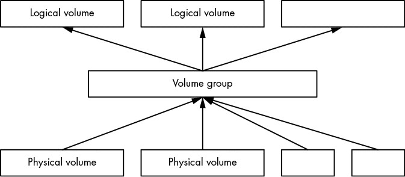
Figure 4-4: How PVs and logical volumes fit together in a volume group
Logical volumes are just block devices, and they typically contain filesystems or swap signatures, so you can think of the relationship between a volume group and its logical volumes as similar to that of a disk and its partitions. The critical difference is that you don’t normally define how the logical volumes are laid out in the volume group—the LVM works all of this out.
The LVM allows some powerful and extremely useful operations, such as:
- Add more PVs (such as another disk) to a volume group, increasing its size.
- Remove PVs as long as there’s enough space remaining to accommodate existing logical volumes inside a volume group.
- Resize logical volumes (and as a consequence, resize filesystems with the fsadm utility).
You can do all of this without rebooting the machine, and in most cases without unmounting any filesystems. Although adding new physical disk hardware can require a shutdown, cloud computing environments often allow you to add new block storage devices on the fly, making LVM an excellent choice for systems that need this kind of flexibility.
We’re going to explore LVM in a moderate amount of detail. First, we’ll see how to interact with and manipulate logical volumes and their components, and then we’ll take a closer look at how LVM works and the kernel driver that it’s built on. However, the discussion here is not essential to understanding the rest of the book, so if you get too bogged down, feel free to skip ahead to Chapter 5.
4.4.1 Working with LVM
LVM has a number of user-space tools for managing volumes and volume groups. Most of these are based around the lvm command, an interactive general-purpose tool. There are individual commands (which are just symbolic links to LVM) to perform specific tasks. For example, the vgs command has the same effect as typing vgs at the lvm> prompt of the interactive lvm tool, and you’ll find that vgs (usually in /sbin) is a symbolic link to lvm. We’ll use the individual commands in this book.
In the next few sections, we’ll look at the components of a system that uses logical volumes. The first examples come from a standard Ubuntu installation using the LVM partitioning option, so many of the names will contain the word Ubuntu. However, none of the technical details are specific to that distribution.
Listing and Understanding Volume Groups
The vgs command just mentioned shows the volume groups currently configured on the system. The output is fairly concise. Here’s what you might see in our example LVM installation:
# vgs VG #PV #LV #SN Attr VSize VFree ubuntu-vg 1 2 0 wz--n- <10.00g 36.00m
The first line is a header, with each successive line representing a volume group. The columns are as follows:
- VG The volume group name. ubuntu-vg is the generic name that the Ubuntu installer assigns when configuring a system with LVM.
- #PV The number of physical volumes that the volume group’s storage comprises.
- #LV The number of logical volumes inside the volume group.
- #SN The number of logical volume snapshots. We won’t go into detail about these.
- Attr A number of status attributes of the volume group. Here, w (writeable), z (resizable), and n (normal allocation policy) are active.
- VSize The volume group size.
- VFree The amount of unallocated space on the volume group.
This synopsis of a volume group is sufficient for most purposes. If you want to go a little deeper into a volume group, use the vgdisplay command, which is very useful for understanding a volume group’s properties. Here’s the same volume group with vgdisplay:
# vgdisplay --- Volume group --- VG Name ubuntu-vg System ID Format lvm2 Metadata Areas 1 Metadata Sequence No 3 VG Access read/write VG Status resizable MAX LV 0 Cur LV 2 Open LV 2 Max PV 0 Cur PV 1 Act PV 1 VG Size <10.00 GiB PE Size 4.00 MiB Total PE 2559 Alloc PE / Size 2550 / 9.96 GiB Free PE / Size 9 / 36.00 MiB VG UUID 0zs0TV-wnT5-laOy-vJ0h-rUae-YPdv-pPwaAs
You saw some of this before, but there are some new items of note:
- Open LV The number of logical volumes currently in use.
- Cur PV The number of physical volumes the volume group comprises.
- Act LV The number of active physical volumes in the volume group.
- VG UUID The volume group’s universally unique identifier. It’s possible to have more than one volume group with the same name on a system; in this case, the UUID can help you isolate a particular one. Most LVM tools (such as vgrename, which can help you resolve a situation like this) accept the UUID as an alternative to the volume group name. Be warned that you’re about to see a lot of different UUIDs; every component of LVM has one.
A physical extent (abbreviated as PE in the vgdisplay output) is a piece of a physical volume, much like a block, but on a much larger scale. In this example, the PE size is 4MB. You can see that most of the PEs on this volume group are in use, but that’s not a cause for alarm. This is merely the amount of space on the volume group allocated for the logical partitions (in this case, a filesystem and swap space); it doesn’t reflect the actual usage within the filesystem.
Listing Logical Volumes
Similar to volume groups, the commands to list logical volumes are lvs for a short listing and lvdisplay for more detail. Here’s a sample of lvs:
# lvs LV VG Attr LSize Pool Origin Data% Meta% Move Log Cpy%Sync Convert root ubuntu-vg -wi-ao---- <9.01g swap_1 ubuntu-vg -wi-ao---- 976.00m
On basic LVM configurations, only the first four columns are important to understand, and the remaining columns may be empty, as is the case here (we won’t cover those). The relevant columns here are:
- LV The logical volume name.
- VG The volume group where the logical volume resides.
- Attr Attributes of the logical volume. Here, they are w (writeable), i (inherited allocation policy), a (active), and o (open). In more advanced volume group configurations, more of these slots are active—in particular, the first, seventh, and ninth.
- LSize The size of the logical volume.
Running the more detailed lvdisplay helps to shed some light on where a logical volume fits into your system. Here’s the output for one of our logical volumes:
# lvdisplay /dev/ubuntu-vg/root --- Logical volume --- LV Path /dev/ubuntu-vg/root LV Name root VG Name ubuntu-vg LV UUID CELZaz-PWr3-tr3z-dA3P-syC7-KWsT-4YiUW2 LV Write Access read/write LV Creation host, time ubuntu, 2018-11-13 15:48:20 -0500 LV Status available # open 1 LV Size <9.01 GiB Current LE 2306 Segments 1 Allocation inherit Read ahead sectors auto - currently set to 256 Block device 253:0
There is a lot of interesting stuff here, and most of it is fairly self-explanatory (note that the UUID of the logical volume is different from that of its volume group). Perhaps the most important thing you haven’t seen yet is first: LV Path, the device path of the logical volume. Some systems, but not all, use this as the mount point of the filesystem or swap space (in a systemd mount unit or /etc/fstab).
Even though you can see the major and minor device numbers of the logical volume’s block device (here, 253 and 0), as well as something that looks like a device path, it’s not actually the path that the kernel uses. A quick look at /dev/ubuntu-vg/root reveals that something else is going on:
$ ls -l /dev/ubuntu-vg/root
lrwxrwxrwx 1 root root 7 Nov 14 06:58 /dev/ubuntu-vg/root -> ../dm-0
As you can see, this is just a symbolic link to /dev/dm-0. Let’s look at that briefly.
Using Logical Volume Devices
Once LVM has done its setup work on your system, logical volume block devices are available at /dev/dm-0, /dev/dm-1, and so on, and may be arranged in any order. Due to the unpredictability of these device names, LVM also creates symbolic links to the devices that have stable names based on the volume group and logical volume names. You saw this in the preceding section with /dev/ubuntu-vg/root.
There’s an additional location for symbolic links in most implementations: /dev/mapper. The name format here is also based on the volume group and logical volume, but there’s no directory hierarchy; instead, the links have names like ubuntu--vg-root. Here, udev has transformed the single dash in the volume group into a double dash, and then separated the volume group and logical volume names with a single dash.
Many systems use the links in /dev/mapper in their /etc/fstab, systemd, and boot loader configurations in order to point the system to the logical volumes used for filesystems and swap space.
In any case, these symbolic links point to block devices for the logical volumes, and you can interact with them just as you would any other block device: create filesystems, create swap partitions, and so on.
NOTE
If you take a look around /dev/mapper, you’ll also see a file named control. You might be wondering about that file, as well as why the real block device files begin with dm-; does this coincide with /dev/mapper somehow? We’ll address these questions at the end of this chapter.
Working with Physical Volumes
The final major piece of LVM to examine is the physical volume (PV). A volume group is built from one or more PVs. Although a PV may seem like a straightforward part of the LVM system, it contains a little more information than meets the eye. Much like volume groups and logical volumes, the LVM commands to view PVs are pvs (for a short list) and pvdisplay (for a more in-depth view). Here’s the pvs display for our example system:
# pvs PV VG Fmt Attr PSize PFree /dev/sda1 ubuntu-vg lvm2 a-- <10.00g 36.00m
And here’s pvdisplay:
# pvdisplay --- Physical volume --- PV Name /dev/sda1 VG Name ubuntu-vg PV Size <10.00 GiB / not usable 2.00 MiB Allocatable yes PE Size 4.00 MiB Total PE 2559 Free PE 9 Allocated PE 2550 PV UUID v2Qb1A-XC2e-2G4l-NdgJ-lnan-rjm5-47eMe5
From the previous discussion of volume groups and logical volumes, you should understand most of this output. Here are some notes:
- There’s no special name for the PV other than the block device. There’s no need for one—all of the names required to reference a logical volume are at the volume group level and above. However, the PV does have a UUID, which is required to compose a volume group.
- In this case, the number of PEs matches the usage in the volume group (which we saw earlier), because this is the only PV in the group.
- There’s a tiny amount of space that LVM labels as not usable because it’s not enough to fill a full PE.
- The a in the attributes of the pvs output corresponds to Allocatable in the pvdisplay output, and it simply means that if you want to allocate space for a logical volume in the volume group, LVM can choose to use this PV. However, in this case, there are only nine unallocated PEs (a total of 36MB), so not much is available for new logical volumes.
As alluded to earlier, PVs contain more than just information about their own individual contribution to a volume group. Each PV contains physical volume metadata, extensive information about its volume group and its logical volumes. We’ll explore PV metadata shortly, but first let’s get some hands-on experience to see how what we’ve learned fits together.
Constructing a Logical Volume System
Let’s look at an example of how to create a new volume group and some logical volumes out of two disk devices. We’ll combine two disk devices of 5GB and 15GB into a volume group and then divide this space into two logical volumes of 10GB each—a nearly impossible task without LVM. The example shown here uses VirtualBox disks. Although the capacities are quite small on any contemporary system, they suffice for illustration.
Figure 4-5 shows the volume schematic. The new disks are at /dev/sdb and /dev/sdc, the new volume group will be called myvg, and the two new logical volumes are called mylv1 and mylv2.
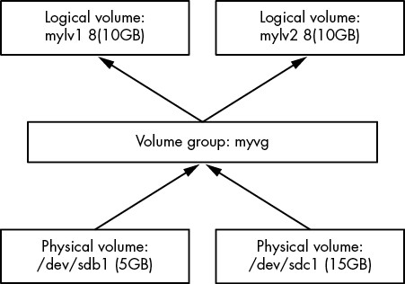
Figure 4-5: Constructing a logical volume system
The first task is to create a single partition on each of these disks and label it for LVM. Do this with a partitioning program (see Section 4.1.2), using the partition type ID 8e, so that the partition tables look like this:
# parted /dev/sdb print
Model: ATA VBOX HARDDISK (scsi)
Disk /dev/sdb: 5616MB
Sector size (logical/physical): 512B/512B
Partition Table: msdos
Disk Flags:
Number Start End Size Type File system Flags 1 1049kB 5616MB 5615MB primary lvm
# parted /dev/sdc print
Model: ATA VBOX HARDDISK (scsi)
Disk /dev/sdc: 16.0GB
Sector size (logical/physical): 512B/512B
Partition Table: msdos
Disk Flags:
Number Start End Size Type File system Flags 1 1049kB 16.0GB 16.0GB primary lvm
You don’t necessarily need to partition a disk to make it a PV. PVs can be any block device, even entire-disk devices, such as /dev/sdb. However, partitioning enables booting from the disk, and it also provides a means of identifying the block devices as LVM physical volumes.
Creating Physical Volumes and a Volume Group
With the new partitions of /dev/sdb1 and /dev/sdc1 in hand, the first step with LVM is to designate one of the partitions as a PV and assign it to a new volume group. A single command, vgcreate, performs this task. Here’s how to create a volume group called myvg with /dev/sdb1 as the initial PV:
# vgcreate myvg /dev/sdb1 Physical volume "/dev/sdb1" successfully created. Volume group "myvg" successfully created
NOTE
You can also create a PV first in a separate step with the pvcreate command. However, vgcreate performs this step on a partition if nothing is currently present.
At this point, most systems automatically detect the new volume group; run a command such as vgs to verify (keeping in mind that there may be existing volume groups on your system that show up in addition to the one you just created):
# vgs VG #PV #LV #SN Attr VSize VFree myvg 1 0 0 wz--n- <5.23g <5.23g
NOTE
If you don’t see the new volume group, try running pvscan first. If your system doesn’t automatically detect changes to LVM, you’ll need to run pvscan every time you make a change.
Now you can add your second PV at /dev/sdc1 to the volume group with the vgextend command:
# vgextend myvg /dev/sdc1 Physical volume "/dev/sdc1" successfully created. Volume group "myvg" successfully extended
Running vgs now shows two PVs, and the size is that of the two partitions combined:
# vgs VG #PV #LV #SN Attr VSize VFree myvg 2 0 0 wz--n- <20.16g <20.16g
Creating Logical Volumes
The final step at the block device level is to create the logical volumes. As mentioned before, we’re going to create two logical volumes of 10GB each, but feel free to experiment with other possibilities, such as one big logical volume or multiple smaller ones.
The lvcreate command allocates a new logical volume in a volume group. The only real complexities in creating simple logical volumes are determining the sizes when there is more than one per volume group, and specifying the type of logical volume. Remember that PVs are divided into extents; the number of PEs available may not quite line up with your desired size. However, it should be close enough so that it doesn’t present a concern, so if this your first time working with the LVM, you don’t really have to pay attention to PEs.
When using lvcreate, you can specify a logical volume’s size by numeric capacity in bytes with the --size option or by number of PEs with the --extents option.
So, to see how this works, and to complete the LVM schematic in Figure 4-5, we’ll create logical volumes named mylv1 and mylv2 using --size:
# lvcreate --size 10g --type linear -n mylv1 myvg Logical volume "mylv1" created.
# lvcreate --size 10g --type linear -n mylv2 myvg Logical volume "mylv2" created.
The type here is the linear mapping, the simplest type when you don’t need redundancy or any other special features (we won’t work with any other types in this book). In this case, --type linear is optional because it’s the default mapping.
After running these commands, verify that the logical volumes exist with an lvs command, and then take a closer look at the current state of the volume group with vgdisplay:
# vgdisplay myvg --- Volume group --- VG Name myvg System ID Format lvm2 Metadata Areas 2 Metadata Sequence No 4 VG Access read/write VG Status resizable MAX LV 0 Cur LV 2 Open LV 0 Max PV 0 Cur PV 2 Act PV 2 VG Size 20.16 GiB PE Size 4.00 MiB Total PE 5162 Alloc PE / Size 5120 / 20.00 GiB Free PE / Size 42 / 168.00 MiB VG UUID 1pHrOe-e5zy-TUtK-5gnN-SpDY-shM8-Cbokf3
Notice how there are 42 free PEs because the sizes that we chose for the logical volumes didn’t quite take up all of the available extents in the volume group.
Manipulating Logical Volumes: Creating Partitions
With the new logical volumes available, you can now make use of them by putting filesystems on the devices and mounting them just like any normal disk partition. As mentioned earlier, there will be symbolic links to the devices in /dev/mapper and (for this case) a /dev/myvg directory for the volume group. So, for example, you might run the following three commands to create a filesystem, mount it temporarily, and see how much actual space you have on a logical volume:
# mkfs -t ext4 /dev/mapper/myvg-mylv1
mke2fs 1.44.1 (24-Mar-2018)
Creating filesystem with 2621440 4k blocks and 655360 inodes
Filesystem UUID: 83cc4119-625c-49d1-88c4-e2359a15a887
Superblock backups stored on blocks: 32768, 98304, 163840, 229376, 294912, 819200, 884736, 1605632
Allocating group tables: done
Writing inode tables: done
Creating journal (16384 blocks): done
Writing superblocks and filesystem accounting information: done
# mount /dev/mapper/myvg-mylv1 /mnt
# df /mnt
Filesystem 1K-blocks Used Available Use% Mounted on
/dev/mapper/myvg-mylv1 10255636 36888 9678076 1% /mnt
Removing Logical Volumes
We haven’t yet looked at any operations on the other logical volume, mylv2, so let’s use it to make this example more interesting. Say you find you’re not really using that second logical volume. You decide to remove it and resize the first logical volume to take over the remaining space on the volume group. Figure 4-6 shows our goal.
Assuming you’ve already moved or backed up anything important on the logical volume you’re going to delete, and that it’s not in current system use (that is, you’ve unmounted it), first remove it with lvremove. When manipulating logical volumes with this command, you’ll refer to them using a different syntax—by separating the volume group and logical volume names by a slash (myvg/mylv2):
# lvremove myvg/mylv2
Do you really want to remove and DISCARD active logical volume myvg/mylv2? [y/n]: y Logical volume "mylv2" successfully removed
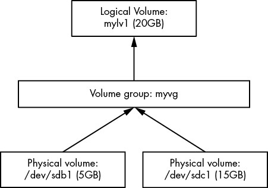
Figure 4-6: Results of reconfiguring logical volumes
WARNING
Be careful when you run lvremove. Because you haven’t used this syntax with the other LVM commands you’ve seen so far, you might accidentally use a space instead of the slash. If you make that mistake in this particular case, lvremove assumes that you want to remove all of the logical volumes on the volume groups myvg and mylv2. (You almost certainly don’t have a volume group named mylv2, but that’s not your biggest problem at the moment.) So, if you’re not paying attention, you could remove all of the logical volumes on a volume group, not just one.
As you can see from this interaction, lvremove tries to protect you from blunders by double-checking that you really want to remove each logical volume targeted for removal. It also won’t try to remove a volume that’s in use. But don’t just assume that you should reply y to any question you’re asked.
Resizing Logical Volumes and Filesystems
Now you can resize the first logical volume, mylv1. You can do this even when the volume is in use and its filesystem is mounted. However, it’s important to understand that there are two steps. To use your larger logical volume, you need to resize both it and the filesystem inside it (which you can also do while it’s mounted). But because this is such a common operation, the lvresize command that resizes a logical volume has an option (-r) to perform the filesystem resizing for you also.
For illustration only, let’s use two separate commands to see how this works. There are several ways to specify the change in size to a logical volume, but in this case, the most straightforward method is to add all of the free PEs in the volume group to the logical volume. Recall that you can find that number with vgdisplay; in our running example, it’s 2,602. Here’s the lvresize command to add all of those to mylv1:
# lvresize -l +2602 myvg/mylv1 Size of logical volume myvg/mylv1 changed from 10.00 GiB (2560 extents) to 20.16 GiB (5162 extents). Logical volume myvg/mylv1 successfully resized.
Now you need to resize the filesystem inside. You can do this with the fsadm command. It’s fun to watch it work in verbose mode (use the -v option):
# fsadm -v resize /dev/mapper/myvg-mylv1 fsadm: "ext4" filesystem found on "/dev/mapper/myvg-mylv1".
fsadm: Device "/dev/mapper/myvg-mylv1" size is 21650997248 bytes
fsadm: Parsing tune2fs -l "/dev/mapper/myvg-mylv1"
fsadm: Resizing filesystem on device "/dev/mapper/myvg-mylv1" to 21650997248 bytes (2621440 -> 5285888 blocks of 4096 bytes)
fsadm: Executing resize2fs /dev/mapper/myvg-mylv1 5285888
resize2fs 1.44.1 (24-Mar-2018)
Filesystem at /dev/mapper/myvg-mylv1 is mounted on /mnt; on-line resizing required
old_desc_blocks = 2, new_desc_blocks = 3
The filesystem on /dev/mapper/myvg-mylv1 is now 5285888 (4k) blocks long.
As you can see from the output, fsadm is just a script that knows how to transform its arguments into the ones used by filesystem-specific tools like resize2fs. By default, if you don’t specify a size, it’ll simply resize to fit the entire device.
Now that you’ve seen the details of resizing volumes, you’re probably looking for shortcuts. The much simpler approach is to use a different syntax for the size and have lvresize perform the partition resizing for you, with this single command:
# lvresize -r -l +100%FREE myvg/mylv1
It’s rather nice that you can expand an ext2/ext3/ext4 filesystem while it’s mounted. Unfortunately, it doesn’t work in reverse. You cannot shrink a filesystem when it’s mounted. Not only must you unmount the filesystem, but the process of shrinking a logical volume requires you to do the steps in reverse. So, when resizing manually, you’d need to resize the partition before the logical volume, making sure that the new logical volume is still big enough to contain the filesystem. Again, it’s much easier to use lvresize with the -r option so that it can coordinate the filesystem and logical volume sizes for you.
4.4.2 The LVM Implementation
With the more practical operational basics of LVM covered, we can now take a brief look at its implementation. As with almost every other topic in this book, LVM contains a number of layers and components, with a fairly careful separation between the parts in kernel and user space.
As you’ll see soon, finding PVs to discover the structure of the volume groups and logical volumes is somewhat complicated, and the Linux kernel would rather not deal with any of it. There’s no reason for any of this to happen in kernel space; PVs are just block devices, and user space has random access to block devices. In fact, LVM (more specifically, LVM2 in current systems) itself is just the name for a suite of user-space utilities that know the LVM structure.
On the other hand, the kernel handles the work of routing a request for a location on a logical volume’s block device to the true location on an actual device. The driver for this is the device mapper (sometimes shortened to devmapper), a new layer sandwiched between normal block devices and the filesystem. As the name suggests, the task the device mapper performs is like following a map; you can almost think of it as translating a street address into an absolute location like global latitude/longitude coordinates. (It’s a form of virtualization; the virtual memory we’ll see elsewhere in the book works on a similar concept.)
There’s some glue between LVM user-space tools and the device mapper: a few utilities that run in user space to manage the device map in the kernel. Let’s look at both the LVM side and the kernel side, starting with LVM.
LVM Utilities and Scanning for Physical Volumes
Before it does anything, an LVM utility must first scan the available block devices to look for PVs. The steps that LVM must perform in user space are roughly as follows:
- Find all of the PVs on the system.
- Find all of the volume groups that the PVs belong to by UUID (this information is contained in the PVs).
- Verify that everything is complete (that is, all necessary PVs that belong to the volume group are present).
- Find all of the logical volumes in the volume groups.
- Figure out the scheme for mapping data from the PVs to the logical volumes.
There’s a header at the beginning of every PV that identifies the volume as well as its volume groups and the logical volumes within. The LVM utilities can put this information together and determine whether all PVs necessary for a volume group (and its logical volumes) are present. If everything checks out, LVM can work on getting the information to the kernel.
NOTE
If you’re interested in the appearance of the LVM header on a PV, you can run a command such as this:
# dd if=/dev/sdb1 count=1000 | strings | less
In this case, we’re using /dev/sdb1 as the PV. Don’t expect the output to be very pretty, but it does show the information required for LVM.
Any LVM utility, such as pvscan, lvs, or vgcreate, is capable of performing the work of scanning and processing PVs.
The Device Mapper
After LVM has determined the structure of the logical volumes from all of the headers on the PVs, it communicates with the kernel’s device mapper driver in order to initialize the block devices for the logical volumes and load their mapping tables. It achieves this with the ioctl(2) system call (a commonly used kernel interface) on the /dev/mapper/control device file. It’s not really practical to try to monitor this interaction, but it’s possible to look at the details of the results with the dmsetup command.
To get an inventory of mapped devices currently serviced by the device mapper, use dmsetup info. Here’s what you might get for one of the logical volumes created earlier in this chapter:
# dmsetup info
Name: myvg-mylv1
State: ACTIVE
Read Ahead: 256
Tables present: LIVE
Open count: 0
Event number: 0
Major, minor: 253, 1
Number of targets: 2
UUID: LVM-1pHrOee5zyTUtK5gnNSpDYshM8Cbokf3OfwX4T0w2XncjGrwct7nwGhpp7l7J5aQ
The major and minor number of the device correspond to the /dev/dm-* device file for the mapped device; the major number for this device mapper is 253. Because the minor number is 1, the device file is named /dev/dm-1. Notice that the kernel has a name and yet another UUID for the mapped device. LVM supplied these to the kernel (the kernel UUID is just a concatenation of the volume group and logical volume UUIDs).
NOTE
Remember the symbolic links such as /dev/mapper/myvg-mylv1? udev creates those in response to new devices from the device mapper, using a rules file like we saw in Section 3.5.2.
You can also view the table that LVM gave to the device mapper, by issuing the command dmsetup table. Here’s what that looks like for our earlier example when there were two 10GB logical volumes (mylv1 and mylv2) spread across the two physical volumes of 5GB (/dev/sdb1) and 15GB (/dev/sdc1):
# dmsetup table
myvg-mylv2: 0 10960896 linear 8:17 2048
myvg-mylv2: 10960896 10010624 linear 8:33 20973568
myvg-mylv1: 0 20971520 linear 8:33 2048
Each line provides a segment of the map for a given mapped device. For the device myvg-mylv2, there are two pieces, and for myvg-mylv1, there’s a single one. The fields after the name, in order, are:
- The start offset of the mapped device. The units are in 512-byte “sectors,” or the normal block size that you see in many other devices.
- The length of this segment.
- The mapping scheme. Here, it’s the simple one-to-one linear scheme.
- The major and minor device number pair of a source device—that is, what LVM calls physical volumes. Here 8:17 is /dev/sdb1 and 8:33 is /dev/sdc1.
- A starting offset on the source device.
What’s interesting here is that in our example, LVM chose to use the space in /dev/sdc1 for the first logical volume that we created (mylv1). LVM decided that it wanted to lay out the first 10GB logical volume in a contiguous manner, and the only way to do that was on /dev/sdc1. However, when creating the second logical volume (mylv2), LVM had no choice but to spread it into two segments across the two PVs. Figure 4-7 shows the arrangement.
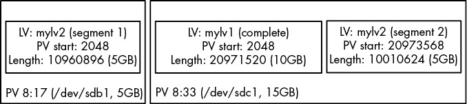
Figure 4-7: How LVM arranges mylv1 and mylv2
As a further consequence, when we removed mylv2 and expanded mylv1 to fit the remaining space in the volume group, the original start offset in the PV remained where it was on /dev/sdc1, but everything else changed to include the remainder of the PVs:
# dmsetup table
myvg-mylv1: 0 31326208 linear 8:33 2048
myvg-mylv1: 31326208 10960896 linear 8:17 2048
Figure 4-8 shows the arrangement.
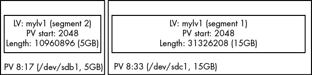
Figure 4-8: The arrangement after we remove mylv2 and expand mylv1
You can experiment with logical volumes and the device mapper to your heart’s content with virtual machines and see how the mappings turn out. Many features, such as software RAID and encrypted disks, are built on the device mapper.
4.5 Looking Forward: Disks and User Space
In disk-related components on a Unix system, the boundaries between user space and the kernel can be difficult to characterize. As you’ve seen, the kernel handles raw block I/O from the devices, and user-space tools can use the block I/O through device files. However, user space typically uses the block I/O only for initializing operations, such as partitioning, filesystem creation, and swap space creation. In normal use, user space uses only the filesystem support that the kernel provides on top of the block I/O. Similarly, the kernel also handles most of the tedious details when dealing with swap space in the virtual memory system.
The remainder of this chapter briefly looks at the innards of a Linux filesystem. This is more advanced material, and you certainly don’t need to know it to proceed with the book. If this is your first time through, skip to the next chapter and start learning about how Linux boots.
4.6 Inside a Traditional Filesystem
A traditional Unix filesystem has two primary components: a pool of data blocks where you can store data and a database system that manages the data pool. The database is centered around the inode data structure. An inode is a set of data that describes a particular file, including its type, permissions, and—perhaps most important—where in the data pool the file data resides. Inodes are identified by numbers listed in an inode table.
Filenames and directories are also implemented as inodes. A directory inode contains a list of filenames and links corresponding to other inodes.
To provide a real-life example, I created a new filesystem, mounted it, and changed the directory to the mount point. Then, I added some files and directories with these commands:
$ mkdir dir_1
$ mkdir dir_2
$ echo a > dir_1/file_1
$ echo b > dir_1/file_2
$ echo c > dir_1/file_3
$ echo d > dir_2/file_4
$ ln dir_1/file_3 dir_2/file_5
Note that I created dir_2/file_5 as a hard link to dir_1/file_3, meaning that these two filenames actually represent the same file (more on this shortly). Feel free to try this yourself. It doesn’t necessarily need to be on a new filesystem.
If you were to explore the directories in this filesystem, its contents would appear as shown in Figure 4-9.
NOTE
If you try this on your own system, the inode numbers will probably be different, especially if you run the commands to create the files and directories on an existing filesystem. The specific numbers aren’t important; it’s all about the data that they point to.
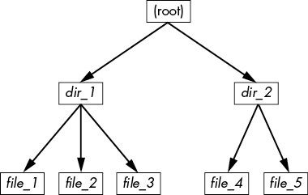
Figure 4-9: User-level representation of a filesystem
The actual layout of the filesystem as a set of inodes, shown in Figure 4-10, doesn’t look nearly as clean as the user-level representation.
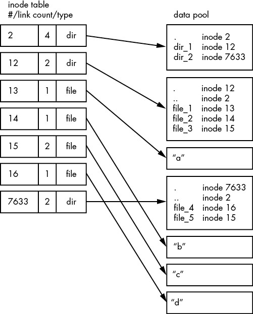
Figure 4-10: Inode structure of the filesystem shown in Figure 4-9
How do we make sense of this? For any ext2/3/4 filesystem, you start at inode number 2, which is the root inode (try not to confuse this with the system root filesystem). From the inode table in Figure 4-10, you can see that this is a directory inode (dir), so you can follow the arrow over to the data pool, where you see the contents of the root directory: two entries named dir_1 and dir_2 corresponding to inodes 12 and 7633, respectively. To explore those entries, go back to the inode table and look at either of those inodes.
To examine dir_1/file_2 in this filesystem, the kernel does the following:
- Determines the path’s components: a directory named dir_1, followed by a component named file_2.
- Follows the root inode to its directory data.
- Finds the name dir_1 in inode 2’s directory data, which points to inode number 12.
- Looks up inode 12 in the inode table and verifies that it is a directory inode.
- Follows inode 12’s data link to its directory information (the second box down in the data pool).
- Locates the second component of the path (file_2) in inode 12’s directory data. This entry points to inode number 14.
- Looks up inode 14 in the directory table. This is a file inode.
At this point, the kernel knows the properties of the file and can open it by following inode 14’s data link.
This system, of inodes pointing to directory data structures and directory data structures pointing to inodes, allows you to create the filesystem hierarchy that you’re used to. In addition, notice that the directory inodes contain entries for . (the current directory) and .. (the parent directory, except for the root directory). This makes it easy to get a point of reference and to navigate back down the directory structure.
4.6.1 Inode Details and the Link Count
To view the inode numbers for any directory, use the ls -i command. Here’s what you’d get at the root of this example (for more detailed inode information, use the stat command):
$ ls -i 12 dir_1 7633 dir_2
You’re probably wondering about the link count in the inode table. You’ve already seen the link count in the output of the common ls -l command, but you likely ignored it. How does the link count relate to the files in Figure 4-9, in particular the “hard-linked” file_5? The link count field is the number of total directory entries (across all directories) that point to an inode. Most of the files have a link count of 1 because they occur only once in the directory entries. This is expected. Most of the time when you create a file, you create a new directory entry and a new inode to go with it. However, inode 15 occurs twice. First it’s created as dir_1/file_3, and then it’s linked to as dir_2/file_5. A hard link is just a manually created entry in a directory to an inode that already exists. The ln command (without the -s option) allows you to create new hard links manually.
This is also why removing a file is sometimes called unlinking. If you run rm dir_1/file_2, the kernel searches for an entry named file_2 in inode 12’s directory entries. Upon finding that file_2 corresponds to inode 14, the kernel removes the directory entry and then subtracts 1 from inode 14’s link count. As a result, inode 14’s link count will be 0, and the kernel will know that there are no longer any names linking to the inode. Therefore, it can now delete the inode and any data associated with it.
However, if you run rm dir_1/file_3, the end result is that the link count of inode 15 goes from 2 to 1 (because dir_2/file_5 still points there), and the kernel knows not to remove the inode.
Link counts work much the same for directories. Note that inode 12’s link count is 2, because there are two inode links there: one for dir_1 in the directory entries for inode 2 and the second a self-reference (.) in its own directory entries. If you create a new directory dir_1/dir_3, the link count for inode 12 would go to 3 because the new directory would include a parent (..) entry that links back to inode 12, much as inode 12’s parent link points to inode 2.
There is one small exception in link counts. The root inode 2 has a link count of 4. However, Figure 4-10 shows only three directory entry links. The “fourth” link is in the filesystem’s superblock because the superblock tells you where to find the root inode.
Don’t be afraid to experiment on your system. Creating a directory structure and then using ls -i or stat to walk through the pieces is harmless. You don’t need to be root (unless you mount and create a new filesystem).
4.6.2 Block Allocation
There’s still one piece missing from our discussion. When allocating data pool blocks for a new file, how does the filesystem know which blocks are in use and which are available? One of the most basic ways is to use an additional management data structure called a block bitmap. In this scheme, the filesystem reserves a series of bytes, with each bit corresponding to one block in the data pool. A value of 0 means that the block is free, and a 1 means that it’s in use. Thus, allocating and deallocating blocks is a matter of flipping bits.
Problems in a filesystem arise when the inode table data doesn’t match the block allocation data or when the link counts are incorrect; for example, this can happen when you don’t cleanly shut down a system. Therefore, when you check a filesystem, as described in Section 4.2.11, the fsck program walks through the inode table and directory structure to generate new link counts and a new block allocation map (such as the block bitmap), and then it compares the newly generated data with the filesystem on the disk. If there are mismatches, fsck must fix the link counts and determine what to do with any inodes and/or data that didn’t come up when it traversed the directory structure. Most fsck programs make these “orphans” new files in the filesystem’s lost+found directory.
4.6.3 Working with Filesystems in User Space
When working with files and directories in user space, you shouldn’t have to worry much about the implementation going on below them. Processes are expected to access the contents of files and directories of a mounted filesystem through kernel system calls. Curiously, though, you do have access to certain filesystem information that doesn’t seem to fit in user space—in particular, the stat() system call returns inode numbers and link counts.
When you’re not maintaining a filesystem, do you have to worry about inode numbers, link counts, and other implementation details? Generally, no. This stuff is accessible to user-mode programs primarily for backward compatibility. Furthermore, not all filesystems available in Linux have these filesystem internals. The VFS interface layer ensures that system calls always return inode numbers and link counts, but those numbers may not necessarily mean anything.
You may not be able to perform traditional Unix filesystem operations on nontraditional filesystems. For example, you can’t use ln to create a hard link on a mounted VFAT filesystem because its directory entry structure, designed for Windows rather than Unix/Linux, does not support that concept.
Fortunately, the system calls available to user space on Linux systems provide enough abstraction for painless file access—you don’t need to know anything about the underlying implementation in order to access files. In addition, filenames are flexible in format and mixed-case names are supported, making it easy to support other hierarchical-style filesystems.
Remember, specific filesystem support does not necessarily need to be in the kernel. For example, in user-space filesystems, the kernel only needs to act as a conduit for system calls.
5
HOW THE LINUX KERNEL BOOTS
You now know the physical and logical structure of a Linux system, what the kernel is, and how to work with processes. This chapter will teach you how the kernel starts, or boots. In other words, you’ll learn how the kernel moves into memory and what it does up to the point where the first user process starts.
A simplified view of the boot process looks like this:
- The machine’s BIOS or boot firmware loads and runs a boot loader.
- The boot loader finds the kernel image on disk, loads it into memory, and starts it.
- The kernel initializes the devices and its drivers.
- The kernel mounts the root filesystem.
- The kernel starts a program called init with a process ID of 1. This point is the user space start.
- init sets the rest of the system processes in motion.
- At some point, init starts a process allowing you to log in, usually at the end or near the end of the boot sequence.
This chapter covers the first couple of stages, focusing on the boot loaders and kernel. Chapter 6 continues with the user space start by detailing systemd, the most widespread version of init on Linux systems.
Being able to identify each stage of the boot process will prove invaluable to you in fixing boot problems and understanding the system as a whole. However, the default behavior in many Linux distributions often makes it difficult, if not impossible, to identify the first few boot stages as they proceed, so you’ll probably be able to get a good look only after they’ve completed and you log in.
5.1 Startup Messages
Traditional Unix systems produce many diagnostic messages upon boot that tell you about the boot process. The messages come first from the kernel and then from processes and initialization procedures that init starts. However, these messages aren’t pretty or consistent, and in some cases they aren’t even very informative. In addition, hardware improvements have caused the kernel to start much faster than before; the messages flash by so quickly, it can be difficult to see what’s happening. As a result, most current Linux distributions do their best to hide boot diagnostics with splash screens and other forms of filler to distract you while the system starts.
The best way to view the kernel’s boot and runtime diagnostic messages is to retrieve the journal for the kernel with the journalctl command. Running journalctl -k displays the messages from the current boot, but you can view previous boots with the -b option. We’ll cover the journal in more detail in Chapter 7.
If you don’t have systemd, you can check for a logfile such as /var/log/kern.log or run the dmesg command to view the messages in the kernel ring buffer.
Here’s a sample of what you can expect to see from the journalctl -k command:
microcode: microcode updated early to revision 0xd6, date = 2019-10-03
Linux version 4.15.0-112-generic (buildd@lcy01-amd64-027) (gcc version 7.5.0 (Ubuntu 7.5.0-3ubuntu1~18.04)) #113-Ubuntu SMP Thu Jul 9 23:41:39 UTC 2020 (Ubuntu 4.15.0-112.113-generic 4.15.18)
Command line: BOOT_IMAGE=/boot/vmlinuz-4.15.0-112-generic root=UUID=17f12d53-c3d7-4ab3-943e-a0a72366c9fa ro quiet splash vt.handoff=1
KERNEL supported cpus:
--snip--
scsi 2:0:0:0: Direct-Access ATA KINGSTON SM2280S 01.R PQ: 0 ANSI: 5
sd 2:0:0:0: Attached scsi generic sg0 type 0
sd 2:0:0:0: [sda] 468862128 512-byte logical blocks: (240 GB/224 GiB)sd 2:0:0:0: [sda] Write Protect is off
sd 2:0:0:0: [sda] Mode Sense: 00 3a 00 00
sd 2:0:0:0: [sda] Write cache: enabled, read cache: enabled, doesn't support DPO or FUA sda: sda1 sda2 < sda5 >
sd 2:0:0:0: [sda] Attached SCSI disk
--snip--
After the kernel has started, the user-space startup procedure often generates messages. These messages will likely be more difficult to view and review because on most systems you won’t find them in a single logfile. Startup scripts are designed to send messages to the console that are erased after the boot process finishes. However, this isn’t a problem on Linux systems because systemd captures diagnostic messages from startup and runtime that would normally go to the console.
5.2 Kernel Initialization and Boot Options
Upon startup, the Linux kernel initializes in this general order:
- CPU inspection
- Memory inspection
- Device bus discovery
- Device discovery
- Auxiliary kernel subsystem setup (networking and the like)
- Root filesystem mount
- User space start
The first two steps aren’t too remarkable, but when the kernel gets to devices, the question of dependencies arises. For example, the disk device drivers may depend on bus support and SCSI subsystem support, as you saw in Chapter 3. Then, later in the initialization process, the kernel must mount a root filesystem before starting init.
In general, you won’t have to worry about the dependencies, except that some necessary components may be loadable kernel modules rather than part of the main kernel. Some machines may need to load these kernel modules before the true root filesystem is mounted. We’ll cover this problem and its initial RAM filesystem (initrd) workaround solutions in Section 6.7.
The kernel emits certain kinds of messages indicating that it’s getting ready to start its first user process:
Freeing unused kernel memory: 2408K
Write protecting the kernel read-only data: 20480k
Freeing unused kernel memory: 2008K
Freeing unused kernel memory: 1892K
Here, not only is the kernel cleaning up some unused memory, but it’s also protecting its own data. Then, if you’re running a new enough kernel, you’ll see the kernel start the first user-space process as init:
Run /init as init process with arguments: --snip--
Later on, you should be able to see the root filesystem being mounted and systemd starting up, sending a few messages of its own to the kernel log:
EXT4-fs (sda1): mounted filesystem with ordered data mode. Opts: (null)
systemd[1]: systemd 237 running in system mode. (+PAM +AUDIT +SELINUX +IMA +APPARMOR +SMACK +SYSVINIT +UTMP +LIBCRYPTSETUP +GCRYPT +GNUTLS +ACL +XZ +LZ4 +SECCOMP +BLKID +ELFUTILS +KMOD -IDN2 +IDN -PCRE2 default-hierarchy=hybrid)
systemd[1]: Detected architecture x86-64.
systemd[1]: Set hostname to <duplex>.
At this point, you definitely know that user space has started.
5.3 Kernel Parameters
When the Linux kernel starts, it receives a set of text-based kernel parameters containing a few additional system details. The parameters specify many different types of behavior, such as the amount of diagnostic output the kernel should produce and device driver–specific options.
You can view the parameters passed to your system’s currently running kernel by looking at the /proc/cmdline file:
$ cat /proc/cmdline
BOOT_IMAGE=/boot/vmlinuz-4.15.0-43-generic root=UUID=17f12d53-c3d7-4ab3-943e-a0a72366c9fa ro quiet splash vt.handoff=1
The parameters are either simple one-word flags, such as ro and quiet, or key=value pairs, such as vt.handoff=1. Many of the parameters are unimportant, such as the splash flag for displaying a splash screen, but one that is critical is the root parameter. This is the location of the root filesystem; without it, the kernel cannot properly perform the user space start.
The root filesystem can be specified as a device file, as in this example:
root=/dev/sda1
On most contemporary systems, there are two alternatives that are more common. First, you might see a logical volume such as this:
root=/dev/mapper/my-system-root
You may also see a UUID (see Section 4.2.4):
root=UUID=17f12d53-c3d7-4ab3-943e-a0a72366c9fa
Both of these are preferable because they do not depend on a specific kernel device mapping.
The ro parameter instructs the kernel to mount the root filesystem in read-only mode upon user space start. This is normal; read-only mode ensures that fsck can check the root filesystem safely before trying to do anything serious. After the check, the bootup process remounts the root filesystem in read-write mode.
Upon encountering a parameter that it doesn’t understand, the Linux kernel saves that parameter. The kernel later passes the parameter to init when performing the user space start. For example, if you add -s to the kernel parameters, the kernel passes the -s to the init program to indicate that it should start in single-user mode.
If you’re interested in the basic boot parameters, the bootparam(7) manual page gives an overview. If you’re looking for something very specific, you can check out kernel-params.txt, a reference file that comes with the Linux kernel.
With these basics covered, you should feel free to skip ahead to Chapter 6 to learn the specifics of user space start, the initial RAM disk, and the init program that the kernel runs as its first process. The remainder of this chapter details how the kernel loads into memory and starts, including how it gets its parameters.
5.4 Boot Loaders
At the start of the boot process, before the kernel and init start, a boot loader program starts the kernel. The boot loader’s job sounds simple: it loads the kernel into memory from somewhere on a disk and then starts the kernel with a set of kernel parameters. However, this job is more complicated than it appears. To understand why, consider the questions that the boot loader must answer:
- Where is the kernel?
- What kernel parameters should be passed to the kernel when it starts?
The answers are (typically) that the kernel and its parameters are usually somewhere on the root filesystem. It may sound like the kernel parameters should be easy to find, but remember that the kernel itself is not yet running, and it’s the kernel that usually traverses a filesystem to find the necessary files. Worse, the kernel device drivers normally used to access the disk are also unavailable. Think of this as a kind of “chicken or egg” problem. It can get even more complicated than this, but for now, let’s see how a boot loader overcomes the obstacles of the drivers and the filesystem.
A boot loader does need a driver to access the disk, but it’s not the same one that the kernel uses. On PCs, boot loaders use the traditional Basic Input/Output System (BIOS) or the newer Unified Extensible Firmware Interface (UEFI) to access disks. (Extensible Firmware Interface, or EFI, and UEFI will be discussed in more detail in Section 5.8.2.) Contemporary disk hardware includes firmware allowing the BIOS or UEFI to access attached storage hardware via Logical Block Addressing (LBA). LBA is a universal, simple way to access data from any disk, but its performance is poor. This isn’t a problem, though, because boot loaders are often the only programs that must use this mode for disk access; after starting, the kernel has access to its own high-performance drivers.
NOTE
To determine if your system uses a BIOS or UEFI, run efibootmgr. If you get a list of boot targets, your system has UEFI. If instead you’re told that EFI variables aren’t supported, your system uses a BIOS. Alternatively, you can check to see that /sys/firmware/efi exists; if so, your system uses UEFI.
Once access to the disk’s raw data has been resolved, the boot loader must do the work of locating the desired data on the filesystem. Most common boot loaders can read partition tables and have built-in support for read-only access to filesystems. Thus, they can find and read the files that they need to get the kernel into memory. This capability makes it far easier to dynamically configure and enhance the boot loader. Linux boot loaders have not always had this capability; without it, configuring the boot loader was more difficult.
In general, there’s been a pattern of the kernel adding new features (especially in storage technology), followed by boot loaders adding separate, simplified versions of those features to compensate.
5.4.1 Boot Loader Tasks
A Linux boot loader’s core functionality includes the ability to do the following:
- Select from multiple kernels.
- Switch between sets of kernel parameters.
- Allow the user to manually override and edit kernel image names and parameters (for example, to enter single-user mode).
- Provide support for booting other operating systems.
Boot loaders have become considerably more advanced since the inception of the Linux kernel, with features such as command-line history and menu systems, but a basic need has always been flexibility in kernel image and parameter selection. (One surprising phenomenon is that some needs have actually diminished. For example, because you can perform an emergency or recovery boot from a USB storage device, you rarely have to worry about manually entering kernel parameters or going into single-user mode.) Current boot loaders offer more power than ever, which can be particularly handy if you’re building custom kernels or just want to tweak parameters.
5.4.2 Boot Loader Overview
Here are the main boot loaders that you may encounter:
- GRUB A near-universal standard on Linux systems, with BIOS/MBR and UEFI versions.
- LILO One of the first Linux boot loaders. ELILO is a UEFI version.
- SYSLINUX Can be configured to run from many different kinds of filesystems.
- LOADLIN Boots a kernel from MS-DOS.
- systemd-boot A simple UEFI boot manager.
- coreboot (formerly LinuxBIOS) A high-performance replacement for the PC BIOS that can include a kernel.
- Linux Kernel EFISTUB A kernel plug-in for loading the kernel directly from a EFI/UEFI System Partition (ESP).
- efilinux A UEFI boot loader intended to serve as a model and reference for other UEFI boot loaders.
This book deals almost exclusively with GRUB. The rationale behind using other boot loaders is that they’re simpler to configure than GRUB, they’re faster, or they provide some other special-purpose functionality.
You can learn a lot about a boot loader by getting to a boot prompt where you can enter a kernel name and parameters. To do this, you need to know how to get to a boot prompt or menu. Unfortunately, this can sometimes be difficult to figure out because Linux distributions heavily customize boot loader behavior and appearance. It’s usually impossible to tell just by watching the boot process which boot loader the distribution uses.
The next sections tell you how to get to a boot prompt in order to enter a kernel name and parameters. Once you’re comfortable with that, you’ll see how to configure and install a boot loader.
5.5 GRUB Introduction
GRUB stands for Grand Unified Boot Loader. We’ll cover GRUB 2, but there’s also an older version called GRUB Legacy that’s no longer in active use.
One of GRUB’s most important capabilities is filesystem navigation that allows for easy kernel image and configuration selection. One of the best ways to see this in action and to learn about GRUB in general is to look at its menu. The interface is easy to navigate, but there’s a good chance that you’ve never seen it.
To access the GRUB menu, press and hold SHIFT when your BIOS startup screen first appears, or ESC if your system has UEFI. Otherwise, the boot loader configuration may not pause before loading the kernel. Figure 5-1 shows the GRUB menu.
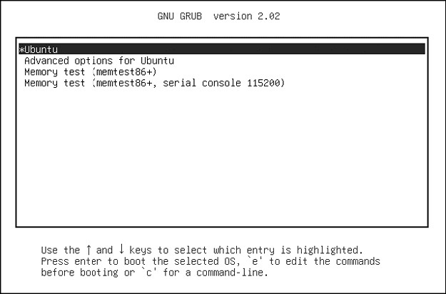
Figure 5-1: GRUB menu
Try the following to explore the boot loader:
- Reboot or power on your Linux system.
- Hold down SHIFT during the BIOS self-test or ESC at the firmware splash screen to get the GRUB menu. (Sometimes these screens are not visible, so you have to guess when to press the button.)
- Press e to view the boot loader configuration commands for the default boot option. You should see something like Figure 5-2 (you might have to scroll down to see all of the details).
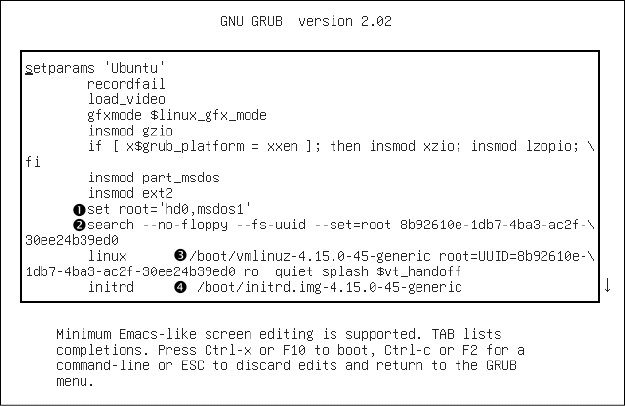
Figure 5-2: GRUB configuration editor
This screen tells us that for this configuration, the root is set with a UUID, the kernel image is /boot/vmlinuz-4.15.0-45-generic, and the kernel parameters include ro, quiet, and splash. The initial RAM filesystem is /boot/initrd.img-4.15.0-45-generic. But if you’ve never seen this sort of configuration before, you might find it somewhat confusing. Why are there multiple references to root, and why are they different? Why is insmod here? If you’ve seen this before, you might remember that it’s a Linux kernel feature normally run by udevd.
The double takes are warranted, because GRUB doesn’t use the Linux kernel (remember, its job is to start the kernel). The configuration you see consists wholly of features and commands internal to GRUB, which exists in its own separate world.
The confusion stems partly from the fact that GRUB borrows terminology from many sources. GRUB has its own “kernel” and its own insmod command to dynamically load GRUB modules, completely independent of the Linux kernel. Many GRUB commands are similar to Unix shell commands; there’s even an ls command to list files.
NOTE
There’s a GRUB module for LVM that is required to boot systems where the kernel resides on a logical volume. You might see this on your system.
By far, the most confusion results from GRUB’s use of the word root. Normally, you think of root as your system’s root filesystem. In a GRUB configuration, this is a kernel parameter, located somewhere after the image name of the linux command.
Every other reference to root in the configuration is to the GRUB root, which exists only inside of GRUB. The GRUB “root” is the filesystem where GRUB searches for kernel and RAM filesystem image files.
In Figure 5-2, the GRUB root is first set to a GRUB-specific device (hd0,msdos1), a default value for this configuration 1. In the next command, GRUB then searches for a particular UUID on a partition 2. If it finds that UUID, it sets the GRUB root to that partition.
To wrap it up, the linux command’s first argument (/boot/vmlinuz-. . .) is the location of the Linux kernel image file 3. GRUB loads this file from the GRUB root. The initrd command is similar, specifying the file for the initial RAM filesystem covered in Chapter 6 4.
You can edit this configuration inside GRUB; doing so is usually the easiest way to temporarily fix an erroneous boot. To permanently fix a boot problem, you’ll need to change the configuration (see Section 5.5.2), but for now, let’s go one step deeper and examine some GRUB internals with the command-line interface.
5.5.1 Exploring Devices and Partitions with the GRUB Command Line
As you can see in Figure 5-2, GRUB has its own device-addressing scheme. For example, the first hard disk found is named hd0, followed by hd1, and so on. Device name assignments are subject to change, but fortunately GRUB can search all partitions for UUIDs to find the one where the kernel resides, as you just saw in Figure 5-2 with the search command.
Listing Devices
To get a feel for how GRUB refers to the devices on your system, access the GRUB command line by pressing c at the boot menu or configuration editor. You should get the GRUB prompt:
grub>
You can enter any command here that you see in a configuration, but to get started, try a diagnostic command instead: ls. With no arguments, the output is a list of devices known to GRUB:
grub> ls
(hd0) (hd0,msdos1)
In this case, there is one main disk device denoted by (hd0) and a single partition (hd0,msdos1). If there were a swap partition on the disk, it would show up as well, such as (hd0,msdos5). The msdos prefix on the partitions tells you that the disk contains an MBR partition table; it would begin with gpt for GPT, found on UEFI systems. (There are even deeper combinations with a third identifier, where a BSD disklabel map resides inside a partition, but you won’t normally have to worry about this unless you’re running multiple operating systems on one machine.)
To get more detailed information, use ls -l. This command can be particularly useful because it displays any UUIDs of the partition filesystems. For example:
grub> ls -l
Device hd0: No known filesystem detected – Sector size 512B - Total size 32009856KiB Partition hd0,msdos1: Filesystem type ext* – Last modification time 2019-02-14 19:11:28 Thursday, UUID 8b92610e-1db7-4ba3-ac2f-30ee24b39ed0 - Partition start at 1024Kib - Total size 32008192KiB
This particular disk has a Linux ext2/3/4 filesystem on the first MBR partition. Systems using a swap partition will show another partition, but you won’t be able to tell its type from the output.
File Navigation
Now let’s look at GRUB’s filesystem navigation capabilities. Determine the GRUB root with the echo command (recall that this is where GRUB expects to find the kernel):
grub> echo $root
hd0,msdos1
To use GRUB’s ls command to list the files and directories in that root, you can append a forward slash to the end of the partition:
grub> ls (hd0,msdos1)/
Because it’s inconvenient to type the actual root partition, you can substitute the root variable to save yourself some time:
grub> ls ($root)/
The output is a short list of file and directory names on that partition’s filesystem, such as etc/, bin/, and dev/. This is now a completely different function of the GRUB ls command. Before, you were listing devices, partition tables, and perhaps some filesystem header information. Now you’re actually looking at the contents of filesystems.
You can take a deeper look into the files and directories on a partition in a similar manner. For example, to inspect the /boot directory, start with the following:
grub> ls ($root)/boot
NOTE
Use the up and down arrow keys to flip through the GRUB command history and the left and right arrows to edit the current command line. The standard readline keys (CTRL-N, CTRL-P, and so on) also work.
You can also view all currently set GRUB variables with the set command:
grub> set
?=0
color_highlight=black/white
color_normal=white/black
--snip--
prefix=(hd0,msdos1)/boot/grub
root=hd0,msdos1
One of the most important of these variables is $prefix, the filesystem and directory where GRUB expects to find its configuration and auxiliary support. We’ll discuss GRUB configuration next.
Once you’ve finished with the GRUB command-line interface, you can press ESC to return to the GRUB menu. Alternatively, if you’ve set all of the necessary configuration for boot (including the linux and possibly initrd variables), you can enter the boot command to boot that configuration. In any case, boot your system. We’re going to explore the GRUB configuration, and that’s best done when you have your full system available.
5.5.2 GRUB Configuration
The GRUB configuration directory is usually /boot/grub or /boot/grub2. It contains the central configuration file, grub.cfg, an architecture-specific directory such as i386-pc containing loadable modules with a .mod suffix, and a few other items such as fonts and localization information. We won’t modify grub.cfg directly; instead, we’ll use the grub-mkconfig command (or grub2-mkconfig on Fedora).
Reviewing grub.cfg
First, take a quick look at grub.cfg to see how GRUB initializes its menu and kernel options. You’ll see that the file consists of GRUB commands, which usually begin with a number of initialization steps followed by a series of menu entries for different kernel and boot configurations. The initialization isn’t complicated, but there are a lot of conditionals at the beginning that might lead you to believe otherwise. This first part just consists of a bunch of function definitions, default values, and video setup commands such as this:
if loadfont $font ; then set gfxmode=auto load_video insmod gfxterm --snip--
NOTE
Many variables such as $font originate from a load_env call near the beginning of grub.cfg.
Later in the configuration file, you’ll find the available boot configurations, each beginning with the menuentry command. You should be able to read and understand this example based on what you learned in the preceding section:
menuentry 'Ubuntu' --class ubuntu --class gnu-linux --class gnu --class os $menuentry_id_option 'gnulinux-simple-8b92610e-1db7-4ba3-ac2f-30ee24b39ed0' { recordfail load_video gfxmode $linux_gfx_mode insmod gzio if [ x$grub_platform = xxen ]; then insmod xzio; insmod lzopio; fi insmod part_msdos insmod ext2 set root='hd0,msdos1' search --no-floppy --fs-uuid --set=root 8b92610e-1db7-4ba3-ac2f-30ee24b39ed0 linux /boot/vmlinuz-4.15.0-45-generic root=UUID=8b92610e-1db7-4ba3-ac2f-30ee24b39ed0 ro quiet splash $vt_handoff initrd /boot/initrd.img-4.15.0-45-generic
}
Examine your grub.cfg file for submenu commands containing multiple menuentry commands. Many distributions use the submenu command for older versions of the kernel so that they don’t crowd the GRUB menu.
Generating a New Configuration File
If you want to make changes to your GRUB configuration, don’t edit your grub.cfg file directly, because it’s automatically generated and the system occasionally overwrites it. You’ll set up your new configuration elsewhere and then run grub-mkconfig to generate the new configuration.
To see how the configuration generation works, look at the very beginning of grub.cfg. There should be comment lines such as this:
### BEGIN /etc/grub.d/00_header ###
Upon further inspection, you’ll find that nearly every file in /etc/grub.d is a shell script that produces a piece of the grub.cfg file. The grub-mkconfig command itself is a shell script that runs everything in /etc/grub.d. Keep in mind that GRUB itself does not run these scripts at boot time; we run the scripts in user space to generate the grub.cfg file that GRUB runs.
Try it yourself as root. Don’t worry about overwriting your current configuration. This command by itself simply prints the configuration to the standard output.
# grub-mkconfig
What if you want to add menu entries and other commands to the GRUB configuration? The short answer is that you should put your customizations into a new custom.cfg file in your GRUB configuration directory (usually /boot/grub/custom.cfg).
The long answer is a little more complicated. The /etc/grub.d configuration directory gives you two options: 40_custom and 41_custom. The first, 40_custom, is a script that you can edit yourself, but it’s the least stable; a package upgrade is likely to destroy any changes you make. The 41_custom script is simpler; it’s just a series of commands that load custom.cfg when GRUB starts. If you choose this second option, your changes won’t appear when you generate your configuration file because GRUB does all of the work at boot time.
NOTE
The numbers in front of the filenames affect the processing order; lower numbers come first in the configuration file.
The two options for custom configuration files aren’t particularly extensive, and there’s nothing stopping you from adding your own scripts to generate configuration data. You might see some additions specific to your particular distribution in the /etc/grub.d directory. For example, Ubuntu adds memory tester boot options (memtest86+) to the configuration.
To write and install a newly generated GRUB configuration file, you can write the configuration to your GRUB directory with the -o option to grub-mkconfig, like this:
# grub-mkconfig -o /boot/grub/grub.cfg
As usual, back up your old configuration and make sure that you’re installing to the correct directory.
Now we’re going to get into some of the more technical details of GRUB and boot loaders. If you’re tired of hearing about boot loaders and the kernel, skip to Chapter 6.
5.5.3 GRUB Installation
Installing GRUB is more involved than configuring it. Fortunately, you won’t normally have to worry about installation because your distribution should handle it for you. However, if you’re trying to duplicate or restore a bootable disk, or preparing your own boot sequence, you might need to install it on your own.
Before proceeding, read Section 5.4 to get an idea of how PCs boot and determine whether you’re using MBR or UEFI boot. Next, build the GRUB software set and determine where your GRUB directory will be; the default is /boot/grub. You may not need to build GRUB if your distribution does it for you, but if you do, see Chapter 16 for how to build software from source code. Make sure that you build the correct target: it’s different for MBR or UEFI boot (and there are even differences between 32-bit and 64-bit EFI).
Installing GRUB on Your System
Installing the boot loader requires that you or an installer program determine the following:
- The target GRUB directory as seen by your currently running system. As just mentioned, that’s usually /boot/grub, but it might be different if you’re installing GRUB on another disk for use on another system.
- The current device of the GRUB target disk.
- For UEFI booting, the current mount point of the EFI system partition (usually /boot/efi).
Remember that GRUB is a modular system, but in order to load modules, it must read the filesystem that contains the GRUB directory. Your task is to construct a version of GRUB capable of reading that filesystem so that it can load the rest of its configuration (grub.cfg) and any required modules. On Linux, this usually means building a version of GRUB with its ext2.mod module (and possibly lvm.mod) preloaded. Once you have this version, all you need to do is place it on the bootable part of the disk and place the rest of the required files into /boot/grub.
Fortunately, GRUB comes with a utility called grub-install (not to be confused with install-grub, which you might find on some older systems), which performs most of the work of installing the GRUB files and configuration for you. For example, if your current disk is at /dev/sda and you want to install GRUB on that disk’s MBR with your current /boot/grub directory, use this command:
# grub-install /dev/sda
WARNING
Incorrectly installing GRUB may break the bootup sequence on your system, so don’t take this command lightly. If you’re concerned, research how to back up your MBR with dd, back up any other currently installed GRUB directory, and make sure that you have an emergency bootup plan.
Installing GRUB Using MBR on an External Storage Device
To install GRUB on a storage device outside the current system, you must manually specify the GRUB directory on that device as your current system now sees it. For example, say you have a target device of /dev/sdc and that device’s root filesystem containing /boot (for example, /dev/sdc1) is mounted on /mnt of your current system. This implies that when you install GRUB, your current system will see the GRUB files in /mnt/boot/grub. When running grub-install, tell it where those files should go as follows:
# grub-install --boot-directory=/mnt/boot /dev/sdc
On most MBR systems, /boot is a part of the root filesystem, but some installations put /boot into its own separate filesystem. Make sure that you know where your target /boot resides.
Installing GRUB with UEFI
UEFI installation is supposed to be easier, because all you have to do is copy the boot loader into place. But you also need to “announce” the boot loader to the firmware—that is, save the loader configuration to the NVRAM—with the efibootmgr command. The grub-install command runs this if it’s available, so normally you can install GRUB on a UEFI system like this:
# grub-install --efi-directory=efi_dir –-bootloader-id=name
Here, efi_dir is where the UEFI directory appears on your current system (usually /boot/efi/EFI, because the UEFI partition is typically mounted at /boot/efi) and name is an identifier for the boot loader.
Unfortunately, many problems can crop up when you’re installing a UEFI boot loader. For example, if you’re installing to a disk that will eventually end up in another system, you have to figure out how to announce that boot loader to the new system’s firmware. And there are differences in the install procedure for removable media.
But one of the biggest problems is UEFI secure boot.
5.6 UEFI Secure Boot Problems
One newer problem affecting Linux installations is dealing with the secure boot feature found on recent PCs. When active, this UEFI mechanism requires any boot loader to be digitally signed by a trusted authority in order to run. Microsoft has required hardware vendors shipping Windows 8 and later with their systems to use secure boot. The result is that if you try to install an unsigned boot loader on these systems, the firmware will reject the loader and the operating system won’t load.
Major Linux distributions have no problem with secure boot because they include signed boot loaders, usually based on a UEFI version of GRUB. Often there’s a small signed shim that goes between UEFI and GRUB; UEFI runs the shim, which in turn executes GRUB. Protecting against booting unauthorized software is an important feature if your machine is not in a trustworthy environment or needs to meet certain security requirements, so some distributions go a step further and require that the entire boot sequence (including the kernel) be signed.
There are some disadvantages to secure boot systems, especially for someone experimenting with building their own boot loaders. You can get around the secure boot requirement by disabling it in the UEFI settings. However, this won’t work cleanly for dual-boot systems since Windows won’t run without secure boot enabled.
5.7 Chainloading Other Operating Systems
UEFI makes it relatively easy to support loading other operating systems because you can install multiple boot loaders in the EFI partition. However, the older MBR style doesn’t support this functionality, and even if you do have UEFI, you may still have an individual partition with an MBR-style boot loader that you want to use. Instead of configuring and running a Linux kernel, GRUB can load and run a different boot loader on a specific partition on your disk; this is called chainloading.
To chainload, create a new menu entry in your GRUB configuration (using one of the methods described in the section “Generating a New Configuration File”). Here’s an example for a Windows installation on the third partition of a disk:
menuentry "Windows" {
insmod chain
insmod ntfs
set root=(hd0,3)
chainloader +1
}
The +1 option tells chainloader to load whatever is at the first sector of a partition. You can also get it to directly load a file, by using a line like this to load the io.sys MS-DOS loader:
menuentry "DOS" {
insmod chain
insmod fat
set root=(hd0,3)
chainloader /io.sys
}
5.8 Boot Loader Details
Now we’ll look quickly at some boot loader internals. To understand how boot loaders like GRUB work, first we’ll survey how a PC boots when you turn it on. Because they must address the many inadequacies of traditional PC boot mechanisms, boot loading schemes have several variations, but there are two main ones: MBR and UEFI.
5.8.1 MBR Boot
In addition to the partition information described in Section 4.1, the MBR includes a small area of 441 bytes that the PC BIOS loads and executes after its Power-On Self-Test (POST). Unfortunately, this space is inadequate to house almost any boot loader, so additional space is necessary, resulting in what is sometimes called a multistage boot loader. In this case the initial piece of code in the MBR does nothing other than load the rest of the boot loader code. The remaining pieces of the boot loader are usually stuffed into the space between the MBR and the first partition on the disk. This isn’t terribly secure because anything can overwrite the code there, but most boot loaders do it, including most GRUB installations.
This scheme of shoving the boot loader code after the MBR doesn’t work with a GPT-partitioned disk using the BIOS to boot because the GPT information resides in the area after the MBR. (GPT leaves the traditional MBR alone for backward compatibility.) The workaround for GPT is to create a small partition called a BIOS boot partition with a special UUID (21686148-6449-6E6F-744E-656564454649) to give the full boot loader code a place to reside. However, this isn’t a common configuration, because GPT is normally used with UEFI, not the traditional BIOS. It’s usually found only in older systems that have very large disks (greater than 2TB); these are too large for MBR.
5.8.2 UEFI Boot
PC manufacturers and software companies realized that the traditional PC BIOS is severely limited, so they decided to develop a replacement called Extensible Firmware Interface (EFI), which we’ve already discussed a bit in a few places in this chapter. EFI took a while to catch on for most PCs, but today it’s the most common, especially now that Microsoft requires secure boot for Windows. The current standard is Unified EFI (UEFI), which includes features such as a built-in shell and the ability to read partition tables and navigate filesystems. The GPT partitioning scheme is part of the UEFI standard.
Booting is radically different on UEFI systems compared to MBR. For the most part, it’s much easier to understand. Rather than executable boot code residing outside of a filesystem, there’s always a special VFAT filesystem called the EFI System Partition (ESP), which contains a directory named EFI. The ESP is usually mounted on your Linux system at /boot/efi, so you’ll probably find most of the EFI directory structure starting at /boot/efi/EFI. Each boot loader has its own identifier and a corresponding subdirectory, such as efi/microsoft, efi/apple, efi/ubuntu, or efi/grub. A boot loader file has a .efi extension and resides in one of these subdirectories, along with other supporting files. If you go exploring, you might find files such as grubx64.efi (the EFI version of GRUB) and shimx64.efi.
NOTE
The ESP differs from a BIOS boot partition, described in Section 5.8.1, and has a different UUID. You shouldn’t encounter a system with both.
There’s a wrinkle, though: you can’t just put old boot loader code into the ESP, because the old code was written for the BIOS interface. Instead, you must provide a boot loader written for UEFI. For example, when using GRUB, you must install the UEFI version of GRUB rather than the BIOS version. And, as explained earlier in “Installing GRUB with UEFI,” you must announce new boot loaders to the firmware.
Finally, as Section 5.6 noted, we have to contend with the “secure boot” issue.
5.8.3 How GRUB Works
Let’s wrap up our discussion of GRUB by looking at how it does its work:
- The PC BIOS or firmware initializes the hardware and searches its boot-order storage devices for boot code.
- Upon finding the boot code, the BIOS/firmware loads and executes it. This is where GRUB begins.
- The GRUB core loads.
- The core initializes. At this point, GRUB can now access disks and filesystems.
- GRUB identifies its boot partition and loads a configuration there.
- GRUB gives the user a chance to change the configuration.
- After a timeout or user action, GRUB executes the configuration (the sequence of commands in the grub.cfg file, as outlined in Section 5.5.2).
- In the course of executing the configuration, GRUB may load additional code (modules) in the boot partition. Some of these modules may be preloaded.
- GRUB executes a boot command to load and execute the kernel as specified by the configuration’s linux command.
Steps 3 and 4 of this sequence, where the GRUB core loads, can be complicated due to the inadequacies of traditional PC boot mechanisms. The biggest question is “Where is the GRUB core?” There are three basic possibilities:
- Partially stuffed between the MBR and the beginning of the first partition
- In a regular partition
- In a special boot partition: a GPT boot partition, ESP, or elsewhere
In all cases except where you have an UEFI/ESP, the PC BIOS loads 512 bytes from the MBR, and that’s where GRUB starts. This little piece (derived from boot.img in the GRUB directory) isn’t yet the core, but it contains the start location of the core and loads the core from this point.
However, if you have an ESP, the GRUB core goes there as a file. The firmware can navigate the ESP and directly execute all of GRUB or any other operating system loader located there. (You might have a shim in the ESP that goes just before GRUB to handle secure boot, but the idea is the same.)
Still, on most systems, this isn’t the complete picture. The boot loader might also need to load an initial RAM filesystem image into memory before loading and executing the kernel. That’s what the initrd configuration parameter specifies, and we’ll cover it in Section 6.7. But before you learn about the initial RAM filesystem, you should learn about the user space start—that’s where the next chapter begins.
6
HOW USER SPACE STARTS
The point where the kernel starts init, its first user-space process, is significant—not just because the memory and CPU are finally ready for normal system operation, but because that’s where you can see how the rest of the system builds up as a whole. Prior to this point, the kernel follows a well-controlled path of execution defined by a relatively small number of software developers. User space is far more modular and customizable, and it’s also quite easy to see what goes into the user-space startup and operation. If you’re feeling a little adventurous, you can use this to an advantage, because understanding and changing the user-space startup requires no low-level programming.
User space starts in roughly this order:
- init
- Essential low-level services, such as udevd and syslogd
- Network configuration
- Mid- and high-level services (cron, printing, and so on)
- Login prompts, GUIs, and high-level applications, such as web servers
6.1 Introduction to init
init is a user-space program like any other program on the Linux system, and you’ll find it in /sbin along with many of the other system binaries. Its main purpose is to start and stop the essential service processes on the system.
On all current releases of major Linux distributions, the standard implementation of init is systemd. This chapter focuses on how systemd works and how to interact with it.
There are two other varieties of init that you may encounter on older systems. System V init is a traditional sequenced init (Sys V, usually pronounced “sys-five,” with origins in Unix System V), found on Red Hat Enterprise Linux (RHEL) prior to version 7.0 and Debian 8. Upstart is the init on Ubuntu distributions prior to version 15.04.
Other versions of init exist, especially on embedded platforms. For example, Android has its own init, and a version called runit is popular on lightweight systems. The BSDs also have their own version of init, but you’re unlikely to see them on a contemporary Linux machine. (Some distributions have also modified the System V init configuration to resemble the BSD style.)
Different implementations of init have been developed to address several shortcomings in System V init. To understand the problems, consider the inner workings of a traditional init. It’s basically a series of scripts that init runs, in sequence, one at a time. Each script usually starts one service or configures an individual piece of the system. In most cases, it’s relatively easy to resolve dependencies, plus there’s a lot of flexibility to accommodate unusual startup requirements by modifying scripts.
However, this scheme suffers from some significant limitations. These can be grouped into “performance problems” and “system management hassles.” The most important of these are as follows:
- Performance suffers because two parts of the boot sequence cannot normally run at once.
- Managing a running system can be difficult. Startup scripts are expected to start service daemons. To find the PID of a service daemon, you need to use ps, some other mechanism specific to the service, or a semistandardized system of recording the PID, such as /var/run/myservice.pid.
- Startup scripts tend to include a lot of standard “boilerplate” code, sometimes making it difficult to read and understand what they do.
- There is little notion of on-demand services and configuration. Most services start at boot time; system configuration is largely set at that time as well. At one time, the traditional inetd daemon was able to handle on-demand network services, but it has largely fallen out of use.
Contemporary init systems have dealt with these problems by changing how services start, how they are supervised, and how the dependencies are configured. You’ll soon see how this works in systemd, but first, you should make sure that you’re running it.
6.2 Identifying Your init
Determining your system’s version of init usually isn’t difficult. Viewing the init(1) manual page normally tells you right away, but if you’re not sure, check your system as follows:
- If your system has /usr/lib/systemd and /etc/systemd directories, you have systemd.
- If you have an /etc/init directory that contains several .conf files, you’re probably running Upstart (unless you’re running Debian 7 or older, in which case you probably have System V init). We won’t cover Upstart in this book because it has been widely supplanted by systemd.
- If neither of the above is true, but you have an /etc/inittab file, you’re probably running System V init. Go to Section 6.5.
6.3 systemd
The systemd init is one of the newest init implementations on Linux. In addition to handling the regular boot process, systemd aims to incorporate the functionality of a number of standard Unix services, such as cron and inetd. It takes some inspiration from Apple’s launchd.
Where systemd really stands out from its predecessors is its advanced service management capabilities. Unlike a traditional init, systemd can track individual service daemons after they start, and group together multiple processes associated with a service, giving you more power and insight into exactly what is running on the system.
systemd is goal-oriented. At the top level, you can think of defining a goal, called a unit, for some system task. A unit can contain instructions for common startup tasks, such as starting a daemon, and it also has dependencies, which are other units. When starting (or activating) a unit, systemd attempts to activate its dependencies and then moves on to the details of the unit.
When starting services, systemd does not follow a rigid sequence; instead, it activates units whenever they are ready. After boot, systemd can react to system events (such as the uevents outlined in Chapter 3) by activating additional units.
Let’s start by looking at a top-level view of units, activation, and the initial boot process. Then you’ll be ready to see the specifics of unit configuration and the many varieties of unit dependencies. Along the way, you’ll get a grip on how to view and control a running system.
6.3.1 Units and Unit Types
One way that systemd is more ambitious than previous versions of init is that it doesn’t just operate processes and services; it can also manage filesystem mounts, monitor network connection requests, run timers, and more. Each capability is called a unit type, and each specific function (such as a service) is called a unit. When you turn on a unit, you activate it. Each unit has its own configuration file; we’ll explore those files in Section 6.3.3.
These are the most significant unit types that perform the boot-time tasks on a typical Linux system:
- Service units Control the service daemons found on a Unix system.
- Target units Control other units, usually by grouping them.
- Socket units Represent incoming network connection request locations.
- Mount units Represent the attachment of filesystems to the system.
NOTE
You can find a complete list of unit types in the systemd(1) manual page.
Of these, service and target units are the most common and the easiest to understand. Let’s take a look at how they fit together when you boot a system.
6.3.2 Booting and Unit Dependency Graphs
When you boot a system, you’re activating a default unit, normally a target unit called default.target that groups together a number of service and mount units as dependencies. As a result, it’s somewhat easy to get a partial picture of what’s going to happen when you boot. You might expect the unit dependencies to form a tree—with one unit at the top, branching into several units below for later stages of the boot process—but they actually form a graph. A unit that comes late in the boot process can depend on several previous units, making earlier branches of a dependency tree join back together. You can even create a dependency graph with the systemd-analyze dot command. The entire graph is quite large on a typical system (requiring significant computing power to render), and it’s hard to read, but there are ways to filter units and zero in on individual portions.
Figure 6-1 shows a very small part of the dependency graph for the default.target unit found on a typical system. When you activate that unit, all of the units below it also activate.
NOTE
On most systems, default.target is a link to some other high-level target unit, such as one that represents a user interface startup. On the system shown in Figure 6-1, default.target groups the units necessary to start a GUI.
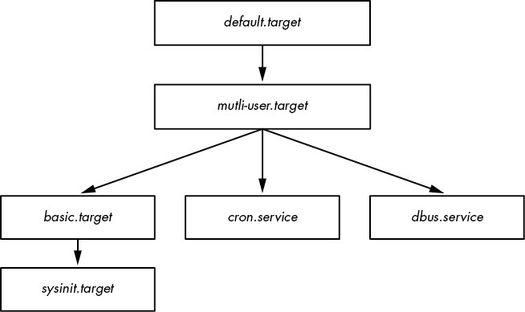
Figure 6-1: Unit dependency graph
This figure is a greatly simplified view. On your own system, you won’t find it feasible to sketch out the dependencies just by looking at the unit configuration file at the top and working your way down. We’ll take a closer look at how dependencies work in Section 6.3.6.
6.3.3 systemd Configuration
The systemd configuration files are spread among many directories across the system, so you might need to do a little hunting when you’re looking for a particular file. There are two main directories for systemd configuration: the system unit directory (global configuration; usually /lib/systemd/system or /usr/lib/systemd/system) and the system configuration directory (local definitions; usually /etc/systemd/system).
To prevent confusion, stick to this rule: avoid making changes to the system unit directory, because your distribution will maintain it for you. Make your local changes to the system configuration directory. This general rule also applies systemwide. When given the choice between modifying something in /usr and /etc, always change /etc.
You can check the current systemd configuration search path (including precedence) with this command:
$ systemctl -p UnitPath showUnitPath=/etc/systemd/system.control /run/systemd/system.control /run/systemd/transient /etc/systemd/system /run/systemd/system /run/systemd/generator /lib/systemd/system /run/systemd/generator.late
To see the system unit and configuration directories on your system, use the following commands:
$ pkg-config systemd --variable=systemdsystemunitdir
/lib/systemd/system
$ pkg-config systemd --variable=systemdsystemconfdir
/etc/systemd/system
Unit Files
The format for unit files is derived from the XDG Desktop Entry specification (used for .desktop files, which are very similar to .ini files on Microsoft systems), with section names in square brackets ([]) and variable and value assignments (options) in each section.
As an example, consider the dbus-daemon.service unit file for the desktop bus daemon:
[Unit]
Description=D-Bus System Message Bus
Documentation=man:dbus-daemon(1)
Requires=dbus.socket
RefuseManualStart=yes
[Service]
ExecStart=/usr/bin/dbus-daemon --system --address=systemd: --nofork --nopidfile --systemd-activation --syslog-only
ExecReload=/usr/bin/dbus-send --print-reply --system --type=method_call --dest= org.freedesktop.DBus / org.freedesktop.DBus.ReloadConfig
There are two sections, [Unit] and [Service]. The [Unit] section gives some details about the unit and contains description and dependency information. In particular, this unit requires the dbus.socket unit as a dependency.
In a service unit such as this, you’ll find the details about the service in the [Service] section, including how to prepare, start, and reload the service. You’ll find a complete listing in the systemd.service(5) and systemd.exec(5) manual pages, as well as in the discussion of process tracking in Section 6.3.5.
Many other unit configuration files are similarly straightforward. For example, the service unit file sshd.service enables remote secure shell logins by starting sshd.
NOTE
The unit files you find on your system may differ slightly. In this example, you saw that Fedora uses the name dbus-daemon.service, and Ubuntu uses dbus.service. There may be changes in the actual files as well, but they are often superficial.
Variables
You’ll often find variables inside unit files. Here’s a section from a different unit file, this one for the secure shell that you’ll learn about in Chapter 10:
[Service]
EnvironmentFile=/etc/sysconfig/sshd
ExecStartPre=/usr/sbin/sshd-keygen
ExecStart=/usr/sbin/sshd -D $OPTIONS $CRYPTO_POLICY
ExecReload=/bin/kill -HUP $MAINPID
Everything that starts with a dollar sign ($) is a variable. Although these variables have the same syntax, their origins are different. The $OPTIONS and $CRYPTO_POLICY options, which you can pass to sshd upon unit activation, are defined in the file specified by the EnvironmentFile setting. In this particular case, you can look at /etc/sysconfig/sshd to determine if the variables are set and, if so, what their values are.
In comparison, $MAINPID contains the ID of the tracked process of the service (see Section 6.3.5). Upon unit activation, systemd records and stores this PID so that you can use it to manipulate a service-specific process later on. The sshd.service unit file uses $MAINPID to send a hangup (HUP) signal to sshd when you want to reload the configuration (this is a very common technique for dealing with reloads and restarting Unix daemons).
Specifiers
A specifier is a variable-like feature often found in unit files. Specifiers start with a percent sign (%). For example, the %n specifier is the current unit name, and the %H specifier is the current hostname.
You can also use specifiers to create multiple copies of a unit from a single unit file. One example is the set of getty processes that control the login prompts on virtual consoles, such as tty1 and tty2. To use this feature, add an @ symbol to the end of the unit name, before the dot in the unit filename.
For example, the getty unit filename is getty@.service in most distributions, allowing for the dynamic creation of units, such as getty@tty1 and getty@tty2. Anything after the @ is called the instance. When you look at one of these unit files, you may also see a %I or %i specifier. When activating a service from a unit file with instances, systemd replaces the %I or %i specifier with the instance to create the new service name.
6.3.4 systemd Operation
You’ll interact with systemd primarily through the systemctl command, which allows you to activate and deactivate services, list status, reload the configuration, and much more.
The most essential commands help you to obtain unit information. For example, to view a list of active units on your system, issue a list-units command. (This is the default command for systemctl, so technically you don’t need the list-units argument.)
$ systemctl list-units
The output format is typical of a Unix information-listing command. For example, the header and the line for -.mount (the root filesystem) looks like this:
UNIT LOAD ACTIVE SUB DESCRIPTION
-.mount loaded active mounted Root Mount
By default, systemctl list-units produces a lot of output, because a typical system has numerous active units, but it’s still an abridged form because systemctl truncates any really large unit names. To see the full names of the units, use the --full option, and to see all units (not just those that are active), use the --all option.
A particularly useful systemctl operation is getting the status of a specific unit. For example, here’s a typical status command and some of its output:
$ systemctl status sshd.service
· sshd.service - OpenBSD Secure Shell server Loaded: loaded (/usr/lib/systemd/system/sshd.service; enabled; vendor preset: enabled) Active: active (running) since Fri 2021-04-16 08:15:41 EDT; 1 months 1 days ago Main PID: 1110 (sshd) Tasks: 1 (limit: 4915) CGroup: /system.slice/sshd.service ⌙1110 /usr/sbin/sshd -D
A number of log messages may also follow this output. If you’re used to a traditional init system, you might be surprised by the amount of useful information available from this one command. You get not only the state of the unit but also the processes associated with the service, when the unit started, and a number of log messages, if available.
The output for other unit types includes similar useful information; for example, the output from mount units includes when the mount happened, the exact command line used for it, and its exit status.
One interesting piece of the output is the control group (cgroup) name. In the preceding example, the control group is /system.slice/sshd.service, and the processes in the cgroup are shown below it. However, you may also see control groups named starting with systemd:/system if the processes of a unit (for example, a mount unit) have already terminated. You can view systemd-related cgroups without the rest of the unit status with the systemd-cgls command. You’ll learn more about how systemd uses cgroups in Section 6.3.5, and how cgroups work in Section 8.6.
The status command also displays only the most recent diagnostic log messages for the unit. You can view all of a unit’s messages like this:
$ journalctl --unit=unit_name
You’ll learn much more about journalctl in Chapter 7.
NOTE
Depending on your system and user configuration, you might need superuser privileges to run journalctl.
How Jobs Relate to Starting, Stopping, and Reloading Units
To activate, deactivate, and restart units, you use the commands systemctl start, systemctl stop, and systemctl restart. However, if you’ve changed a unit configuration file, you can tell systemd to reload the file in one of two ways:
- systemctl reload unit Reloads just the configuration for unit.
- systemctl daemon-reload Reloads all unit configurations.
Requests to activate, reactivate, and restart units are called jobs in systemd, and they are essentially unit state changes. You can check the current jobs on a system with:
$ systemctl list-jobs
If a system has been up for some time, you can reasonably expect there to be no active jobs because all activations required to start the system should be complete. However, at boot time, you can sometimes log in fast enough to see jobs for units that start very slowly. For example:
JOB UNIT TYPE STATE 1 graphical.target start waiting 2 multi-user.target start waiting 71 systemd-...nlevel.service start waiting 75 sm-client.service start waiting 76 sendmail.service start running 120 systemd-...ead-done.timer start waiting
In this case, job 76, the sendmail.service unit startup, is taking a really long time. The other listed jobs are in a waiting state, most likely because they’re all waiting for job 76. When sendmail.service finishes starting and is fully active, job 76 will complete, the rest of the jobs will also complete, and the job list will be empty.
NOTE
The term job can be confusing, especially because some other init systems use it to refer to features that are more like systemd units. These jobs also have nothing to do with the shell’s job control.
See Section 6.6 to learn how to shut down and reboot the system.
Adding Units to systemd
Adding units to systemd is primarily a matter of creating, then activating and possibly enabling, unit files. You should normally put your own unit files in the system configuration directory (/etc/systemd/system) so that you won’t confuse them with anything that came with your distribution and so that the distribution won’t overwrite them when you upgrade.
Because it’s easy to create target units that don’t actually do anything or interfere with your system, give it a try. To create two targets, one with a dependency on the other, follow these steps:
- Create a unit file named test1.target in /etc/systemd/system:
[Unit]
Description=test 1 - Create a test2.target file with a dependency on test1.target:
[Unit]
Description=test 2
Wants=test1.targetThe Wants keyword here defines a dependency that causes test1.target to activate when you activate test2.target. Activate the test2.target unit to see it in action:
# systemctl start test2.target
- Verify that both units are active:
# systemctl status test1.target test2.target
· test1.target - test 1 Loaded: loaded (/etc/systemd/system/test1.target; static; vendor preset: enabled) Active: active since Tue 2019-05-28 14:45:00 EDT; 16s ago
May 28 14:45:00 duplex systemd[1]: Reached target test 1.
· test2.target - test 2 Loaded: loaded (/etc/systemd/system/test2.target; static; vendor preset: enabled) Active: active since Tue 2019-05-28 14:45:00 EDT; 17s ago - If your unit file has an [Install] section, you need to “enable” the unit before activating it:
# systemctl enable unit
The [Install] section is another way to create a dependency. We’ll look at it (and dependencies as a whole) in more detail in Section 6.3.6.
Removing Units from systemd
To remove a unit, follow these steps:
- Deactivate the unit if necessary:
# systemctl stop unit
- If the unit has an [Install] section, disable the unit to remove any symbolic links created by the dependency system:
# systemctl disable unit
You can then remove the unit file if you like.
NOTE
Disabling a unit that is implicitly enabled (that is, does not have an [Install] section) has no effect.
6.3.5 systemd Process Tracking and Synchronization
systemd wants a reasonable amount of information and control over every process it starts. This has been difficult historically. A service can start in different ways; it could fork new instances of itself or even daemonize and detach itself from the original process. There’s also no telling how many subprocesses the server can spawn.
In order to manage activated units easily, systemd uses the previously mentioned cgroups, a Linux kernel feature that allows for finer tracking of a process hierarchy. The use of cgroups also helps minimize the work that a package developer or administrator needs to do in order to create a working unit file. In systemd, you don’t have to worry about accounting for every possible startup behavior; all you need to know is whether a service startup process forks. Use the Type option in your service unit file to indicate startup behavior. There are two basic startup styles:
- Type=simple The service process doesn’t fork and terminate; it remains the main service process.
- Type=forking The service forks, and systemd expects the original service process to terminate. Upon this termination, systemd assumes the service is ready.
The Type=simple option doesn’t account for the fact that a service may take some time to initiate, and as a result systemd doesn’t know when to start any dependent units that absolutely require such a service to be ready. One way to deal with this is to use delayed startup (see Section 6.3.7). However, some Type startup styles can indicate that the service itself will notify systemd when it’s ready:
- Type=notify When ready, the service sends a notification specific to systemd with a special function call.
- Type=dbus When ready, the service registers itself on the D-Bus (Desktop Bus).
Another service startup style is specified with Type=oneshot; here the service process terminates completely with no child processes after starting. It’s like Type=simple, except that systemd does not consider the service to be started until the service process terminates. Any strict dependencies (which you’ll see soon) will not start until that termination. A service using Type=oneshot also gets a default RemainAfterExit=yes directive so that systemd regards a service as active even after its processes terminate.
A final option is Type=idle. This works like the simple style, but it instructs systemd not to start the service until all active jobs finish. The idea here is just to delay a service start until other services have started to keep services from stepping on one another’s output. Remember, once a service has started, the systemd job that started it terminates, so waiting for all other jobs to finish ensures that nothing else is starting.
If you’re interested in how cgroups work, we’ll explore them in more detail in Section 8.6.
6.3.6 systemd Dependencies
A flexible system for boot-time and operational dependencies requires some degree of complexity, because overly strict rules can cause poor system performance and instability. For example, say you want to display a login prompt after starting a database server, so you define a strict dependency from the login prompt to the database server. This means if the database server fails, the login prompt will also fail, and you won’t even be able to log in to your machine to fix the issue!
Unix boot-time tasks are fairly fault tolerant and can often fail without causing serious problems for standard services. For example, if you removed a system’s data disk but left its /etc/fstab entry (or mount unit in systemd), the boot-time filesystem mount would fail. Though this failure might affect application servers (such as web servers), it typically wouldn’t affect standard system operation.
To accommodate the need for flexibility and fault tolerance, systemd offers several dependency types and styles. Let’s first look at the basic types, labeled by their keyword syntax:
- Requires Strict dependencies. When activating a unit with a Requires dependency unit, systemd attempts to activate the dependency unit. If the dependency unit fails, systemd also deactivates the dependent unit.
- Wants Dependencies for activation only. Upon activating a unit, systemd activates the unit’s Wants dependencies, but it doesn’t care if those dependencies fail.
- Requisite Units that must already be active. Before activating a unit with a Requisite dependency, systemd first checks the status of the dependency. If the dependency hasn’t been activated, systemd fails on activation of the unit with the dependency.
- Conflicts Negative dependencies. When activating a unit with a Conflict dependency, systemd automatically deactivates the opposing dependency if it’s active. Simultaneous activation of conflicting units fails.
The Wants dependency type is especially significant because it doesn’t propagate failures to other units. The systemd.service(5) manual page states that this is how you should specify dependencies if possible, and it’s easy to see why. This behavior produces a much more robust system, giving you the benefit of a traditional init, where the failure of an earlier startup component doesn’t necessarily prohibit later components from starting.
You can view a unit’s dependencies with the systemctl command, as long as you specify a type of dependency, such as Wants or Requires:
# systemctl show -p type unit
Ordering
So far, the dependency syntax you’ve seen hasn’t explicitly specified order. For example, activating most service units with Requires or Wants dependencies causes these units to start at the same time. This is optimal, because you want to start as many services as possible as quickly as possible to reduce boot time. However, there are situations when one unit must start after another. For instance, in the system that Figure 6-1 is based on, the default.target unit is set to start after multi-user.target (this order distinction is not shown in the figure).
To activate units in a particular order, use the following dependency modifiers:
- Before The current unit will activate before the listed unit(s). For example, if Before=bar.target appears in foo.target, systemd activates foo.target before bar.target.
- After The current unit activates after the listed unit(s).
When you use ordering, systemd waits until a unit has an active status before activating its dependent units.
Default and Implicit Dependencies
As you explore dependencies (especially with systemd-analyze), you might start to notice that some units acquire dependencies that aren’t explicitly stated in unit files or other visible mechanisms. You’re most likely to encounter this in target units with Wants dependencies—you’ll find that systemd adds an After modifier alongside any unit listed as a Wants dependency. These additional dependencies are internal to systemd, calculated at boot time, and not stored in configuration files.
The added After modifier is called a default dependency, an automatic addition to the unit configuration meant to avoid common mistakes and keep unit files small. These dependencies vary according to the type of unit. For example, systemd doesn’t add the same default dependencies for target units as it does for service units. These differences are listed in the DEFAULT DEPENDENCIES sections of the unit configuration manual pages, such as systemd.service(5) and systemd.target(5).
You can disable a default dependency in a unit by adding DefaultDependencies=no to its configuration file.
Conditional Dependencies
You can use several conditional dependency parameters to test various operating system states rather than systemd units. For example:
- ConditionPathExists=p True if the (file) path p exists in the system.
- ConditionPathIsDirectory=p True if p is a directory.
- ConditionFileNotEmpty=p True if p is a file and it’s not zero-length.
If a conditional dependency in a unit is false when systemd tries to activate the unit, the unit does not activate, although this applies only to the unit in which it appears. That is, if you activate a unit that has a conditional dependency and some unit dependencies, systemd attempts to activate those unit dependencies regardless of whether the condition is true or false.
Other dependencies are primarily variations on the preceding ones. For example, the RequiresOverridable dependency is just like Requires when running normally, but it acts like a Wants dependency if a unit is manually activated. For a full list, see the systemd.unit(5) manual page.
The [Install] Section and Enabling Units
So far, we’ve been looking at how to define dependencies in a dependent unit’s configuration file. It’s also possible to do this “in reverse”—that is, by specifying the dependent unit in a dependency’s unit file. You can do this by adding a WantedBy or RequiredBy parameter in the [Install] section. This mechanism allows you to alter when a unit should start without modifying additional configuration files (for example, when you’d rather not edit a system unit file).
To see how this works, consider the example units back in Section 6.3.4. We had two units, test1.target and test2.target, with test2.target having a Wants dependency on test1.target. We can change them so that test1.target looks like this:
[Unit]
Description=test 1
[Install]
WantedBy=test2.target
And test2.target is as follows:
[Unit]
Description=test 2
Because you now have a unit with an [Install] section, you need to enable the unit with systemctl before you can start it. Here’s how that works with test1.target:
# systemctl enable test1.target
Created symlink /etc/systemd/system/test2.target.wants/test1.target → /etc/systemd/system/test1.target.
Notice the output here—the effect of enabling a unit is to create a symbolic link in a .wants subdirectory corresponding to the dependent unit (test2.target in this case). You can now start both units at the same time with systemctl start test2.target because the dependency is in place.
NOTE
Enabling a unit does not activate it.
To disable the unit (and remove the symbolic link), use systemctl as follows:
# systemctl disable test1.target
Removed /etc/systemd/system/test2.target.wants/test1.target.
The two units in this example also give you a chance to experiment with different startup scenarios. For example, see what happens when you try to start only test1.target, or when you try to start test2.target without enabling test1.target. Or, try changing WantedBy to RequiredBy. (Remember, you can check the status of a unit with systemctl status.)
During normal operation, systemd ignores the [Install] section in a unit but notes its presence and, by default, considers the unit to be disabled. Enabling a unit survives reboots.
The [Install] section is usually responsible for the .wants and .requires directories in the system configuration directory (/etc/systemd/system). However, the unit configuration directory ([/usr]/lib/systemd/system) also contains .wants directories, and you may also add links that don’t correspond to [Install] sections in the unit files. These manual additions are a simple way to add a dependency without modifying a unit file that may be overwritten in the future (by a software upgrade, for instance), but they’re not particularly encouraged because a manual addition is difficult to trace.
6.3.7 systemd On-Demand and Resource-Parallelized Startup
One of systemd’s features is the ability to delay a unit startup until it is absolutely needed. The setup typically works like this:
- You create a systemd unit (call it Unit A) for the system service you’d like to provide.
- You identify a system resource, such as a network port/socket, file, or device, that Unit A uses to offer its services.
- You create another systemd unit, Unit R, to represent that resource. These units are classified into types, such as socket units, path units, and device units.
- You define the relationship between Unit A and Unit R. Normally, this is implicit based on the units’ names, but it can also be explicit, as we’ll see shortly.
Once in place, the operation proceeds as follows:
- Upon activation of Unit R, systemd monitors the resource.
- When anything tries to access the resource, systemd blocks the resource, and the input to the resource is buffered.
- systemd activates Unit A.
- When ready, the service from Unit A takes control of the resource, reads the buffered input, and runs normally.
There are a few concerns here:
- You must make sure that your resource unit covers every resource that the service provides. This normally isn’t a problem, because most services have just one point of access.
- You need to make sure your resource unit is tied to the service unit that it represents. This can be implicit or explicit, and in some cases, many options represent different ways for systemd to perform the handoff to the service unit.
- Not all servers know how to interface with the resource units systemd can provide.
If you already know what traditional utilities like inetd, xinetd, and automount do, you’ll see many similarities. Indeed, the concept is nothing new; systemd even includes support for automount units.
An Example Socket Unit and Service
Let’s look at an example, a simple network echo service. This is somewhat advanced material, and you might not fully understand it until you’ve read the discussion of TCP, ports, and listening in Chapter 9 and sockets in Chapter 10, but you should be able to get the basic idea.
The idea of an echo service is to repeat anything that a network client sends after connecting; ours will listen on TCP port 22222. We’ll start building it with a socket unit to represent the port, as shown in the following echo.socket unit file:
[Unit]
Description=echo socket[Socket]
ListenStream=22222
Accept=true
Note that there’s no mention of the service unit that this socket supports inside the unit file. So, what is that corresponding service unit file?
Its name is echo@.service. The link is established by naming convention; if a service unit file has the same prefix as a .socket file (in this case, echo), systemd knows to activate that service unit when there’s activity on the socket unit. In this case, systemd creates an instance of echo@.service when there’s activity on echo.socket. Here’s the echo@.service unit file:
[Unit]
Description=echo service
[Service]
ExecStart=/bin/cat
StandardInput=socket
NOTE
If you don’t like the implicit activation of units based on the prefixes, or you need to link units with different prefixes, you can use an explicit option in the unit defining your resource. For example, use Socket=bar.socket inside foo.service to have bar.socket hand its socket to foo.service.
To get this example unit running, you need to start the echo.socket unit:
# systemctl start echo.socket
Now you can test the service by connecting to your local TCP port 22222 with a utility such as telnet. The service repeats what you enter; here’s an example interaction:
$ telnet localhost 22222
Trying 127.0.0.1...
Connected to localhost.
Escape character is '^]'.Hi there.
Hi there.
When you’re bored with this and want to get back to your shell, press CTRL-] on a line by itself and then press CTRL-D. To stop the service, stop the socket unit like so:
# systemctl stop echo.socket
NOTE
telnet may not be installed by default on your distribution.
Instances and Handoff
Because the echo@.service unit supports multiple simultaneous instances, there’s an @ in the name (recall that the @ specifier signifies parameterization). Why would you want multiple instances? Say you have more than one network client connecting to the service at the same time, and you want each connection to have its own instance. In this case, the service unit must support multiple instances because we included the Accept=true option in echo.socket. That option instructs systemd not only to listen on the port, but also to accept incoming connections on behalf of the service unit and pass it to them, creating a separate instance for each connection. Each instance reads data from the connection as standard input, but it doesn’t necessarily need to know that the data is coming from a network connection.
NOTE
Most network connections require more flexibility than just a simple gateway to standard input and output, so don’t expect to be able to create complex network services with a service unit file like the echo@.service unit file shown here.
If a service unit can do the work of accepting a connection, don’t put an @ in its unit filename, and don’t put Accept=true in the socket unit. In this case, the service unit takes complete control of the socket from systemd, which in turn does not attempt to listen on the network port again until the service unit finishes.
The many different resources and options for handoff to service units make it difficult to provide a categorical summary. Not only that, but the documentation for the options is spread out over several manual pages. For the resource-oriented units, check systemd.socket(5), systemd.path(5), and systemd.device(5). One document that’s often overlooked for service units is systemd.exec(5), which contains information about how the service unit can expect to receive a resource upon activation.
Boot Optimization with Auxiliary Units
An overall goal of systemd is to simplify dependency order and speed up boot time. Resource units such as socket units provide a way to do this that’s similar to on-demand startup. We’ll still have a service unit and an auxiliary unit representing the service unit’s offered resource, except that in this case, systemd starts the service unit as soon as it activates the auxiliary unit rather than waiting around for a request.
The reason for this scheme is that essential boot-time service units such as systemd-journald.service take some time to start, and many other units depend on them. However, systemd can offer the essential resource of a unit (such as a socket unit) very quickly, and then it can immediately activate not only the essential unit but also any units that depend on it. Once the essential unit is ready, it takes control of the resource.
Figure 6-2 shows how this might work in a traditional sequential system. In this boot timeline, Service E provides an essential Resource R. Services A, B, and C depend on this resource (but not on each other) and must wait until Service E has started. Because the system will not start a new service until it’s done starting the preceding one, it takes quite a long time to get around to starting Service C.
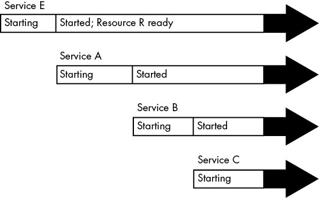
Figure 6-2: Sequential boot timeline with a resource dependency
Figure 6-3 shows a possible equivalent systemd boot configuration. The services are represented by Units A, B, C, and E, with a new Unit R representing the resource that Unit E provides. Because systemd can provide an interface for Unit R while Unit E starts, Units A, B, C, and E can all be started at the same time. When ready, Unit E takes over for Unit R. An interesting point here is that Unit A, B, or C may not need to access the resource that Unit R provides before finishing startup. What we’re doing is providing them with the option to start accessing the resource as soon as possible.
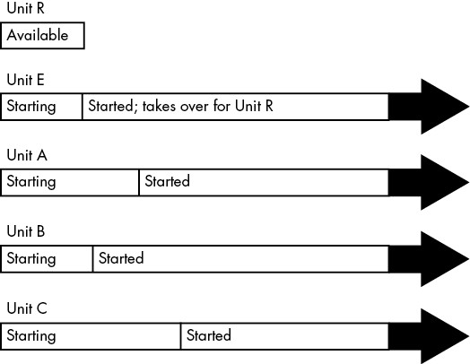
Figure 6-3: systemd boot timeline with a resource unit
NOTE
When you parallelize startup like this, there’s a chance that your system will slow down temporarily due to a large number of units starting at once.
The takeaway is that, although you’re not creating an on-demand unit startup in this case, you’re using the same features that make on-demand startup possible. For common real-world examples, see the journald and D-Bus configuration units on a machine running systemd; they’re very likely to be parallelized in this way.
6.3.8 systemd Auxiliary Components
As systemd has grown in popularity, it has grown to include support for a few tasks not related to startup and service management, both directly and through auxiliary compatibility layers. You may notice the numerous programs in /lib/systemd; these are the executables related to those functions.
Here are a few specific system services:
- udevd You learned about this in Chapter 3; it’s part of systemd.
- journald A logging service that handles a few different logging mechanisms, including the traditional Unix syslog service. You’ll read more about this in Chapter 7.
- resolved A name service caching daemon for DNS; you’ll learn about that in Chapter 9.
All of the executables for these services are prefixed with systemd-. For example, the systemd-integrated udevd is called systemd-udevd.
If you dig deeper, you’ll find that some of these programs are relatively simple wrappers. Their function is to run standard system utilities and notify systemd of the results. One example is systemd-fsck.
If you see a program in /lib/systemd that you can’t identify, check for a manual page. There’s a good chance that it will describe not only the utility but also the type of unit it’s meant to augment.
6.4 System V Runlevels
Now that you’ve learned about systemd and how it works, let’s shift gears and look at some aspects of the traditional System V init. At any given time on a Linux system, a certain base set of processes (such as crond and udevd) is running. In System V init, this state of the machine is called its runlevel, which is denoted by a number from 0 through 6. A system spends most of its time in a single runlevel, but when you shut down the machine, init switches to a different runlevel in order to terminate the system services in an orderly fashion and tell the kernel to stop.
You can check your system’s runlevel with the who -r command like this:
$ who -r
run-level 5 2019-01-27 16:43
This output tells us that the current runlevel is 5, as well as the date and time that the runlevel was established.
Runlevels serve various purposes, but the most common one is to distinguish between system startup, shutdown, single-user mode, and console mode states. For example, most systems traditionally used runlevels 2 through 4 for the text console; a runlevel of 5 means that the system starts a GUI login.
But runlevels are becoming a thing of the past. Even though systemd supports them, it considers runlevels obsolete as end states for the system, preferring target units instead. To systemd, runlevels exist primarily to start services that support only the System V init scripts.
6.5 System V init
The System V init implementation is among the oldest used on Linux; its core idea is to support an orderly bootup to different runlevels with a carefully constructed startup sequence. System V init is now uncommon on most server and desktop installations, but you may encounter it in versions of RHEL prior to version 7.0, as well as in embedded Linux environments, such as routers and phones. In addition, some older packages may only provide startup scripts designed for System V init; systemd can handle those with a compatibility mode that we’ll discuss in Section 6.5.5. We’ll look at the basics here, but keep in mind that you might not actually encounter anything covered in this section.
A typical System V init installation has two components: a central configuration file and a large set of boot scripts augmented by a symbolic link farm. The configuration file /etc/inittab is where it all starts. If you have System V init, look for a line like the following in your inittab file:
id:5:initdefault:
This indicates that the default runlevel is 5.
All lines in inittab take the following form, with four fields separated by colons in this order:
- A unique identifier (a short string, such as id in the previous example).
- The applicable runlevel number(s).
- The action that init should take (default runlevel to 5 in the previous example).
- A command to execute (optional).
To see how commands work in an inittab file, consider this line:
l5:5:wait:/etc/rc.d/rc 5
This particular line is important because it triggers most of the system configuration and services. Here, the wait action determines when and how System V init runs the command: run /etc/rc.d/rc 5 once when entering runlevel 5 and then wait for this command to finish before doing anything else. The rc 5 command executes anything in /etc/rc5.d that starts with a number (in numeric order). We’ll cover this in more detail shortly.
The following are some of the most common inittab actions in addition to initdefault and wait:
respawn
- The respawn action tells init to run the command that follows and, if the command finishes executing, to run it again. You’re likely to see something like this in an inittab file:
1:2345:respawn:/sbin/mingetty tty1
- The getty programs provide login prompts. The preceding line is used for the first virtual console (/dev/tty1), which is the one you see when you press ALT-F1 or CTRL-ALT-F1 (see Section 3.4.7). The respawn action brings the login prompt back after you log out.
ctrlaltdel
- The ctrlaltdel action controls what the system does when you press CTRL-ALT-DEL on a virtual console. On most systems, this is some sort of reboot command using the shutdown command (discussed in Section 6.6).
sysinit
- The sysinit action is the first thing that init should run when starting, before entering any runlevels.
NOTE
For more available actions, see the inittab(5) manual page.
6.5.1 System V init: Startup Command Sequence
Now let’s look at how System V init starts system services, just before it lets you log in. Recall this inittab line from earlier:
l5:5:wait:/etc/rc.d/rc 5
This short line triggers many other programs. In fact, rc stands for run commands, which many people refer to as scripts, programs, or services. But where are these commands?
The 5 in this line tells us that we’re talking about runlevel 5. The commands are probably in either /etc/rc.d/rc5.d or /etc/rc5.d. (Runlevel 1 uses rc1.d, runlevel 2 uses rc2.d, and so on.) For example, you might find the following items in the rc5.d directory:
S10sysklogd S20ppp S99gpm
S12kerneld S25netstd_nfs S99httpd
S15netstd_init S30netstd_misc S99rmnologinS18netbase S45pcmcia S99sshd
S20acct S89atd
S20logoutd S89cron
The rc 5 command starts programs in the rc5.d directory by executing the following commands in this sequence:
S10sysklogd start
S12kerneld start
S15netstd_init start
S18netbase start
--snip--
S99sshd start
Notice the start argument in each command. The capital S in a command name means that the command should run in start mode, and the number (00 through 99) determines where in the sequence rc starts the command. The rc*.d commands are usually shell scripts that start programs in /sbin or /usr/sbin.
Normally, you can figure out what a particular command does by viewing the script with less or another pager program.
NOTE
Some rc*.d directories contain commands that start with K (for “kill,” or stop mode). In this case, rc runs the command with the stop argument instead of start. You’ll most likely encounter K commands in runlevels that shut down the system.
You can run these commands by hand; however, normally you’ll want to do so through the init.d directory instead of the rc*.d directories, which we’ll look at next.
6.5.2 The System V init Link Farm
The contents of the rc*.d directories are actually symbolic links to files in yet another directory, init.d. If your goal is to interact with, add, delete, or modify services in the rc*.d directories, you need to understand these symbolic links. A long listing of a directory such as rc5.d reveals a structure like this:
lrwxrwxrwx . . . S10sysklogd -> ../init.d/sysklogd
lrwxrwxrwx . . . S12kerneld -> ../init.d/kerneld
lrwxrwxrwx . . . S15netstd_init -> ../init.d/netstd_init
lrwxrwxrwx . . . S18netbase -> ../init.d/netbase
--snip--
lrwxrwxrwx . . . S99httpd -> ../init.d/httpd
--snip--
A large number of symbolic links across several subdirectories like this is called a link farm. Linux distributions contain these links so that they can use the same startup scripts for all runlevels. This is a convention, not a requirement, but it simplifies organization.
Starting and Stopping Services
To start and stop services by hand, use the script in the init.d directory. For example, one way to start the httpd web server program manually is to run init.d/httpd start. Similarly, to kill a running service, you can use the stop argument (httpd stop, for instance).
Modifying the Boot Sequence
Changing the boot sequence in System V init is normally done by modifying the link farm. The most common change is to prevent one of the commands in the init.d directory from running in a particular runlevel. You have to be careful about how you do this, however. For example, you might consider removing the symbolic link in the appropriate rc*.d directory. But if you ever need to put the link back, you might have trouble remembering its exact name. One of the best approaches is to add an underscore (_) at the beginning of the link name, like this:
# mv S99httpd _S99httpd
This change causes rc to ignore _S99httpd because the filename no longer starts with S or K, but the original name still indicates its purpose.
To add a service, create a script like those in the init.d directory and then create a symbolic link in the correct rc*.d directory. The easiest way to do this is to copy and modify one of the scripts already in init.d that you understand (see Chapter 11 for more information on shell scripts).
When adding a service, choose an appropriate place in the boot sequence to start it. If the service starts too soon, it may not work due to a dependency on some other service. For nonessential services, most systems administrators prefer numbers in the 90s, which puts the services after most of the services that came with the system.
6.5.3 run-parts
The mechanism that System V init uses to run the init.d scripts has found its way into many Linux systems, regardless of whether they use System V init. It’s a utility called run-parts, and the only thing it does is run a bunch of executable programs in a given directory, in some kind of predictable order. You can think of run-parts as almost like a person who enters the ls command in some directory and then just runs whatever programs are listed in the output.
The default behavior is to run all programs in a directory, but you often have the option to select certain programs and ignore others. In some distributions, you don’t need much control over the programs that run. For example, Fedora ships with a very simple run-parts utility.
Other distributions, such as Debian and Ubuntu, have a more complicated run-parts program. Their features include the ability to run programs based on a regular expression (for example, using the S[0-9]{2} expression for running all “start” scripts in an /etc/init.d runlevel directory) and to pass arguments to the programs. These capabilities allow you to start and stop System V runlevels with a single command.
You don’t really need to understand the details of how to use run-parts; in fact, most people don’t know that it even exists. The main things to remember are that it shows up in scripts from time to time and that it exists solely to run the programs in a given directory.
6.5.4 System V init Control
Occasionally, you’ll need to give init a little kick to tell it to switch runlevels, to reread its configuration, or to shut down the system. To control System V init, you use telinit. For example, to switch to runlevel 3, enter:
# telinit 3
When switching runlevels, init tries to kill off any processes not in the inittab file for the new runlevel, so be careful when changing runlevels.
When you need to add or remove jobs, or make any other change to the inittab file, you must tell init about the change and have it reload the file. The telinit command for this is:
# telinit q
You can also use telinit s to switch to single-user mode.
6.5.5 systemd System V Compatibility
One feature that sets systemd apart from other newer-generation init systems is that it tries to do a more complete job of tracking services started by System V–compatible init scripts. It works like this:
- First, systemd activates runlevel<N>.target, where N is the runlevel.
- For each symbolic link in /etc/rc<N>.d, systemd identifies the script in /etc/init.d.
- systemd associates the script name with a service unit (for example, /etc/init.d/foo would be foo.service).
- systemd activates the service unit and runs the script with either a start or stop argument, based on its name in rc<N>.d.
- systemd attempts to associate any processes from the script with the service unit.
Because systemd makes the association with a service unit name, you can use systemctl to restart the service or view its status. But don’t expect any miracles from System V compatibility mode; it still must run the init scripts serially, for example.
6.6 Shutting Down Your System
init controls how the system shuts down and reboots. The commands to shut down the system are the same regardless of which version of init you run. The proper way to shut down a Linux machine is to use the shutdown command.
There are two basic ways to use shutdown. If you halt the system, it shuts the machine down and keeps it down. To make the machine halt immediately, run this:
# shutdown -h now
On most machines and versions of Linux, a halt cuts the power to the machine. You can also reboot the machine. For a reboot, use -r instead of -h.
The shutdown process takes several seconds. You should avoid resetting or powering off a machine during a shutdown.
In the preceding example, now is the time to shut down. Including a time argument is mandatory, but there are many ways to specify it. For example, if you want the machine to shut down sometime in the future, you can use +n, where n is the number of minutes shutdown should wait before proceeding. See the shutdown(8) manual page for other options.
To make the system reboot in 10 minutes, enter:
# shutdown -r +10
On Linux, shutdown notifies anyone logged on that the machine is going down, but it does little real work. If you specify a time other than now, the shutdown command creates a file called /etc/nologin. When this file is present, the system prohibits logins by anyone except the superuser.
When the system shutdown time finally arrives, shutdown tells init to begin the shutdown process. On systemd, this means activating the shutdown units, and on System V init, it means changing the runlevel to 0 (halt) or 6 (reboot). Regardless of the init implementation or configuration, the procedure generally goes like this:
- init asks every process to shut down cleanly.
- If a process doesn’t respond after a while, init kills it, first trying a TERM signal.
- If the TERM signal doesn’t work, init uses the KILL signal on any stragglers.
- The system locks system files into place and makes other preparations for shutdown.
- The system unmounts all filesystems other than the root.
- The system remounts the root filesystem read-only.
- The final step is to tell the kernel to reboot or stop with the reboot(2) system call. This can be done by init or an auxiliary program, such as reboot, halt, or poweroff.
The reboot and halt programs behave differently depending on how they’re called, which may cause confusion. By default, these programs call shutdown with the -r or -h options. However, if the system is already at a halt or reboot runlevel, the programs tell the kernel to shut itself off immediately. If you really want to shut down your machine in a hurry, regardless of any potential damage from a disorderly shutdown, use the -f (force) option.
6.7 The Initial RAM Filesystem
The Linux boot process is, for the most part, fairly straightforward. However, one component has always been somewhat confounding: initramfs, or the initial RAM filesystem. Think of it as a little user-space wedge that goes in front of the normal user mode start. But first, let’s talk about why it exists.
The problem stems from the availability of many different kinds of storage hardware. Remember, the Linux kernel does not talk to the PC BIOS interface or EFI to get data from disks, so in order to mount its root filesystem, it needs driver support for the underlying storage mechanism. For example, if the root is on a RAID array connected to a third-party controller, the kernel needs the driver for that controller first. Unfortunately, there are so many storage controller drivers that distributions can’t include all of them in their kernels, so many drivers are shipped as loadable modules. But loadable modules are files, and if your kernel doesn’t have a filesystem mounted in the first place, it can’t load the driver modules that it needs.
The workaround is to gather a small collection of kernel driver modules along with a few other utilities into an archive. The boot loader loads this archive into memory before running the kernel. Upon start, the kernel reads the contents of the archive into a temporary RAM filesystem (the initramfs), mounts it at /, and performs the user-mode handoff to the init on the initramfs. Then, the utilities included in the initramfs allow the kernel to load the necessary driver modules for the real root filesystem. Finally, the utilities mount the real root filesystem and start the true init.
Implementations vary and are ever-evolving. On some distributions, the init on the initramfs is a fairly simple shell script that starts a udevd to load drivers, and then mounts the real root and executes the init there. On distributions that use systemd, you’ll typically see an entire systemd installation there with no unit configuration files and just a few udevd configuration files.
One basic characteristic of the initial RAM filesystem that has (so far) remained unchanged since its inception is the ability to bypass it if you don’t need it. That is, if your kernel has all the drivers it needs to mount your root filesystem, you can omit the initial RAM filesystem in your boot loader configuration. When successful, eliminating the initial RAM filesystem slightly shortens boot time. Try it yourself at boot time by using the GRUB menu editor to remove the initrd line. (It’s best not to experiment by changing the GRUB configuration file, as you can make a mistake that will be difficult to repair.) It has gradually become a little more difficult to bypass the initial RAM filesystem because features such as mount-by-UUID may not be available with generic distribution kernels.
You can check the contents of your initial RAM filesystem, but you’ll need to do a little bit of detective work. Most systems now use archives created by mkinitramfs that you can unpack with unmkinitramfs. Others might be older compressed cpio archives (see the cpio(1) manual page).
One particular piece of interest is the “pivot” near the very end of the init process on the initial RAM filesystem. This part is responsible for removing the contents of the temporary filesystem (to save memory) and permanently switch to the real root.
You won’t typically create your own initial RAM filesystem, as it’s a painstaking process. There are a number of utilities for creating initial RAM filesystem images, and your distribution likely comes with one. Two of the most common are mkinitramfs and dracut.
NOTE
The term initial RAM filesystem (initramfs) refers to the implementation that uses the cpio archive as the source of the temporary filesystem. There’s an older version called the initial RAM disk, or initrd, that uses a disk image as the basis of the temporary filesystem. This has fallen into disuse because it’s much easier to maintain a cpio archive. However, you’ll often see the term initrd used to refer to a cpio-based initial RAM filesystem. Often, the filenames and configuration files still contain initrd.
6.8 Emergency Booting and Single-User Mode
When something goes wrong with the system, your first recourse is usually to boot the system with a distribution’s “live” image or with a dedicated rescue image, such as SystemRescueCD, that you can put on removable media. A live image is simply a Linux system that can boot and run without an installation process; most distributions’ installation images double as live images. Common tasks for fixing a system include the following:
- Checking filesystems after a system crash.
- Resetting a forgotten password.
- Fixing problems in critical files, such as /etc/fstab and /etc/passwd.
- Restoring from backups after a system crash.
Another option for booting quickly to a usable state is single-user mode. The idea is that the system quickly boots to a root shell instead of going through the whole mess of services. In the System V init, single-user mode is usually runlevel 1. In systemd, it’s represented by rescue.target. You normally enter the mode with the -s parameter to the boot loader. You may need to type the root password to enter single-user mode.
The biggest problem with single-user mode is that it doesn’t offer many amenities. The network almost certainly won’t be available (and if it is, it will be hard to use), you won’t have a GUI, and your terminal may not even work correctly. For this reason, live images are nearly always considered preferable.
6.9 Looking Forward
You’ve now seen the kernel and user-space startup phases of a Linux system, and how systemd tracks services once they’ve started. Next we’ll go a little deeper into user space. There are two areas to explore, starting with a number of system configuration files that all Linux programs use when interacting with certain elements of user space. Then we’ll see essential services that systemd starts.
7
SYSTEM CONFIGURATION: LOGGING, SYSTEM TIME, BATCH JOBS, AND USERS
When you first look in the /etc directory to explore your system’s configuration, you might feel a bit overwhelmed. The good news is that although most of the files you see affect a system’s operations to some extent, only a few are fundamental.
This chapter covers the parts of the system that make the infrastructure discussed in Chapter 4 available to the user-space software that we normally interact with, such as the tools covered in Chapter 2. In particular, we’ll look at the following:
- System logging
- Configuration files that the system libraries access to get server and user information
- A few selected server programs (sometimes called daemons) that run when the system boots
- Configuration utilities that can be used to tweak the server programs and configuration files
- Time configuration
- Periodic task scheduling
The widespread use of systemd has reduced the number of basic, independent daemons found on a typical Linux system. One example is the system logging (syslogd) daemon, whose functionality is now largely provided by a daemon built into systemd (journald). Still, a few traditional daemons remain, such as crond and atd.
As in previous chapters, this chapter includes virtually no networking material because the network is a separate building block of the system. In Chapter 9, you’ll see where the network fits in.
7.1 System Logging
Most system programs write their diagnostic output as messages to the syslog service. The traditional syslogd daemon performs this service by waiting for messages and, upon receiving one, sending it to an appropriate channel, such as a file or a database. On most contemporary systems, journald (which comes with systemd) does most of the work. Though we’ll concentrate on journald in this book, we’ll also cover many aspects of the traditional syslog.
The system logger is one of the most important parts of the system. When something goes wrong and you don’t know where to start, it’s always wise to check the log. If you have journald, you’ll do this with the journalctl command, which we’ll cover in Section 7.1.2. On older systems, you’ll need to check the files themselves. In either case, log messages look like this:
Aug 19 17:59:48 duplex sshd[484]: Server listening on 0.0.0.0 port 22.
A log message typically contains important information such as the process name, process ID, and timestamp. There can also be two other fields: the facility (a general category) and severity (how urgent the message is). We’ll discuss those in more detail later.
Understanding logging in a Linux system can be somewhat challenging due to varied combinations of older and newer software components. Some distributions, such as Fedora, have moved to a journald-only default, while others run a version of the older syslogd (such as rsyslogd) alongside journald. Older distributions and some specialized systems may not use systemd at all and have only one of the syslogd versions. In addition, some software systems bypass standardized logging altogether and write their own.
7.1.1 Checking Your Log Setup
You should inspect your own system to see what sort of logging is installed. Here’s how:
- Check for journald, which you almost certainly have if you’re running systemd. Although you can look for journald in a process listing, the easiest way is to simply run journalctl. If journald is active on your system, you’ll get a paged list of log messages.
- Check for rsyslogd. Look for rsyslogd in a process listing, and look for /etc/rsyslog.conf.
- If you don’t have rsyslogd, check for syslog-ng (another version of syslogd) by looking for a directory called /etc/syslog-ng.
Continue your tour by looking in /var/log for logfiles. If you have a version of syslogd, this directory should contain many files, most created by your syslog daemon. However, there will be a few files here that are maintained by other services; two examples are wtmp and lastlog, the logfiles that utilities such as last and lastlog access in order to get login records.
In addition, there may be further subdirectories in /var/log containing logs. These nearly always come from other services. One of them, /var/log/journal, is where journald stores its (binary) logfiles.
7.1.2 Searching and Monitoring Logs
Unless you have a system without journald or you’re searching a logfile maintained by some other utility, you’ll look through the journal. With no arguments, the journalctl access tool is like a fire hose, giving you all of the messages in the journal, starting with the oldest (just as they would appear in a logfile). Mercifully, journalctl defaults to using a pager such as less to display messages so your terminal won’t be flooded. You can search messages with the pager and reverse the message time order with journalctl -r, but there are much better ways of finding logs.
NOTE
To get full access to the journal messages, you need to run journalctl either as root or as a user belonging to the adm or systemd-journal groups. The default user on most distributions has access.
In general, you can search individual fields of journals just by adding them to the command line; for example, run journalctl _PID=8792 to search for messages from process ID 8792. However, the most powerful filtering features are more general in nature. You can specify one or more if you need multiple criteria.
Filtering by Time
The -S (since) option is among the most useful in narrowing in on a specific time. Here’s an example of one of the easiest and most effective ways to use it:
$ journalctl -S -4h
The -4h part of this command may look like an option, but in reality, it’s a time specification telling journalctl to search for messages from the past four hours in your current time zone. You can also use a combination of a specific day and/or time:
$ journalctl -S 06:00:00
$ journalctl -S 2020-01-14
$ journalctl -S '2020-01-14 14:30:00'
The -U (until) option works the same way, specifying a time up to which journalctl should retrieve messages. However, it’s often not as useful because you’ll typically page or search through messages until you find what you need, then just quit.
Filtering by Unit
Another quick and effective way to get at relevant logs is to filter by systemd unit. You can do this with the -u option, like this:
$ journalctl -u cron.service
You can normally omit the unit type (.service in this case) when filtering by unit.
If you don’t know the name of a particular unit, try this command to list all units in the journal:
$ journalctl -F _SYSTEMD_UNIT
The -F option shows all values in the journal for a particular field.
Finding Fields
Sometimes you just need to know which field to search. You can list all available fields as follows:
$ journalctl -N
Any field beginning with an underscore (such as _SYSTEMD_UNIT from the previous example) is a trusted field; the client that sends a message cannot alter these fields.
Filtering by Text
A classic method of searching logfiles is to run grep over all of them, hoping to find a relevant line or spot in a file where there might be more information. Similarly, you can search journal messages by regular expression with the -g option, as in this example, which will return messages containing kernel followed somewhere by memory:
$ journalctl -g 'kernel.*memory'
Unfortunately, when you search the journal this way, you get only the messages that match the expression. Often, important information might be nearby in terms of time. Try to pick out the timestamp from a match, and then run journalctl -S with a time just before to see what messages came around the same time.
NOTE
The -g option requires a build of journalctl with a particular library. Some distributions do not include a version that supports -g.
Filtering by Boot
Often, you’ll find yourself looking through the logs for messages around the time when a machine booted or just before it went down (and rebooted). It’s very easy to get the messages from just one boot, from when the machine started until it stopped. For example, if you’re looking for the start of the current boot, just use the -b option:
$ journalctl -b
You can also add an offset; for example, to start at the previous boot, use an offset of -1.
$ journalctl -b -1
NOTE
You can quickly check whether the machine shut down cleanly on the last cycle by combining the -b and -r (reverse) options. Try it; if the output looks like the example here, the shutdown was clean:
$ journalctl -r -b -1
-- Logs begin at Wed 2019-04-03 12:29:31 EDT, end at Fri 2019-08-02 19:10:14 EDT. --
Jul 18 12:19:52 mymachine systemd-journald[602]: Journal stopped
Jul 18 12:19:52 mymachine systemd-shutdown[1]: Sending SIGTERM to remaining processes...
Jul 18 12:19:51 mymachine systemd-shutdown[1]: Syncing filesystems and block devices.
Instead of an offset like -1, you can also view boots by IDs. Run the following to get the boot IDs:
$ journalctl --list-boots
-1 e598bd09e5c046838012ba61075dccbb Fri 2019-03-22 17:20:01 EDT—Fri 2019-04-12 08:13:52 EDT 0 5696e69b1c0b42d58b9c57c31d8c89cc Fri 2019-04-12 08:15:39 EDT—Fri 2019-08-02 19:17:01 EDT
Finally, you can display kernel messages (with or without selecting a particular boot) with journalctl -k.
Filtering by Severity/Priority
Some programs produce a large number of diagnostic messages that can obscure important logs. You can filter by the severity level by specifying a value between 0 (most important) and 7 (least important) alongside the -p option. For example, to get the logs from levels 0 through 3, run:
$ journalctl -p 3
If you want only the logs from a specific set of severity levels, use the .. range syntax:
$ journalctl -p 2..3
Filtering by severity sounds like it may save a lot of time, but you might not find much use for it. Most applications don’t generate large amounts of informational data by default, though some include configuration options to enable more verbose logging.
Simple Log Monitoring
One traditional way to monitor logs is to use tail -f or the less follow mode (less +F) on a logfile to see messages as they arrive from the system logger. This isn’t a very effective regular system monitoring practice (it’s too easy to miss something), but it’s useful for examining a service when you’re trying to find a problem, or get a closer look at startup and operation in real time.
Using tail -f doesn’t work with journald because it doesn’t use plaintext files; instead, you can use the -f option to journalctl to produce the same effect of printing logs as they arrive:
$ journalctl -f
This simple invocation is good enough for most needs. However, you may want to add some of the preceding filtering options if your system has a fairly constant stream of log messages not related to what you’re looking for.
7.1.3 Logfile Rotation
When you’re using a syslog daemon, any log message that your system records goes into a logfile somewhere, which means you need to delete old messages occasionally so that they don’t eventually consume all of your storage space. Different distributions do this in different ways, but most use the logrotate utility.
The mechanism is called log rotation. Because a traditional text logfile contains the oldest messages at the beginning and the newest at the end, it’s quite difficult to remove just the older messages from a file to free up some space. Instead, a log maintained by logrotate is divided into many chunks.
Say you have a logfile called auth.log in /var/log containing the most recent log messages. Then there’s an auth.log.1, auth.log.2, and auth.log.3, each with progressively older data. When logrotate decides that it’s time to delete some old data, it “rotates” the files like this:
- Removes the oldest file, auth.log.3.
- Renames auth.log.2 to auth.log.3.
- Renames auth.log.1 to auth.log.2.
- Renames auth.log to auth.log.1.
The names and some details vary across distributions. For example, the Ubuntu configuration specifies that logrotate should compress the file that’s moved from the “1” position to the “2” position, so in the previous example, you would have auth.log.2.gz and auth.log.3.gz. In other distributions, logrotate renames the logfiles with a date suffix, such as -20200529. One advantage of this scheme is that it’s easier to find a logfile from a specific time.
You might be wondering what happens if logrotate performs a rotation around the same time that another utility (such as rsyslogd) wants to add to the logfile. For example, say the logging program opens the logfile for writing but doesn’t close it before logrotate performs the rename. In this somewhat unusual scenario, the log message would be written successfully, because in Linux, once a file is open, the I/O system has no way to know it was renamed. But note that the file the message appears in will be the file with the new name, such as auth.log.1.
If logrotate has already renamed the file before the logging program attempts to open it, the open() system call creates a new logfile (such as auth.log), just as it would if logrotate weren’t running.
7.1.4 Journal Maintenance
The journals stored in /var/log/journal don’t need rotation, because journald itself can identify and remove old messages. Unlike traditional log management, journald normally decides to delete messages based on how much space is left on the journal’s filesystem, how much space the journal should take as a percentage of the filesystem, and what the maximum journal size is set to. There are other options for log management, such as the maximum allowed age of a log message. You’ll find a description of the defaults as well as the other settings in the journald.conf(5) manual page.
7.1.5 A Closer Look at System Logging
Now that you’ve seen some of the operational details of syslog and the journal, it’s time to step back a bit and look at the reasons why and how logging works the way it does. This discussion is more theoretical than hands-on; you can skip to the next topic in the book without a problem.
In the 1980s, a gap was starting to emerge: Unix servers needed a way to record diagnostic information, but there was no standard for doing so. When syslog appeared with the sendmail email server, it made enough sense that developers of other services readily adopted it. RFC 3164 describes the evolution of syslog.
The mechanism is fairly simple. A traditional syslogd listens and waits for messages on Unix domain socket /dev/log. One additional powerful feature of syslogd is the ability to listen on a network socket in addition to /dev/log, enabling client machines to send messages across a network.
This makes it possible to consolidate all syslog messages from an entire network onto one logging server, and for this reason, syslog became very popular with network administrators. Many network devices, such as routers and embedded devices, can act as syslog clients, sending their diagnostic messages to a server.
Syslog has a classic client-server architecture, including its own protocol (currently defined in RFC 5424). However, the protocol wasn’t always standard, and earlier versions didn’t accommodate much structure beyond some basics. Programmers using syslog were expected to come up with a descriptive, yet clear and brief, log message format for their own applications. Over time, the protocol added new features while still trying to maintain as much backward compatibility as possible.
Facility, Severity, and Other Fields
Because syslog sends messages of various types from different services to different destinations, it needs a way to classify each message. The traditional method is to use encoded values of facility and severity that were usually (but not always) included in a message. In addition to file output, even very old versions of syslogd were capable of sending important messages to consoles and directly to particular logged-in users based on the messages’ facility and severity—an early tool for system monitoring.
The facility is a general category of service, identifying what sent the message. Facilities include services and system components such as kernel, mail system, and printer.
The severity is the urgency of the log message. There are eight levels, numbered 0 through 7. They’re usually referred to by name, although the names aren’t very consistent and have varied across implementations:
| 0: emerg | 4: warning |
| 1: alert | 5: notice |
| 2: crit | 6: info |
| 3: err | 7: debug |
The facility and severity together make up the priority, packaged as one number in the syslog protocol. You can read all about these fields in RFC 5424, learn how to specify them in applications in the syslog(3) manual page, and learn how to match them in the rsyslog.conf(5) manual page. However, you might run into some confusion when translating them to the journald world, where the severity is referred to as the priority (for example, when you run journalctl -o json to get machine-readable log output).
Unfortunately, when you start to examine the details of the priority part of the protocol, you’ll find that it hasn’t kept pace with changes and requirements in the rest of the OS. The severity definition still holds up well, but the available facilities are hardwired and include seldom-used services such as UUCP, with no way to define new ones (only a number of generic local0 through local7 slots).
We’ve already talked about some of the other fields in log data, but RFC 5424 also includes a provision for structured data, sets of arbitrary key-value pairs that application programmers can use to define their own fields. Though these can be used with journald with some extra work, it’s much more common to send them to other kinds of databases.
The Relationship Between Syslog and journald
The fact that journald has completely displaced syslog on some systems might have you asking why syslog remains on others. There are two main reasons:
- Syslog has a well-defined means of aggregating logs across many machines. It is much easier to monitor logs when they are on just one machine.
- Versions of syslog such as rsyslogd are modular and capable of output to many different formats and databases (including the journal format). This makes it easier to connect them to analysis and monitoring tools.
By contrast, journald emphasizes collecting and organizing the log output of a single machine into a single format.
When you want to do something more complicated, journald’s capability of feeding its logs into a different logger offers a high degree of versatility. This is especially true when you consider that systemd can collect the output of server units and send them to journald, giving you access to even more log data than what applications send to syslog.
Final Notes on Logging
Logging on Linux systems has changed significantly during its history, and it’s a near-certainty that it will continue to evolve. At the moment, the process of collecting, storing, and retrieving logs on a single machine is well defined, but there are other aspects of logging that aren’t standardized.
First, there’s a dizzying array of options available when you want to aggregate and store logs over a network of machines. Instead of a centralized log server simply storing logs in text files, the logs can now go into databases, and often the centralized server itself is replaced by an internet service.
Next, the nature of how logs are consumed has changed. At one time, logs were not considered to be “real” data; their primary purpose was a resource that the (human) administrator could read when something went wrong. However, as applications have become more complex, logging needs have grown. These new requirements include the capability to search, extract, display, and analyze the data inside the logs. Although we have many ways of storing logs in databases, tools to use the logs in applications are still in their infancy.
Finally, there’s the matter of ensuring that the logs are trustworthy. The original syslog had no authentication to speak of; you simply trusted that whatever application and/or machine sending the log was telling the truth. In addition, the logs were not encrypted, making them vulnerable to snooping on the network. This was a serious risk in networks that required high security. Contemporary syslog servers have standard methods of encrypting a log message and authenticating the machine where it originates. However, when you get down to individual applications, the picture becomes less clear. For example, how can you be sure that the thing that calls itself your web server actually is the web server?
We’ll explore a few somewhat advanced authentication topics later in the chapter. But for now, let’s move on to the basics of how configuration files are organized on the system.
7.2 The Structure of /etc
Most system configuration files on a Linux system are found in /etc. Historically, each program or system service had one or more configuration files there, and due to the large number of components on a Unix system, /etc would accumulate files quickly.
There were two problems with this approach: it was hard to find particular configuration files on a running system, and it was difficult to maintain a system configured this way. For example, if you wanted to change the sudo configuration, you’d have to edit /etc/sudoers. But after your change, an upgrade to your distribution could wipe out your customizations because it would overwrite everything in /etc.
The trend for many years has been to place system configuration files into subdirectories under /etc, as you’ve already seen for systemd, which uses /etc/systemd. There are still a few individual configuration files in /etc, but if you run ls -F /etc, you’ll see that most of the items there are now subdirectories.
To solve the problem of overwriting configuration files, you can now place customizations in separate files in the configuration subdirectories, such as the ones in /etc/grub.d.
What kind of configuration files are found in /etc? The basic guideline is that customizable configurations for a single machine, such as user information (/etc/passwd) and network details (/etc/network), go into /etc. However, general application details, such as a distribution’s defaults for a user interface, don’t belong in /etc. System default configuration files not meant to be customized also are usually found elsewhere, as with the prepackaged systemd unit files in /usr/lib/systemd.
You’ve already seen some of the configuration files that pertain to booting. Let’s continue by looking at how users are configured on a system.
7.3 User Management Files
Unix systems allow for multiple independent users. At the kernel level, users are simply numbers (user IDs), but because it’s much easier to remember a name than a number, you’ll normally work instead with usernames (or login names) when managing Linux. Usernames exist only in user space, so any program that works with a username needs to find its corresponding user ID when talking to the kernel.
7.3.1 The /etc/passwd File
The plaintext file /etc/passwd maps usernames to user IDs. It looks like Listing 7-1.
root:x:0:0:Superuser:/root:/bin/sh
daemon:*:1:1:daemon:/usr/sbin:/bin/sh
bin:*:2:2:bin:/bin:/bin/sh
sys:*:3:3:sys:/dev:/bin/sh
nobody:*:65534:65534:nobody:/home:/bin/false
juser:x:3119:1000:J. Random User:/home/juser:/bin/bash
beazley:x:143:1000:David Beazley:/home/beazley:/bin/bash
Listing 7-1: A list of users in /etc/passwd
Each line represents one user and has seven fields separated by colons. The first is the username.
Following this is the user’s encrypted password, or at least what was once the field for the password. On most Linux systems, the password is no longer actually stored in the passwd file, but rather in the shadow file (see Section 7.3.3). The shadow file format is similar to that of passwd, but normal users don’t have read permission for shadow. The second field in passwd or shadow is the encrypted password, and it looks like a bunch of unreadable garbage, such as d1CVEWiB/oppc. Unix passwords are never stored as clear text; in fact, the field is not the password itself, but a derivation of it. In most cases, it’s exceptionally difficult to get the original password from this field (assuming that the password is not easy to guess).
An x in the second passwd file field indicates that the encrypted password is stored in the shadow file (which should be configured on your system). An asterisk (*) indicates that the user cannot log in.
If this password field is blank (that is, you see two colons in a row, like ::), no password is required to log in. Beware of blank passwords like this. You should never have a user able to log in without a password.
The remaining passwd fields are as follows:
- The user ID (UID), which is the user’s representation in the kernel. You can have two entries with the same user ID, but this will confuse you—and possibly your software as well—so keep the user ID unique.
- The group ID (GID), which should be one of the numbered entries in the /etc/group file. Groups determine file permissions and little else. This group is also called the user’s primary group.
- The user’s real name (often called the GECOS field). You’ll sometimes find commas in this field, denoting room and telephone numbers.
- The user’s home directory.
- The user’s shell (the program that runs when the user runs a terminal session).
Figure 7-1 identifies the various fields in one of the entries in Listing 7-1.
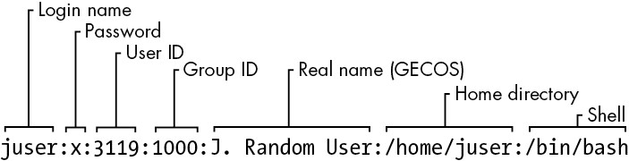
Figure 7-1: An entry in the password file
The /etc/passwd file syntax is fairly strict, allowing for no comments or blank lines.
NOTE
A user in /etc/passwd and a corresponding home directory are collectively known as an account. However, remember that this is a user-space convention. An entry in the passwd file is usually enough to qualify; the home directory doesn’t have to exist in order for most programs to recognize an account. Furthermore, there are ways to add users on a system without explicitly including them in the passwd file; for example, adding users from a network server using something like NIS (Network Information Service) or LDAP (Lightweight Directory Access Protocol) was once common.
7.3.2 Special Users
You’ll find a few special users in /etc/passwd. The superuser (root) always has UID 0 and GID 0, as in Listing 7-1. Some users, such as daemon, have no login privileges. The nobody user is an underprivileged user; some processes run as nobody because it cannot (normally) write to anything on the system.
Users that cannot log in are called pseudo-users. Although they can’t log in, the system can start processes with their user IDs. Pseudo-users such as nobody are usually created for security reasons.
Again, these are all user-space conventions. These users have no special meaning to the kernel; the only user ID that means anything special to the kernel is the superuser’s, 0. It’s possible to give the nobody user access to everything on the system just as you would with any other user.
7.3.3 The /etc/shadow File
The shadow password file (/etc/shadow) on a Linux system normally contains user authentication information, including the encrypted passwords and password expiration information that correspond to the users in /etc/passwd.
The shadow file was introduced to provide a more flexible (and perhaps more secure) way of storing passwords. It included a suite of libraries and utilities, many of which were soon replaced by pieces of PAM (Pluggable Authentication Modules; we’ll cover this advanced topic in Section 7.10). Rather than introduce an entirely new set of files for Linux, PAM uses /etc/shadow, but not certain corresponding configuration files such as /etc/login.defs.
7.3.4 Manipulating Users and Passwords
Regular users interact with /etc/passwd using the passwd command and a few other tools. Use passwd to change your password. You can use chfn and chsh to change the real name and shell, respectively (the shell must be listed in /etc/shells). These are all suid-root executables, because only the superuser can change the /etc/passwd file.
Changing /etc/passwd as the Superuser
Because /etc/passwd is just a normal plaintext file, the superuser is technically allowed to use any text editor to make changes. To add a user, it’s possible to simply add an appropriate line and create a home directory for the user; to delete, you can do the opposite.
However, directly editing passwd like this is a bad idea. Not only is it too easy to make a mistake, but you can also get caught with a concurrency problem if something else is making passwd changes at the same time. It’s much easier (and safer) to make changes to users using separate commands available from the terminal or through the GUI. For example, to set a user’s password, run passwd user as the superuser. Use adduser and userdel to add and remove users, respectively.
However, if you really must edit the file directly (for example, if it’s somehow corrupted), use the vipw program, which backs up and locks /etc/passwd while you’re editing it as an added precaution. To edit /etc/shadow instead of /etc/passwd, use vipw -s. (Hopefully, you’ll never need to do either of these.)
7.3.5 Working with Groups
Groups in Unix offer a way to share files among certain users. The idea is that you can set read or write permission bits for a particular group, excluding everyone else. This feature was once important because many users shared one machine or network, but it’s become less significant in recent years as workstations are shared less often.
The /etc/group file defines the group IDs (such as the ones found in the /etc/passwd file). Listing 7-2 is an example.
root:*:0:juser
daemon:*:1:
bin:*:2:
sys:*:3:
adm:*:4:
disk:*:6:juser,beazley
nogroup:*:65534:
user:*:1000:
Listing 7-2: A sample /etc/group file
As with the /etc/passwd file, each line in /etc/group is a set of fields separated by colons. The fields in each entry are as follows, from left to right:
- The group name This appears when you run a command like ls -l.
- The group password Unix group passwords are hardly ever used, nor should you use them (a good alternative in most cases is sudo). Use * or any other default value. An x here means that there’s a corresponding entry in /etc/gshadow, and this is also nearly always a disabled password, denoted with a * or !.
- The group ID (a number) The GID must be unique within the group file. This number goes into a user’s group field in that user’s /etc/passwd entry.
- An optional list of users that belong to the group In addition to the users listed here, users with the corresponding group ID in their passwd file entries also belong to the group.
Figure 7-2 identifies the fields in a group file entry.
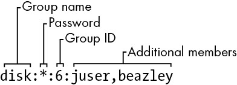
Figure 7-2: An entry in the group file
To see the groups you belong to, run groups.
NOTE
Linux distributions often create a new group for each new user added, with the same name as the user.
7.4 getty and login
The getty program attaches to terminals and displays a login prompt. On most Linux systems, getty is uncomplicated because the system uses it only for logins on virtual terminals. In a process listing, it usually looks something like this (for example, when running on /dev/tty1):
$ ps ao args | grep getty
/sbin/agetty -o -p -- \u --noclear tty1 linux
On many systems, you may not even see a getty process until you access a virtual terminal with something like CTRL-ALT-F1. This example shows agetty, the version that many Linux distributions include by default.
After you enter your login name, getty replaces itself with the login program, which asks for your password. If you enter the correct password, login replaces itself (using exec()) with your shell. Otherwise, you get a “Login incorrect” message. Much of the login program’s real authentication work is handled by PAM (see Section 7.10).
NOTE
When investigating getty, you may come across a reference to a baud rate such as “38400.” This setting is all but obsolete. Virtual terminals ignore the baud rate; it’s only there for connecting to real serial lines.
You now know what getty and login do, but you’ll probably never need to configure or change them. In fact, you’ll rarely even use them, because most users now log in either through a graphical interface such as gdm or remotely with SSH, neither of which uses getty or login.
7.5 Setting the Time
Unix machines depend on accurate timekeeping. The kernel maintains the system clock, which is the clock consulted when you run commands like date. You can also set the system clock using the date command, but it’s usually a bad idea to do so because you’ll never get the time exactly right. Your system clock should be as close to the correct time as possible.
PC hardware has a battery-backed real-time clock (RTC). The RTC isn’t the best clock in the world, but it’s better than nothing. The kernel usually sets its time based on the RTC at boot time, and you can reset the system clock to the current hardware time with hwclock. Keep your hardware clock in Universal Coordinated Time (UTC) in order to avoid any trouble with time zone or daylight saving time corrections. You can set the RTC to your kernel’s UTC clock using this command:
# hwclock --systohc --utc
Unfortunately, the kernel is even worse at keeping time than the RTC, and because Unix machines often stay up for months or years on a single boot, they tend to develop time drift. Time drift is the current difference between the kernel time and the true time (as defined by an atomic clock or another very accurate clock).
You shouldn’t try to fix time drift with hwclock because time-based system events can get lost or mangled. You could run a utility like adjtimex to smoothly update the clock based on the RTC, but usually it’s best to keep your system time correct with a network time daemon (see Section 7.5.2).
7.5.1 Kernel Time Representation and Time Zones
The kernel’s system clock represents the current time as the number of seconds since 12:00 midnight on January 1, 1970, UTC. To see this number at the moment, run:
$ date +%s
To convert this number into something that humans can read, user-space programs change it to local time and compensate for daylight saving time and any other strange circumstances (such as living in Indiana). The local time zone is controlled by the file /etc/localtime. (Don’t bother trying to look at it; it’s a binary file.)
The time zone files on your system are in /usr/share/zoneinfo. You’ll find that this directory contains a lot of time zones and aliases for time zones. To set your system’s time zone manually, either copy one of the files in /usr/share/zoneinfo to /etc/localtime (or make a symbolic link) or change it with your distribution’s time zone tool. The command-line program tzselect may help you identify a time zone file.
To use a time zone other than the system default for just one shell session, set the TZ environment variable to the name of a file in /usr/share/zoneinfo and test the change, like this:
$ export TZ=US/Central
$ date
As with other environment variables, you can also set the time zone for the duration of a single command like this:
$ TZ=US/Central date
7.5.2 Network Time
If your machine is permanently connected to the internet, you can run a Network Time Protocol (NTP) daemon to maintain the time using a remote server. This was once handled by the ntpd daemon, but as with many other services, systemd has replaced this with its own package, named timesyncd. Most Linux distributions include timesyncd, and it’s enabled by default. You shouldn’t need to configure it, but if you’re interested in how to do it, the timesyncd.conf(5) manual page can help you. The most common override is to change the remote time server(s).
If you want to run ntpd instead, you’ll need to disable timesyncd if you’ve got it installed. Go to https://www.ntppool.org/ to see the instructions there. This site might also be useful if you still want to use timesyncd with different servers.
If your machine doesn’t have a permanent internet connection, you can use a daemon such as chronyd to maintain the time during disconnections.
You can also set your hardware clock based on the network time in order to help your system maintain time coherency when it reboots. Many distributions do this automatically, but to do it manually, make sure that your system time is set from the network and then run this command:
# hwclock --systohc –-utc
7.6 Scheduling Recurring Tasks with cron and Timer Units
There are two ways to run programs on a repeating schedule: cron, and systemd timer units. This ability is vital to automating system maintenance tasks. One example is logfile rotation utilities to ensure that your hard drive doesn’t fill up with old logfiles (as discussed earlier in the chapter). The cron service has long been the de facto standard for doing this, and we’ll cover it in detail. However, systemd’s timer units are an alternative to cron with advantages in certain cases, so we’ll see how to use them as well.
You can run any program with cron at whatever times suit you. The program running through cron is called a cron job. To install a cron job, you’ll create an entry line in your crontab file, usually by running the crontab command. For example, the following crontab file entry schedules the /home/juser/bin/spmake command daily at 9:15 AM (in the local time zone):
15 09 * * * /home/juser/bin/spmake
The five fields at the beginning of this line, delimited by whitespace, specify the scheduled time (see also Figure 7-3). The fields are as follows, in order:
- Minute (0 through 59). This cron job is set for minute 15.
- Hour (0 through 23). This job is set for the ninth hour.
- Day of month (1 through 31).
- Month (1 through 12).
- Day of week (0 through 7). The numbers 0 and 7 are Sunday.
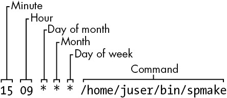
Figure 7-3: An entry in the crontab file
A star (*) in any field means to match every value. The preceding example runs spmake daily because the day of month, month, and day of week fields are all filled with stars, which cron reads as “run this job every day, of every month, of every day of the week.”
To run spmake only on the 14th day of each month, you would use this crontab line:
15 09 14 * * /home/juser/bin/spmake
You can select more than one time for each field. For example, to run the program on the 5th and the 14th day of each month, you could enter 5,14 in the third field:
15 09 5,14 * * /home/juser/bin/spmake
NOTE
If the cron job generates standard output or an error or exits abnormally, cron should email this information to the owner of the cron job (assuming that email works on your system). Redirect the output to /dev/null or some other logfile if you find the email annoying.
The crontab(5) manual page provides complete information on the crontab format.
7.6.1 Installing Crontab Files
Each user can have their own crontab file, which means that every system may have multiple crontabs, usually found in /var/spool/cron/crontabs. Normal users can’t write to this directory; the crontab command installs, lists, edits, and removes a user’s crontab.
The easiest way to install a crontab is to put your crontab entries into a file and then use crontab file to install file as your current crontab. The crontab command checks the file format to make sure that you haven’t made any mistakes. To list your cron jobs, run crontab -l. To remove the crontab, use crontab -r.
After you’ve created your initial crontab, it can be a bit messy to use temporary files to make further edits. Instead, you can edit and install your crontab in one step with the crontab -e command. If you make a mistake, crontab should tell you where the mistake is and ask if you want to try editing again.
7.6.2 System Crontab Files
Many common cron-activated system tasks are run as the superuser. However, rather than editing and maintaining a superuser’s crontab to schedule these, Linux distributions normally have an /etc/crontab file for the entire system. You won’t use crontab to edit this file, and in any case, it’s slightly different in format: before the command to run, there’s an additional field specifying the user that should run the job. (This gives you the opportunity to group system tasks together even if they aren’t all run by the same user.) For example, this cron job defined in /etc/crontab runs at 6:42 AM as the superuser (root 1):
42 6 * * * root1 /usr/local/bin/cleansystem > /dev/null 2>&1
NOTE
Some distributions store additional system crontab files in the /etc/cron.d directory. These files may have any name, but they have the same format as /etc/crontab. There may also be some directories such as /etc/cron.daily, but the files here are usually scripts run by a specific cron job in /etc/crontab or /etc/cron.d. It can sometimes be confusing to track down where the jobs are and when they run.
7.6.3 Timer Units
An alternative to creating a cron job for a periodic task is to build a systemd timer unit. For an entirely new task, you must create two units: a timer unit and a service unit. The reason for two units is that a timer unit doesn’t contain any specifics about the task to perform; it’s just an activation mechanism to run a service unit (or conceptually, another kind of unit, but the most common usage is for service units).
Let’s look at a typical timer/service unit pair, starting with the timer unit. Let’s call this loggertest.timer; as with other custom unit files, we’ll put it in /etc/systemd/system (see Listing 7-3).
[Unit]
Description=Example timer unit
[Timer]
OnCalendar=*-*-* *:00,20,40
Unit=loggertest.service
[Install]
WantedBy=timers.target
Listing 7-3: loggertest.timer
This timer runs every 20 minutes, with the OnCalendar option resembling the cron syntax. In this example, it’s at the top of each hour, as well as 20 and 40 minutes past each hour.
The OnCalendar time format is year-month-day hour:minute:second. The field for seconds is optional. As with cron, a * represents a sort of wildcard, and commas allow for multiple values. The periodic / syntax is also valid; in the preceding example, you could change the *:00,20,40 to *:00/20 (every 20 minutes) for the same effect.
NOTE
The syntax for times in the OnCalendar field has many shortcuts and variations. See the Calendar Events section of the systemd.time(7) manual page for the full list.
The associated service unit is named loggertest.service (see Listing 7-4). We explicitly named it in the timer with the Unit option, but this isn’t strictly necessary because systemd looks for a .service file with the same base name as the timer unit file. This service unit also goes in /etc/systemd/system, and looks quite similar to the service units that you saw back in Chapter 6.
[Unit]
Description=Example Test Service
[Service]
Type=oneshot
ExecStart=/usr/bin/logger -p local3.debug I\'m a logger
Listing 7-4: loggertest.service
The meat of this is the ExecStart line, which is the command that the service runs when activated. This particular example sends a message to the system log.
Note the use of oneshot as the service type, indicating that the service is expected to run and exit, and that systemd won’t consider the service started until the command specified by ExecStart completes. This has a few advantages for timers:
- You can specify multiple ExecStart commands in the unit file. The other service unit styles that we saw in Chapter 6 do not allow this.
- It’s easier to control strict dependency order when activating other units using Wants and Before dependency directives.
- You have better records of start and end times of the unit in the journal.
NOTE
In this unit example, we’re using logger to send an entry to syslog and the journal. You read in Section 7.1.2 that you can view log messages by unit. However, the unit could finish up before journald has a chance to receive the message. This is a race condition, and in the case that the unit completes too quickly, journald won’t be able to look up the unit associated with the syslog message (this is done by process ID). Consequently, the message that gets written in the journal may not include a unit field, rendering a filtering command such as journalctl -f -u loggertest.service incapable of showing the syslog message. This isn’t normally a problem in longer-running services.
The cron utility is one of the oldest components of a Linux system; it’s been around for decades (predating Linux itself), and its configuration format hasn’t changed much for many years. When something gets to be this old, it becomes fodder for replacement.
The systemd timer units that you just saw may seem like a logical replacement, and indeed, many distributions have now moved system-level periodic maintenance tasks to timer units. But it turns out that cron has some advantages:
- Simpler configuration
- Compatibility with many third-party services
- Easier for users to install their own tasks
Timer units offer these advantages:
- Superior tracking of processes associated with tasks/units with cgroups
- Excellent tracking of diagnostic information in the journal
- Additional options for activation times and frequencies
- Ability to use systemd dependencies and activation mechanisms
Perhaps someday there will be a compatibility layer for cron jobs in much the same manner as mount units and /etc/fstab. However, configuration alone is a reason why it’s unlikely that the cron format will go away any time soon. As you’ll see in the next section, a utility called systemd-run does allow for creating timer units and associated services without creating unit files, but the management and implementation differ enough that many users would likely prefer cron. You’ll see some of this shortly when we discuss at.
7.7 Scheduling One-Time Tasks with at
To run a job once in the future without using cron, use the at service. For example, to run myjob at 10:30 PM, enter this command:
$ at 22:30
at> myjob
End the input with CTRL-D. (The at utility reads the commands from the standard input.)
To check that the job has been scheduled, use atq. To remove it, use atrm. You can also schedule jobs days into the future by adding the date in DD.MM.YY format—for example, at 22:30 30.09.15.
There isn’t much else to the at command. Though it isn’t used that often, it can be invaluable when the need does arise.
7.7.1 Timer Unit Equivalents
You can use systemd timer units as a substitute for at. These are much easier to create than the periodic timer units that you saw earlier, and can be run on the command line like this:
# systemd-run --on-calendar='2022-08-14 18:00' /bin/echo this is a test
Running timer as unit: run-rbd000cc6ee6f45b69cb87ca0839c12de.timer
Will run service as unit: run-rbd000cc6ee6f45b69cb87ca0839c12de.service
The systemd-run command creates a transient timer unit that you can view with the usual systemctl list-timers command. If you don’t care about a specific time, you can specify a time offset instead with --on-active (for example, --on-active=30m for 30 minutes in the future).
NOTE
When using --on-calendar, it’s important that you include a (future) calendar date as well as the time. Otherwise, the timer and service units will remain, with the timer running the service every day at the specified time, much as it would if you created a normal timer unit as described earlier. The syntax for this option is the same as the OnCalendar option in timer units.
7.8 Timer Units Running as Regular Users
All of the systemd timer units we’ve seen so far have been run as root. It’s also possible to create a timer unit as a regular user. To do this, add the --user option to systemd-run.
However, if you log out before the unit runs, the unit won’t start; and if you log out before the unit completes, the unit terminates. This happens because systemd has a user manager associated with a logged-in user, and this is necessary to run timer units. You can tell systemd to keep the user manager around after you log out with this command:
$ loginctl enable-linger
As root, you can also enable a manager for another user:
# loginctl enable-linger user
7.9 User Access Topics
The remainder of this chapter covers several topics on how users get the permission to log in, switch to other users, and perform other related tasks. This is somewhat advanced material, and you’re welcome to skip to the next chapter if you’re ready to get your hands dirty with some process internals.
7.9.1 User IDs and User Switching
We’ve discussed how setuid programs such as sudo and su allow you to temporarily change users, and we’ve covered system components like login that control user access. Perhaps you’re wondering how these pieces work and what role the kernel plays in user switching.
When you temporarily switch to another user, all you’re really doing is changing your user ID. There are two ways to do this, and the kernel handles both. The first is with a setuid executable, which was covered in Section 2.17. The second is through the setuid() family of system calls. There are a few different versions of this system call to accommodate the various user IDs associated with a process, as you’ll learn in Section 7.9.2.
The kernel has basic rules about what a process can or can’t do, but here are the three essentials that cover setuid executables and setuid():
- A process can run a setuid executable as long as it has adequate file permissions.
- A process running as root (user ID 0) can use setuid() to become any other user.
- A process not running as root has severe restrictions on how it may use setuid(); in most cases, it cannot.
As a consequence of these rules, if you want to switch user IDs from a regular user to another user, you often need a combination of the methods. For example, the sudo executable is setuid root, and once running, it can call setuid() to become another user.
NOTE
At its core, user switching has nothing to do with passwords or usernames. Those are strictly user-space concepts, as you first saw in the /etc/passwd file in Section 7.3.1. You’ll learn more details about how this works in Section 7.9.4.
7.9.2 Process Ownership, Effective UID, Real UID, and Saved UID
Our discussion of user IDs so far has been simplified. In reality, every process has more than one user ID. So far, you are familiar with the effective user ID (effective UID, or euid), which defines the access rights for a process (most significantly, file permissions). A second user ID, the real user ID (real UID, or ruid), indicates who initiated a process. Normally, these IDs are identical, but when you run a setuid program, Linux sets the euid to the program’s owner during execution, but it keeps your original user ID in the ruid.
The difference between the effective and real UIDs is confusing, so much so that a lot of documentation regarding process ownership is incorrect.
Think of the euid as the actor and the ruid as the owner. The ruid defines the user that can interact with the running process—most significantly, which user can kill and send signals to a process. For example, if user A starts a new process that runs as user B (based on setuid permissions), user A still owns the process and can kill it.
We’ve seen that most processes have the same euid and ruid. As a result, the default output for ps and other system diagnostic programs show only the euid. To view both user IDs on your system, try this, but don’t be surprised if you find that the two user ID columns are identical for all processes on your system:
$ ps -eo pid,euser,ruser,comm
To create an exception just so that you can see different values in the columns, try experimenting by creating a setuid copy of the sleep command, running the copy for a few seconds, and then running the preceding ps command in another window before the copy terminates.
To add to the confusion, in addition to the real and effective user IDs, there’s also a saved user ID (which is usually not abbreviated). A process can switch its euid to the ruid or saved user ID during execution. (To make things even more complicated, Linux has yet another user ID: the file system user ID, or fsuid, which defines the user accessing the filesystem but is rarely used.)
Typical Setuid Program Behavior
The idea of the ruid might contradict your previous experience. Why don’t you have to deal with the other user IDs very frequently? For example, after starting a process with sudo, if you want to kill it, you still use sudo; you can’t kill it as your own regular user. Shouldn’t your regular user be the ruid in this case, giving you the correct permissions?
The cause of this behavior is that sudo and many other setuid programs explicitly change the euid and ruid with one of the setuid() system calls. These programs do so because there are often unintended side effects and access problems when all of the user IDs do not match.
NOTE
If you’re interested in the details and rules regarding user ID switching, read the setuid(2) manual page and check the other manual pages listed in the SEE ALSO section. There are many different system calls for diverse situations.
Some programs don’t like to have an ruid of root. To prevent sudo from changing the ruid, add this line to your /etc/sudoers file (and beware of side effects on other programs you want to run as root!):
Defaults stay_setuid
Security Implications
Because the Linux kernel handles all user switches (and as a result, file access permissions) through setuid programs and subsequent system calls, systems developers and administrators must be extremely careful with two things:
- The number and quality of programs that have setuid permissions
- What those programs do
If you make a copy of the bash shell that is setuid root, any local user can execute it and have complete run of the system. It’s really that simple. Furthermore, even a special-purpose program that is setuid root can pose a danger if it has bugs. Exploiting weaknesses in programs running as root is a primary method of systems intrusion, and there are too many such exploits to count.
Because there are so many ways to break into a system, preventing intrusion is a multifaceted affair. One of the most essential ways to keep unwanted activity off your system is to enforce user authentication with usernames and good passwords.
7.9.3 User Identification, Authentication, and Authorization
A multiuser system must provide basic support for user security in three areas: identification, authentication, and authorization. The identification portion of security answers the question of who users are. The authentication piece asks users to prove that they are who they say they are. Finally, authorization is used to define and limit what users are allowed to do.
When it comes to user identification, the Linux kernel knows only the numeric user IDs for process and file ownership. The kernel knows authorization rules for how to run setuid executables and how user IDs may run the setuid() family of system calls to change from one user to another. However, the kernel doesn’t know anything about authentication: usernames, passwords, and so on. Practically everything related to authentication happens in user space.
We discussed the mapping between user IDs and passwords in Section 7.3.1; now we’ll cover how user processes access this mapping. We’ll begin with an oversimplified case, in which a user process wants to know its username (the name corresponding to the euid). On a traditional Unix system, a process could do something like this to get its username:
- The process asks the kernel for its euid with the geteuid() system call.
- The process opens the /etc/passwd file and starts reading at the beginning.
- The process reads a line of the /etc/passwd file. If there’s nothing left to read, the process has failed to find the username.
- The process parses the line into fields (breaking out everything between the colons). The third field is the user ID for the current line.
- The process compares the ID from step 4 to the ID from step 1. If they’re identical, the first field in step 4 is the desired username, and the process can stop searching and use this name.
- The process moves on to the next line in /etc/passwd and goes back to step 3.
This is a long procedure, and a real-world implementation is usually even more complicated.
7.9.4 Using Libraries for User Information
If every developer who needed to know the current username had to write all of the code you’ve just seen, the system would be a horrifyingly disjointed, buggy, bloated, and unmaintainable mess. Fortunately, there are often standard libraries we can use to perform repetitive tasks like this; in this case, all you’d normally need to do to get a username is call a function like getpwuid() in the standard library after you have the answer from geteuid(). (See the manual pages for these calls for more on how they work.)
The standard library is shared among the executables on your system, so you can make significant changes to the authentication implementation without changing any program. For example, you can move away from using /etc/passwd for your users and use a network service such as LDAP instead by changing only the system configuration.
This approach has worked well for identifying usernames associated with user IDs, but passwords have proven more troublesome. Section 7.3.1 describes how, traditionally, the encrypted password was part of /etc/passwd, so if you wanted to verify a password that a user entered, you’d encrypt whatever the user typed and compare it to the contents of the /etc/passwd file.
This traditional implementation has many limitations, including:
- It doesn’t allow you to set a system-wide standard for the encryption protocol.
- It assumes that you have access to the encrypted password.
- It assumes that you want to prompt the user for a password every time the user wants to access something that requires authentication (which gets annoying).
- It assumes that you want to use passwords. If you want to use one-time tokens, smart cards, biometrics, or some other form of user authentication, you have to add that support yourself.
Some of these limitations contributed to the development of the shadow password package discussed in Section 7.3.3, which took the first step in allowing system-wide password configuration. But the solution to the bulk of the problems came with the design and implementation of PAM.
7.10 Pluggable Authentication Modules
To accommodate flexibility in user authentication, in 1995 Sun Microsystems proposed a new standard called Pluggable Authentication Modules (PAM), a system of shared libraries for authentication (Open Software Foundation RFC 86.0, October 1995). To authenticate a user, an application hands the user to PAM to determine whether the user can successfully identify itself. This way, it’s relatively easy to add support for additional authentication techniques, such as two-factor and physical keys. In addition to authentication mechanism support, PAM also provides a limited amount of authorization control for services (for example, if you’d like to deny a service like cron to certain users).
Because there are many kinds of authentication scenarios, PAM employs a number of dynamically loadable authentication modules. Each module performs a specific task and is a shared object that processes can load dynamically and run in their executable space. For example, pam_unix.so is a module that can check a user’s password.
This is tricky business, to say the least. The programming interface isn’t easy, and it’s not clear that PAM actually solves all of the existing problems. Nevertheless, PAM is supported in nearly every program that requires authentication on a Linux system, and most distributions use PAM. And because it works on top of the existing Unix authentication API, integrating support into a client requires little, if any, extra work.
7.10.1 PAM Configuration
We’ll explore the basics of how PAM works by examining its configuration. You’ll normally find PAM’s application configuration files in the /etc/pam.d directory (older systems may use a single /etc/pam.conf file). Most installations include many files, so you may not know where to start. Some filenames, such as cron and passwd, correspond to parts of the system that you know already.
Because the specific configuration in these files varies significantly between distributions, it can be difficult to find a commonly applicable example. We’ll look at an example configuration line that you might find for chsh (the change shell program):
auth requisite pam_shells.so
This line says that the user’s shell must be listed in /etc/shells in order for the user to successfully authenticate with the chsh program. Let’s see how. Each configuration line has three fields: a function type, control argument, and module, in that order. Here’s what they mean for this example:
- Function type The function that a user application asks PAM to perform. Here, it’s auth, the task of authenticating the user.
- Control argument This setting controls what PAM does after success or failure of its action for the current line (requisite in this example). We’ll get to this shortly.
- Module The authentication module that runs for this line, determining what the line actually does. Here, the pam_shells.so module checks to see whether the user’s current shell is listed in /etc/shells.
PAM configuration is detailed on the pam.conf(5) manual page. Let’s look at a few of the essentials.
Function Types
A user application can ask PAM to perform one of the following four functions:
- auth Authenticate a user (see if the user is who they say they are).
- account Check user account status (whether the user is authorized to do something, for example).
- session Perform something only for the user’s current session (such as displaying a message of the day).
- password Change a user’s password or other credentials.
For any configuration line, the module and function together determine PAM’s action. A module can have more than one function type, so when determining the purpose of a configuration line, always remember to consider the function and module as a pair. For example, the pam_unix.so module checks a password when performing the auth function, but it sets a password when performing the password function.
Control Arguments and Stacked Rules
One important feature of PAM is that the rules specified by its configuration lines stack, meaning that you can apply many rules when performing a function. This is why the control argument is important: the success or failure of an action in one line can impact subsequent lines or cause the entire function to succeed or fail.
There are two kinds of control arguments: the simple syntax and a more advanced syntax. Here are the three major simple syntax control arguments that you’ll find in a rule:
- sufficient If this rule succeeds, the authentication is successful, and PAM doesn’t need to look at any more rules. If the rule fails, PAM proceeds to additional rules.
- requisite If this rule succeeds, PAM proceeds to additional rules. If the rule fails, the authentication is unsuccessful, and PAM doesn’t need to look at any more rules.
- required If this rule succeeds, PAM proceeds to additional rules. If the rule fails, PAM proceeds to additional rules but will always return an unsuccessful authentication regardless of the end result of the additional rules.
Continuing with the preceding example, here is an example stack for the chsh authentication function:
auth sufficient pam_rootok.so
auth requisite pam_shells.so
auth sufficient pam_unix.so
auth required pam_deny.so
With this configuration, when the chsh command asks PAM to perform the authentication function, PAM does the following (see Figure 7-4 for a flowchart):
- The pam_rootok.so module checks to see if root is the user trying to authenticate. If so, it immediately succeeds and attempts no further authentication. This works because the control argument is set to sufficient, meaning that success from this action is good enough for PAM to immediately report success back to chsh. Otherwise, it proceeds to step 2.
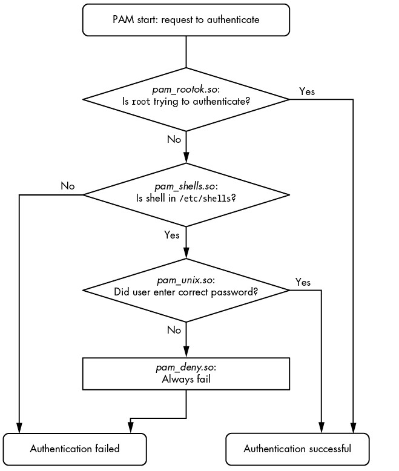
Figure 7-4: PAM rule execution flow
- The pam_shells.so module checks to see if the user’s shell is listed in /etc/shells. If it’s not there, the module returns failure, and the requisite control argument indicates that PAM must immediately report this failure back to chsh and attempt no further authentication. Otherwise, the module returns success and fulfills the control flag of requisite; proceed to step 3.
- The pam_unix.so module asks the user for their password and checks it. The control argument is set to sufficient, so success from this module (a correct password) is enough for PAM to report success to chsh. If the password is incorrect, PAM continues to step 4.
- The pam_deny.so module always fails, and because the control argument is set to required, PAM reports failure back to chsh. This is a default for when there’s nothing left to try. (Note that a required control argument doesn’t cause PAM to fail its function immediately—it will run any lines left on its stack—but PAM will always report failure back to the application.)
NOTE
Don’t confuse the terms function and action when working with PAM. The function is the high-level goal: what the user application wants PAM to do (authenticate a user, for example). An action is a specific step that PAM takes in order to reach that goal. Just remember that the user application invokes the function first and that PAM takes care of the particulars with actions.
The advanced control argument syntax, denoted inside square brackets ([]), allows you to manually control a reaction based on the specific return value of the module (not just success or failure). For details, see the pam.conf(5) manual page; when you understand the simple syntax, you’ll have no trouble with the advanced syntax.
Module Arguments
PAM modules can take arguments after the module name. You’ll often encounter this example with the pam_unix.so module:
auth sufficient pam_unix.so nullok
The nullok argument here says that the user can have no password (the default would be failure if the user has no password).
7.10.2 Tips on PAM Configuration Syntax
Due to its control flow capability and module argument syntax, the PAM configuration syntax has many features of a programming language and a certain degree of power. We’ve only scratched the surface so far, but here are a few more tips on PAM:
- To find out which PAM modules are present on your system, try man -k pam_ (note the underscore). It can be difficult to track down the location of modules. Try the locate pam_unix.so command and see where that leads you.
- The manual pages contain the functions and arguments for each module.
- Many distributions automatically generate certain PAM configuration files, so it may not be wise to change them directly in /etc/pam.d. Read the comments in your /etc/pam.d files before editing them; if they’re generated files, the comments will tell you where they came from.
- The /etc/pam.d/other configuration file defines the default configuration for any application that lacks its own configuration file. The default is often to deny everything.
- There are different ways to include additional configuration files in a PAM configuration file. The @include syntax loads an entire configuration file, but you can also use a control argument to load only the configuration for a particular function. The usage varies among distributions.
- PAM configuration doesn’t end with module arguments. Some modules can access additional files in /etc/security, usually to configure per-user restrictions.
7.10.3 PAM and Passwords
Due to the evolution of Linux password verification over the years, there are a number of password configuration artifacts that can cause confusion at times. The first to be aware of is the file /etc/login.defs. This is the configuration file for the original shadow password suite. It contains information about the encryption algorithm used for the /etc/shadow password file, but it’s rarely used on a system with PAM installed, because the PAM configuration contains this information. This said, the encryption algorithm in /etc/login.defs should match the PAM configuration in the rare case that you run into an application that doesn’t support PAM.
Where does PAM get its information about the password encryption scheme? Remember that there are two ways for PAM to interact with passwords: the auth function (for verifying a password) and the password function (for setting a password). It’s easiest to track down the password-setting parameter. The best way is probably just to grep it:
$ grep password.*unix /etc/pam.d/*
The matching lines should contain pam_unix.so and look something like this:
password sufficient pam_unix.so obscure sha512
The arguments obscure and sha512 tell PAM what to do when setting a password. First, PAM checks to see if the password is “obscure” enough (that is, the password isn’t too similar to the old password, among other things), and then PAM uses the SHA512 algorithm to encrypt the new password.
But this happens only when a user sets a password, not when PAM is verifying a password. So how does PAM know which algorithm to use when authenticating? Unfortunately, the configuration won’t tell you anything; there are no encryption arguments for pam_unix.so for the auth function. The manual pages also tell you nothing.
It turns out that (as of this writing) pam_unix.so simply tries to guess the algorithm, usually by asking the libcrypt library to do the dirty work of trying a whole bunch of things until something works or there’s nothing left to try. Therefore, you normally don’t have to worry about the verification encryption algorithm.
7.11 Looking Forward
We’re now at about the midpoint in our progression through this book, having covered many of the vital building blocks of a Linux system. The discussion of logging and users on a Linux system has shown you how it’s possible to divide services and tasks into small, independent chunks that can still interact to a certain extent.
This chapter dealt almost exclusively with user space, and now we need to refine our view of user-space processes and the resources they consume. To do so, we’ll go back into the kernel in Chapter 8.
8
A CLOSER LOOK AT PROCESSES AND RESOURCE UTILIZATION
This chapter takes you deeper into the relationships between processes, the kernel, and system resources. There are three basic kinds of hardware resources: CPU, memory, and I/O. Processes vie for these resources, and the kernel’s job is to allocate resources fairly. The kernel itself is also a resource—a software resource that processes use to perform tasks such as creating new processes and communicating with other processes.
Many of the tools that you see in this chapter are considered performance-monitoring tools. They’re particularly helpful if your system is slowing to a crawl and you’re trying to figure out why. However, you shouldn’t get distracted by performance. Trying to optimize a system that’s already working correctly is a waste of time. The default settings on most systems are well chosen, so you should change them only if you have very unusual needs. Instead, concentrate on understanding what the tools actually measure, and you’ll gain great insight into how the kernel works and how it interacts with processes.
8.1 Tracking Processes
You learned how to use ps in Section 2.16 to list processes running on your system at a particular time. The ps command lists current processes and their usage statistics, but it does little to tell you how processes change over time. Therefore, it won’t immediately help you to determine which process is using too much CPU time or memory.
The top program provides an interactive interface to the information that ps displays. It shows the current system status as well as the fields a ps listing shows, and it updates every second. Perhaps most important, top lists the most active processes (by default, those currently taking up the most CPU time) at the top of its display.
You can send commands to top with keystrokes. Its most frequently used commands deal with changing the sort order or filtering the process list:
- Spacebar Updates the display immediately
- M Sorts by current resident memory usage
- T Sorts by total (cumulative) CPU usage
- P Sorts by current CPU usage (the default)
- u Displays only one user’s processes
- f Selects different statistics to display
- ? Displays a usage summary for all top commands
NOTE
The top keystroke commands are case-sensitive.
Two similar utilities, atop and htop, offer an enhanced set of views and features. Most of their extra features add functionality found in other tools. For example, htop shares many of the lsof command’s abilities described in the next section.
8.2 Finding Open Files with lsof
The lsof command lists open files and the processes using them. Because Unix places a lot of emphasis on files, lsof is among the most useful tools for finding trouble spots. But lsof doesn’t stop at regular files—it can list network resources, dynamic libraries, pipes, and more.
8.2.1 Reading the lsof Output
Running lsof on the command line usually produces a tremendous amount of output. The following is a fragment of what you might see. This output (slightly adjusted for readability) includes open files from the systemd (init) process as well as a running vi process:
# lsof
COMMAND PID USER FD TYPE DEVICE SIZE/OFF NODE NAME
systemd 1 root cwd DIR 8,1 4096 2 /
systemd 1 root rtd DIR 8,1 4096 2 /
systemd 1 root txt REG 8,1 1595792 9961784 /lib/systemd/systemd
systemd 1 root mem REG 8,1 1700792 9961570 /lib/x86_64-linux-gnu/libm-2.27.so
systemd 1 root mem REG 8,1 121016 9961695 /lib/x86_64-linux-gnu/libudev.so.1
--snip--
vi 1994 juser cwd DIR 8,1 4096 4587522 /home/juser
vi 1994 juser 3u REG 8,1 12288 786440 /tmp/.ff.swp
--snip--
The output lists the following fields in the top row:
- COMMAND The command name for the process that holds the file descriptor.
- PID The process ID.
- USER The user running the process.
- FD This field can contain two kinds of elements. In most of the preceding output, the FD column shows the purpose of the file. The FD field can also list the file descriptor of the open file—a number that a process uses together with the system libraries and kernel to identify and manipulate a file; the last line shows a file descriptor of 3.
- TYPE The file type (regular file, directory, socket, and so on).
- DEVICE The major and minor number of the device that holds the file.
- SIZE/OFF The file’s size.
- NODE The file’s inode number.
- NAME The filename.
The lsof(1) manual page contains a full list of what you might see for each field, but the output should be self-explanatory. For example, look at the entries with cwd in the FD field. Those lines indicate the current working directories of the processes. Another example is the very last line, which shows a temporary file that a user’s vi process (PID 1994) is using.
NOTE
You can run lsof as root or a regular user, but you’ll get more information as root.
8.2.2 Using lsof
There are two basic approaches to running lsof:
- List everything and pipe the output to a command like less, and then search for what you’re looking for. This can take a while due to the amount of output generated.
- Narrow down the list that lsof provides with command-line options.
You can use command-line options to provide a filename as an argument and have lsof list only the entries that match the argument. For example, the following command displays entries for open files in /usr and all of its subdirectories:
$ lsof +D /usr
To list the open files for a particular process ID, run:
$ lsof -p pid
For a brief summary of lsof’s many options, run lsof -h. Most options pertain to the output format. (See Chapter 10 for a discussion of the lsof network features.)
NOTE
lsof is highly dependent on kernel information. If you perform a distribution update to both the kernel and lsof, the updated lsof might not work until you reboot with the new kernel.
8.3 Tracing Program Execution and System Calls
The tools we’ve seen so far examine active processes. However, if you have no idea why a program dies almost immediately after starting up, lsof won’t help you. In fact, you’d have a difficult time even running lsof concurrently with a failed command.
The strace (system call trace) and ltrace (library trace) commands can help you discover what a program attempts to do. Those tools produce extraordinarily large amounts of output, but once you know what to look for, you’ll have more information at your disposal for tracking down problems.
8.3.1 strace
Recall that a system call is a privileged operation that a user-space process asks the kernel to perform, such as opening and reading data from a file. The strace utility prints all the system calls that a process makes. To see it in action, run this command:
$ strace cat /dev/null
By default, strace sends its output to the standard error. If you want to save the output in a file, use the -o save_file option. You can also redirect by appending 2> save_file to your command line, but you’ll also capture any standard error from the command you’re examining.
In Chapter 1, you learned that when one process wants to start another process, it invokes the fork() system call to spawn a copy of itself, and then the copy uses a member of the exec() family of system calls to start running a new program. The strace command begins working on the new process (the copy of the original process) just after the fork() call. Therefore, the first lines of the output from this command should show execve() in action, followed by a memory initialization call, brk(), as follows:
execve("/bin/cat", ["cat", "/dev/null"], 0x7ffef0be0248 /* 59 vars */) = 0
brk(NULL) = 0x561e83127000
The next part of the output deals primarily with loading shared libraries. You can ignore this unless you really want to dig deep into the shared library system:
access("/etc/ld.so.nohwcap", F_OK) = -1 ENOENT (No such file or directory)
openat(AT_FDCWD, "/etc/ld.so.cache", O_RDONLY|O_CLOEXEC) = 3
fstat(3, {st_mode=S_IFREG|0644, st_size=119531, ...}) = 0
mmap(NULL, 119531, PROT_READ, MAP_PRIVATE, 3, 0) = 0x7fa9db241000
close(3) = 0
--snip--
openat(AT_FDCWD, "/lib/x86_64-linux-gnu/libc.so.6", O_RDONLY|O_CLOEXEC) = 3
read(3, "\177ELF\2\1\1\3\0\0\0\0\0\0\0\0\3\0>\0\1\0\0\0\260\34\2\0\0\0\0\0"..., 832) = 832
In addition, skip past the mmap output until you get to the lines near the end of the output that look like this:
fstat(1, {st_mode=S_IFCHR|0620, st_rdev=makedev(0x88, 1), ...}) = 0
openat(AT_FDCWD, "/dev/null", O_RDONLY) = 3
fstat(3, {st_mode=S_IFCHR|0666, st_rdev=makedev(0x1, 3), ...}) = 0
fadvise64(3, 0, 0, POSIX_FADV_SEQUENTIAL) = 0
mmap(NULL, 139264, PROT_READ|PROT_WRITE, MAP_PRIVATE|MAP_ANONYMOUS, -1, 0) = 0x7fa9db21b000
read(3, "", 131072) = 0
munmap(0x7fa9db21b000, 139264) = 0
close(3) = 0
close(1) = 0
close(2) = 0
exit_group(0) = ?
+++ exited with 0 +++
This part of the output shows the command at work. First, look at the openat() call (a slight variant of open()), which opens a file. The 3 is a result that means success (3 is the file descriptor that the kernel returns after opening the file). Below that, you can see where cat reads from /dev/null (the read() call, which also has 3 as the file descriptor). Then there’s nothing more to read, so the program closes the file descriptor and exits with exit_group().
What happens when the command encounters an error? Try strace cat not_a_file instead and examine the open() call in the resulting output:
openat(AT_FDCWD, "not_a_file", O_RDONLY) = -1 ENOENT (No such file or directory)
Because open() couldn’t open the file, it returned -1 to signal an error. You can see that strace reports the exact error and gives you a short description of the error.
Missing files are the most common problem with Unix programs, so if the system log and other log information aren’t very helpful and you have nowhere else to turn when you’re trying to track down a missing file, strace can be of great use. You can even use it on daemons that fork or detach themselves. For example, to track down the system calls of a fictitious daemon called crummyd, enter:
$ strace -o crummyd_strace -ff crummyd
In this example, the -o option to strace logs the action of any child process that crummyd spawns into crummyd_strace.pid, where pid is the process ID of the child process.
8.3.2 ltrace
The ltrace command tracks shared library calls. The output is similar to that of strace, which is why it’s being mentioned here, but it doesn’t track anything at the kernel level. Be warned that there are many more shared library calls than system calls. You’ll definitely need to filter the output, and ltrace itself has many built-in options to assist you.
NOTE
See Section 15.1.3 for more on shared libraries. The ltrace command doesn’t work on statically linked binaries.
8.4 Threads
In Linux, some processes are divided into pieces called threads. A thread is very similar to a process—it has an identifier (thread ID, or TID), and the kernel schedules and runs threads just like processes. However, unlike separate processes, which usually don’t share system resources such as memory and I/O connections with other processes, all threads inside a single process share their system resources and some memory.
8.4.1 Single-Threaded and Multithreaded Processes
Many processes have only one thread. A process with one thread is single-threaded, and a process with more than one thread is multithreaded. All processes start out single-threaded. This starting thread is usually called the main thread. The main thread may start new threads, making the process multithreaded, similar to the way a process can call fork() to start a new process.
NOTE
It’s rare to refer to threads at all when a process is single-threaded. This book doesn’t mention threads unless multithreaded processes make a difference in what you see or experience.
The primary advantage of a multithreaded process is that when the process has a lot to do, threads can run simultaneously on multiple processors, potentially speeding up computation. Although you can also achieve simultaneous computation with multiple processes, threads start faster than processes, and it’s often easier or more efficient for threads to intercommunicate using their shared memory than it is for processes to communicate over a channel, such as a network connection or a pipe.
Some programs use threads to overcome problems managing multiple I/O resources. Traditionally, a process would sometimes use fork() to start a new subprocess in order to deal with a new input or output stream. Threads offer a similar mechanism without the overhead of starting a new process.
8.4.2 Viewing Threads
By default, the output from the ps and top commands shows only processes. To display the thread information in ps, add the m option. Listing 8-1 shows some sample output.
$ ps m PID TTY STAT TIME COMMAND 3587 pts/3 - 0:00 bash1 - - Ss 0:00 - 3592 pts/4 - 0:00 bash2 - - Ss 0:00 -
12534 tty7 - 668:30 /usr/lib/xorg/Xorg -core :03 - - Ssl+ 659:55 - - - Ssl+ 0:00 - - - Ssl+ 0:00 - - - Ssl+ 8:35 -
Listing 8-1: Viewing threads with ps m
This listing shows processes along with threads. Each line with a number in the PID column (at 1, 2, and 3) represents a process, as in the normal ps output. The lines with dashes in the PID column represent the threads associated with the process. In this output, the processes at 1 and 2 have only one thread each, but process 12534 at 3 is multithreaded, with four threads.
If you want to view the TIDs with ps, you can use a custom output format. Listing 8-2 shows only the PIDs, TIDs, and command:
$ ps m -o pid,tid,command PID TID COMMAND 3587 - bash - 3587 - 3592 - bash - 3592 - 12534 - /usr/lib/xorg/Xorg -core :0 - 12534 - - 13227 - - 14443 - - 14448 -
Listing 8-2: Showing PIDs and TIDs with ps m
The sample output in this listing corresponds to the threads shown in Listing 8-1. Notice that the TIDs of the single-threaded processes are identical to the PIDs; this is the main thread. For the multithreaded process 12534, thread 12534 is also the main thread.
NOTE
Normally, you won’t interact with individual threads as you would processes. You need to know a lot about how a multithreaded program was written in order to act on one thread at a time, and even then, doing so might not be a good idea.
Threads can confuse things when it comes to resource monitoring because individual threads in a multithreaded process can consume resources simultaneously. For example, top doesn’t show threads by default; you’ll need to press H to turn it on. For most of the resource monitoring tools that you’re about to see, you’ll have to do a little extra work to turn on the thread display.
8.5 Introduction to Resource Monitoring
Now we’ll discuss some topics in resource monitoring, including processor (CPU) time, memory, and disk I/O. We’ll examine utilization on a system-wide scale, as well as on a per-process basis.
Many people touch the inner workings of the Linux kernel in the interest of improving performance. However, most Linux systems perform well under a distribution’s default settings, and you can spend days trying to tune your machine’s performance without meaningful results, especially if you don’t know what to look for. So rather than think about performance as you experiment with the tools in this chapter, think about seeing the kernel in action as it divides resources among processes.
8.5.1 Measuring CPU Time
To monitor one or more specific processes over time, use the -p option to top, with this syntax:
$ top -p pid1 [-p pid2 ...]
To find out how much CPU time a command uses during its lifetime, use time. Unfortunately, there is some confusion here, because most shells have a built-in time command that doesn’t provide extensive statistics, and there’s a system utility at /usr/bin/time. You’ll probably encounter the bash shell built-in first, so try running time with the ls command:
$ time ls
After ls terminates, time should print output like the following:
real 0m0.442s
user 0m0.052s
sys 0m0.091s
User time (user) is the number of seconds that the CPU has spent running the program’s own code. Some commands run so quickly that the CPU time is close to 0. The system time (sys or system) is how much time the kernel spends doing the process’s work (for example, reading files and directories). Finally, real time (real) (also called elapsed time) is the total time it took to run the process from start to finish, including the time that the CPU spent doing other tasks. This number is normally not very useful for performance measurement, but subtracting the user and system time from elapsed time can give you a general idea of how long a process spends waiting for system and external resources. For example, the time spent waiting for a network server to respond to a request would show up in the elapsed time, but not in the user or system time.
8.5.2 Adjusting Process Priorities
You can change the way the kernel schedules a process in order to give the process more or less CPU time than other processes. The kernel runs each process according to its scheduling priority, which is a number between –20 and 20, with –20 being the foremost priority. (Yes, this can be confusing.)
The ps -l command lists the current priority of a process, but it’s a little easier to see the priorities in action with the top command, as shown here:
$ top
Tasks: 244 total, 2 running, 242 sleeping, 0 stopped, 0 zombie
Cpu(s): 31.7%us, 2.8%sy, 0.0%ni, 65.4%id, 0.2%wa, 0.0%hi, 0.0%si, 0.0%st
Mem: 6137216k total, 5583560k used, 553656k free, 72008k buffers
Swap: 4135932k total, 694192k used, 3441740k free, 767640k cached PID USER PR NI VIRT RES SHR S %CPU %MEM TIME+ COMMAND
28883 bri 20 0 1280m 763m 32m S 58 12.7 213:00.65 chromium-browse 1175 root 20 0 210m 43m 28m R 44 0.7 14292:35 Xorg 4022 bri 20 0 413m 201m 28m S 29 3.4 3640:13 chromium-browse 4029 bri 20 0 378m 206m 19m S 2 3.5 32:50.86 chromium-browse 3971 bri 20 0 881m 359m 32m S 2 6.0 563:06.88 chromium-browse 5378 bri 20 0 152m 10m 7064 S 1 0.2 24:30.21 xfce4-session 3821 bri 20 0 312m 37m 14m S 0 0.6 29:25.57 soffice.bin 4117 bri 20 0 321m 105m 18m S 0 1.8 34:55.01 chromium-browse 4138 bri 20 0 331m 99m 21m S 0 1.7 121:44.19 chromium-browse 4274 bri 20 0 232m 60m 13m S 0 1.0 37:33.78 chromium-browse 4267 bri 20 0 1102m 844m 11m S 0 14.1 29:59.27 chromium-browse 2327 bri 20 0 301m 43m 16m S 0 0.7 109:55.65 xfce4-panel
In this top output, the PR (priority) column lists the kernel’s current schedule priority for the process. The higher the number, the less likely the kernel is to schedule the process if others need CPU time. The schedule priority alone doesn’t determine the kernel’s decision to give CPU time to a process, however, and the kernel may also change the priority during program execution according to the amount of CPU time the process consumes.
Next to the priority column is the NI (nice value) column, which gives a hint to the kernel’s scheduler. This is what you care about when trying to influence the kernel’s decision. The kernel adds the nice value to the current priority to determine the next time slot for the process. When you set the nice value higher, you’re being “nicer” to other processes because the kernel prioritizes them.
By default, the nice value is 0. Now, say you’re running a big computation in the background that you don’t want to bog down your interactive session. To make that process take a back seat to other processes and run only when the other tasks have nothing to do, you can change the nice value to 20 with the renice command (where pid is the process ID of the process that you want to change):
$ renice 20 pid
If you’re the superuser, you can set the nice value to a negative number, but doing so is almost always a bad idea because system processes may not get enough CPU time. In fact, you probably won’t need to alter nice values much because many Linux systems have only a single user, and that user doesn’t perform much real computation. (The nice value was much more important back when there were many users on a single machine.)
8.5.3 Measuring CPU Performance with Load Averages
Overall CPU performance is one of the easier metrics to measure. The load average is the average number of processes currently ready to run. That is, it is an estimate of the number of processes that are capable of using the CPU at any given time—this includes processes that are running and those that are waiting for a chance to use the CPU. When thinking about a load average, keep in mind that most processes on your system are usually waiting for input (from the keyboard, mouse, or network, for example), meaning they’re not ready to run and shouldn’t contribute anything to the load average. Only processes that are actually doing something affect the load average.
Using uptime
The uptime command tells you three load averages in addition to how long the kernel has been running:
$ uptime
... up 91 days, ... load average: 0.08, 0.03, 0.01
The three bolded numbers are the load averages for the past 1 minute, 5 minutes, and 15 minutes, respectively. As you can see, this system isn’t very busy: an average of only 0.01 processes have been running across all processors for the past 15 minutes. In other words, if you had just one processor, it was running user-space applications for only 1 percent of the last 15 minutes.
Traditionally, most desktop systems would exhibit a load average of about 0 when you were doing anything except compiling a program or playing a game. A load average of 0 is usually a good sign, because it means that your processor isn’t being challenged and you’re saving power.
However, user interface components on current desktop systems tend to occupy more of the CPU than those in the past. In particular, certain websites (and especially their advertisements) cause web browsers to become resource hogs.
If a load average goes up to around 1, a single process is probably using the CPU nearly all of the time. To identify that process, use the top command; the process will usually rise to the top of the display.
Most modern systems have more than one processor core or CPU, so multiple processes can easily run simultaneously. If you have two cores, a load average of 1 means that only one of the cores is likely active at any given time, and a load average of 2 means that both cores have just enough to do all of the time.
Managing High Loads
A high load average doesn’t necessarily mean that your system is having trouble. A system with enough memory and I/O resources can easily handle many running processes. If your load average is high and your system still responds well, don’t panic; the system just has a lot of processes sharing the CPU. The processes have to compete with one another for processor time, and as a result, they’ll take longer to perform their computations than they would if they were each allowed to use the CPU all the time. Another case where a high load average might be normal is with a web or compute server, where processes can start and terminate so quickly that the load average measurement mechanism can’t function effectively.
However, if the load average is very high and you sense that the system is slowing down, you might be running into memory performance problems. When the system is low on memory, the kernel can start to thrash, or rapidly swap memory to and from the disk. When this happens, many processes will become ready to run, but their memory might not be available, so they’ll remain in the ready-to-run state (contributing to the load average) for much longer than they normally would. Next we’ll look at why this can happen by exploring memory in more detail.
8.5.4 Monitoring Memory Status
One of the simplest ways to check your system’s memory status as a whole is to run the free command or view /proc/meminfo to see how much real memory is being used for caches and buffers. As just mentioned, performance problems can arise from memory shortages. If not much cache/buffer memory is being used (and the rest of the real memory is taken), you may need more memory. However, it’s too easy to blame a shortage of memory for every performance problem on your machine.
How Memory Works
As Chapter 1 explained, the CPU has a memory management unit (MMU) to add flexibility in memory access. The kernel assists the MMU by breaking down the memory used by processes into smaller chunks called pages. The kernel maintains a data structure, called a page table, that maps a process’s virtual page addresses to real page addresses in memory. As a process accesses memory, the MMU translates the virtual addresses used by the process into real addresses based on the kernel’s page table.
A user process doesn’t actually need all of its memory pages to be immediately available in order to run. The kernel generally loads and allocates pages as a process needs them; this system is known as on-demand paging or just demand paging. To see how this works, consider how a program starts and runs as a new process:
- The kernel loads the beginning of the program’s instruction code into memory pages.
- The kernel may allocate some working-memory pages to the new process.
- As the process runs, it might reach a point where the next instruction in its code isn’t in any of the pages that the kernel initially loaded. At this point, the kernel takes over, loads the necessary page into memory, and then lets the program resume execution.
- Similarly, if the program requires more working memory than was initially allocated, the kernel handles it by finding free pages (or by making room) and assigning them to the process.
You can get a system’s page size by looking at the kernel configuration:
$ getconf PAGE_SIZE
4096
This number is in bytes, and 4k is typical for most Linux systems.
The kernel does not arbitrarily map pages of real memory to virtual addresses; that is, it does not put all of the available pages into one big pool and allocate from there. Real memory has many divisions that depend on hardware limitations, kernel optimization of contiguous pages, and other factors. However, you shouldn’t worry about any of this when you’re just getting started.
Page Faults
If a memory page isn’t ready when a process wants to use it, the process triggers a page fault. In the event of a page fault, the kernel takes control of the CPU from the process in order to get the page ready. There are two kinds of page faults: minor and major.
Minor page faults
- A minor page fault occurs when the desired page is actually in main memory, but the MMU doesn’t know where it is. This can happen when the process requests more memory or when the MMU doesn’t have enough space to store all of the page locations for a process (the MMU’s internal mapping table is usually quite small). In this case, the kernel tells the MMU about the page and permits the process to continue. Minor page faults are nothing to worry about, and many occur as a process runs.
Major page faults
- A major page fault occurs when the desired memory page isn’t in main memory at all, which means that the kernel must load it from the disk or some other slow storage mechanism. A lot of major page faults will bog the system down, because the kernel must do a substantial amount of work to provide the pages, robbing normal processes of their chance to run.
- Some major page faults are unavoidable, such as those that occur when you load the code from disk when running a program for the first time. The biggest problems happen when you start running out of memory, which forces the kernel to start swapping pages of working memory out to the disk in order to make room for new pages and can lead to thrashing.
You can drill down to the page faults for individual processes with the ps, top, and time commands. You’ll need to use the system version of time (/usr/bin/time) instead of the shell built-in. The following shows a simple example of how the time command displays page faults (the output of the cal command is irrelevant, so we’re discarding it by redirecting it to /dev/null):
$ /usr/bin/time cal > /dev/null
0.00user 0.00system 0:00.06elapsed 0%CPU (0avgtext+0avgdata 3328maxresident)k
648inputs+0outputs (2major+254minor)pagefaults 0swaps
As you can see from the bolded text, when this program ran, there were 2 major page faults and 254 minor ones. The major page faults occurred when the kernel needed to load the program from the disk for the first time. If you ran this command again, you probably wouldn’t get any major page faults because the kernel would have cached the pages from the disk.
If you’d rather see the page faults of processes as they’re running, use top or ps. When running top, use f to change the displayed fields and select nMaj as one of the columns to display the number of major page faults. Selecting vMj (the number of major page faults since the last update) can be helpful if you’re trying to track down a process that might be misbehaving.
When using ps, you can use a custom output format to view the page faults for a particular process. Here’s an example for PID 20365:
$ ps -o pid,min_flt,maj_flt 20365 PID MINFL MAJFL20365 834182 23
The MINFL and MAJFL columns show the numbers of minor and major page faults. Of course, you can combine this with any other process selection options, as described in the ps(1) manual page.
Viewing page faults by process can help you zero in on certain problematic components. However, if you’re interested in your system performance as a whole, you need a tool to summarize CPU and memory action across all processes.
8.5.5 Monitoring CPU and Memory Performance with vmstat
Among the many tools available to monitor system performance, the vmstat command is one of the oldest, with minimal overhead. You’ll find it handy for getting a high-level view of how often the kernel is swapping pages in and out, how busy the CPU is, and how I/O resources are being utilized.
The trick to unlocking the power of vmstat is to understand its output. For example, here’s some output from vmstat 2, which reports statistics every two seconds:
$ vmstat 2
procs -----------memory---------- ---swap-- -----io---- -system-- ----cpu---- r b swpd free buff cache si so bi bo in cs us sy id wa 2 0 320416 3027696 198636 1072568 0 0 1 1 2 0 15 2 83 0 2 0 320416 3027288 198636 1072564 0 0 0 1182 407 636 1 0 99 0 1 0 320416 3026792 198640 1072572 0 0 0 58 281 537 1 0 99 0 0 0 320416 3024932 198648 1074924 0 0 0 308 318 541 0 0 99 1 0 0 320416 3024932 198648 1074968 0 0 0 0 208 416 0 0 99 0 0 0 320416 3026800 198648 1072616 0 0 0 0 207 389 0 0 100 0
The output falls into categories: procs for processes, memory for memory usage, swap for the pages pulled in and out of swap, io for disk usage, system for the number of times the kernel switches into kernel code, and cpu for the time used by different parts of the system.
The preceding output is typical for a system that isn’t doing much. You’ll usually start looking at the second line of output—the first one is an average for the entire uptime of the system. For example, here the system has 320,416KB of memory swapped out to the disk (swpd) and around 3,027,000KB (3GB) of real memory free. Even though some swap space is in use, the zero-valued si (swap-in) and so (swap-out) columns report that the kernel is not currently swapping anything in or out from the disk. The buff column indicates the amount of memory that the kernel is using for disk buffers (see Section 4.2.5).
On the far right, under the CPU heading, you can see the distribution of CPU time in the us, sy, id, and wa columns. Respectively, these list the percentage of time the CPU is spending on user tasks, system (kernel) tasks, idle time, and waiting for I/O. In the preceding example, there aren’t too many user processes running (they’re using a maximum of 1 percent of the CPU); the kernel is doing practically nothing, and the CPU is sitting around doing nothing 99 percent of the time.
Listing 8-3 shows what happens when a big program starts up.
procs -----------memory---------- ---swap-- -----io---- -system-- ----cpu---- r b swpd free buff cache si so bi bo in cs us sy id wa 1 0 320412 2861252 198920 1106804 0 0 0 0 2477 4481 25 2 72 0 1 1 0 320412 2861748 198924 1105624 0 0 0 40 2206 3966 26 2 72 0 1 0 320412 2860508 199320 1106504 0 0 210 18 2201 3904 26 2 71 1 1 1 320412 2817860 199332 1146052 0 0 19912 0 2446 4223 26 3 63 8 2 2 34 2791608 200612 1157752 202 0 4960 854 3371 5714 27 3 51 18 2 1 1 320252 2772076 201076 1166656 10 0 2142 1190 4188 7537 30 3 53 14 0 3 320244 2727632 202104 1175420 20 0 1890 216 4631 8706 36 4 46 14
Listing 8-3: Memory activity
As you can see at 1 in Listing 8-3, the CPU starts to see some usage for an extended period, especially from user processes. Because there is enough free memory, the amount of cache and buffer space used starts to increase as the kernel uses the disk more.
Later on, we see something interesting: notice at 2 that the kernel pulls some pages into memory that were once swapped out (the si column). This means the program that just ran probably accessed some pages shared by another process, which is common—many processes use the code in certain shared libraries only when starting up.
Also notice from the b column that a few processes are blocked (prevented from running) while waiting for memory pages. Overall, the amount of free memory is decreasing, but it’s nowhere near being depleted. There’s also a fair amount of disk activity, as indicated by the increasing numbers in the bi (blocks in) and bo (blocks out) columns.
The output is quite different when you run out of memory. As the free space depletes, both the buffer and cache sizes decrease because the kernel increasingly needs the space for user processes. Once there is nothing left, you’ll see activity in the so (swapped out) column as the kernel starts moving pages onto the disk, at which point nearly all of the other output columns change to reflect the amount of work the kernel is doing. You see more system time, more data going in and out of the disk, and more processes blocked because the memory they want to use isn’t available (it has been swapped out).
We haven’t explored all of the vmstat output columns. You can dig deeper into them in the vmstat(8) manual page, but you might need to learn more about kernel memory management first from a class or a book like Silberschatz, Gagne, and Galvin’s Operating System Concepts, 10th edition (Wiley, 2018), in order to understand them.
8.5.6 I/O Monitoring
By default, vmstat provides some general I/O statistics. Although you can get very detailed per-partition resource usage with vmstat -d, you might be overwhelmed by the amount of output resulting from this option. Instead, try a tool just for I/O called iostat.
NOTE
Many of the I/O utilities we’ll discuss here aren’t built into most distributions by default, but they’re easily installed.
Using iostat
Like vmstat, when run without any options, iostat shows the statistics for your machine’s current uptime:
$ iostat
[kernel information]
avg-cpu: %user %nice %system %iowait %steal %idle 4.46 0.01 0.67 0.31 0.00 94.55
Device: tps kB_read/s kB_wrtn/s kB_read kB_wrtn
sda 4.67 7.28 49.86 9493727 65011716
sde 0.00 0.00 0.00 1230 0
The avg-cpu part at the top reports the same CPU utilization information as other utilities that you’ve seen in this chapter, so skip down to the bottom, which shows you the following for each device:
- tps Average number of data transfers per second
- kB_read/s Average number of kilobytes read per second
- kB_wrtn/s Average number of kilobytes written per second
- kB_read Total number of kilobytes read
- kB_wrtn Total number of kilobytes written
Another similarity to vmstat is that you can provide an interval argument, such as iostat 2, to give an update every two seconds. When using an interval, you might want to display only the device report by using the -d option (such as iostat -d 2).
By default, the iostat output omits partition information. To show all of the partition information, use the -p ALL option. Because a typical system has many partitions, you’ll get a lot of output. Here’s part of what you might see:
$ iostat -p ALL
--snip--
Device: tps kB_read/s kB_wrtn/s kB_read kB_wrtn
--snip--
sda 4.67 7.27 49.83 9496139 65051472
sda1 4.38 7.16 49.51 9352969 64635440
sda2 0.00 0.00 0.00 6 0
sda5 0.01 0.11 0.32 141884 416032
scd0 0.00 0.00 0.00 0 0
--snip--
sde 0.00 0.00 0.00 1230 0
In this example, sda1, sda2, and sda5 are all partitions of the sda disk, so the read and written columns will have some overlap. However, the sum of the partition columns won’t necessarily add up to the disk column. Although a read from sda1 also counts as a read from sda, keep in mind that you can read from sda directly, such as when reading the partition table.
Per-Process I/O Utilization and Monitoring: iotop
If you need to dig even deeper to see I/O resources used by individual processes, the iotop tool can help. Using iotop is similar to using top. It generates a continuously updating display that shows the processes using the most I/O, with a general summary at the top:
# iotop
Total DISK READ: 4.76 K/s | Total DISK WRITE: 333.31 K/s TID PRIO USER DISK READ DISK WRITE SWAPIN IO> COMMAND 260 be/3 root 0.00 B/s 38.09 K/s 0.00 % 6.98 % [jbd2/sda1-8] 2611 be/4 juser 4.76 K/s 10.32 K/s 0.00 % 0.21 % zeitgeist-daemon 2636 be/4 juser 0.00 B/s 84.12 K/s 0.00 % 0.20 % zeitgeist-fts 1329 be/4 juser 0.00 B/s 65.87 K/s 0.00 % 0.03 % soffice.b~ash-pipe=6 6845 be/4 juser 0.00 B/s 812.63 B/s 0.00 % 0.00 % chromium-browser
19069 be/4 juser 0.00 B/s 812.63 B/s 0.00 % 0.00 % rhythmbox
Along with the user, command, and read/write columns, notice that there’s a TID column instead of a PID column. The iotop tool is one of the few utilities that displays threads instead of processes.
The PRIO (priority) column indicates the I/O priority. It’s similar to the CPU priority that you’ve already seen, but it affects how quickly the kernel schedules I/O reads and writes for the process. In a priority such as be/4, the be part is the scheduling class, and the number is the priority level. As with CPU priorities, lower numbers are more important; for example, the kernel allows more I/O time for a process with priority be/3 than one with priority be/4.
The kernel uses the scheduling class to add more control for I/O scheduling. You’ll see three scheduling classes from iotop:
- be Best effort. The kernel does its best to schedule I/O fairly for this class. Most processes run under this I/O scheduling class.
- rt Real time. The kernel schedules any real-time I/O before any other class of I/O, no matter what.
- idle Idle. The kernel performs I/O for this class only when there is no other I/O to be done. The idle scheduling class has no priority level.
You can check and change the I/O priority for a process with the ionice utility; see the ionice(1) manual page for details. You’ll probably never need to worry about the I/O priority, though.
8.5.7 Per-Process Monitoring with pidstat
You’ve seen how you can monitor specific processes with utilities such as top and iotop. However, this display refreshes over time, and each update erases the previous output. The pidstat utility allows you to see the resource consumption of a process over time in the style of vmstat. Here’s a simple example for monitoring process 1329, updating every second:
$ pidstat -p 1329 1
Linux 5.4.0-48-generic (duplex) 11/09/2020 _x86_64_ (4 CPU)
09:26:55 PM UID PID %usr %system %guest %CPU CPU Command
09:27:03 PM 1000 1329 8.00 0.00 0.00 8.00 1 myprocess
09:27:04 PM 1000 1329 0.00 0.00 0.00 0.00 3 myprocess
09:27:05 PM 1000 1329 3.00 0.00 0.00 3.00 1 myprocess
09:27:06 PM 1000 1329 8.00 0.00 0.00 8.00 3 myprocess
09:27:07 PM 1000 1329 2.00 0.00 0.00 2.00 3 myprocess
09:27:08 PM 1000 1329 6.00 0.00 0.00 6.00 2 myprocess
The default output shows the percentages of user and system time and the overall percentage of CPU time, and it even tells you on which CPU the process was running. (The %guest column here is somewhat odd—it’s the percentage of time that the process spent running something inside a virtual machine. Unless you’re running a virtual machine, don’t worry about this.)
Although pidstat shows CPU utilization by default, it can do much more. For example, you can use the -r option to monitor memory and -d to turn on disk monitoring. Try them out, and then look at the pidstat(1) manual page to see even more options for threads, context switching, or just about anything else that we’ve talked about in this chapter.
8.6 Control Groups (cgroups)
So far, you’ve seen how to view and monitor resource usage, but what if you’d like to limit what processes can consume beyond what you saw with the nice command? There are several traditional systems for doing so, such as the POSIX rlimit interface, but the most flexible option for most types of resource limits on Linux systems is now the cgroup (control group) kernel feature.
The basic idea is that you place several processes into a cgroup, which allows you to manage the resources that they consume on a group-wide basis. For example, if you want to limit the amount of memory that a set of processes may cumulatively consume, a cgroup can do this.
After creating a cgroup, you can add processes to it, and then use a controller to change how those processes behave. For example, there is a cpu controller allowing you to limit the processor time, a memory controller, and so on.
NOTE
Although systemd makes extensive use of the cgroup feature and most (if not all) of the cgroups on your system may be managed by systemd, cgroups are in kernel space and do not depend on systemd.
8.6.1 Differentiating Between cgroup Versions
There are two versions of cgroups, 1 and 2, and unfortunately, both are currently in use and can be configured simultaneously on a system, leading to potential confusion. Aside from a somewhat different feature set, the structural differences between the versions can be summed up as follows:
- In cgroups v1, each type of controller (cpu, memory, and so on) has its own set of cgroups. A process can belong to one cgroup per controller, meaning that a process can belong to multiple cgroups. For example, in v1, a process can belong to a cpu cgroup and a memory cgroup.
- In cgroups v2, a process can belong to only one cgroup. You can set up different types of controllers for each cgroup.
To visualize the difference, consider three sets of processes, A, B, and C. We want to use the cpu and memory controllers on each of them. Figure 8-1 shows the schematic for cgroups v1. We need six cgroups total, because each cgroup is limited to a single controller.
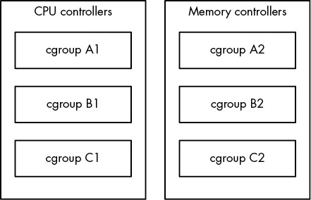
Figure 8-1: cgroups v1. A process may belong to one cgroup per controller.
Figure 8-2 shows how to do it in cgroups v2. We need only three cgroups, because we can set up multiple controllers per cgroup.
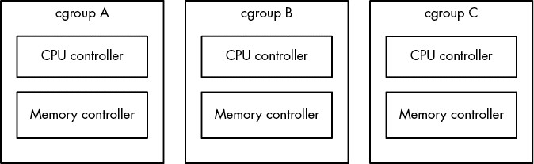
Figure 8-2: cgroups v2. A process may belong to only one cgroup.
You can list the v1 and v2 cgroups for any process by looking at its cgroup file in /proc/<pid>. You can start by looking at your shell’s cgroups with this command:
$ cat /proc/self/cgroup
12:rdma:/
11:net_cls,net_prio:/
10:perf_event:/
9:cpuset:/
8:cpu,cpuacct:/user.slice
7:blkio:/user.slice
6:memory:/user.slice
5:pids:/user.slice/user-1000.slice/session-2.scope
4:devices:/user.slice
3:freezer:/
2:hugetlb:/testcgroup 1
1:name=systemd:/user.slice/user-1000.slice/session-2.scope
0::/user.slice/user-1000.slice/session-2.scope
Don’t be alarmed if the output is significantly shorter on your system; this just means that you probably have only cgroups v2. Every line of output here starts with a number and is a different cgroup. Here are some pointers on how to read it:
- Numbers 2–12 are for cgroups v1. The controllers for those are listed next to the number.
- Number 1 is also for version 1, but it does not have a controller. This cgroup is for management purposes only (in this case, systemd configured it).
- The last line, number 0, is for cgroups v2. No controllers are visible here. On a system that doesn’t have cgroups v1, this will be the only line of output.
- Names are hierarchical and look like parts of file paths. You can see in this example that some of the cgroups are named /user.slice and others /user.slice/user-1000.slice/session-2.scope.
- The name /testcgroup 1 was created to show that in cgroups v1, the cgroups for a process can be completely independent.
- Names under user.slice that include session are login sessions, assigned by systemd. You’ll see them when you’re looking at a shell’s cgroups. The cgroups for your system services will be under system.slice.
You may have surmised that cgroups v1 has flexibility in one respect over v2 because you can assign different combinations of cgroups to processes. However, it turns out that no one actually used them this way, and this approach was more complicated to set up and implement than simply having one cgroup per process.
Because cgroups v1 is being phased out, our discussion will focus on cgroups v2 from this point forward. Be aware that if a controller is being used in cgroups v1, the controller cannot be used in v2 at the same time due to potential conflicts. This means that the controller-specific parts of what we’re about to discuss won’t work correctly if your system still uses v1, but you should still be able to follow along with the v1 equivalents if you look in the right place.
8.6.2 Viewing cgroups
Unlike the traditional Unix system call interface for interacting with the kernel, cgroups are accessed entirely through the filesystem, which is usually mounted as a cgroup2 filesystem under /sys/fs/cgroup. (If you’re also running cgroups v1, this will probably be under /sys/fs/cgroup/unified.)
Let’s explore the cgroup setup of a shell. Open a shell and find its cgroup from /proc/self/cgroup (as shown earlier). Then look in /sys/fs/cgroup (or /sys/fs/cgroup/unified). You’ll find a directory with that name; change to it and have a look around:
$ cat /proc/self/cgroup
0::/user.slice/user-1000.slice/session-2.scope
$ cd /sys/fs/cgroup/user.slice/user-1000.slice/session-2.scope/
$ ls
NOTE
A cgroup name can be quite long on desktop environments that like to create a new cgroup for each new application launched.
Among the many files that can be here, the primary cgroup interface files begin with cgroup. Start by looking at cgroup.procs (using cat is fine), which lists the processes in the cgroup. A similar file, cgroup.threads, also includes threads.
To see the controllers currently in use for the cgroup, look at cgroup.controllers:
$ cat cgroup.controllers
memory pids
Most cgroups used for shells have these two controllers, which can control the amount of memory used and the total number of processes in the cgroup. To interact with a controller, look for the files that match the controller prefix. For example, if you want to see the number of threads running in the cgroup, consult pids.current:
$ cat pids.current
4
To see the maximum amount of memory that the cgroup can consume, take a look at memory.max:
$ cat memory.max
max
A value of max means that this cgroup has no specific limit, but because cgroups are hierarchical, a cgroup back down the subdirectory chain might limit it.
8.6.3 Manipulating and Creating cgroups
Although you probably won’t ever need to alter cgroups, it’s easy to do. To put a process into a cgroup, write its PID to its cgroup.procs file as root:
# echo pid > cgroup.procs
This is how many changes to cgroups work. For example, if you want to limit the maximum number of PIDs of a cgroup (to, say, 3,000 PIDs), do it as follows:
# echo 3000 > pids.max
Creating cgroups is trickier. Technically, it’s as easy as creating a subdirectory somewhere in the cgroup tree; when you do so, the kernel automatically creates the interface files. If a cgroup has no processes, you can remove the cgroup with rmdir even with the interface files present. What can trip you up are the rules governing cgroups, including:
- You can put processes only in outer-level (“leaf”) cgroups. For example, if you have cgroups named /my-cgroup and /my-cgroup/my-subgroup, you can’t put processes in /my-cgroup, but /my-cgroup/my-subgroup is okay. (An exception is if the cgroups have no controllers, but let’s not dig further.)
- A cgroup can’t have a controller that isn’t in its parent cgroup.
- You must explicitly specify controllers for child cgroups. You do this through the cgroup.subtree_control file; for example, if you want a child cgroup to have the cpu and pids controllers, write +cpu +pids to this file.
An exception to these rules is the root cgroup found at the base path of the hierarchy. You can place processes in this cgroup. One reason you might want to do this is to detach a process from systemd’s control.
8.6.4 Viewing Resource Utilization
In addition to being able to limit resources by cgroup, you can also see the current resource utilization of all processes across their cgroups. Even with no controllers enabled, you can see the CPU usage of a cgroup by looking at its cpu.stat file:
$ cat cpu.stat
usage_usec 4617481
user_usec 2170266
system_usec 2447215
Because this is the accumulated CPU usage over the entire lifespan of the cgroup, you can see how a service consumes processor time even if it spawns many subprocesses that eventually terminate.
You can view other types of utilization if the appropriate controllers are enabled. For example, the memory controller gives access to the memory.current file for current memory use and memory.stat file containing detailed memory data for the lifespan of the cgroup. These files are not available in the root cgroup.
You can get a lot more out of cgroups. The full details for how to use each individual controller, as well as all of the rules for creating cgroups, are available in the kernel documentation; just search online for “cgroups2 documentation” and you should find it.
For now, though, you should have a good idea of how cgroups work. Understanding the basics of their operation helps explain how systemd organizes processes. Later on, when you read about containers, you’ll see how they’re used for a much different purpose.
8.7 Further Topics
One reason there are so many tools to measure and manage resource utilization is that different types of resources are consumed in many different ways. In this chapter, you’ve seen CPU, memory, and I/O as system resources being consumed by processes, threads inside processes, and the kernel.
The other reason the tools exist is that the resources are limited, and for a system to perform well, its components must strive to consume fewer resources. In the past, many users shared a machine, so it was necessary to make sure that each user had a fair share of resources. Now, although a modern desktop computer may not have multiple users, it still has many processes competing for resources. Likewise, high-performance network servers require intense system resource monitoring because they run many processes to handle multiple requests simultaneously.
Further topics in resource monitoring and performance analysis you might want to explore include:
- sar (System Activity Reporter) The sar package has many of the continuous monitoring capabilities of vmstat, but it also records resource utilization over time. With sar, you can look back at a particular time to see what your system was doing. This is handy when you want to analyze a past system event.
- acct (process accounting) The acct package can record the processes and their resource utilization.
- Quotas You can limit the amount of disk space that a user can use with the quota system.
If you’re interested in systems tuning and performance in particular, Systems Performance: Enterprise and the Cloud, 2nd edition, by Brendan Gregg (Addison-Wesley, 2020) goes into much more detail.
We also haven’t yet touched on the many, many tools you can use to monitor network resource utilization. To use those, though, you first need to understand how the network works. That’s where we’re headed next.
9
UNDERSTANDING YOUR NETWORK AND ITS CONFIGURATION
Networking is the practice of connecting computers and sending data between them. That sounds simple enough, but to understand how it works, you need to ask two fundamental questions:
- How does the computer sending the data know where to send its data?
- When the destination computer receives the data, how does it know what it just received?
A computer answers these questions by using a series of components, with each one responsible for a certain aspect of sending, receiving, and identifying data. The components are arranged in groups that form network layers, which stack on top of each other in order to form a complete system. The Linux kernel handles networking in a similar way to the SCSI subsystem described in Chapter 3.
Because each layer tends to be independent, it’s possible to build networks with many different combinations of components. This is where network configuration can become very complicated. For this reason, we’ll begin this chapter by looking at the layers in very simple networks. You’ll learn how to view your own network settings, and when you understand the basic workings of each layer, you’ll be ready to learn how to configure those layers by yourself. Finally, you’ll move on to more advanced topics like building your own networks and configuring firewalls. (Skip over that material if your eyes start to glaze over; you can always come back.)
9.1 Network Basics
Before getting into the theory of network layers, take a look at the simple network shown in Figure 9-1.
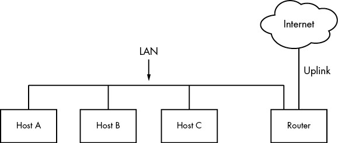
Figure 9-1: A typical local area network with a router that provides internet access
This type of network is ubiquitous; most home and small office networks are configured this way. Each machine connected to the network is called a host. One of these is a router, which is a host that can move data from one network to another. In this example, these four hosts (Hosts A, B, C, and the router) form a local area network (LAN). The connections on the LAN can be wired or wireless. There isn’t a strict definition of a LAN; the machines residing on a LAN are usually physically close and share much of the same configuration and access rights. You’ll see a specific example soon.
The router is also connected to the internet—the cloud in the figure. This connection is called the uplink or the wide area network (WAN) connection, because it links the much smaller LAN to a larger network. Because the router is connected to both the LAN and the internet, all machines on the LAN also have access to the internet through the router. One of the goals of this chapter is to see how the router provides this access.
Your initial point of view will be from a Linux-based machine such as Host A on the LAN in Figure 9-1.
9.2 Packets
A computer transmits data over a network in small chunks called packets, which consist of two parts: a header and a payload. The header contains identifying information such as the source and destination host machines and the basic protocol. The payload, on the other hand, is the actual application data that the computer wants to send (for example, HTML or image data).
A host can send, receive, and process packets in any order, regardless of where they came from or where they’re going, which makes it possible for several hosts to communicate “simultaneously.” For example, if a host needs to transmit data to two others at once, it can alternate between the destinations in outgoing packets. Breaking messages into smaller units also makes it easier to detect and compensate for errors in transmission.
For the most part, you don’t have to worry about translating between packets and the data that your application uses, because the operating system does this for you. However, it is helpful to know the role of packets in the network layers that you’re about to see.
9.3 Network Layers
A fully functioning network includes a set of network layers called a network stack. Any functional network has a stack. The typical internet stack, from the top to bottom layer, looks like this:
- Application layer Contains the “language” that applications and servers use to communicate—usually a high-level protocol of some sort. Common application layer protocols include Hypertext Transfer Protocol (HTTP, used for the web), encryption protocols such as TLS, and File Transfer Protocol (FTP). Application layer protocols can often be combined. For example, TLS is commonly used in conjunction with HTTP to form HTTPS.
- Application layer processing occurs in user space.
- Transport layer Defines the data transmission characteristics of the application layer. This layer includes data integrity checking, source and destination ports, and specifications for breaking application data into packets at the host side (if the application layer has not already done so), and reassembling them at the destination. Transmission Control Protocol (TCP) and User Datagram Protocol (UDP) are the most common transport layer protocols. The transport layer is sometimes called the protocol layer.
- In Linux, the transport layer and all layers below are primarily handled by the kernel, but there are some exceptions where packets are sent into user space for processing.
- Network or internet layer Defines how to move packets from a source host to a destination host. The particular packet transit rule set for the internet is known as the internet protocol (IP). Because we’ll only talk about internet networks in this book, we’ll really only be talking about the internet layer. However, because network layers are meant to be hardware independent, you can simultaneously configure several independent network layers—such as IP (IPv4), IPv6, IPX, and AppleTalk—on a single host.
- Physical layer Defines how to send raw data across a physical medium, such as Ethernet or a modem. This is sometimes called the link layer or host-to-network layer.
It’s important to understand the structure of a network stack because your data must travel through these layers at least twice before it reaches a program at its destination. For example, if you’re sending data from Host A to Host B, as shown in Figure 9-1, your bytes leave the application layer on Host A and travel through the transport and network layers on Host A; then they go down to the physical medium, across the medium, and up again through the various lower levels to the application layer on Host B in much the same way. If you’re sending something to a host on the internet through the router, it will go through some (but usually not all) of the layers on the router and anything else in between.
The layers sometimes bleed into each other in strange ways because it can be inefficient to process all of them in order. For example, devices that historically dealt with only the physical layer now sometimes look at the transport and internet layer data simultaneously to filter and route data quickly. In addition, the terminology itself can be confusing. For example, TLS stands for Transport Layer Security, but in reality, resides one layer higher, in the application layer. (Don’t worry about these annoying details when you’re learning the basics.)
We’ll begin by looking at how your Linux machine connects to the network in order to answer the where question at the beginning of the chapter. This is the lower part of the stack—the physical and network layers. Later, we’ll look at the upper two layers that answer the what question.
NOTE
You might have heard of another set of layers known as the Open Systems Interconnection (OSI) Reference Model. This is a seven-layer network model often used in teaching and designing networks, but we won’t cover the OSI model because you’ll be working directly with the four layers described here. To learn a lot more about layers (and networks in general), see Andrew S. Tanenbaum and David J. Wetherall’s Computer Networks, 5th edition (Prentice Hall, 2010).
9.4 The Internet Layer
Rather than start at the very bottom of the network stack with the physical layer, we’ll start at the network layer because it can be easier to understand. The internet as we currently know it is based on internet protocol versions 4 (IPv4) and 6 (IPv6). One of the most important aspects of the internet layer is that it’s meant to be a software network that places no particular requirements on hardware or operating systems. The idea is that you can send and receive internet packets over any kind of hardware, using any operating system.
Our discussion will start with IPv4 because it’s a little easier to read the addresses (and understand its limitations), but we’ll explain the primary differences in IPv6.
The internet’s topology is decentralized; it’s made up of smaller networks called subnets. The idea is that all subnets are interconnected in some way. For example, in Figure 9-1, the LAN is normally a single subnet.
A host can be attached to more than one subnet. As you saw in Section 9.1, that kind of host is called a router if it can transmit data from one subnet to another (another term for router is gateway). Figure 9-2 refines Figure 9-1 by identifying the LAN as a subnet, as well as internet addresses for each host and the router. The router in the figure has two addresses, the local subnet 10.23.2.1 and the link to the internet (the internet link’s address is not important right now, so it’s just labeled Uplink Address). We’ll look first at the addresses and then the subnet notation.
Each internet host has at least one numeric IP address. For IPv4, it’s in the form of a.b.c.d, such as 10.23.2.37. An address in this notation is called a dotted-quad sequence. If a host is connected to multiple subnets, it has at least one IP address per subnet. Each host’s IP address should be unique across the entire internet, but as you’ll see later, private networks and Network Address Translation (NAT) can make this a little confusing.
Don’t worry about the subnet notation in Figure 9-2 yet; we’ll discuss it shortly.
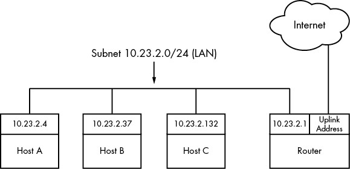
Figure 9-2: Network with IP addresses
NOTE
Technically, an IP address consists of 4 bytes (or 32 bits), abcd. Bytes a and d are numbers from 1 to 254, and b and c are numbers from 0 to 255. A computer processes IP addresses as raw bytes. However, it’s much easier for a human to read and write a dotted-quad address, such as 10.23.2.37, instead of something ugly like the hexadecimal 0x0A170225.
IP addresses are like postal addresses in some ways. To communicate with another host, your machine must know that other host’s IP address.
Let’s take a look at the address on your machine.
9.4.1 Viewing IP Addresses
One machine can have many IP addresses, accommodating multiple physical interfaces, virtual internal networks, and more. To see the addresses that are active on your Linux machine, run:
$ ip address show
There will probably be a lot of output (grouped by physical interface, covered in Section 9.10), but it should include something like this:
2: enp0s31f6: <BROADCAST,MULTICAST,UP,LOWER_UP> mtu 1500 qdisc fq_codel state UP group default qlen 1000 link/ether 40:8d:5c:fc:24:1f brd ff:ff:ff:ff:ff:ff inet 10.23.2.4/24 brd 10.23.2.255 scope global noprefixroute enp0s31f6 valid_lft forever preferred_lft forever
The ip command’s output includes many details from the internet layer(s) and the physical layer. (Sometimes it doesn’t even include an internet address at all!) We’ll discuss the output in more detail later, but for now, concentrate on the fourth line, which reports that the host is configured to have an IPv4 address (denoted with inet) of 10.23.2.4. The /24 after the address helps define the subnet that the IP address belongs to. Let’s see how that works.
NOTE
The ip command is the current standard network configuration tool. In other documentation, you may see the ifconfig command. This older command has been in use in other versions of Unix for decades, but is less capable. For consistency with contemporary recommended practice (and distributions that may not even include ifconfig by default), we’ll use ip. Some other tools that ip supplants are route and arp.
9.4.2 Subnets
A subnet, defined previously, is a connected group of hosts with IP addresses in a particular range. For example, the hosts in the range 10.23.2.1 to 10.23.2.254 could comprise a subnet, as could all hosts between 10.23.1.1 and 10.23.255.254. Usually, the subnet hosts are on the same physical network, as shown in Figure 9-2.
You define a subnet with two pieces: a network prefix (also called a routing prefix) and a subnet mask (sometimes called the network mask or routing mask). Let’s say you want to create a subnet containing the IP addresses between 10.23.2.1 and 10.23.2.254. The network prefix is the part that is common to all addresses in the subnet; in this example, it’s 10.23.2.0 with a subnet mask of 255.255.255.0. Let’s see where those numbers come from.
To see how the prefix and mask work together to give you all possible IP addresses on a subnet, we’ll look at the binary form. The mask marks the bit locations in an IP address that are common to the subnet. For example, here are the binary forms of 10.23.2.0 and 255.255.255.0.
10.23.2.0: 00001010 00010111 00000010 00000000
255.255.255.0: 11111111 11111111 11111111 00000000
Now, let’s use boldface to mark the bit locations in 10.23.2.0 that are 1s in 255.255.255.0:
10.23.2.0: 00001010 00010111 00000010 00000000
Any address containing the bit configuration in bold is in the subnet. Looking at the bits that are not in bold (the last set of eight 0s), setting any number of these bits to 1 results in a valid IP address in this subnet, with the exception of all 0s or all 1s.
Putting it all together, you can see how a host with an IP address of 10.23.2.1 and a subnet mask of 255.255.255.0 is on the same subnet as any other computer that has an IP address beginning with 10.23.2. You can denote this entire subnet as 10.23.2.0/255.255.255.0.
Now let’s see how this becomes the shorthand notation (such as /24) that you’ve seen from tools such as ip.
9.4.3 Common Subnet Masks and CIDR Notation
In most internet tools, you’ll encounter a different form of subnet representation called Classless Inter-Domain Routing (CIDR) notation, where a subnet such as 10.23.2.0/255.255.255.0 is written as 10.23.2.0/24. This shorthand takes advantage of the simple pattern that subnet masks follow.
Look at the mask in binary form, as in the example you saw in the preceding section. You’ll find that all subnet masks are (or should be, according to RFC 1812) just one block of 1s followed by one block of 0s. For example, you just saw that 255.255.255.0 in binary form is 24 1-bits followed by 8 0-bits. The CIDR notation identifies the subnet mask by the number of leading 1s in the subnet mask. Therefore, a combination such as 10.23.2.0/24 includes both the subnet prefix and its subnet mask.
Table 9-1 shows several example subnet masks and their CIDR forms. The /24 subnet mask is the most common on local end-user networks; it’s often used in combination with one of the private networks that you’ll see in Section 9.22.
Table 9-1: Subnet Masks
| Long form | CIDR form |
| 255.0.0.0 | /8 |
| 255.255.0.0 | /16 |
| 255.240.0.0 | /12 |
| 255.255.255.0 | /24 |
| 255.255.255.192 | /26 |
NOTE
If you aren’t familiar with conversion between decimal, binary, and hexadecimal formats, you can use a calculator utility such as bc or dc to convert between different radix representations. For example, in bc, you can run the command obase=2; 240 to print the number 240 in binary (base 2) form.
Taking this one step further, you might have already noticed that if you’ve got the IP address and the subnet mask, you don’t even need to bother with a separate network definition. You can combine them, as you saw back in Section 9.4.1; the ip address show output included 10.23.2.4/24.
Identifying subnets and their hosts is the first building block to understanding how the internet works. However, you still need to connect the subnets.
9.5 Routes and the Kernel Routing Table
Connecting internet subnets is mostly a process of sending data through hosts connected to more than one subnet. Returning to Figure 9-2, think about Host A at IP address 10.23.2.4. This host is connected to a local network of 10.23.2.0/24 and can directly reach hosts on that network. To reach hosts on the rest of the internet, it must communicate through the router (host) at 10.23.2.1.
The Linux kernel distinguishes between these two different kinds of destinations by using a routing table to determine its routing behavior. To show the routing table, use the ip route show command. Here’s what you might see for a simple host such as 10.23.2.4:
$ ip route show
default via 10.23.2.1 dev enp0s31f6 proto static metric 100
10.23.2.0/24 dev enp0s31f6 proto kernel scope link src 10.23.2.4 metric 100
NOTE
The traditional tool for viewing routes is the route command, run as route -n. The -n option tells route to show IP addresses instead of attempting to show hosts and networks by name. This is an important option to remember because you’ll be able to use it in other network-related commands, such as netstat.
This output can be a little difficult to read. Each line is a routing rule; let’s start with the second line in this example, and break that into fields.
The first field you encounter is 10.23.2.0/24, which is a destination network. As with previous examples, this is the host’s local subnet. This rule says that the host can reach the local subnet directly through its network interface, indicated by the dev enp0s31f6 mechanism label after the destination. (Following this field is more detail about the route, including how it was put in place. You don’t need to worry about that for now.)
Then we can move back to the first line of output, which has the destination network default. This rule, which matches any host at all, is also called the default route, explained in the next section. The mechanism is via 10.23.2.1, indicating that traffic using the default route is to be sent to 10.23.2.1 (in our example network, this is a router); dev enp0s31f6 indicates that the physical transmission will happen on that network interface.
9.6 The Default Gateway
The entry for default in the routing table has special significance because it matches any address on the internet. In CIDR notation, it’s 0.0.0.0/0 for IPv4. This is the default route, and the address configured as the intermediary in the default route is the default gateway. When no other rules match, the default route always does, and the default gateway is where you send messages when there is no other choice. You can configure a host without a default gateway, but it won’t be able to reach hosts outside the destinations in the routing table.
On most networks with a netmask of /24 (255.255.255.0), the router is usually at address 1 of the subnet (for example, 10.23.2.1 in 10.23.2.0/24). This is simply a convention, and there can be exceptions.
HOW THE KERNEL CHOOSES A ROUTE
There’s one tricky detail in routing. Say the host wants to send something to 10.23.2.132, which matches both rules in a routing table, the default route and 10.23.2.0/24. How does the kernel know to use the second one? The order in the routing table doesn’t matter; the kernel chooses the longest destination prefix that matches. This is where CIDR notation comes in particularly handy: 10.23.2.0/24 matches, and its prefix is 24 bits long; 0.0.0.0/0 also matches, but its prefix is 0 bits long (that is, it has no prefix), so the rule for 10.23.2.0/24 takes priority.
9.7 IPv6 Addresses and Networks
If you look back at Section 9.4, you can see that IPv4 addresses consist of 32 bits, or 4 bytes. This yields a total of roughly 4.3 billion addresses, which is insufficient for the current scale of the internet. There are several problems caused by the lack of addresses in IPv4, so in response, the Internet Engineering Task Force (IETF) developed the next version, IPv6. Before looking at more network tools, we’ll discuss the IPv6 address space.
An IPv6 address has 128 bits—32 bytes, arranged in eight sets of 4 bytes. In long form, an address is written as follows:
2001:0db8:0a0b:12f0:0000:0000:0000:8b6e
The representation is hexadecimal, with each digit ranging from 0 to f. There are a few commonly used methods of abbreviating the representation. First, you can leave out any leading zeros (for example, 0db8 becomes db8), and one—and only one—set of contiguous zero groups can become :: (two colons). Therefore, you can write the preceding address as:
2001:db8:a0b:12f0::8b6e
Subnets are still denoted in CIDR notation. For the end user, they often cover half of the available bits in the address space (/64), but there are instances where fewer are used. The portion of the address space that’s unique for each host is called the interface ID. Figure 9-3 shows the breakdown of an example address with a 64-bit subnet.
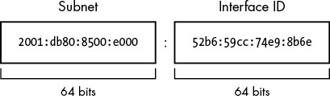
Figure 9-3: Subnet and interface ID of a typical IPv6 address
NOTE
In this book, we’re generally concerned with the average user’s point of view. It’s slightly different for a service provider, where a subnet is further divided into a routing prefix and another network ID (sometimes also called a subnet). Don’t worry about this right now.
The last thing to know for now about IPv6 is that hosts normally have at least two addresses. The first, which is valid across the internet, is called the global unicast address. The second, for the local network, is called the link-local address. Link-local addresses always have an fe80::/10 prefix, followed by an all-zero 54-bit network ID, and end with a 64-bit interface ID. The result is that when you see a link-local address on your system, it will be in the fe80::/64 subnet.
NOTE
Global unicast addresses have the prefix 2000::/3. Because the first byte starts with 001 with this prefix, that byte can be completed as 0010 or 0011. Therefore, a global unicast address always starts with 2 or 3.
9.7.1 Viewing IPv6 Configuration on Your System
If your system has an IPv6 configuration, you would have gotten some IPv6 information from the ip command that you ran earlier. To single out IPv6, use the -6 option:
$ ip -6 address show
1: lo: <LOOPBACK,UP,LOWER_UP> mtu 65536 state UNKNOWN qlen 1000 inet6 ::1/128 scope host valid_lft forever preferred_lft forever
2: enp0s31f6: <BROADCAST,MULTICAST,UP,LOWER_UP> mtu 1500 state UP qlen 1000 inet6 2001:db8:8500:e:52b6:59cc:74e9:8b6e/64 scope global dynamic noprefixroute valid_lft 86136sec preferred_lft 86136sec inet6 fe80::d05c:97f9:7be8:bca/64 scope link noprefixroute valid_lft forever preferred_lft forever
In addition to the loopback interface (which we’ll talk about later), you can see two more addresses. The global unicast address is denoted with scope global, and the link-local address gets a scope link label.
Viewing the routes is similar:
$ ip -6 route show
::1 dev lo proto kernel metric 256 pref medium1 2001:db8:8500:e::/64 dev enp0s31f6 proto ra metric 100 pref medium2 fe80::/64 dev enp0s31f6 proto kernel metric 100 pref medium3 default via fe80::800d:7bff:feb8:14a0 dev enp0s31f6 proto ra metric 100 pref medium
This is slightly more complicated than the IPv4 setup because there are both link-local and global subnets configured. The second line 1 is for destinations in the locally attached global unicast address subnets; the host knows that it can reach them directly, and the link-local line below 2 is similar. For the default route 3 (also written as ::/0 in IPv6; remember that this is anything that’s not directly connected), this configuration arranges for traffic to go through the router at the link-local address fe80::800d:7bff:feb8:14a0 instead of its address on the global subnet. You will see later that the router usually doesn’t care about how it gets traffic, only where the traffic is supposed to go. Using a link-local address as a default gateway has the advantage that it doesn’t need to change if the global IP address space changes.
9.7.2 Configuring Dual-Stack Networks
As you may have guessed by now, it’s possible to configure hosts and networks to run both IPv4 and IPv6. This is sometimes called a dual-stack network, though the use of the word stack is questionable as there’s really only one layer of the typical network stack that’s being duplicated in this case (true dual-stack would be something like IP+IPX). Pedantry aside, the IPv4 and IPv6 protocols are independent of each other and can run simultaneously. On such a host, it’s up to the application (such as a web browser) to choose IPv4 or IPv6 to connect to another host.
An application originally written for IPv4 does not automatically have IPv6 support. Fortunately, because the layers in the stack sitting on top of the network layer are unchanged, the code necessary to communicate with IPv6 is minimal and easy to add. Most important applications and servers now include IPv6 support.
9.8 Basic ICMP and DNS Tools
Now it’s time to look at some basic practical utilities to help you interact with hosts. These tools use two protocols of particular interest: Internet Control Message Protocol (ICMP), which can help you root out problems with connectivity and routing, and the Domain Name Service (DNS) system, which maps names to IP addresses so that you don’t have to remember a bunch of numbers.
ICMP is a transport layer protocol used to configure and diagnose internet networks; it differs from other transport layer protocols in that it doesn’t carry any true user data, and thus there’s no application layer above it. By comparison, DNS is an application layer protocol used to map human-readable names to internet addresses.
9.8.1 ping
ping (see https://ftp.arl.army.mil/~mike/ping.html) is one of the most basic network debugging tools. It sends ICMP echo request packets to a host that asks a recipient host to return the packet to the sender. If the recipient host gets the packet and is configured to reply, it sends an ICMP echo response packet in return.
For example, say you run ping 10.23.2.1 and get this output:
$ ping 10.23.2.1
PING 10.23.2.1 (10.23.2.1) 56(84) bytes of data.
64 bytes from 10.23.2.1: icmp_req=1 ttl=64 time=1.76 ms
64 bytes from 10.23.2.1: icmp_req=2 ttl=64 time=2.35 ms
64 bytes from 10.23.2.1: icmp_req=4 ttl=64 time=1.69 ms
64 bytes from 10.23.2.1: icmp_req=5 ttl=64 time=1.61 ms
The first line says that you’re sending 56-byte packets (84 bytes, if you include the headers) to 10.23.2.1 (by default, one packet per second), and the remaining lines indicate responses from 10.23.2.1. The most important parts of the output are the sequence number (icmp_req) and the round-trip time (time). The number of bytes returned is the size of the packet sent plus 8. (The content of the packets isn’t important to you.)
A gap in the sequence numbers, such as the one between 2 and 4, usually means there’s some kind of connectivity problem. Packets shouldn’t be arriving out of order, because ping sends only one packet a second. If a response takes more than a second (1,000 ms) to arrive, the connection is extremely slow.
The round-trip time is the total elapsed time between the moment that the request packet leaves and the moment that the response packet arrives. If there’s no way to reach the destination, the final router to see the packet returns an ICMP “host unreachable” packet to ping.
On a wired LAN, you should expect absolutely no packet loss and very low numbers for the round-trip time. (The preceding example output is from a wireless network.) You should also expect no packet loss from your network to and from your ISP and reasonably steady round-trip times.
NOTE
For security reasons, some hosts on the internet disable response to ICMP echo request packets, so you might find that you can connect to a website on a host but not get a ping response.
You can force ping to use IPv4 or IPv6 with the -4 and -6 options, respectively.
9.8.2 DNS and host
IP addresses are difficult to remember and subject to change, which is why we normally use names such as www.example.com instead. The Domain Name Service (DNS) library on your system normally handles this translation automatically, but sometimes you’ll want to manually translate between a name and an IP address. To find the IP address behind a domain name, use the host command:
$ host www.example.com
example.com has address 172.17.216.34
example.com has IPv6 address 2001:db8:220:1:248:1893:25c8:1946
Notice how this example has both the IPv4 address 172.17.216.34 and the much longer IPv6 address. There may be more than one address for a hostname, and the output may additional information such as mail exchangers.
You can also use host in reverse: enter an IP address instead of a hostname to try to discover the hostname behind the IP address. Don’t expect this to work reliably, however. A single IP address may be associated with more than one hostname, and DNS doesn’t know how to determine which of those hostnames should correspond to an IP address. In addition, the administrator for that host needs to manually set up the reverse lookup, and administrators often don’t do so.
There’s a lot more to DNS than the host command. We’ll cover basic client configuration in Section 9.15.
There are -4 and -6 options for host, but they work differently than you might expect. They force the host command to get its information via IPv4 or IPv6, but because that information should be the same regardless of the network protocol, the output will potentially include both IPv4 and IPv6.
9.9 The Physical Layer and Ethernet
One of the key points to understand about the internet is that it’s a software network. Nothing we’ve discussed so far is hardware specific, and indeed, one reason for the internet’s success is that it works on almost any kind of computer, operating system, and physical network. However, if you actually want to talk to another computer, you still have to put a network layer on top of some kind of hardware. That interface is the physical layer.
In this book, we’ll look at the most common kind of physical layer: an Ethernet network. The IEEE 802 family of standards documentation defines many different kinds of Ethernet networks, from wired to wireless, but they all have a few things in common:
- All devices on an Ethernet network have a Media Access Control (MAC) address, sometimes called a hardware address. This address is independent of a host’s IP address, and it is unique to the host’s Ethernet network (but not necessarily a larger software network such as the internet). A sample MAC address is 10:78:d2:eb:76:97.
- Devices on an Ethernet network send messages in frames, which are wrappers around the data sent. A frame contains the origin and destination MAC addresses.
Ethernet doesn’t really attempt to go beyond hardware on a single network. For example, if you have two different Ethernet networks with one host attached to both networks (and two different network interface devices), you can’t directly transmit a frame from one Ethernet network to the other unless you set up an Ethernet bridge. And this is where higher network layers (such as the internet layer) come in. By convention, each Ethernet network is also usually an internet subnet. Even though a frame can’t leave one physical network, a router can take the data out of a frame, repackage it, and send it to a host on a different physical network, which is exactly what happens on the internet.
9.10 Understanding Kernel Network Interfaces
The physical and the internet layers must be connected such that the internet layer can retain its hardware-independent flexibility. The Linux kernel maintains its own division between the two layers and provides a communication standard for linking them called a (kernel) network interface. When you configure a network interface, you link the IP address settings from the internet side with the hardware identification on the physical device side. Network interfaces usually have names that indicate the kind of hardware underneath, such as enp0s31f6 (an interface in a PCI slot). A name like this is called a predictable network interface device name, because it remains the same after a reboot. At boot time, interfaces have traditional names such as eth0 (the first Ethernet card in the computer) and wlan0 (a wireless interface), but on most machines running systemd, they are quickly renamed.
In Section 9.4.1, you learned how to view the network interface settings with ip address show. The output is organized by interface. Here’s the one we saw before:
2: enp0s31f6: <BROADCAST,MULTICAST,UP,LOWER_UP> mtu 1500 qdisc fq_codel state 1 UP group default qlen 1000 2 link/ether 40:8d:5c:fc:24:1f brd ff:ff:ff:ff:ff:ff inet 10.23.2.4/24 brd 10.23.2.255 scope global noprefixroute enp0s31f6 valid_lft forever preferred_lft forever inet6 2001:db8:8500:e:52b6:59cc:74e9:8b6e/64 scope global dynamic noprefixroute valid_lft 86054sec preferred_lft 86054sec inet6 fe80::d05c:97f9:7be8:bca/64 scope link noprefixroute valid_lft forever preferred_lft forever
Each network interface gets a number; this one is 2. Interface 1 is almost always the loopback described in Section 9.16. The flag UP tells you that the interface is working 1. In addition to the internet layer pieces that we’ve already covered, you also see the MAC address on the physical layer, link/ether 2.
Although ip shows some hardware information, it’s designed primarily for viewing and configuring the software layers attached to the interfaces. To dig deeper into the hardware and physical layer behind a network interface, use something like the ethtool command to display or change the settings on Ethernet cards. (We’ll look briefly at wireless networks in Section 9.27.)
9.11 Introduction to Network Interface Configuration
You’ve now seen all of the basic elements that go into the lower levels of a network stack: the physical layer, the network (internet) layer, and the Linux kernel’s network interfaces. In order to combine these pieces to connect a Linux machine to the internet, you or a piece of software must do the following:
- Connect the network hardware and ensure that the kernel has a driver for it. If the driver is present, ip address show includes an entry for the device, even if it hasn’t been configured.
- Perform any additional physical layer setup, such as choosing a network name or password.
- Assign IP address(es) and subnets to the kernel network interface so that the kernel’s device drivers (physical layer) and internet subsystems (internet layer) can talk to each other.
- Add any additional necessary routes, including the default gateway.
When all machines were big stationary boxes wired together, this was relatively straightforward: the kernel did step 1, you didn’t need step 2, and you’d do step 3 with the old ifconfig command and step 4 with the old route command. We’ll briefly look at how to do this with the ip command.
9.11.1 Manually Configuring Interfaces
We’re now going to see how to set up interfaces manually, but we won’t go into too much detail because doing so is rarely needed and error-prone. This is typically something you’d only do when experimenting with your system. Even when configuring, you may wish to use a tool such as Netplan to build the configuration in a text file instead of using a series of commands as shown next.
You can bind an interface to the internet layer with the ip command. To add an IP address and subnet for a kernel network interface, you’d do this:
# ip address add address/subnet dev interface
Here, interface is the name of the interface, such as enp0s31f6 or eth0. This also works for IPv6, except that you need to add parameters (for example, to indicate link-local status). If you’d like to see all of the options, see the ip-address(8) manual page.
9.11.2 Manually Adding and Deleting Routes
With the interface up, you can add routes, which is typically just a matter of setting the default gateway, like this:
# ip route add default via gw-address dev interface
The gw-address parameter is the IP address of your default gateway; it must be an address in a locally connected subnet assigned to one of your network interfaces.
To remove the default gateway, run:
# ip route del default
You can easily override the default gateway with other routes. For example, say your machine is on subnet 10.23.2.0/24, you want to reach a subnet at 192.168.45.0/24, and you know that the host at 10.23.2.44 can act as a router for that subnet. Run this command to send traffic bound for 192.168.45.0 to that router:
# ip route add 192.168.45.0/24 via 10.23.2.44
You don’t need to specify the router in order to delete a route:
# ip route del 192.168.45.0/24
Before you go crazy with routes, you should know that configuring routes is often more complicated than it appears. For this particular example, you also have to make sure that the routing for all hosts on 192.163.45.0/24 can lead back to 10.23.2.0/24, or the first route you add is basically useless.
Normally, you should keep things as simple as possible, setting up local networks so that their hosts need only a default route. If you need multiple subnets and the ability to route between them, it’s usually best to configure the routers acting as the default gateways to do all of the work of routing between different local subnets. (You’ll see an example in Section 9.21.)
9.12 Boot-Activated Network Configuration
We’ve discussed ways to manually configure a network, and the traditional way to ensure the correctness of a machine’s network configuration was to have init run a script to run the manual configuration at boot time. This boils down to running a tool like ip somewhere in the chain of boot events.
There have been many attempts in Linux to standardize configuration files for boot-time networking. The tools ifup and ifdown are among them; for example, a boot script can (in theory) run ifup eth0 to run the correct ip commands to set up an interface. Unfortunately, different distributions have completely different implementations of ifup and ifdown, and as a result, their configuration files are also different.
There is a deeper disparity due to the fact that network configuration elements are present in each of the different network layers; a consequence is that the software responsible for making networking happen is in several parts of kernel and user-space tools, written and maintained by different developers. In Linux, there is a general agreement not to share configuration files among separate tool suites or libraries, because changes made for one tool could break another.
Dealing with network configuration in several different places makes it difficult to manage systems. As a result, there are several different network management tools that each have their own approach to the configuration problem. However, these tend to be specialized for the particular kind of role that a Linux machine can serve. A tool might work on a desktop but not be appropriate for a server.
A tool called Netplan offers a different approach to the configuration problem. Rather than managing the network, Netplan is nothing more than a unified network configuration standard and a tool to transform that configuration into the files used by existing network managers. Currently, Netplan supports NetworkManager and systemd-networkd, which we’ll talk about later in this chapter. Netplan files are in YAML format, and reside in /etc/netplan.
Before we can talk about network configuration managers, let’s look a little closer at some of the issues they face.
9.13 Problems with Manual and Boot-Activated Network Configuration
Although most systems used to configure the network in their boot mechanisms—and many servers still do—the dynamic nature of modern networks means that most machines don’t have static (unchanging) IP addresses. In IPv4, rather than storing the IP address and other network information on your machine, your machine gets this information from somewhere on the local physical network when it first attaches to that network. Most normal network client applications don’t particularly care what IP address your machine uses, as long as it works. Dynamic Host Configuration Protocol (DHCP, described in Section 9.19) tools do the basic network layer configuration on typical IPv4 clients. In IPv6, clients are capable of configuring themselves to a certain extent; we’ll look at that briefly in Section 9.20.
There’s more to the story, though. For example, wireless networks add further dimensions to interface configuration, such as network names, authentication, and encryption techniques. When you step back to look at the bigger picture, you see that your system needs a way to answer the following questions:
- If the machine has multiple physical network interfaces (such as a notebook with wired and wireless Ethernet), how do you choose which one(s) to use?
- How should the machine set up the physical interface? For wireless networks, this includes scanning for network names, choosing a name, and negotiating authentication.
- Once the physical network interface is connected, how should the machine set up the software network layers, such as the internet layer?
- How can you let a user choose connectivity options? For example, how do you let a user choose a wireless network?
- What should the machine do if it loses connectivity on a network interface?
Answering these questions is usually more than simple boot scripts can handle, and it’s a real hassle to do it all by hand. The answer is to use a system service that can monitor physical networks and choose (and automatically configure) the kernel network interfaces based on a set of rules that makes sense to the user. The service should also be able to respond to requests from users, who in turn should be able to change the wireless network they’re on without having to become root.
9.14 Network Configuration Managers
There are several ways to automatically configure networks in Linux-based systems. The most widely used option on desktops and notebooks is NetworkManager. There is an add-on to systemd, called systemd-networkd, that can do basic network configuration and is useful for machines that don’t need much flexibility (such as servers), but it doesn’t have the dynamic capabilities of NetworkManager. Other network configuration management systems are mainly targeted for smaller embedded systems, such as OpenWRT’s netifd, Android’s ConnectivityManager service, ConnMan, and Wicd.
We’ll briefly discuss NetworkManager because it’s the one you’re most likely to encounter. We won’t go into a tremendous amount of detail, though, because after you see the basic concepts, NetworkManager and other configuration systems will be much easier to understand. If you’re interested in systemd-networkd, the systemd.network(5) manual page describes the settings, and the configuration directory is /etc/systemd/network.
9.14.1 NetworkManager Operation
NetworkManager is a daemon that the system starts upon boot. Like most daemons, it does not depend on a running desktop component. Its job is to listen to events from the system and users and to change the network configuration based on a set of rules.
When running, NetworkManager maintains two basic levels of configuration. The first is a collection of information about available hardware devices, which it normally collects from the kernel and maintains by monitoring udev over the Desktop Bus (D-Bus). The second configuration level is a more specific list of connections: hardware devices and additional physical and network layer configuration parameters. For example, a wireless network can be represented as a connection.
To activate a connection, NetworkManager often delegates the tasks to other specialized network tools and daemons, such as dhclient, to get internet layer configuration from a locally attached physical network. Because network configuration tools and schemes vary among distributions, NetworkManager uses plug-ins to interface with them, rather than imposing its own standard. There are plug-ins for the both the Debian/Ubuntu and Red Hat–style interface configuration, for example.
Upon startup, NetworkManager gathers all available network device information, searches its list of connections, and then decides to try to activate one. Here’s how it makes that decision for Ethernet interfaces:
- If a wired connection is available, try to connect using it. Otherwise, try the wireless connections.
- Scan the list of available wireless networks. If a network is available that you’ve previously connected to, NetworkManager will try it again.
- If more than one previously connected wireless network is available, select the most recently connected.
After establishing a connection, NetworkManager maintains it until the connection is lost, a better network becomes available (for example, you plug in a network cable while connected over wireless), or the user forces a change.
9.14.2 NetworkManager Interaction
Most users interact with NetworkManager through an applet on the desktop; it’s usually an icon in the upper or lower right that indicates the connection status (wired, wireless, or not connected). When you click the icon, you get a number of connectivity options, such as a choice of wireless networks and an option to disconnect from your current network. Each desktop environment has its own version of this applet, so it looks a little different on each one.
In addition to the applet, there are a few tools that you can use to query and control NetworkManager from your shell. For a very quick summary of your current connection status, use the nmcli command with no arguments. You’ll get a list of interfaces and configuration parameters. In some ways, this is like ip except that there’s more detail, especially when you’re viewing wireless connections.
The nmcli command allows you to control NetworkManager from the command line. This is a somewhat extensive command; in fact, there’s an nmcli-examples(5) manual page in addition to the usual nmcli(1) manual page.
Finally, the utility nm-online will tell you whether the network is up or down. If the network is up, the command returns 0 as its exit code; it’s nonzero otherwise. (For more on how to use an exit code in a shell script, see Chapter 11.)
9.14.3 NetworkManager Configuration
NetworkManager’s general configuration directory is usually /etc/NetworkManager, and there are several different kinds of configuration. The general configuration file is NetworkManager.conf. The format is similar to the XDG-style .desktop and Microsoft .ini files, with key-value parameters falling into different sections. You’ll find that nearly every configuration file has a [main] section that defines the plug-ins to use. Here’s a simple example that activates the ifupdown plug-in used by Ubuntu and Debian:
[main]
plugins=ifupdown,keyfile
Other distribution-specific plug-ins are ifcfg-rh (for Red Hat–style distributions) and ifcfg-suse (for SuSE). The keyfile plug-in that you also see here supports NetworkManager’s native configuration file support. When using the plug-in, you can see all of the system’s known connections in /etc/NetworkManager/system-connections.
For the most part, you won’t need to change NetworkManager.conf because the more specific configuration options are found in other files.
Unmanaged Interfaces
Although you may want NetworkManager to manage most of your network interfaces, there will be times when you want it to ignore interfaces. For example, most users wouldn’t need any kind of dynamic configuration on the localhost (lo; see Section 9.16) interface, because its configuration never changes. You also want to configure this interface early in the boot process, because basic system services often depend on it. Most distributions keep NetworkManager away from localhost.
You can tell NetworkManager to disregard an interface by using plug-ins. If you’re using the ifupdown plug-in (for example, in Ubuntu and Debian), add the interface configuration to your /etc/network/interfaces file and then set the value of managed to false in the ifupdown section of the NetworkManager.conf file:
[ifupdown]
managed=false
For the ifcfg-rh plug-in that Fedora and Red Hat use, look for a line like this in the /etc/sysconfig/network-scripts directory that contains the ifcfg-* configuration files:
NM_CONTROLLED=yes
If this line is not present or the value is set to no, NetworkManager ignores the interface. In the case of localhost, you’ll find it deactivated in the ifcfg-lo file. You can also specify a hardware address to ignore, like this:
HWADDR=10:78:d2:eb:76:97
If you don’t use either of these network configuration schemes, you can still use the keyfile plug-in to specify the unmanaged device directly inside your NetworkManager.conf file using its MAC address. Here’s an example showing two unmanaged devices:
[keyfile]
unmanaged-devices=mac:10:78:d2:eb:76:97;mac:1c:65:9d:cc:ff:b9
Dispatching
One final detail of NetworkManager configuration relates to specifying additional system actions for when a network interface goes up or down. For example, some network daemons need to know when to start or stop listening on an interface in order to work correctly (such as the secure shell daemon discussed in the next chapter).
When a system’s network interface status changes, NetworkManager runs everything in /etc/NetworkManager/dispatcher.d with an argument such as up or down. This is relatively straightforward, but many distributions have their own network control scripts so they don’t place the individual dispatcher scripts in this directory. Ubuntu, for example, has just one script named 01ifupdown that runs everything in an appropriate subdirectory of /etc/network, such as /etc/network/if-up.d.
As with the rest of the NetworkManager configuration, the details of these scripts are relatively unimportant; all you need to know is how to track down the appropriate location if you need to make an addition or change (or use Netplan and let it figure out the location for you). As ever, don’t be shy about looking at scripts on your system.
9.15 Resolving Hostnames
One of the final basic tasks in any network configuration is hostname resolution with DNS. You’ve already seen the host resolution tool that translates a name such as www.example.com to an IP address such as 10.23.2.132.
DNS differs from the network elements we’ve looked at so far because it’s in the application layer, entirely in user space. Therefore, it’s technically slightly out of place in this chapter alongside the internet and physical layer discussion. However, without proper DNS configuration, your internet connection is practically worthless. No one in their right mind advertises IP addresses (much less IPv6 addresses) for websites and email addresses, because a host’s IP address is subject to change and it’s not easy to remember a bunch of numbers.
Practically all network applications on a Linux system perform DNS lookups. The resolution process typically unfolds like this:
- The application calls a function to look up the IP address behind a hostname. This function is in the system’s shared library, so the application doesn’t need to know the details of how it works or whether the implementation will change.
- When the function in the shared library runs, it acts according to a set of rules (found in /etc/nsswitch.conf; see Section 9.15.4) to determine a plan of action on lookups. For example, the rules usually say that even before going to DNS, check for a manual override in the /etc/hosts file.
- When the function decides to use DNS for the name lookup, it consults an additional configuration file to find a DNS name server. The name server is given as an IP address.
- The function sends a DNS lookup request (over the network) to the name server.
- The name server replies with the IP address for the hostname, and the function returns this IP address to the application.
This is the simplified version. In a typical contemporary system, there are more actors attempting to speed up the transaction or add flexibility. Let’s ignore that for now and look at some of the basic pieces. As with other kinds of network configuration, you probably won’t need to change hostname resolution, but it’s helpful to see how it works.
9.15.1 /etc/hosts
On most systems, you can override hostname lookups with the /etc/hosts file. It usually looks like this:
127.0.0.1 localhost
10.23.2.3 atlantic.aem7.net atlantic
10.23.2.4 pacific.aem7.net pacific
::1 localhost ip6-localhost
You’ll nearly always see the entry (or entries) for localhost here (see Section 9.16). The other entries here illustrate a simple way to add hosts on a local subnet.
NOTE
In the bad old days, there was one central hosts file that everyone copied to their own machine in order to stay up to date (see RFCs 606, 608, 623, and 625), but as the ARPANET/internet grew, this quickly got out of hand.
9.15.2 resolv.conf
The traditional configuration file for DNS servers is /etc/resolv.conf. When things were simpler, a typical example might have looked like this, where the ISP’s name server addresses are 10.32.45.23 and 10.3.2.3:
search mydomain.example.com example.com
nameserver 10.32.45.23
nameserver 10.3.2.3
The search line defines rules for incomplete hostnames (just the first part of the hostname—for example, myserver instead of myserver.example.com). Here, the resolver library would try to look up host.mydomain.example.com and host.example.com.
Generally, name lookups are no longer this straightforward. Many enhancements and modifications have been made to the DNS configuration.
9.15.3 Caching and Zero-Configuration DNS
There are two main problems with the traditional DNS configuration. First, the local machine does not cache name server replies, so frequent repeated network access may be unnecessarily slow due to name server requests. To solve this problem, many machines (and routers, if acting as name servers) run an intermediate daemon to intercept name server requests and cache the reply, and then use the cached answers if possible. The most common of these daemons is systemd-resolved; you might also see dnsmasq or nscd on your system. You can also set up BIND (the standard Unix name server daemon) as a cache. You can often tell that you’re running a name server caching daemon if you see 127.0.0.53 or 127.0.0.1 either in your /etc/resolv.conf file or listed as the server when you run nslookup -debug host. Take a closer look, though. If you’re running systemd-resolved, you might notice that resolv.conf isn’t even a file in /etc; it’s a link to an automatically generated file in /run.
There’s a lot more to systemd-resolved than meets the eye, as it can combine several name lookup services and expose them differently for each interface. This addresses the second problem with the traditional name server setup: it can be particularly inflexible if you want to be able to look up names on your local network without messing around with a lot of configuration. For example, if you set up a network appliance on your network, you’ll want to be able to call it by name immediately. This is part of the idea behind zero-configuration name service systems such as Multicast DNS (mDNS) and Link-Local Multicast Name Resolution (LLMNR). If a process wants to find a host by name on the local network, it just broadcasts a request over the network; if present, the target host replies with its address. These protocols go beyond hostname resolution by also providing information about available services.
You can check the current DNS settings with the resolvectl status command (note that this might be called systemd-resolve on older systems). You’ll get a list of global settings (typically of little use), and then you’ll see the settings for each individual interface. It’ll look like this:
Link 2 (enp0s31f6) Current Scopes: DNS LLMNR setting: yes
MulticastDNS setting: no DNSSEC setting: no DNSSEC supported: no DNS Servers: 8.8.8.8 DNS Domain: ~.
You can see various supported name protocols here, as well as the name server that systemd-resolved consults for a name that it doesn’t know.
We’re not going to go further into DNS or systemd-resolved because it’s such a vast topic. If you want to change your settings, take a look at the resolved.conf(5) manual page and proceed to change /etc/systemd/resolved.conf. However, you’ll probably need to read up on a lot of the systemd-resolved documentation, as well as get familiar with DNS in general from a source such as DNS and BIND, 5th edition, by Cricket Liu and Paul Albitz (O’Reilly, 2006).
9.15.4 /etc/nsswitch.conf
Before we leave the topic of name lookups, there’s one last setting you should be aware of. The /etc/nsswitch.conf file is the traditional interface for controlling several name-related precedence settings on your system, such as user and password information, and it has a host lookup setting. The file on your system should have a line like this:
hosts: files dns
Putting files ahead of dns here ensures that, when looking up hosts, your system checks the /etc/hosts file for host lookup before asking any DNS server, including systemd-resolved. This is usually a good idea (especially for looking up localhost, as discussed next), but your /etc/hosts file should be as short as possible. Don’t put anything in there to boost performance; doing so will burn you later. You can put hosts within a small private LAN in /etc/hosts, but the general rule of thumb is that if a particular host has a DNS entry, it has no place in /etc/hosts. (The /etc/hosts file is also useful for resolving hostnames in the early stages of booting, when the network may not be available.)
All of this works through standard calls in the system library. It can be complicated to remember all of the places that name lookups can happen, but if you ever need to trace something from the bottom up, start with /etc/nsswitch.conf.
9.16 Localhost
When running ip address show, you’ll notice the lo interface:
1: lo: <LOOPBACK,UP,LOWER_UP> mtu 65536 qdisc noqueue state UNKNOWN group default qlen 1000 link/loopback 00:00:00:00:00:00 brd 00:00:00:00:00:00 inet 127.0.0.1/8 scope host lo valid_lft forever preferred_lft forever inet6 ::1/128 scope host valid_lft forever preferred_lft forever
The lo interface is a virtual network interface called the loopback because it “loops back” to itself. The effect is that connecting to 127.0.0.1 (or ::1 in IPv6) is connecting to the machine that you’re currently using. When outgoing data to localhost reaches the kernel network interface for lo, the kernel just repackages it as incoming data and sends it back through lo, for use by any server program that’s listening (by default, most do).
The lo loopback interface is often the only place you might see static network configuration in boot-time scripts. For example, Ubuntu’s ifup command reads /etc/network/interfaces. However, this is often redundant, because systemd configures the loopback interface upon startup.
The loopback interface has one peculiarity, which you might have noticed. The netmask is /8, and anything starting with 127 is assigned to loopback. This allows you to run different servers on different IPv4 addresses in the loopback space without configuring additional interfaces. One server that takes advantage of this is systemd-resolved, which uses 127.0.0.53. This way, it won’t interfere with another name server running on 127.0.0.1. So far, IPv6 defines only one loopback address, but there are proposals to change this.
9.17 The Transport Layer: TCP, UDP, and Services
So far, we’ve only seen how packets move from host to host on the internet—in other words, the where question from the beginning of the chapter. Now let’s start to answer the question of what is transmitted. It’s important to know how your computer presents the packet data it receives from other hosts to its running processes. It would be difficult and inconvenient for user-space programs to deal with a bunch of raw packets the way that the kernel does. Flexibility is especially important: more than one application should be able to talk to the network at the same time (for example, you might have email and several web clients running).
Transport layer protocols bridge the gap between the raw packets of the internet layer and the refined needs of applications. The two most popular transport protocols are the Transmission Control Protocol (TCP) and the User Datagram Protocol (UDP). We’ll concentrate on TCP because it’s by far the most common protocol in use, but we’ll also take a quick look at UDP.
9.17.1 TCP Ports and Connections
TCP provides for multiple network applications on one machine by means of network ports, which are just numbers used in conjunction with an IP address. If an IP address of a host is like the postal address of an apartment building, a port number is like a mailbox number—it’s a further subdivision.
When using TCP, an application opens a connection (not to be confused with NetworkManager connections) between one port on its own machine and a port on a remote host. For example, an application such as a web browser could open a connection between port 36406 on its own machine and port 80 on a remote host. From the application’s point of view, port 36406 is the local port and port 80 is the remote port.
You can identify a connection by using the pair of IP addresses and port numbers. To view the connections currently open on your machine, use netstat. Here’s an example that shows TCP connections; the -n option disables hostname resolution (DNS), and -t limits the output to TCP:
$ netstat -nt
Active Internet connections (w/o servers)
Proto Recv-Q Send-Q Local Address Foreign Address State
tcp 0 0 10.23.2.4:47626 10.194.79.125:5222 ESTABLISHED
tcp 0 0 10.23.2.4:41475 172.19.52.144:6667 ESTABLISHED
tcp 0 0 10.23.2.4:57132 192.168.231.135:22 ESTABLISHED
The Local Address and Foreign Address fields refer to connections from your machine’s point of view, so the machine here has an interface configured at 10.23.2.4, and ports 47626, 41475, and 57132 on the local side are all connected. The first connection here shows port 47626 connected to port 5222 of 10.194.79.125.
To show only IPv6 connections, add -6 to the netstat options.
Establishing TCP Connections
To establish a transport layer connection, a process on one host initiates the connection from one of its local ports to a port on a second host with a special series of packets. In order to recognize the incoming connection and respond, the second host must have a process listening on the correct port. Usually, the connecting process is called the client, and the listener is called the server (more about this in Chapter 10).
The important thing to know about the ports is that the client picks a port on its side that isn’t currently in use, and nearly always connects to some well-known port on the server side. Recall this output from the netstat command in the preceding section:
Proto Recv-Q Send-Q Local Address Foreign Address State
tcp 0 0 10.23.2.4:47626 10.194.79.125:5222 ESTABLISHED
With a little knowledge about port-numbering conventions, you can see that this connection was probably initiated by a local client to a remote server, because the port on the local side (47626) looks like a dynamically assigned number, whereas the remote port (5222) is a well-known service listed in /etc/services (the Jabber or XMPP messaging service, to be specific). You’ll see many connections to port 443 (the default for HTTPS) on most desktop machines.
NOTE
A dynamically assigned port is called an ephemeral port.
However, if the local port in the output is well known, a remote host probably initiated the connection. In this example, remote host 172.24.54.234 has connected to port 443 on the local host:
Proto Recv-Q Send-Q Local Address Foreign Address State
tcp 0 0 10.23.2.4:443 172.24.54.234:43035 ESTABLISHED
A remote host connecting to your machine on a well-known port implies that a server on your local machine is listening on this port. To confirm this, list all TCP ports that your machine is listening on with netstat, this time with the -l option, which shows ports that processes are listening on:
$ netstat -ntl
Active Internet connections (only servers)
Proto Recv-Q Send-Q Local Address Foreign Address State 1 tcp 0 0 0.0.0.0:80 0.0.0.0:* LISTEN2 tcp 0 0 0.0.0.0:443 0.0.0.0:* LISTEN 3 tcp 0 0 127.0.0.53:53 0.0.0.0:* LISTEN
--snip--
Line 1 with 0.0.0.0:80 as the local address shows that the local machine is listening on port 80 for connections from any remote machine; it’s the same for port 443 (line 2). A server can restrict the access to certain interfaces, as shown in line 3, where something is listening for connections only on the localhost interface. In this case, it’s systemd-resolved; we talked about why it’s listening using 127.0.0.53 instead of 127.0.0.1 back in Section 9.16. To learn even more, use lsof to identify the specific process that’s listening (as discussed in Section 10.5.1).
Port Numbers and /etc/services
How do you know if a port is well known? There’s no single way to tell, but a good place to start is to look in /etc/services, which translates well-known port numbers into names. This is a plaintext file. You should see entries like this:
ssh 22/tcp # SSH Remote Login Protocol
smtp 25/tcp
domain 53/udp
The first column is a name, and the second column indicates the port number and the specific transport layer protocol (which can be other than TCP).
NOTE
In addition to /etc/services, an online registry for ports at http://www.iana.org/ is governed by the RFC 6335 network standards document.
On Linux, only processes running as the superuser can use ports 1 through 1023, also known as system, well-known, or privileged ports. All user processes may listen on and create connections from ports 1024 and up.
Characteristics of TCP
TCP is popular as a transport layer protocol because it requires relatively little from the application side. An application process only needs to know how to open (or listen for), read from, write to, and close a connection. To the application, it seems as if there are incoming and outgoing streams of data; the process is nearly as simple as working with a file.
However, there’s a lot of work going on behind the scenes. For one, the TCP implementation needs to know how to break an outgoing data stream from a process into packets. The harder part, though, is knowing how to convert a series of incoming packets into an input data stream for processes to read, especially when incoming packets don’t necessarily arrive in the correct order. In addition, a host using TCP must check for errors: packets can get lost or mangled when sent across the internet, and a TCP implementation must detect and correct these situations. Figure 9-4 shows a simplification of how a host might use TCP to send a message.
Luckily, you need to know next to nothing about this mess other than that the Linux TCP implementation is primarily in the kernel and that utilities that work with the transport layer tend to manipulate kernel data structures. One example is the iptables packet-filtering system discussed in Section 9.25.
9.17.2 UDP
UDP is a far simpler transport layer than TCP. It defines a transport only for single messages; there is no data stream. At the same time, unlike TCP, UDP won’t correct for lost or out-of-order packets. In fact, although UDP has ports, it doesn’t even have connections! One host simply sends a message from one of its ports to a port on a server, and the server sends something back if it wants to. However, UDP does have error detection for data inside a packet; a host can detect if a packet gets mangled, but it doesn’t have to do anything about it.
Where TCP is like having a telephone conversation, UDP is like sending a letter, telegram, or instant message (except that instant messages are more reliable). Applications that use UDP are often concerned with speed—sending a message as quickly as possible. They don’t want the overhead of TCP because they assume the network between two hosts is generally reliable. They don’t need TCP’s error correction because they either have their own error detection systems or simply don’t care about errors.
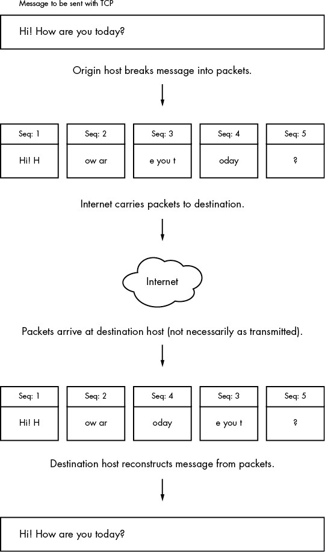
Figure 9-4: Sending a message with TCP
One example of an application that uses UDP is the Network Time Protocol (NTP). A client sends a short and simple request to a server to get the current time, and the response from the server is equally brief. Because the client wants the response as quickly as possible, UDP suits the application; if the response from the server gets lost somewhere in the network, the client can just resend a request or give up. Another example is video chat. In this case, pictures are sent with UDP, and if some pieces get lost along the way, the client on the receiving end compensates the best it can.
NOTE
The rest of this chapter deals with more advanced networking topics, such as network filtering and routers, as they relate to the lower network layers that we’ve already seen: physical, network, and transport. If you like, feel free to skip ahead to the next chapter to see the application layer where everything comes together in user space. You’ll see processes that actually use the network rather than just throwing around a bunch of addresses and packets.
9.18 Revisiting a Simple Local Network
Now we’ll look at additional components of the simple network introduced in Section 9.4. This network consists of one LAN as a subnet and a router that connects the subnet to the rest of the internet. You’ll learn the following:
- How a host on the subnet automatically gets its network configuration
- How to set up routing
- What a router really is
- How to know which IP addresses to use for the subnet
- How to set up firewalls to filter out unwanted traffic from the internet
For the most part, we’ll concentrate on IPv4 (if for no other reason than that the addresses are easier to read), but when IPv6 differs, you’ll see how.
Let’s start by looking at how a host on the subnet automatically gets its network configuration.
9.19 Understanding DHCP
Under IPv4, when you set a network host to get its configuration automatically from the network, you’re telling it to use the Dynamic Host Configuration Protocol (DHCP) to get an IP address, subnet mask, default gateway, and DNS servers. Aside from not having to enter these parameters by hand, network administrators gain other advantages with DHCP, such as preventing IP address clashes and minimizing the impact of network changes. It’s very rare to see a network that doesn’t use DHCP.
For a host to get its configuration with DHCP, it must be able to send messages to a DHCP server on its connected network. Therefore, each physical network should have its own DHCP server, and on a simple network (such as the one in Section 9.1), the router usually acts as the DHCP server.
NOTE
When making an initial DHCP request, a host doesn’t even know the address of a DHCP server, so it broadcasts the request to all hosts (usually all hosts on its physical network).
When a machine asks a DHCP server to assign it an IP address, it’s really asking for a lease on an address for a certain amount of time. When the lease is up, a client can ask to renew the lease.
9.19.1 Linux DHCP Clients
Although there are many different kinds of network manager systems, there are only two DHCP clients that do the actual work of obtaining leases. The traditional standard client is the Internet Software Consortium (ISC) dhclient program. However, systemd-networkd now also includes a built-in DHCP client.
Upon startup, dhclient stores its process ID in /var/run/dhclient.pid and its lease information in /var/lib/dhcp/dhclient.leases.
You can test dhclient by hand on the command line, but before doing so you must remove any default gateway route (see Section 9.11.2). To run the test, simply specify the network interface name (here, it’s enp0s31f6):
# dhclient enp0s31f6
Unlike dhclient, the systemd-networkd DHCP client can’t be run by hand on the command line. The configuration, described the systemd.network(5) manual page, is in /etc/systemd/network, but like other kinds of network configuration, can be automatically generated by Netplan.
9.19.2 Linux DHCP Servers
You can task a Linux machine with running a DHCP server, which provides a good amount of control over the addresses it gives out. However, unless you’re administering a large network with many subnets, you’re probably better off using specialized router hardware that includes built-in DHCP servers.
Probably the most important thing to know about DHCP servers is that you want only one running on the same subnet in order to avoid problems with clashing IP addresses or incorrect configurations.
9.20 Automatic IPv6 Network Configuration
DHCP works acceptably well in practice, but it relies on certain assumptions, including that there will be a DHCP server available, that the server is correctly implemented and stable, and that it can track and maintain leases. Although there’s a version of DHCP for IPv6 called DHCPv6, there’s an alternative that’s far more common.
The IETF took advantage of the large IPv6 address space to devise a new way of network configuration that does not require a central server. This is called stateless configuration, because clients don’t need to store any data such as lease assignments.
Stateless IPv6 network configuration starts with the link-local network. Recall that this network includes the addresses prefixed fe80::/64. Because there are so many available addresses on the link-local network, a host can generate an address that is unlikely to be duplicated anywhere on the network. Furthermore, the network prefix is already fixed, so the host can broadcast to the network, asking if any other host on the network is using the address.
Once the host has a link-local address, it can determine a global address. It does so by listening for a router advertisement (RA) message that routers occasionally send on the link-local network. The RA message includes the global network prefix, the router IP address, and possibly DNS information. With that information, the host can attempt to fill in the interface ID part of the global address, similar to what it did with the link-local address.
Stateless configuration relies on a global network prefix at most 64 bits long (in other words, its netmask is /64 or lower).
NOTE
Routers also send RA messages in response to router solicitation messages from hosts. These, as well as a few other messages, are part of the ICMP protocol for IPv6 (ICMPv6).
9.21 Configuring Linux as a Router
Routers are just computers with more than one physical network interface. You can easily configure a Linux machine to be a router.
Let’s look at an example. Say you have two LAN subnets, 10.23.2.0/24 and 192.168.45.0/24. To connect them, you have a Linux router machine with three network interfaces: two for the LAN subnets and one for an internet uplink, as shown in Figure 9-5.
As you can see, this doesn’t look very different from the simple network example used in the rest of this chapter. The router’s IP addresses for the LAN subnets are 10.23.2.1 and 192.168.45.1. When those addresses are configured, the routing table looks something like this (the interface names might vary in practice; ignore the internet uplink for now):
# ip route show
10.23.2.0/24 dev enp0s31f6 proto kernel scope link src 10.23.2.1 metric 100
192.168.45.0/24 dev enp0s1 proto kernel scope link src 192.168.45.1 metric 100
Now let’s say that the hosts on each subnet have the router as their default gateway (10.23.2.1 for 10.23.2.0/24 and 192.168.45.1 for 192.168.45.0/24). If 10.23.2.4 wants to send a packet to anything outside of 10.23.2.0/24, it passes the packet to 10.23.2.1. For example, to send a packet from 10.23.2.4 (Host A) to 192.168.45.61 (Host E), the packet goes to 10.23.2.1 (the router) via its enp0s31f6 interface, then back out through the router’s enp0s1 interface.
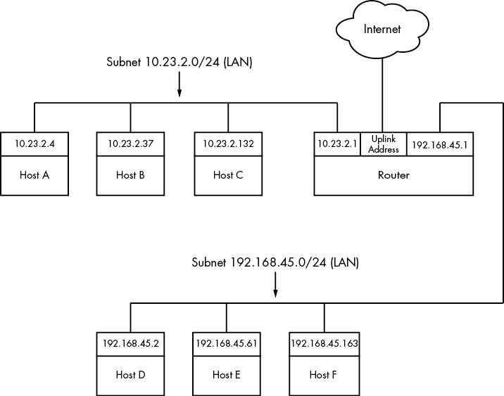
Figure 9-5: Two subnets joined with a router
However, in some basic configurations, the Linux kernel does not automatically move packets from one subnet to another. To enable this basic routing function, you need to enable IP forwarding in the router’s kernel with this command:
# sysctl -w net.ipv4.ip_forward=1
As soon as you enter this command, the machine should start routing packets between subnets, assuming that the hosts on those subnets know to send their packets to the router you just created.
NOTE
You can check the status of IP forwarding with the sysctl net.ipv4.ip_forward command.
To make this change permanent upon reboot, you can add it to your /etc/sysctl.conf file. Depending on your distribution, you may have the option to put it into a file in /etc/sysctl.d so that distribution updates won’t overwrite your changes.
When the router also has the third network interface with an internet uplink, this same setup allows internet access for all hosts on both subnets because they’re configured to use the router as the default gateway. But that’s where things get more complicated. The problem is that certain IPv4 addresses such as 10.23.2.4 are not actually visible to the whole internet; they’re on so-called private networks. To provide for internet connectivity, you must set up a feature called Network Address Translation (NAT) on the router. The software on nearly all specialized routers does this, so there’s nothing out of the ordinary here, but let’s examine the problem of private networks in a bit more detail.
9.22 Private Networks (IPv4)
Say you decide to build your own network. You have your machines, router, and network hardware ready. Given what you know about a simple network so far, your next question is, “What IP subnet should I use?”
If you want a block of internet addresses that every host on the internet can see, you can buy one from your ISP. However, because the range of IPv4 addresses is very limited, this costs a lot and isn’t useful for much more than running a server that the rest of the internet can see. Most people don’t really need this kind of service because they access the internet as a client.
The conventional, inexpensive alternative is to pick a private subnet from the addresses in the RFC 1918/6761 internet standards documents, shown in Table 9-2.
Table 9-2: Private Networks Defined by RFC 1918 and 6761
| Network | Subnet mask | CIDR form |
| 10.0.0.0 | 255.0.0.0 | 10.0.0.0/8 |
| 192.168.0.0 | 255.255.0.0 | 192.168.0.0/16 |
| 172.16.0.0 | 255.240.0.0 | 172.16.0.0/12 |
You can carve up private subnets as you wish. Unless you plan to have more than 254 hosts on a single network, pick a small subnet like 10.23.2.0/24, as we’ve been using throughout this chapter. (Networks with this netmask are sometimes called class C subnets. Although the term is technically obsolete, it’s still useful.)
What’s the catch? Hosts on the real internet know nothing about private subnets and won’t send packets to them, so without some help, hosts on private subnets can’t talk to the outside world. A router connected to the internet (with a true, nonprivate address) needs to have some way to fill in the gap between that connection and the hosts on a private network.
9.23 Network Address Translation (IP Masquerading)
NAT is the most commonly used way to share a single IP address with a private network, and it’s nearly universal in home and small office networks. In Linux, the variant of NAT that most people use is known as IP masquerading.
The basic idea behind NAT is that the router doesn’t just move packets from one subnet to another; it transforms them as it moves them. Hosts on the internet know how to connect to the router, but they know nothing about the private network behind it. The hosts on the private network need no special configuration; the router is their default gateway.
The system works roughly like this:
- A host on the internal private network wants to make a connection to the outside world, so it sends its connection request packets through the router.
- The router intercepts the connection request packet rather than passing it out to the internet (where it would get lost because the public internet knows nothing about private networks).
- The router determines the destination of the connection request packet and opens its own connection to the destination.
- When the router obtains the connection, it fakes a “connection established” message back to the original internal host.
- The router is now the middleman between the internal host and the destination. The destination knows nothing about the internal host; the connection on the remote host looks like it came from the router.
This isn’t quite as simple as it sounds. Normal IP routing knows only source and destination IP addresses in the internet layer. However, if the router dealt only with the internet layer, each host on the internal network could establish only one connection to a single destination at a time (among other limitations), because there is no information in the internet layer part of a packet to distinguish among multiple requests from the same host to the same destination. Therefore, NAT must go beyond the internet layer and dissect packets to pull out more identifying information, particularly the UDP and TCP port numbers from the transport layers. UDP is fairly easy because there are ports but no connections, but the TCP transport layer is complex.
In order to set up a Linux machine to perform as a NAT router, you must activate all of the following inside the kernel configuration: network packet filtering (“firewall support”), connection tracking, iptables support, full NAT, and MASQUERADE target support. Most distribution kernels come with this support.
Next you need to run some complex-looking iptables commands to make the router perform NAT for its private subnet. Here’s an example that applies to an internal Ethernet network on enp0s2 sharing an external connection at enp0s31f6 (you’ll learn more about the iptables syntax in Section 9.25):
# sysctl -w net.ipv4.ip_forward=1
# iptables -P FORWARD DROP
# iptables -t nat -A POSTROUTING -o enp0s31f6 -j MASQUERADE
# iptables -A FORWARD -i enp0s31f6 -o enp0s2 -m state --state ESTABLISHED,RELATED -j ACCEPT
# iptables -A FORWARD -i enp0s2 -o enp0s31f6 -j ACCEPT
You likely won’t ever need to manually enter these commands unless you’re developing your own software, especially with so much special-purpose router hardware available. However, a variety of virtualization software can set up NAT for use in networking for virtual machines and containers.
Although NAT works well in practice, remember that it’s essentially a hack that extends the lifetime of the IPv4 address space. IPv6 does not need NAT, thanks to its larger and more sophisticated address space described in Section 9.7.
9.24 Routers and Linux
In the early days of broadband, users with less demanding needs simply connected their machine directly to the internet. But it didn’t take long for many users to want to share a single broadband connection with their own networks, and Linux users in particular would often set up an extra machine to use as a router running NAT.
Manufacturers responded to this new market by offering specialized router hardware consisting of an efficient processor, some flash memory, and several network ports—with enough power to manage a typical simple network, run important software such as a DHCP server, and use NAT. When it came to software, many manufacturers turned to Linux to power their routers. They added the necessary kernel features, stripped down the user-space software, and created GUI-based administration interfaces.
Almost as soon as the first of these routers appeared, many people became interested in digging deeper into the hardware. One manufacturer, Linksys, was required to release the source code for its software under the terms of the license of one of its components, and soon specialized Linux distributions such as OpenWRT appeared for routers. (The “WRT” in these names came from the Linksys model number.)
Aside from the hobbyist aspect, there are good reasons to install these distributions on routers. They’re often more stable than the manufacturer firmware, especially on older router hardware, and they typically offer additional features. For example, to bridge a network with a wireless connection, many manufacturers require you to buy matching hardware, but with OpenWRT installed, the manufacturer and age of the hardware don’t really matter. This is because you’re using a truly open operating system on the router that doesn’t care what hardware you use as long as your hardware is supported.
You can use much of the knowledge in this book to examine the internals of custom Linux firmware, though you’ll encounter differences, especially when logging in. As with many embedded systems, open firmware tends to use BusyBox to provide many shell features. BusyBox is a single executable program that offers limited functionality for many Unix commands such as the shell, ls, grep, cat, and more. (This saves a significant amount of memory.) In addition, the boot-time init tends to be very simple on embedded systems. However, you typically won’t find these limitations to be a problem, because custom Linux firmware often includes a web administration interface similar to what you’d see from a manufacturer.
9.25 Firewalls
Routers should always include some kind of firewall to keep undesirable traffic out of your network. A firewall is a software and/or hardware configuration that usually sits on a router between the internet and a smaller network, attempting to ensure that nothing “bad” from the internet harms the smaller network. You can also set up firewall features on any host to screen all incoming and outgoing data at the packet level (as opposed to at the application layer, where server programs usually try to perform some access control of their own). Firewalling on individual machines is sometimes called IP filtering.
A system can filter packets when it receives a packet, sends a packet, or forwards (routes) a packet to another host or gateway.
With no firewalling in place, a system just processes packets and sends them on their way. Firewalls put checkpoints for packets at the points of data transfer just identified. The checkpoints drop, reject, or accept packets, usually based on some of these criteria:
- The source or destination IP address or subnet
- The source or destination port (in the transport layer information)
- The firewall’s network interface
Firewalls provide an opportunity to work with the subsystem of the Linux kernel that processes IP packets. Let’s look at that now.
9.25.1 Linux Firewall Basics
In Linux, you create firewall rules in a series known as a chain. A set of chains makes up a table. As a packet moves through the various parts of the Linux networking subsystem, the kernel applies the rules in certain chains to the packets. For example, a new packet arriving from the physical layer is classified by the kernel as “input,” so it activates rules in chains corresponding to input.
All of these data structures are maintained by the kernel. The whole system is called iptables, with an iptables user-space command to create and manipulate the rules.
NOTE
There’s a newer system called nftables that is meant to replace iptables, but as of this writing, iptables is still the most widely used system. The command to administer nftables is nft, and there’s an iptables-to-nftables translator called iptables-translate for the iptables commands shown in this book. To make things even more complicated, a system called bpfilter has been recently introduced with a different approach. Try not to get bogged down with the specifics of commands—it’s the effects that matter.
Because there can be many tables—each with its own sets of chains, which in turn can contain many rules—packet flow can become quite complicated. However, you’ll normally work primarily with a single table named filter that controls basic packet flow. There are three basic chains in the filter table: INPUT for incoming packets, OUTPUT for outgoing packets, and FORWARD for routed packets.
Figures 9-6 and 9-7 show simplified flowcharts for where rules are applied to packets in the filter table. There are two figures because packets can either come into the system from a network interface (Figure 9-6) or be generated by a local process (Figure 9-7).
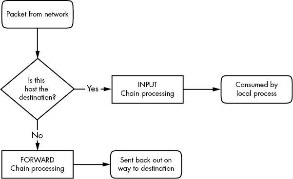
Figure 9-6: Chain-processing sequence for incoming packets from a network
Figure 9-7: Chain-processing sequence for incoming packets from a local process
As you can see, an incoming packet from the network can be consumed by a user process and may not reach the FORWARD chain or the OUTPUT chain. Packets generated by user processes won’t reach the INPUT or FORWARD chains.
This gets more complicated because there are many steps along the way other than just these three chains. For example, packets are subject to PREROUTING and POSTROUTING chains, and chain processing can also occur at any of the three lower network levels. For a big diagram of everything that’s going on, search the internet for “Linux netfilter packet flow,” but remember that these diagrams try to include every possible scenario for packet input and flow. It often helps to break the diagrams down by packet source, as in Figures 9-6 and 9-7.
9.25.2 Setting Firewall Rules
Let’s look at how the iptables system works in practice. Start by viewing the current configuration with this command:
# iptables -L
The output is usually an empty set of chains, as follows:
Chain INPUT (policy ACCEPT)
target prot opt source destination
Chain FORWARD (policy ACCEPT)
target prot opt source destination
Chain OUTPUT (policy ACCEPT)
target prot opt source destination
Each firewall chain has a default policy that specifies what to do with a packet if no rule matches the packet. The policy for all three chains in this example is ACCEPT, meaning that the kernel allows the packet to pass through the packet-filtering system. The DROP policy tells the kernel to discard the packet. To set the policy on a chain, use iptables -P like this:
# iptables -P FORWARD DROP
WARNING
Don’t do anything rash with the policies on your machine until you’ve read through the rest of this section.
Say that someone at 192.168.34.63 is annoying you. To prevent them from talking to your machine, run this command:
# iptables -A INPUT -s 192.168.34.63 -j DROP
The -A INPUT parameter appends a rule to the INPUT chain. The -s 192.168.34.63 part specifies the source IP address in the rule, and -j DROP tells the kernel to discard any packet matching the rule. Therefore, your machine will throw out any packet coming from 192.168.34.63.
To see the rule in place, run iptables -L again:
Chain INPUT (policy ACCEPT)
target prot opt source destination
DROP all -- 192.168.34.63 anywhere
Unfortunately, your friend at 192.168.34.63 has told everyone on his subnet to open connections to your SMTP port (TCP port 25). To get rid of that traffic as well, run:
# iptables -A INPUT -s 192.168.34.0/24 -p tcp --destination-port 25 -j DROP
This example adds a netmask qualifier to the source address as well as -p tcp to specify TCP packets only. A further restriction, --destination-port 25, says that the rule should apply only to traffic to port 25. The IP table list for INPUT now looks like this:
Chain INPUT (policy ACCEPT)
target prot opt source destination
DROP all -- 192.168.34.63 anywhere
DROP tcp -- 192.168.34.0/24 anywhere tcp dpt:smtp
All is well until you hear from someone you know at 192.168.34.37 saying that she can’t send you email because you blocked her machine. Thinking this is a quick fix, you run this command:
# iptables -A INPUT -s 192.168.34.37 -j ACCEPT
However, it doesn’t work. To see why, look at the new chain:
Chain INPUT (policy ACCEPT)
target prot opt source destination
DROP all -- 192.168.34.63 anywhere
DROP tcp -- 192.168.34.0/24 anywhere tcp dpt:smtp
ACCEPT all -- 192.168.34.37 anywhere
The kernel reads the chain from top to bottom, using the first rule that matches.
The first rule does not match 192.168.34.37, but the second does, because it applies to all hosts from 192.168.34.1 to 192.168.34.254 and this second rule says to drop packets. When a rule matches, the kernel carries out the action and looks no further down in the chain. (You might notice that 192.168.34.37 can send packets to any port on your machine except port 25 because the second rule applies only to port 25.)
The solution is to move the third rule to the top. First, delete the third rule with this command:
# iptables -D INPUT 3
Then insert that rule at the top of the chain with iptables -I:
# iptables -I INPUT -s 192.168.34.37 -j ACCEPT
To insert a rule elsewhere in a chain, put the rule number after the chain name (for example, iptables -I INPUT 4 ...).
9.25.3 Firewall Strategies
Although the preceding tutorial showed you how to insert rules and how the kernel processes IP chains, you haven’t seen firewall strategies that actually work. Let’s talk about that now.
There are two basic kinds of firewall scenarios: one for protecting individual machines (where you set rules in each machine’s INPUT chain) and one for protecting a network of machines (where you set rules in the router’s FORWARD chain). In both cases, you can’t have serious security if you use a default policy of ACCEPT and continuously insert rules to drop packets from sources that start to send bad stuff. You must allow only the packets that you trust, and deny everything else.
For example, say your machine has an SSH server on TCP port 22. There’s no reason for any random host to initiate a connection to any other port on your machine, and you shouldn’t give any such host a chance. To set that up, first set the INPUT chain policy to DROP:
# iptables -P INPUT DROP
To enable ICMP traffic (for ping and other utilities), use this line:
# iptables -A INPUT -p icmp -j ACCEPT
Make sure that you can receive packets you send to both your own network IP address and 127.0.0.1 (localhost). Assuming your host’s IP address is my_addr, do this:
# iptables -A INPUT -s 127.0.0.1 -j ACCEPT
# iptables -A INPUT -s my_addr -j ACCEPT
WARNING
Don’t run these commands one by one on a machine to which you only have remote access. The very first DROP command will instantly block your access, and you won’t be able to regain access until you intervene (for example, by rebooting the machine).
If you control your entire subnet (and trust everything on it), you can replace my_addr with your subnet address and subnet mask—for example, 10.23.2.0/24.
Now, although you still want to deny incoming TCP connections, you still need to make sure that your host can make TCP connections to the outside world. Because all TCP connections start with a SYN (connection request) packet, if you let all TCP packets through that aren’t SYN packets, you’re still okay:
# iptables -A INPUT -p tcp '!' --syn -j ACCEPT
The ! symbol indicates a negation, so ! --syn matches any non-SYN packet.
Next, if you’re using remote UDP-based DNS, you must accept traffic from your name server so that your machine can look up names with DNS. Do this for all DNS servers in /etc/resolv.conf. Use this command (where the name server’s address is ns_addr):
# iptables -A INPUT -p udp --source-port 53 -s ns_addr -j ACCEPT
And finally, allow SSH connections from anywhere:
# iptables -A INPUT -p tcp --destination-port 22 -j ACCEPT
The preceding iptables settings work for many situations, including any direct connection (especially broadband) where an intruder is much more likely to port-scan your machine. You could also adapt these settings for a firewalling router by using the FORWARD chain instead of INPUT and using source and destination subnets where appropriate. For more advanced configurations, you may find a configuration tool such as Shorewall to be helpful.
This discussion has only touched on security policy. Remember that the key idea is to permit only the things that you find acceptable, not to try to find and exclude the bad stuff. Furthermore, IP firewalling is only one piece of the security picture. (You’ll see more in the next chapter.)
9.26 Ethernet, IP, ARP, and NDP
There is one basic detail in the implementation of IP over Ethernet that we have yet to cover. Recall that a host must place an IP packet inside an Ethernet frame in order to transmit the packet across the physical layer to another host. Recall, too, that frames themselves do not include IP address information; they use MAC (hardware) addresses. The question is this: When constructing the Ethernet frame for an IP packet, how does the host know which MAC address corresponds to the destination IP address?
We don’t normally think about this question much because networking software includes an automatic system of looking up MAC addresses. In IPv4, this is called Address Resolution Protocol (ARP). A host using Ethernet as its physical layer and IP as the network layer maintains a small table called an ARP cache that maps IP addresses to MAC addresses. In Linux, the ARP cache is in the kernel. To view your machine’s ARP cache, use the ip neigh command. (The “neigh” part will make sense when you see the IPv6 equivalent. The old command for working with the ARP cache is arp.)
$ ip -4 neigh
10.1.2.57 dev enp0s31f6 lladdr 1c:f2:9a:1e:88:fb REACHABLE
10.1.2.141 dev enp0s31f6 lladdr 00:11:32:0d:ca:82 STALE
10.1.2.1 dev enp0s31f6 lladdr 24:05:88:00:ca:a5 REACHABLE
We’re using the -4 option to restrict the output to IPv4. You can see the IP and hardware addresses for the hosts that the kernel knows about. The last field indicates the status of the entry in the cache. REACHABLE means that some communication with the host occurred recently, and STALE means that it’s been a while, and the entry should be refreshed.
When a machine boots, its ARP cache is empty. So how do these MAC addresses get in the cache? It all starts when the machine wants to send a packet to another host. If a target IP address is not in an ARP cache, the following steps occur:
- The origin host creates a special Ethernet frame containing an ARP request packet for the MAC address that corresponds to the target IP address.
- The origin host broadcasts this frame to the entire physical network for the target’s subnet.
- If one of the other hosts on the subnet knows the correct MAC address, it creates a reply packet and frame containing the address and sends it back to the origin. Often, the host that replies is the target host and is simply replying with its own MAC address.
- The origin host adds the IP-MAC address pair to the ARP cache and can proceed.
NOTE
Remember that ARP applies only to machines on local subnets. To reach destinations outside your subnet, your host sends the packet to the router, and it’s someone else’s problem after that. Of course, your host still needs to know the MAC address for the router, and it can use ARP to find it.
The only real problem you can have with ARP is that your system’s cache can get out of date if you’re moving an IP address from one network interface card to another because the cards have different MAC addresses (for example, when testing a machine). Unix systems invalidate ARP cache entries if there’s no activity after a while, so there shouldn’t be any trouble other than a small delay for invalidated data, but you can delete an ARP cache entry immediately with this command:
# ip neigh del host dev interface
The ip-neighbour(8) manual page explains how to manually set ARP cache entries, but you shouldn’t need to do this. Note the spelling.
NOTE
Don’t confuse ARP with Reverse Address Resolution Protocol (RARP). RARP transforms a MAC address back to a hostname or IP address. Before DHCP became popular, some diskless workstations and other devices used RARP to get their configuration, but RARP is rare today.
IPV6: NDP
You might be wondering why the commands manipulating the ARP cache don’t contain “arp” (or, if you’ve vaguely seen this stuff before, you might wonder why we aren’t using arp). In IPv6, there’s a new mechanism called Neighbor Discovery Protocol (NDP) used on the link-local network. The ip command unifies ARP from IPv4 and NDP from IPv6. NDP includes these two kinds of messages:
- Neighbor solicitation Used to obtain information about a link-local host, including the hardware address of the host.
- Neighbor advertisement Used to respond to a neighbor solicitation message.
There are several other components of NDP, including the RA messages that you saw in Section 9.20.
9.27 Wireless Ethernet
In principle, wireless Ethernet (“Wi-Fi”) networks aren’t much different from wired networks. Much like any wired hardware, they have MAC addresses and use Ethernet frames to transmit and receive data, and as a result the Linux kernel can talk to a wireless network interface much as it would a wired network interface. Everything at the network layer and above is the same; the main differences are additional components in the physical layer, such as frequencies, network IDs, and security features.
Unlike wired network hardware, which is very good at automatically adjusting to nuances in the physical setup without much fuss, wireless network configuration is much more open-ended. To get a wireless interface working properly, Linux needs additional configuration tools.
Let’s take a quick look at the additional components of wireless networks.
- Transmission details These are physical characteristics, such as the radio frequency.
- Network identification Because more than one wireless network can share the same basic medium, you have to be able to distinguish between them. The Service Set Identifier (SSID, also known as the “network name”) is the wireless network identifier.
- Management Although it’s possible to configure wireless networking to have hosts talk directly to each other, most wireless networks are managed by one or more access points that all traffic goes through. Access points often bridge a wireless network with a wired network, making both appear as one single network.
- Authentication You may want to restrict access to a wireless network. To do so, you can configure access points to require a password or other authentication key before they’ll even talk to a client.
- Encryption In addition to restricting the initial access to a wireless network, you normally want to encrypt all traffic that goes out across radio waves.
The Linux configuration and utilities that handle these components are spread out over a number of areas. Some are in the kernel; Linux features a set of wireless extensions that standardize user-space access to hardware. As far as user space goes, wireless configuration can get complicated, so most people prefer to use GUI frontends, such as the desktop applet for NetworkManager, to get things working. Still, it’s worth looking at a few of the things happening behind the scenes.
9.27.1 iw
You can view and change kernel space device and network configuration with a utility called iw. To use iw, you normally need to know the network interface name for the device, such as wlp1s0 (predictable device name) or wlan0 (traditional name). Here’s an example that dumps a scan of available wireless networks. (Expect a lot of output if you’re in an urban area.)
# iw dev wlp1s0 scan
NOTE
The network interface must be up for this command to work (if it’s not, run ifconfig wlp1s0 up), but because this is still in the physical layer, you don’t need to configure any network layer parameters, such as an IP address.
If the network interface has joined a wireless network, you can view the network details like this:
# iw dev wlp1s0 link
The MAC address in the output of this command is from the access point that you’re currently talking to.
NOTE
The iw command distinguishes between physical device names (such as phy0) and network interface names (such as wlp1s0) and allows you to change various settings for each. You can even create more than one network interface for a single physical device. However, in nearly all basic cases, you’ll just use the network interface name.
Use iw to connect a network interface to an unsecured wireless network as follows:
# iw wlp1s0 connect network_name
Connecting to secured networks is a different story. For the rather insecure Wired Equivalent Privacy (WEP) system, you can use the keys parameter with the iw connect command. However, you shouldn’t use WEP because it’s not secure, and you won’t find many networks that support it.
9.27.2 Wireless Security
For most wireless security setups, Linux relies on the wpa_supplicant daemon to manage both authentication and encryption for a wireless network interface. This daemon can handle the WPA2 and WPA3 (WiFi Protected Access; don’t use the older, insecure WPA) schemes of authentication, as well as nearly any kind of encryption technique used on wireless networks. When the daemon first starts, it reads a configuration file (by default, /etc/wpa_supplicant.conf) and attempts to identify itself to an access point and establish communication based on a given network name. The system is well documented; in particular, the wpa_supplicant(8) manual page is very detailed.
Running the daemon by hand every time you want to establish a connection is a lot of work. In fact, just creating the configuration file is tedious due to the number of possible options. To make matters worse, all of the work of running iw and wpa_supplicant simply allows your system to join a wireless physical network; it doesn’t even set up the network layer. And that’s where automatic network configuration managers such as NetworkManager take a lot of pain out of the process. Although they don’t do any of the work on their own, they know the correct sequence and required configuration for each step toward getting a wireless network operational.
9.28 Summary
As you’ve seen, understanding the positions and roles of the various network layers is critical to understanding how Linux networking operates and how to perform network configuration. Although we’ve covered only the basics, more advanced topics in the physical, network, and transport layers are similar to what you’ve seen here. Layers themselves are often subdivided, as you just saw with the various pieces of the physical layer in a wireless network.
A substantial amount of action that you’ve seen in this chapter happens in the kernel, with some basic user-space control utilities to manipulate the kernel’s internal data structures (such as routing tables). This is the traditional way of working with the network. However, as with many of the topics discussed in this book, some tasks aren’t suitable for the kernel due to their complexity and need for flexibility, and that’s where user-space utilities take over. In particular, NetworkManager monitors and queries the kernel and then manipulates the kernel configuration. Another example is support for dynamic routing protocols such as Border Gateway Protocol (BGP), which is used in large internet routers.
But you’re probably a little bit bored with network configuration by now. Let’s turn to using the network—the application layer.
10
NETWORK APPLICATIONS AND SERVICES
This chapter explores basic network applications—the clients and servers running in user space that reside at the application layer. Because this layer is at the top of the stack, close to end users, you may find this material more accessible than the material in Chapter 9. Indeed, you interact with network client applications such as web browsers every day.
To do their work, network clients connect to corresponding network servers. Unix network servers come in many forms. A server program can listen to a port on its own or through a secondary server. We’ll look at some common servers as well as tools that will help you understand and debug server operation.
Network clients use the operating system’s transport layer protocols and interfaces, so it’s important to understand the basics of the TCP and UDP transport layers. Let’s start looking at network applications by experimenting with a network client that uses TCP.
10.1 The Basics of Services
TCP services are among the easiest to understand because they are built upon simple, uninterrupted two-way data streams. Perhaps the best way to see how they work is to talk directly to an unencrypted web server on TCP port 80 to get an idea of how data moves across the connection. For example, run the following command to connect to the IANA documentation example web server:
$ telnet example.org 80
You should get a response like this, indicating a successful connection to the server:
Trying some address...
Connected to example.org.
Escape character is '^]'.
Now enter these two lines:
GET / HTTP/1.1Host: example.org
NOTE
HTTP 1.1, like its predecessor HTTP 1.0, shows its age; there are newer protocols in use such as HTTP/2, QUIC, and the emerging HTTP/3.
Press ENTER twice after the last line. The server should send a bunch of HTML text as a response. To terminate the connection, press CTRL-D.
This exercise demonstrates that:
- The remote host has a web server process listening on TCP port 80.
- telnet was the client that initiated the connection.
The reason you have to terminate the connection with CTRL-D is that, because most web pages need several requests to load, it makes sense to keep the connection open. If you explore web servers at the protocol level, you may find that this behavior varies. For example, many servers disconnect quickly if they do not receive a request soon after a connection opens.
NOTE
telnet was originally meant to enable logins to remote hosts. The client program may not be installed on your distribution by default, but is easily installed as an extra package. Although the telnet remote login server is completely insecure (as you will learn later), the telnet client can be useful for debugging remote services. telnet does not work with UDP or any transport layer other than TCP. If you’re looking for a general-purpose network client, consider netcat, described in Section 10.5.3.
10.2 A Closer Look
In the previous example, you manually interacted with a web server on the network with telnet, using the HTTP application layer protocol. Although you’d normally use a web browser to make this sort of connection, let’s take just one step up from telnet and use a command-line program that knows how to speak to the HTTP application layer. We’ll use the curl utility with a special option to record details about its communication:
$ curl --trace-ascii trace_file http://www.example.org/
NOTE
Your distribution may not have the curl package preinstalled, but you should have no trouble installing it if necessary.
You’ll get a lot of HTML output. Ignore it (or redirect it to /dev/null) and instead look at the newly created file trace_file. If the connection was successful, the first part of the file should look something like the following, at the point where curl attempts to establish the TCP connection to the server:
== Info: Trying 93.184.216.34...
== Info: TCP_NODELAY set
== Info: Connected to www.example.org (93.184.216.34) port 80 (#0)
Everything you’ve seen so far happens in the transport layer or below. However, if this connection succeeds, curl then tries to send the request (the “header”); this is where the application layer starts:
1 => Send header, 79 bytes (0x4f)2 0000: GET / HTTP/1.1
0010: Host: www.example.org
0027: User-Agent: curl/7.58.0
0040: Accept: */*
004d:
Line 1 is curl debugging output telling you what it will do next. The remaining lines show what curl sends to the server. The text in bold is what goes to the server; the hexadecimal numbers at the beginning are just debugging offsets curl adds to help you keep track of how much data was sent or received.
At 2, you can see that curl starts by issuing a GET command to the server (as you did with telnet), followed by some extra information for the server and an empty line. Next, the server sends a reply, first with its own header, shown here in bold:
<= Recv header, 17 bytes (0x11)
0000: HTTP/1.1 200 OK
<= Recv header, 22 bytes (0x16)
0000: Accept-Ranges: bytes<= Recv header, 12 bytes (0xc)
0000: Age: 17629
--snip--
Much like the previous output, the <= lines are debugging output, and 0000: precedes the lines of output to tell you the offsets (in curl, the header won’t count toward the offset; that’s why all of these lines begin with 0).
The header in the server’s reply can be fairly long, but at some point the server transitions from transmitting headers to sending the actual requested document, like this:
<= Recv header, 22 bytes (0x16)
0000: Content-Length: 1256
<= Recv header, 2 bytes (0x2)1 0000:
<= Recv data, 1256 bytes (0x4e8)
0000: <!doctype html>.<html>.<head>. <title>Example Domain</title>.
0040: . <meta charset="utf-8" />. <meta http-equiv="Content-type
--snip--
This output also illustrates an important property of the application layer. Even though the debugging output says Recv header and Recv data, implying that those are two different kinds of messages from the server, there’s no difference in how curl talked to the operating system to retrieve the two messages, in how the operating system handled them, or in how the network handled the packets underneath. The difference is entirely within the user-space curl application. curl knew that until this point it had been getting headers, but when it received a blank line 1, which signifies the end of headers in HTTP, it knew to interpret anything that followed as the requested document.
The same is true of the server sending this data. When sending the reply, the server’s operating system didn’t differentiate between header and document data; the distinctions happen inside the user-space server program.
10.3 Network Servers
Most network servers are like other server daemons on your system such as cron, except that they interact with network ports. In fact, syslogd, discussed in Chapter 7, accepts UDP packets on port 514 when started with the -r option.
Here are some other common network servers that you might find running on your system:
- httpd, apache, apache2, nginx Web servers
- sshd Secure shell daemon
- postfix, qmail, sendmail Mail servers
- cupsd Print server
- nfsd, mountd Network filesystem (file-sharing) daemons
- smbd, nmbd Windows file-sharing daemons (see Chapter 12)
- rpcbind Remote procedure call (RPC) portmap service daemon
One feature common to most network servers is that they usually operate as multiple processes. At least one process listens on a network port, and upon receiving a new incoming connection, the listening process uses fork() to create a child process, which is then responsible for the new connection. The child, often called a worker process, terminates when the connection is closed. Meanwhile, the original listening process continues to listen on the network port. This process allows a server to easily handle many connections without much trouble.
There are some exceptions to this model, however. Calling fork() adds a significant amount of system overhead. To avoid this, high-performance TCP servers such as the Apache web server may create a number of worker processes upon startup so they’re available to handle connections as needed. Servers that accept UDP packets don’t need to fork at all, as they don’t have connections to listen for; they simply receive data and react to it.
10.3.1 Secure Shell
Every network server program works a bit differently. To get hands-on experience with a server’s configuration and operation, let’s take a close look at the standalone secure shell (SSH) server. One of the most common network service applications, SSH is the de facto standard for remote access to a Unix machine. SSH is designed to allow secure shell logins, remote program execution, simple file sharing, and more—replacing the old, insecure telnet and rlogin remote-access systems with public-key cryptography for authentication and simpler ciphers for session data. Most ISPs and cloud providers require SSH for shell access to their services, and many Linux-based network appliances (such as network attached storage, or NAS, devices) provide access via SSH as well. OpenSSH (http://www.openssh.com/) is a popular free SSH implementation for Unix, and nearly all Linux distributions come with it preinstalled. The OpenSSH client program is ssh, and the server is sshd. There are two main SSH protocol versions: 1 and 2. OpenSSH supports only version 2, having dropped version 1 support due to vulnerabilities and lack of use.
Among its many useful capabilities and features, SSH does the following:
- Encrypts your password and all other session data, protecting you from snoopers.
- Tunnels other network connections, including those from X Window System clients. (You’ll learn more about X in Chapter 14.)
- Offers clients for nearly any operating system.
- Uses keys for host authentication.
NOTE
Tunneling is the process of packaging and transporting one network connection within another. The advantages of using SSH to tunnel X Window System connections are that SSH sets up the display environment for you, and it encrypts the X data inside the tunnel.
SSH does have a few disadvantages. For one, in order to set up an SSH connection, you need the remote host’s public key, and you don’t necessarily get it in a secure way (though you can check it manually to make sure you’re not being spoofed). For an overview of how several methods of cryptography work, get your hands on the book Serious Cryptography: A Practical Introduction to Modern Encryption (No Starch Press, 2017), by Jean-Philippe Aumasson. Two in-depth books on SSH are SSH Mastery: OpenSSH, PuTTY, Tunnels, and Keys, 2nd edition, by Michael W. Lucas (Tilted Windmill Press, 2018) and SSH, The Secure Shell: The Definitive Guide, 2nd edition, by Daniel J. Barrett, Richard E. Silverman, and Robert G. Byrnes (O’Reilly, 2005).
PUBLIC-KEY CRYPTOGRAPHY
We’ve been using the term public key without much context, so let’s step back and briefly discuss it in case you aren’t familiar with it. Until the 1970s, encryption algorithms were symmetric, requiring a message’s sender and recipient to have the same key. Breaking the code was a matter of stealing the key, and the more people who had it, the more opportunities there were for it to be compromised. But with public key cryptography, there are two keys: public and private. The public key can encrypt a message but not decrypt it; therefore, it doesn’t matter who has access to this key. Only the private key can decrypt a message from the public key. In most cases, it’s easier to protect the private key because there need only be one copy, and it doesn’t have to be transmitted.
Another application beyond encryption is authentication; there are ways to verify that someone holds a private key for a given public key without transmitting any keys.
10.3.2 The sshd Server
Running the sshd server to allow remote connections to your system requires a configuration file and host keys. Most distributions keep configurations in the /etc/ssh configuration directory and try to configure everything properly for you if you install their sshd package. (The server configuration filename sshd_config is easy to confuse with the client’s ssh_config setup file, so be careful.)
You shouldn’t need to change anything in sshd_config, but it never hurts to check. The file consists of key-value pairs, as shown in this fragment.
Port 22
#AddressFamily any
#ListenAddress 0.0.0.0
#ListenAddress ::
#HostKey /etc/ssh/ssh_host_rsa_key
#HostKey /etc/ssh/ssh_host_ecdsa_key
#HostKey /etc/ssh/ssh_host_ed25519_key
Lines beginning with # are comments, and many comments in your sshd_config indicate default values for various parameters, as you can see from this excerpt. The sshd_config(5) manual page contains descriptions of the parameters and possible values, but these are among the most important:
- HostKey file Uses file as a host key. (Host keys are described next.)
- PermitRootLogin value Permits the superuser to log in with SSH if value is set to yes. Set value to no to prevent this.
- LogLevel level Logs messages with syslog level level (defaults to INFO).
- SyslogFacility name Logs messages with syslog facility name (defaults to AUTH).
- X11Forwarding value Enables X Window System client tunneling if value is set to yes.
- XAuthLocation path Specifies the location of the xauth utility on your system. X tunneling will not work without this path. If xauth isn’t in /usr/bin, set path to the full pathname for xauth.
Creating Host Keys
OpenSSH has several host key sets. Each set has a public key (with a .pub file extension) and a private key (with no extension).
WARNING
Do not let anyone see a private key, even on your own system, because if someone obtains it, you’re at risk from intruders.
SSH version 2 has RSA and DSA keys. RSA and DSA are public key cryptography algorithms. The key filenames are given in Table 10-1.
Table 10-1: OpenSSH Key Files
| Filename | Key type |
| ssh_host_rsa_key | Private RSA key |
| ssh_host_rsa_key.pub | Public RSA key |
| ssh_host_dsa_key | Private DSA key |
| ssh_host_dsa_key.pub | Public DSA key |
Creating a key involves a numerical computation that generates both public and private keys. Normally you won’t need to create the keys because the OpenSSH installation program or your distribution’s installation script will do it for you, but you need to know how to do so if you plan to use programs like ssh-agent that provide authentication services without a password. To create SSH protocol version 2 keys, use the ssh-keygen program that comes with OpenSSH:
# ssh-keygen -t rsa -N '' -f /etc/ssh/ssh_host_rsa_key
# ssh-keygen -t dsa -N '' -f /etc/ssh/ssh_host_dsa_key
The SSH server and clients also use a key file, called ssh_known_hosts, to store public keys from other hosts. If you intend to use authentication based on a remote client’s identity, the server’s ssh_known_hosts file must contain the public host keys of all trusted clients. Knowing about the key files is handy if you’re replacing a machine. When installing a new machine from scratch, you can import the key files from the old machine to ensure that users don’t get key mismatches when connecting to the new one.
Starting the SSH Server
Although most distributions ship with SSH, they usually don’t start the sshd server by default. On Ubuntu and Debian, the SSH server is not installed on a new system; installing its package creates the keys, starts the server, and adds the server startup to the bootup configuration.
On Fedora, sshd is installed by default but turned off. To start sshd at boot, use systemctl like this:
# systemctl enable sshd
If you want to start the server immediately without rebooting, use:
# systemctl start sshd
Fedora normally creates any missing host key files upon the first sshd startup.
If you’re running another distribution, you likely won’t need to manually configure the sshd startup. However, you should know that there are two startup modes: standalone and on-demand. The standalone server is by far more common, and it’s just a matter of running sshd as root. The sshd server process writes its PID to /var/run/sshd.pid (of course, when run by systemd, it’s also tracked by its cgroup, as you saw in Chapter 6).
As an alternative, systemd can start sshd on demand through a socket unit. This usually isn’t a good idea, because the server occasionally needs to generate key files, and that process can take a long time.
10.3.3 fail2ban
If you set up an SSH server on your machine and open it up to the internet, you’ll quickly discover constant intrusion attempts. These brute-force attacks won’t succeed if your system is properly configured and you haven’t chosen stupid passwords. However, they will be annoying, consume CPU time, and unnecessarily clutter your logs.
To prevent this, you want to set up a mechanism to block repeated login attempts. As of this writing, the fail2ban package is the most popular way to do this; it’s simply a script that watches log messages. Upon seeing a certain number of failed requests from one host within a certain time frame, fail2ban uses iptables to create a rule to deny traffic from that host. After a specified period, during which the host has probably given up trying to connect, fail2ban removes the rule.
Most Linux distributions offer a fail2ban package with preconfigured defaults for SSH.
10.3.4 The SSH Client
To log in to a remote host, run:
$ ssh remote_username@remote_host
You may omit remote_username@ if your local username is the same as on remote_host. You can also run pipelines to and from an ssh command as shown in the following example, which copies a directory dir to another host:
$ tar zcvf - dir | ssh remote_host tar zxvf -
The global SSH client configuration file ssh_config should be in /etc/ssh, the same location as your sshd_config file. As with the server configuration file, the client configuration file has key-value pairs, but you shouldn’t need to change them.
The most frequent problem with using SSH clients occurs when an SSH public key in your local ssh_known_hosts or .ssh/known_hosts file does not match the key on the remote host. Bad keys cause errors or warnings like this:
@@@@@@@@@@@@@@@@@@@@@@@@@@@@@@@@@@@@@@@@@@@@@@@@@@@@@@@@@@@
@ WARNING: REMOTE HOST IDENTIFICATION HAS CHANGED! @
@@@@@@@@@@@@@@@@@@@@@@@@@@@@@@@@@@@@@@@@@@@@@@@@@@@@@@@@@@@
IT IS POSSIBLE THAT SOMEONE IS DOING SOMETHING NASTY!
Someone could be eavesdropping on you right now (man-in-the-middle attack)!
It is also possible that the RSA host key has just been changed.
The fingerprint for the RSA key sent by the remote host is
38:c2:f6:0d:0d:49:d4:05:55:68:54:2a:2f:83:06:11.
Please contact your system administrator.
Add correct host key in /home/user/.ssh/known_hosts to get rid of this message.1 Offending key in /home/user/.ssh/known_hosts:12
RSA host key for host has changed and you have requested
strict checking.
Host key verification failed.
This usually just means that the remote host’s administrator changed the keys (which often happens upon a hardware or cloud server upgrade), but it never hurts to check with the administrator if you’re not sure. In any case, the preceding message tells you that the bad key is in line 12 of a user’s known_hosts file 1.
If you don’t suspect foul play, just remove the offending line or replace it with the correct public key.
SSH File Transfer Clients
OpenSSH includes the file transfer programs scp and sftp, which are intended as replacements for the older, insecure programs rcp and ftp. You can use scp to transfer files to or from a remote machine to your machine or from one host to another. It works like the cp command. Here are a few examples.
Copy a file from a remote host to the current directory:
$ scp user@host:file .
Copy a file from the local machine to a remote host:
$ scp file user@host:dir
Copy a file from one remote host to a second remote host:
$ scp user1@host1:file user2@host2:dir
The sftp program works like the obsolete command-line ftp client, using get and put commands. The remote host must have an sftp-server program installed, which you can expect if the remote host also uses OpenSSH.
NOTE
If you need more features and flexibility than what scp and sftp offer (for example, if you frequently transfer large numbers of files), have a look at rsync, described in Chapter 12.
SSH Clients for Non-Unix Platforms
There are SSH clients for all popular operating systems. Which one should you choose? PuTTY is a good, basic Windows client that includes a secure file-copy program. macOS is based on Unix and includes OpenSSH.
10.4 Pre-systemd Network Connection Servers: inetd/xinetd
Before the widespread use of systemd and the socket units that you saw in Section 6.3.7, there were a handful of servers that provided a standard means of building a network service. Many minor network services are very similar in their connection requirements, so implementing standalone servers for every service can be inefficient. Each server must be separately configured to handle port listening, access control, and port configuration. These actions are performed in the same way for most services; only when a server accepts a connection is communication handled any differently.
One traditional way to simplify the use of servers is with the inetd daemon, a kind of superserver designed to standardize network port access and interfaces between server programs and network ports. After you start inetd, it reads its configuration file and then listens on the network ports defined in that file. As new network connections come in, inetd attaches a newly started process to the connection.
A newer version of inetd called xinetd offers easier configuration and better access control, but xinetd has almost entirely been phased out in favor of systemd. However, you might see it on an older system or one that does not use systemd.
TCP WRAPPERS: TCPD, /ETC/HOSTS.ALLOW, AND /ETC/HOSTS.DENY
Before lower-level firewalls such as iptables became popular, many administrators used the TCP wrapper library and daemon to control access to network services. In these implementations, inetd runs the tcpd program, which first looks at the incoming connection as well as the access control lists in the /etc/hosts.allow and /etc/hosts.deny files. The tcpd program logs the connection, and if it decides that the incoming connection is okay, it hands it to the final service program. You might encounter systems that still use the TCP wrapper system, but we won’t cover it in detail because it has largely fallen out of use.
10.5 Diagnostic Tools
Let’s look at a few diagnostic tools that are useful for poking around the application layer. Some dig into the transport and network layers, because everything in the application layer eventually maps down to something in those lower layers.
As discussed in Chapter 9, netstat is a basic network service debugging tool that can display a number of transport and network layer statistics. Table 10-2 reviews a few useful options for viewing connections.
Table 10-2: Useful Connection-Reporting Options for netstat
| Option | Description |
| -t | Prints TCP port information |
| -u | Prints UDP port information |
| -l | Prints listening ports |
| -a | Prints every active port |
| -n | Disables name lookups (speeds things up; also useful if DNS isn’t working) |
| -4, -6 | Limits the output to IP version 4 or 6 |
10.5.1 lsof
In Chapter 8, you learned that lsof not only can track open files, but can also list the programs currently using or listening to ports. For a complete list of such programs, run:
# lsof -i
When you run this command as a regular user, it shows only that user’s processes. When you run it as root, the output should look something like this, displaying a variety of processes and users:
COMMAND PID USER FD TYPE DEVICE SIZE/OFF NODE NAME
rpcbind 700 root 6u IPv4 10492 0t0 UDP *:sunrpc 1
rpcbind 700 root 8u IPv4 10508 0t0 TCP *:sunrpc (LISTEN)
avahi-dae 872 avahi 13u IPv4 21736375 0t0 UDP *:mdns 2
cupsd 1010 root 9u IPv6 42321174 0t0 TCP ip6-localhost:ipp (LISTEN) 3
ssh 14366 juser 3u IPv4 38995911 0t0 TCP thishost.local:55457-> 4 somehost.example.com:ssh (ESTABLISHED)
chromium- 26534 juser 8r IPv4 42525253 0t0 TCP thishost.local:41551-> 5 anotherhost.example.com:https (ESTABLISHED)
This example output shows users and process IDs for server and client programs, from the old-style RPC services at the top 1, to the multicast DNS service provided by avahi 2, to even an IPv6-ready printer service, cupsd 3. The last two entries show client connections: an SSH connection 4 and a secure web connection from the Chromium web browser 5. Because the output can be extensive, it’s usually best to apply a filter (as discussed in the following section).
The lsof program is like netstat in that it tries to reverse-resolve every IP address that it finds into a hostname, which slows down the output. Use the -n option to disable name resolution:
# lsof -n -i
You can also specify -P to disable /etc/services port name lookups.
Filtering by Protocol and Port
If you’re looking for a particular port (say, you know that a process is using a particular port and you want to know what that process is), use this command:
# lsof -i:port
The full syntax is as follows:
# lsof -iprotocol@host:port
The protocol, @host, and :port parameters are all optional and will filter the lsof output accordingly. As with most network utilities, host and port can be either names or numbers. For example, if you want to see connections only on TCP port 443 (the HTTPS port), use:
# lsof -iTCP:443
To filter based on IP version, use -i4 (IPv4) or -i6 (IPv6). You can add this as a separate option or just add the number in with more complex filters (for example, -i6TCP:443).
You can specify service names from /etc/services (as in -iTCP:ssh) instead of numbers.
Filtering by Connection Status
One particularly handy lsof filter is connection status. For example, to show only the processes listening on TCP ports, enter:
# lsof -iTCP -sTCP:LISTEN
This command gives you a good overview of the network server processes currently running on your system. However, because UDP servers don’t listen and don’t have connections, you’ll have to use -iUDP to view running clients as well as servers. This usually isn’t a problem, because you probably won’t have many UDP servers on your system.
10.5.2 tcpdump
Your system normally doesn’t bother with network traffic that isn’t addressed to one of its MAC addresses. If you need to see exactly what’s crossing your network, tcpdump puts your network interface card into promiscuous mode and reports on every packet that comes across. Entering tcpdump with no arguments produces output like the following, which includes an ARP request and web connection:
# tcpdump
tcpdump: listening on eth0
20:36:25.771304 arp who-has mikado.example.com tell duplex.example.com
20:36:25.774729 arp reply mikado.example.com is-at 0:2:2d:b:ee:4e
20:36:25.774796 duplex.example.com.48455 > mikado.example.com.www: S 3200063165:3200063165(0) win 5840 <mss 1460,sackOK,timestamp 38815804[|tcp]> (DF)
20:36:25.779283 mikado.example.com.www > duplex.example.com.48455: S 3494716463:3494716463(0) ack 3200063166 win 5792 <mss 1460,sackOK,timestamp 4620[|tcp]> (DF)
20:36:25.779409 duplex.example.com.48455 > mikado.example.com.www: . ack 1 win 5840 <nop,nop,timestamp 38815805 4620> (DF)
20:36:25.779787 duplex.example.com.48455 > mikado.example.com.www: P 1:427(426) ack 1 win 5840 <nop,nop,timestamp 38815805 4620> (DF)
20:36:25.784012 mikado.example.com.www > duplex.example.com.48455: . ack 427 win 6432 <nop,nop,timestamp 4620 38815805> (DF)
20:36:25.845645 mikado.example.com.www > duplex.example.com.48455: P 1:773(772) ack 427 win 6432 <nop,nop,timestamp 4626 38815805> (DF)
20:36:25.845732 duplex.example.com.48455 > mikado.example.com.www: . ack 773 win 6948 <nop,nop,timestamp 38815812 4626> (DF)
9 packets received by filter
0 packets dropped by kernel
You can tell tcpdump to be more specific by adding filters. You can filter based on source and destination hosts, networks, Ethernet addresses, protocols at many different layers in the network model, and much more. Among the many packet protocols that tcpdump recognizes are ARP, RARP, ICMP, TCP, UDP, IP, IPv6, AppleTalk, and IPX packets. For example, to tell tcpdump to output only TCP packets, run:
# tcpdump tcp
To see web packets and UDP packets, enter:
# tcpdump udp or port 80 or port 443
The keyword or specifies that the condition on either the left or right can be true to pass the filter. Similarly, the and keyword requires both conditions to be true.
NOTE
If you need to do a lot of packet sniffing, consider using a GUI alternative to tcpdump such as Wireshark.
Primitives
In the preceding examples, tcp, udp, and port 80 are basic elements of filters called primitives. The most important primitives are listed in Table 10-3.
Table 10-3: tcpdump Primitives
| Primitive | Packet specification |
| tcp | TCP packets |
| udp | UDP packets |
| ip | IPv4 packets |
| ip6 | IPv6 packets |
| port port | TCP and/or UDP packets to/from port port |
| host host | Packets to or from host |
| net network | Packets to or from network |
Operators
The or used earlier is an operator. tcpdump can use multiple operators (such as and and !), and you can group operators in parentheses. If you plan to do any serious work with tcpdump, make sure to read the pcap-filter(7) manual page, especially the section that describes the primitives.
NOTE
Be careful when using tcpdump. The tcpdump output shown earlier in this section includes only packet TCP (transport layer) and IP (internet layer) header information, but you can also make tcpdump print the entire packet contents. Even though most important network traffic is now encrypted over TLS, you shouldn’t snoop around on networks unless you own them or otherwise have permission.
10.5.3 netcat
If you need more flexibility in connecting to a remote host than a command like telnet host port allows, use netcat (or nc). netcat can connect to remote TCP/UDP ports, specify a local port, listen on ports, scan ports, redirect standard I/O to and from network connections, and more. To open a TCP connection to a port with netcat, run:
$ netcat host port
netcat terminates when the other side ends the connection, which can be confusing if you redirect standard input to netcat, because you might not get your prompt back after sending data (as opposed to almost any other command pipeline). You can end the connection at any time by pressing CTRL-C. (If you’d like the program and network connection to terminate based on the standard input stream, try the sock program instead.)
To listen on a particular port, run:
$ netcat -l port_number
If netcat is successful at listening on the port, it will wait for a connection, and upon establishing a connection, prints the output from that connection, and sends any standard input to the connection.
Here are some additional notes on netcat:
- There isn’t much debugging output by default. If something fails, netcat fails silently, but it does set an appropriate exit code. If you’d like some more information, add the -v (“verbose”) option.
- By default, the netcat client tries to connect with IPv4 and IPv6. However, in server mode, netcat defaults to IPv4. To force the protocol, use -4 for IPv4 and -6 for IPv6.
- The -u option specifies UDP instead of TCP.
10.5.4 Port Scanning
Sometimes you don’t even know what services the machines on your networks are offering or even which IP addresses are in use. The Network Mapper (Nmap) program scans all ports on a machine or network of machines looking for open ports, and it lists the ports it finds. Most distributions have an Nmap package, or you can get it at http://www.insecure.org/. (See the Nmap manual page and online resources for all that Nmap can do.)
When listing ports on your own machine, it often helps to run the Nmap scan from at least two points: from your own machine and from another one (possibly outside your local network). Doing so will give you an overview of what your firewall is blocking.
WARNING
If someone else controls the network that you want to scan with Nmap, ask for permission. Network administrators watch for port scans and usually disable access to machines that run them.
Run nmap host to run a generic scan on a host. For example:
$ nmap 10.1.2.2
Starting Nmap 5.21 ( http://nmap.org ) at 2015-09-21 16:51 PST
Nmap scan report for 10.1.2.2
Host is up (0.00027s latency).
Not shown: 993 closed ports
PORT STATE SERVICE
22/tcp open ssh
25/tcp open smtp
80/tcp open http
111/tcp open rpcbind
8800/tcp open unknown
9000/tcp open cslistener
9090/tcp open zeus-admin
Nmap done: 1 IP address (1 host up) scanned in 0.12 seconds
As you can see here, a number of services are open, many of which are not enabled by default on most distributions. In fact, the only one here that’s usually on by default is port 111, the rpcbind port.
Nmap is also capable of scanning ports over IPv6 if you add the -6 option. This can be a handy way of identifying services that do not support IPv6.
10.6 Remote Procedure Calls
What about the rpcbind service from the scan in the preceding section? RPC stands for remote procedure call (RPC), a system residing in the lower parts of the application layer. It’s designed to make it easier for programmers to build client/server network applications, where a client program calls functions that execute on a remote server. Each type of remote server program is identified by an assigned program number.
RPC implementations use transport protocols such as TCP and UDP, and they require a special intermediary service to map program numbers to TCP and UDP ports. The server is called rpcbind, and it must be running on any machine that wants to use RPC services.
To see what RPC services your computer has, run:
$ rpcinfo -p localhost
RPC is one of those protocols that just doesn’t want to die. The Network File System (NFS) and Network Information Service (NIS) systems use RPC, but they are completely unnecessary on standalone machines. But whenever you think that you’ve eliminated all need for rpcbind, something else comes up, such as File Access Monitor (FAM) support in GNOME.
10.7 Network Security
Because Linux is a very popular Unix flavor on the PC platform, and especially because it is widely used for web servers, it attracts many unpleasant characters who try to break into computer systems. Section 9.25 discussed firewalls, but that’s not really the whole story on security.
Network security attracts extremists—those who really like to break into systems (whether for fun or money) and those who come up with elaborate protection schemes and really like to swat away people trying to break into their systems. (This, too, can be very profitable.) Fortunately, you don’t need to know very much to keep your system safe. Here are a few basic rules of thumb:
- Run as few services as possible Intruders can’t break into services that don’t exist on your system. If you know what a service is and you’re not using it, don’t turn it on for the sole reason that you might want to use it “at some later point.”
- Block as much as possible with a firewall Unix systems have a number of internal services that you may not know about (such as TCP port 111 for the RPC port-mapping server), and no other system in the world should know about them. It can be very difficult to track and regulate the services on your system because many different kinds of programs listen on various ports. To keep intruders from discovering internal services on your system, use effective firewall rules and install a firewall at your router.
- Track the services that you offer to the internet If you run an SSH server, Postfix, or similar services, keep your software up to date and get appropriate security alerts. (See Section 10.7.2 for some online resources.)
- Use “long-term support” distribution releases for servers Security teams normally concentrate their work on stable, supported distribution releases. Development and testing releases such Debian Unstable and Fedora Rawhide receive much less attention.
- Don’t give an account on your system to anyone who doesn’t need one It’s much easier to gain superuser access from a local account than it is to break in remotely. In fact, given the huge base of software (and the resulting bugs and design flaws) available on most systems, it can be easy to gain superuser access to a system after you get to a shell prompt. Don’t assume that your friends know how to protect their passwords (or choose good passwords in the first place).
- Avoid installing dubious binary packages They can contain Trojan horses.
That’s the practical end of protecting yourself. But why is it important to do so? There are three basic kinds of network attacks that can be directed at a Linux machine:
- Full compromise This means getting superuser access (full control) of a machine. An intruder can accomplish this by trying a service attack, such as a buffer overflow exploit, or by taking over a poorly protected user account and then trying to exploit a poorly written setuid program.
- Denial-of-service (DoS) attack This prevents a machine from carrying out its network services or forces a computer to malfunction in some other way without the use of any special access. Normally, a DoS attack is just a flood of network requests, but it can also be an exploit of a flaw in a server program that causes a crash. These attacks are harder to prevent, but they are easier to respond to.
- Malware Linux users are mostly immune to malware such as email worms and viruses, simply because their email clients aren’t stupid enough to actually run programs sent in message attachments. But Linux malware does exist. Avoid downloading and installing executable software from places that you’ve never heard of.
10.7.1 Typical Vulnerabilities
There are two basic types of vulnerabilities to worry about: direct attacks and cleartext password sniffing. Direct attacks try to take over a machine without being terribly subtle. One of the most common is locating an unprotected or otherwise vulnerable service on your system. This can be as simple as a service that isn’t authenticated by default, such as an administrator account without a password. Once an intruder has access to one service on a system, they can use it to try to compromise the whole system. In the past, a common direct attack was the buffer overflow exploit, where a careless programmer doesn’t check the bounds of a buffer array. This has been mitigated somewhat by Address Space Layout Randomization (ASLR) techniques in the kernel and protective measures elsewhere.
A cleartext password sniffing attack captures passwords sent across the wire as clear text, or uses a password database populated from one of many data breaches. As soon as an attacker gets your password, it’s game over. From there, the assailant will inevitably try to gain superuser access locally (which, as mentioned before, is much easier than making a remote attack), try to use the machine as an intermediary for attacking other hosts, or both.
NOTE
If you need to run a service that offers no native support for encryption, try Stunnel (http://www.stunnel.org/), an encryption wrapper package much like TCP wrappers. Stunnel is especially good at wrapping services that you’d normally activate with systemd socket units or inetd.
Some services are chronic attack targets due to poor implementation and design. You should always deactivate the following services (they’re all quite dated at this point, and rarely activated by default on most systems):
- ftpd For whatever reason, all FTP servers seem plagued with vulnerabilities. In addition, most FTP servers use cleartext passwords. If you have to move files from one machine to another, consider an SSH-based solution or an rsync server.
- telnetd, rlogind, rexecd All of these services pass remote session data (including passwords) in cleartext form. Avoid them unless you have a Kerberos-enabled version.
10.7.2 Security Resources
Here are three good security resources:
- The SANS Institute (http://www.sans.org/) offers training, services, a free weekly newsletter listing the top current vulnerabilities, sample security policies, and more.
- The CERT Division of Carnegie Mellon University’s Software Engineering Institute (http://www.cert.org/) is a good place to look for the most severe problems.
- Insecure.org, a project from hacker and Nmap creator Gordon “Fyodor” Lyon (http://www.insecure.org/), is the place to go for Nmap and pointers to all sorts of network exploit-testing tools. It’s much more open and specific about exploits than are many other sites.
If you’re interested in network security, you should learn all about Transport Layer Security (TLS) and its predecessor, Secure Socket Layer (SSL). These user-space network levels are typically added to networking clients and servers to support network transactions through the use of public-key encryption and certificates. A good guide is Davies’ Implementing SSL/TLS Using Cryptography and PKI (Wiley, 2011) or Jean-Philippe Aumasson’s Serious Cryptography: A Practical Introduction to Modern Encryption (No Starch Press, 2017).
10.8 Looking Forward
If you’re interested in getting your hands dirty with some complicated network servers, some very common ones are the Apache or nginx web servers and the Postfix email server. In particular, web servers are easy to install and most distributions supply packages. If your machine is behind a firewall or NAT-enabled router, you can experiment with the configuration as much as you’d like without worrying about security.
Throughout the last few chapters, we’ve been gradually moving from kernel space into user space. Only a few utilities discussed in this chapter, such as tcpdump, interact with the kernel. The remainder of this chapter describes how sockets bridge the gap between the kernel’s transport layer and the user-space application layer. It’s more advanced material, of particular interest to programmers, so feel free to skip to the next chapter if you like.
10.9 Network Sockets
We’re now going to shift gears and look at how processes do the work of reading data from and writing data to the network. It’s easy enough for processes to read from and write to network connections that are already set up: all you need are some system calls, which you can read about in the recv(2) and send(2) manual pages. From the point of view of a process, perhaps the most important thing to know is how to access the network when using these system calls. On Unix systems, a process uses a socket to identify when and how it’s talking to the network. Sockets are the interface that processes use to access the network through the kernel; they represent the boundary between user space and kernel space. They’re often also used for interprocess communication (IPC).
There are different types of sockets because processes need to access the network in different ways. For example, TCP connections are represented by stream sockets (SOCK_STREAM, from a programmer’s point of view), and UDP connections are represented by datagram sockets (SOCK_DGRAM).
Setting up a network socket can be somewhat complicated because you need to account for socket type, IP addresses, ports, and transport protocol at particular times. However, after all of the initial details are sorted out, servers use certain standard methods to deal with incoming traffic from the network. The flowchart in Figure 10-1 shows how many servers handle connections for incoming stream sockets.
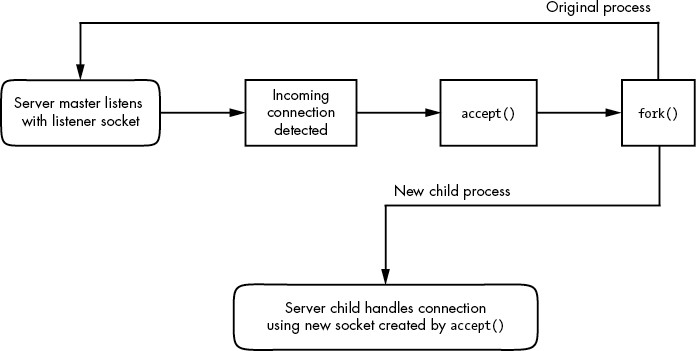
Figure 10-1: One method for accepting and processing incoming connections
Notice that this type of server involves two kinds of sockets: one for listening and one for reading and writing. The master process uses the listening socket to look for connections from the network. When a new connection comes in, the master process uses the accept() system call to accept the connection, which creates the read/write socket dedicated to that connection. Next, the master process uses fork() to create a new child process to deal with the connection. Finally, the original socket remains the listener and continues to look for more connections on behalf of the master process.
After a process has set up a socket of a particular type, it can interact with it in a way that fits the socket type. This is what makes sockets flexible: if you need to change the underlying transport layer, you don’t have to rewrite all of the parts that send and receive data; you mostly need to modify the initialization code.
If you’re a programmer and you’d like to learn how to use the socket interface, Unix Network Programming, Volume 1, 3rd edition, by W. Richard Stevens, Bill Fenner, and Andrew M. Rudoff (Addison-Wesley Professional, 2003), is the classic guide. Volume 2 also covers interprocess communication.
10.10 Unix Domain Sockets
Applications that use network facilities don’t have to involve two separate hosts. Many applications are built as client-server or peer-to-peer mechanisms, where processes running on the same machine use interprocess communication to negotiate what work needs to be done and who does it. For example, recall that daemons such as systemd and NetworkManager use D-Bus to monitor and react to system events.
Processes are capable of using regular IP networking over localhost (127.0.0.1 or ::1) to communicate with each other, but they typically use a special kind of socket called a Unix domain socket as an alternative. When a process connects to a Unix domain socket, it behaves almost exactly like it does with a network socket: it can listen for and accept connections on the socket, and you can even choose between different socket types to make it behave like TCP or UDP.
NOTE
Keep in mind that a Unix domain socket is not a network socket, and there’s no network behind one. You don’t even need networking to be configured to use one. Unix domain sockets don’t have to be bound to socket files, either. A process can create an unnamed Unix domain socket and share the address with another process.
Developers like Unix domain sockets for IPC for two reasons. First, they allow the option to use special socket files in the filesystem to control access, so any process that doesn’t have access to a socket file can’t use it. And because there’s no interaction with the network, it’s simpler and less prone to conventional network intrusion. For example, you’ll usually find the socket file for D-Bus in /var/run/dbus:
$ ls -l /var/run/dbus/system_bus_socket srwxrwxrwx 1 root root 0 Nov 9 08:52 /var/run/dbus/system_bus_socket
Second, because the Linux kernel doesn’t have to go through the many layers of its networking subsystem when working with Unix domain sockets, performance tends to be much better.
Writing code for Unix domain sockets isn’t much different from supporting normal network sockets. Because the benefits can be significant, some network servers offer communication through both network and Unix domain sockets. For example, the MySQL database server mysqld can accept client connections from remote hosts, but it usually also offers a Unix domain socket at /var/run/mysqld/mysqld.sock.
You can view a list of Unix domain sockets currently in use on your system with lsof -U:
# lsof -U
COMMAND PID USER FD TYPE DEVICE SIZE/OFF NODE NAME
mysqld 19701 mysql 12u unix 0xe4defcc0 0t0 35201227 /var/run/mysqld/mysqld.sock
chromium- 26534 juser 5u unix 0xeeac9b00 0t0 42445141 socket
tlsmgr 30480 postfix 5u unix 0xc3384240 0t0 17009106 socket
tlsmgr 30480 postfix 6u unix 0xe20161c0 0t0 10965 private/tlsmgr
--snip--
The listing will be quite long because many applications make extensive use of unnamed sockets, which are indicated by socket in the NAME output column.
11
INTRODUCTION TO SHELL SCRIPTS
If you can enter commands into the shell, you can write shell scripts. A shell script (also known as a Bourne shell script) is a series of commands written in a file; the shell reads the commands from the file just as it would if you typed them into a terminal.
11.1 Shell Script Basics
Bourne shell scripts generally start with the following line, which indicates that the /bin/sh program should execute the commands in the script file. (Make sure that there’s no whitespace at the beginning of the script file.)
#!/bin/sh
The #! part is called a shebang; you’ll see it in other scripts in this book. You can list any commands that you want the shell to execute following the #!/bin/sh line. For example:
#!/bin/sh
#
# Print something, then run ls
echo About to run the ls command.
ls
NOTE
With the exception of the shebang at the top of a script, a # character at the beginning of a line indicates a comment; that is, the shell ignores anything on the line after the #. Use comments to explain parts of your scripts that could be difficult to understand for others reading your code or to jog your own memory when you come back to the code later.
As with any program on Unix systems, you need to set the executable bit for a shell script file, but you must also set the read bit in order for the shell to be able to read the file. The easiest way to do this is as follows:
$ chmod +rx script
This chmod command allows other users to read and execute script. If you don’t want that, use the absolute mode 700 instead (and refer to Section 2.17 for a refresher on permissions).
After creating a shell script and setting read and execute permissions, you can run it by placing the script file in one of the directories in your command path and then running the script name on the command line. You can also run ./script if the script is located in your current working directory, or you can use the full pathname.
Running a script with a shebang is almost (but not quite) the same as running a command with your shell; for example, running a script called myscript causes the kernel to run /bin/sh myscript.
With the basics behind us, let’s look at some of the limitations of shell scripts.
NOTE
The shebang doesn’t have to be #!/bin/sh; it can be built to run anything on your system that accepts scripting input, such as #!/usr/bin/python to run Python programs. In addition, you might come across scripts with a different pattern that includes /usr/bin/env. For example, you might see something like #!/usr/bin/env python as the first line. This instructs the env utility to run python. The reason for this is fairly simple; env looks for the command to run in the current command path, so you don’t need a standardized location for the executable. The disadvantage is that the first matching executable in the command path might not be what you want.
11.1.1 Limitations of Shell Scripts
The Bourne shell manipulates commands and files with relative ease. In Section 2.14, you saw the way the shell can redirect output, one of the important elements of shell script programming. However, the shell script is only one tool for Unix programming, and although scripts have considerable power, they also have limitations.
One of the main strengths of shell scripts is that they can simplify and automate tasks that you can otherwise perform at the shell prompt, like manipulating batches of files. But if you’re trying to pick apart strings, perform repeated arithmetic computations, or access complex databases, or if you want functions and complex control structures, you’re better off using a scripting language like Python, Perl, or awk, or perhaps even a compiled language like C. (This is important, so you’ll see it throughout the chapter.)
Finally, be aware of your shell script sizes. Keep your shell scripts short. Bourne shell scripts aren’t meant to be big, though you will undoubtedly encounter some monstrosities.
11.2 Quoting and Literals
One of the most confusing elements of working with the shell and scripts is knowing when and why to use quotation marks (quotes) and other punctuation. Let’s say you want to print the string $100 and you do the following:
$ echo $100
00
Why did this print 00? Because $1 has a $ prefix, which the shell interprets as a shell variable (we’ll cover these soon). You think to yourself that maybe if you surround it with double quotes, the shell will leave the $1 alone:
$ echo "$100"
00
That still didn’t work. You ask a friend, who says that you need to use single quotes instead:
$ echo '$100'
$100
Why did this particular incantation work?
11.2.1 Literals
When you use quotes, you’re often trying to create a literal, a string that the shell should not analyze (or try to change) before passing it to the command line. In addition to the $ in the example that you just saw, this often comes up when you want to pass a * character to a command such as grep instead of having the shell expand it, and when you need to use a semicolon (;) in a command.
When writing scripts and working on the command line, remember what happens when the shell runs a command:
- Before running the command, the shell looks for variables, globs, and other substitutions and performs the substitutions if they appear.
- The shell passes the results of the substitutions to the command.
Problems involving literals can be subtle. Let’s say you’re looking for all entries in /etc/passwd that match the regular expression r.*t (that is, a line that contains an r followed by a t later in the line, which would enable you to search for usernames such as root and ruth and robot). You can run this command:
$ grep r.*t /etc/passwd
It works most of the time, but sometimes it mysteriously fails. Why? The answer is probably in your current directory. If that directory contains files with names such as r.input and r.output, then the shell expands r.*t to r.input r.output and creates this command:
$ grep r.input r.output /etc/passwd
The key to avoiding problems like this is to first recognize the characters that can get you in trouble and then apply the correct kind of quotes to protect those characters.
11.2.2 Single Quotes
The easiest way to create a literal and make the shell leave a string alone is to enclose the entire string in single quotes ('), as in this example with grep and the * character:
$ grep 'r.*t' /etc/passwd
As far as the shell is concerned, all characters between two single quotes, including spaces, make up a single parameter. Therefore, the following command does not work, because it asks the grep command to search for the string r.*t /etc/passwd in the standard input (because there’s only one parameter to grep):
$ grep 'r.*t /etc/passwd'
When you need to use a literal, you should always turn to single quotes first, because you’re guaranteed that the shell won’t try any substitutions. As a result, it’s a generally clean syntax. However, sometimes you need a little more flexibility, so you can turn to double quotes.
11.2.3 Double Quotes
Double quotes (") work just like single quotes, except that the shell expands any variables that appear within double quotes. You can see the difference by running the following command and then replacing the double quotes with single quotes and running it again.
$ echo "There is no * in my path: $PATH"
When you run the command, notice that the shell substitutes for $PATH but does not substitute for the *.
NOTE
If you’re using double quotes when working with large amounts of text, consider using a here document, as described in Section 11.9.
11.2.4 Literal Single Quotes
Using literals with the Bourne shell can be tricky when you’re passing a literal single quote to a command. One way to do this is to place a backslash before the single quote character:
$ echo I don\'t like contractions inside shell scripts.
The backslash and quote must appear outside any pair of single quotes. A string such as 'don\'t results in a syntax error. Oddly enough, you can enclose the single quote inside double quotes, as shown in the following example (the output is identical to that of the preceding command):
$ echo "I don't like contractions inside shell scripts."
If you’re in a bind and you need a general rule to quote an entire string with no substitutions, follow this procedure:
- Change all instances of ' (single quote) to '\'' (single quote, backslash, single quote, single quote).
- Enclose the entire string in single quotes.
Therefore, you can quote an awkward string such as this isn't a forward slash: \ as follows:
$ echo 'this isn'\''t a forward slash: \'
NOTE
It's worth repeating that when you quote a string, the shell treats everything inside the quotes as a single parameter. Therefore, a b c counts as three parameters, but a "b c" is only two.
11.3 Special Variables
Most shell scripts understand command-line parameters and interact with the commands that they run. To take your scripts from being just a simple list of commands to becoming more flexible shell script programs, you need to know how to use the special Bourne shell variables. These special variables are like any other shell variable as described in Section 2.8, except that you can’t change the values of certain ones.
NOTE
After reading the next few sections, you’ll understand why shell scripts accumulate many special characters as they are written. If you’re trying to understand a shell script and you come across a line that looks completely incomprehensible, pick it apart piece by piece.
11.3.1 Individual Arguments: $1, $2, and So On
$1, $2, and all variables named as positive nonzero integers contain the values of the script parameters, or arguments. For example, say the name of the following script is pshow:
#!/bin/sh
echo First argument: $1
echo Third argument: $3
Try running the script as follows to see how it prints the arguments:
$ ./pshow one two three
First argument: one
Third argument: three
The built-in shell command shift can be used with argument variables to remove the first argument ($1) and advance the rest of the arguments so that $2 becomes $1, $3 becomes $2, and so on. For example, assume that the name of the following script is shiftex:
#!/bin/sh
echo Argument: $1
shift
echo Argument: $1
shift
echo Argument: $1
Run it like this to see it work:
$ ./shiftex one two three Argument: one
Argument: two
Argument: three
As you can see, shiftex prints all three arguments by printing the first, shifting the remaining arguments, and repeating.
11.3.2 Number of Arguments: $#
The $# variable holds the number of arguments passed to a script and is especially important when you’re running shift in a loop to pick through arguments. When $# is 0, no arguments remain, so $1 is empty. (See Section 11.6 for a description of loops.)
11.3.3 All Arguments: $@
The $@ variable represents all of a script’s arguments and is very useful for passing them to a command inside the script. For example, Ghostscript commands (gs) are usually long and complicated. Suppose you want a shortcut for rasterizing a PostScript file at 150 dpi, using the standard output stream, while also leaving the door open for passing other options to gs. You could write a script like this to allow for additional command-line options:
#!/bin/sh
gs -q -dBATCH -dNOPAUSE -dSAFER -sOutputFile=- -sDEVICE=pnmraw $@
NOTE
If a line in your shell script gets too long , making it difficult to read and manipulate in your text editor, you can split it up with a backslash ( \). For example, you can alter the preceding script as follows:
#!/bin/sh
gs -q -dBATCH -dNOPAUSE -dSAFER \ -sOutputFile=- -sDEVICE=pnmraw $@
11.3.4 Script Name: $0
The $0 variable holds the name of the script and is useful for generating diagnostic messages. For example, say your script needs to report an invalid argument that is stored in the $BADPARM variable. You can print the diagnostic message with the following line so that the script name appears in the error message:
echo $0: bad option $BADPARM
All diagnostic error messages should go to the standard error. As explained in Section 2.14.1, 2>&1 redirects the standard error to the standard output. For writing to the standard error, you can reverse the process with 1>&2. To do this for the preceding example, use this:
echo $0: bad option $BADPARM 1>&2
11.3.5 Process ID: $$
The $$ variable holds the process ID of the shell.
11.3.6 Exit Code: $?
The $? variable holds the exit code of the last command that the shell executed. Exit codes, which are critical to mastering shell scripts, are discussed next.
11.4 Exit Codes
When a Unix program finishes, it leaves an exit code, a numeric value also known as an error code or exit value, for the parent process that started the program. When the exit code is zero (0), it typically means that the program ran without a problem. However, if the program has an error, it usually exits with a number other than 0 (but not always, as you’ll see next).
The shell holds the exit code of the last command in the $? special variable, so you can check it out at your shell prompt:
$ ls / > /dev/null
$ echo $?
0
$ ls /asdfasdf > /dev/null
ls: /asdfasdf: No such file or directory
$ echo $?
1
You can see that the successful command returned 0 and the unsuccessful command returned 1 (assuming, of course, that you don’t have a directory named /asdfasdf on your system).
If you intend to use a command’s exit code, you must use or store that code immediately after running the command (because the next command you run overwrites the previous code). For example, if you run echo $? twice in a row, the output of the second command is always 0 because the first echo command completes successfully.
When writing shell code, you may come across situations where your script needs to halt due to an error (such as a bad filename). Use exit 1 in your script to terminate and pass an exit code of 1 back to whatever parent process ran the script. (You can use different nonzero numbers if your script has various abnormal exit conditions.)
Note that some programs, like diff and grep, use nonzero exit codes to indicate normal conditions. For example, grep returns 0 if it finds something matching a pattern and 1 if it doesn’t. For these programs, an exit code of 1 is not an error, so grep and diff use the exit code 2 if they encounter an actual problem. If you think a program might be using a nonzero exit code to indicate success, read its manual page. The exit codes are usually explained in the EXIT VALUE or DIAGNOSTICS section.
11.5 Conditionals
The Bourne shell has special constructs for conditionals, including if/then/else and case statements. For example, this simple script with an if conditional checks to see whether the script’s first argument is hi:
#!/bin/sh
if [ $1 = hi ]; then echo 'The first argument was "hi"'
else echo -n 'The first argument was not "hi" -- ' echo It was '"'$1'"'
fi
The words if, then, else, and fi in the preceding script are shell keywords; everything else is a command. This distinction is extremely important because it’s easy to mistake the conditional, [ $1 = "hi" ], for special shell syntax. In fact, the [ character is an actual program on a Unix system. All Unix systems have a command called [ that performs tests for shell script conditionals. This program is also known as test; the manual pages for test and [ are the same. (You’ll soon learn that the shell doesn’t always run [, but for now you can think of it as a separate command.)
Here’s where it’s vital to understand the exit codes as explained in Section 11.4. Let’s look at how the previous script actually works:
- The shell runs the command after the if keyword and collects the exit code of that command.
- If the exit code is 0, the shell executes the commands that follow the then keyword, stopping when it reaches an else or fi keyword.
- If the exit code is not 0 and there’s an else clause, the shell runs the commands after the else keyword.
- The conditional ends at fi.
We’ve established that the test following if is a command, so let’s look at the semicolon (;). It’s just the regular shell marker for the end of a command, and it’s there because we put the then keyword on the same line. Without the semicolon, the shell passes then as a parameter to the [ command, which often results in an error that isn’t easy to track. You can avoid the semicolon by placing the then keyword on a separate line as follows:
if [ $1 = hi ]
then echo 'The first argument was "hi"'
fi
11.5.1 A Workaround for Empty Parameter Lists
There’s a potential problem with the conditional in the preceding example, due to a commonly overlooked scenario: $1 could be empty, because the user might run the script with no parameters. If $1 is empty, the test reads [ = hi ], and the [ command will abort with an error. You can fix this by enclosing the parameter in quotes in one of two common ways:
if [ "$1" = hi ]; then
if [ x"$1" = x"hi" ]; then
11.5.2 Other Commands for Tests
There are many possibilities for using commands other than [ for tests. Here’s an example that uses grep:
#!/bin/sh
if grep -q daemon /etc/passwd; then echo The daemon user is in the passwd file.
else echo There is a big problem. daemon is not in the passwd file.
fi
11.5.3 elif
There is also an elif keyword that lets you string if conditionals together, as shown here:
#!/bin/sh
if [ "$1" = "hi" ]; then echo 'The first argument was "hi"'
elif [ "$2" = "bye" ]; then echo 'The second argument was "bye"'
else echo -n 'The first argument was not "hi" and the second was not "bye"-- ' echo They were '"'$1'"' and '"'$2'"'
fi
Keep in mind that the control flows only through the first successful conditional, so if you run this script with the arguments hi bye, you’ll only get confirmation of the hi argument.
NOTE
Don’t get too carried away with elif, because the case construct (which you’ll see in Section 11.5.6) is often more appropriate.
11.5.4 Logical Constructs
There are two quick, one-line conditional constructs that you may see from time to time, using the && (“and”) and || (“or”) syntax. The && construct works like this:
command1 && command2
Here, the shell runs command1, and if the exit code is 0, the shell also runs command2.
The || construct is similar; if the command before a || returns a nonzero exit code, the shell runs the second command.
The constructs && and || are often used in if tests, and in both cases, the exit code of the last command run determines how the shell processes the conditional. In the case of the && construct, if the first command fails, the shell uses its exit code for the if statement, but if the first command succeeds, the shell uses the exit code of the second command for the conditional. In the case of the || construct, the shell uses the exit code of the first command if successful, or the exit code of the second if the first is unsuccessful.
For example:
#!/bin/sh
if [ "$1" = hi ] || [ "$1" = bye ]; then echo 'The first argument was "'$1'"'
fi
If your conditionals include the test command ([), as shown here, you can use -a and -o instead of && and ||, for example:
#!/bin/sh
if [ "$1" = hi -o "$1" = bye ]; then echo 'The first argument was "'$1'"'
fi
You can invert a test (that is, a logical not) by placing the ! operator before a test. For example:
#!/bin/sh
if [ ! "$1" = hi ]; then echo 'The first argument was not hi'
fi
In this specific case of comparisons, you might see != used as an alternative, but ! can be used with any of the condition tests described in the next section.
11.5.5 Testing Conditions
You’ve seen how [ works: the exit code is 0 if the test is true and nonzero when the test fails. You also know how to test string equality with [ str1 = str2 ]. However, remember that shell scripts are well suited to operations on entire files because many useful [ tests involve file properties. For example, the following line checks whether file is a regular file (not a directory or special file):
[ -f file ]
In a script, you might see the -f test in a loop similar to this one, which tests all of the items in the current working directory (you’ll learn more about loops in Section 11.6):
for filename in *; do if [ -f $filename ]; then ls -l $filename file $filename else echo $filename is not a regular file. fi
done
NOTE
Because the test command is so widely used in scripts, it’s built in to many versions of the Bourne shell (including bash). This can speed up scripts because the shell doesn’t have to run a separate command for each test.
There are dozens of test operations, all of which fall into three general categories: file tests, string tests, and arithmetic tests. The info manual contains complete online documentation, but the test(1) manual page is a fast reference. The following sections outline the main tests. (I’ve omitted some of the less common ones.)
File Tests
Most file tests, like -f, are called unary operations because they require only one argument: the file to test. For example, here are two important file tests:
- -e Returns true if a file exists
- -s Returns true if a file is not empty
Several operations inspect a file’s type, meaning that they can determine whether something is a regular file, a directory, or some kind of special device, as listed in Table 11-1. There are also a number of unary operations that check a file’s permissions, as listed in Table 11-2. (See Section 2.17 for an overview of permissions.)
Table 11-1: File Type Operators
| Operator | Tests for |
| -f | Regular file |
| -d | Directory |
| -h | Symbolic link |
| -b | Block device |
| -c | Character device |
| -p | Named pipe |
| -S | Socket |
NOTE
If the test command is used on a symbolic link, it tests the actual object being linked to, not the link itself (except for the -h test). That is, if link is a symbolic link to a regular file, [ -f link ] returns an exit code of true (0).
Table 11-2: File Permissions Operators
| Operator | Permission |
| -r | Readable |
| -w | Writable |
| -x | Executable |
| -u | Setuid |
| -g | Setgid |
| -k | “Sticky” |
Finally, three binary operators (tests that need two files as arguments) are used in file tests, but they’re not terribly common. Consider this command, which includes -nt (“newer than”):
[ file1 -nt file2 ]
This exits true if file1 has a newer modification date than file2. The -ot (“older than”) operator does the opposite. And if you need to detect identical hard links, -ef compares two files and returns true if they share inode numbers and devices.
String Tests
You’ve seen the binary string operator =, which returns true if its operands are equal, and the != operator that returns true if its operands are not equal. There are two additional unary string operations:
- -z Returns true if its argument is empty ([ -z "" ] returns 0)
- -n Returns true if its argument is not empty ([ -n "" ] returns 1)
Arithmetic Tests
Note that the equal sign (=) looks for string equality, not numeric equality. Therefore, [ 1 = 1 ] returns 0 (true), but [ 01 = 1 ] returns false. When working with numbers, use -eq instead of the equal sign: [ 01 -eq 1 ] returns true. Table 11-3 provides the full list of numeric comparison operators.
Table 11-3: Arithmetic Comparison Operators
| Operator | Returns true when the first argument is ___________ the second |
| -eq | equal to |
| -ne | not equal to |
| -lt | less than |
| -gt | greater than |
| -le | less than or equal to |
| -ge | greater than or equal to |
11.5.6 case
The case keyword forms another conditional construct that is exceptionally useful for matching strings. It does not execute any test commands and therefore does not evaluate exit codes. However, it can do pattern matching. This example tells most of the story:
#!/bin/sh
case $1 in bye) echo Fine, bye. ;; hi|hello) echo Nice to see you. ;; what*) echo Whatever. ;; *) echo 'Huh?' ;;
esac
The shell executes this as follows:
- The script matches $1 against each case value demarcated with the ) character.
- If a case value matches $1, the shell executes the commands below the case until it encounters ;;, at which point it skips to the esac keyword.
- The conditional ends with esac.
For each case value, you can match a single string (like bye in the preceding example) or multiple strings with | (hi|hello returns true if $1 equals hi or hello), or you can use the * or ? patterns (what*). To make a default case that catches all possible values other than the case values specified, use a single * as shown by the final case in the preceding example.
NOTE
End each case with a double semicolon (;;) to avoid a possible syntax error.
11.6 Loops
There are two kinds of loops in the Bourne shell: for and while loops.
11.6.1 for Loops
The for loop (which is a “for each” loop) is the most common. Here’s an example:
#!/bin/sh
for str in one two three four; do echo $str
done
In this listing, for, in, do, and done are all shell keywords. The shell does the following:
- Sets the variable str to the first of the four space-delimited values following the in keyword (one).
- Runs the echo command between the do and done.
- Goes back to the for line, setting str to the next value (two), runs the commands between do and done, and repeats the process until it’s through with the values following the in keyword.
The output of this script looks like this:
one
two
three
four
11.6.2 while Loops
The Bourne shell’s while loop uses exit codes, like the if conditional. For example, this script does 10 iterations:
#!/bin/sh
FILE=/tmp/whiletest.$$;
echo firstline > $FILE
while tail -10 $FILE | grep -q firstline; do # add lines to $FILE until tail -10 $FILE no longer prints "firstline" echo -n Number of lines in $FILE:' ' wc -l $FILE | awk '{print $1}' echo newline >> $FILE
done
rm -f $FILE
Here, the exit code of grep -q firstline is the test. As soon as the exit code is nonzero (in this case, when the string firstline no longer appears in the last 10 lines in $FILE), the loop exits.
You can break out of a while loop with the break statement. The Bourne shell also has an until loop that works just like while, except that it breaks the loop when it encounters a zero exit code rather than a nonzero exit code. This said, you shouldn’t need to use the while and until loops very often. In fact, if you find that you need to use while, you should probably be using a language more appropriate to your task, such as Python or awk.
11.7 Command Substitution
The Bourne shell can redirect a command’s standard output back to the shell’s own command line. That is, you can use a command’s output as an argument to another command, or you can store the command output in a shell variable by enclosing a command in $().
This example stores a command’s output inside the FLAGS variable. The bold code in the second line shows the command substitution.
#!/bin/sh
FLAGS=$(grep ^flags /proc/cpuinfo | sed 's/.*://' | head -1)
echo Your processor supports:
for f in $FLAGS; do case $f in fpu) MSG="floating point unit" ;; 3dnow) MSG="3DNOW graphics extensions" ;; mtrr) MSG="memory type range register" ;; *) MSG="unknown" ;; esac echo $f: $MSG
done
This example is somewhat complicated because it demonstrates that you can use both single quotes and pipelines inside the command substitution. The result of the grep command is sent to the sed command (more about sed in Section 11.10.3), which removes anything matching the expression .*:, and the result of sed is passed to head.
It’s easy to go overboard with command substitution. For example, don’t use $(ls) in a script, because using the shell to expand * is faster. Also, if you want to invoke a command on several filenames that you get as a result of a find command, consider using a pipeline to xargs rather than command substitution, or use the -exec option (both are discussed in Section 11.10.4).
NOTE
The traditional syntax for command substitution is to enclose the command in backticks (``), and you’ll see this in many shell scripts. The $() syntax is a newer form, but it is a POSIX standard and is generally easier (for humans) to read and write.
11.8 Temporary File Management
It’s sometimes necessary to create a temporary file to collect output for use by a later command. When creating such a file, make sure that the filename is distinct enough that no other programs will accidentally write to it. Sometimes using something as simple as the shell’s PID ($$) in a filename works, but when you need to be certain that there will be no conflicts, a utility such as mktemp is often a better option.
Here’s how to use the mktemp command to create temporary filenames. This script shows you the device interrupts that have occurred in the last two seconds:
#!/bin/sh
TMPFILE1=$(mktemp /tmp/im1.XXXXXX)
TMPFILE2=$(mktemp /tmp/im2.XXXXXX)
cat /proc/interrupts > $TMPFILE1
sleep 2
cat /proc/interrupts > $TMPFILE2
diff $TMPFILE1 $TMPFILE2
rm -f $TMPFILE1 $TMPFILE2
The argument to mktemp is a template. The mktemp command converts the XXXXXX to a unique set of characters and creates an empty file with that name. Notice that this script uses variable names to store the filenames so that you only have to change one line if you want to change a filename.
NOTE
Not all Unix flavors come with mktemp. If you’re having portability problems, it’s best to install the GNU coreutils package for your operating system.
A common problem with scripts that employ temporary files is that if the script is aborted, the temporary files could be left behind. In the preceding example, pressing CTRL-C before the second cat command leaves a temporary file in /tmp. Avoid this if possible. Instead, use the trap command to create a signal handler to catch the signal that CTRL-C generates and remove the temporary files, as in this handler:
#!/bin/sh
TMPFILE1=$(mktemp /tmp/im1.XXXXXX)
TMPFILE2=$(mktemp /tmp/im2.XXXXXX)
trap "rm -f $TMPFILE1 $TMPFILE2; exit 1" INT --snip--
You must use exit in the handler to explicitly end script execution, or the shell will continue running as usual after running the signal handler.
NOTE
You don’t need to supply an argument to mktemp; if you don’t, the template will begin with a /tmp/tmp. prefix.
11.9 Here Documents
Say you want to print a large section of text or feed a lot of text to another command. Rather than using several echo commands, you can use the shell’s here document feature, as shown in the following script:
#!/bin/sh
DATE=$(date)
cat <<EOF
Date: $DATE
The output above is from the Unix date command.
It's not a very interesting command.EOF
The items in bold control the here document. <<EOF tells the shell to redirect all subsequent lines to the standard input of the command that precedes <<EOF, which in this case is cat. The redirection stops as soon as the EOF marker occurs on a line by itself. The marker can actually be any string, but remember to use the same marker at the beginning and end of the here document. Also, convention dictates that the marker be in all uppercase letters.
Notice the shell variable $DATE in the here document. The shell expands shell variables inside here documents, which is especially useful when you’re printing out reports that contain many variables.
11.10 Important Shell Script Utilities
Several programs are particularly useful in shell scripts. Certain utilities, such as basename, are really only practical when used with other programs, and therefore don’t often find a place outside shell scripts. However, others, such as awk, can be quite useful on the command line, too.
11.10.1 basename
If you need to strip the extension from a filename or get rid of the directories in a full pathname, use the basename command. Try these examples on the command line to see how the command works:
$ basename example.html .html
$ basename /usr/local/bin/example
In both cases, basename returns example. The first command strips the .html suffix from example.html, and the second removes the directories from the full pathname.
This example shows how you can use basename in a script to convert GIF image files to the PNG format:
#!/bin/sh
for file in *.gif; do # exit if there are no files if [ ! -f $file ]; then exit fi b=$(basename $file .gif) echo Converting $b.gif to $b.png... giftopnm $b.gif | pnmtopng > $b.png
done
11.10.2 awk
The awk command is not a simple single-purpose command; it’s actually a powerful programming language. Unfortunately, awk usage is now something of a lost art, having been replaced by larger languages such as Python.
There are entire books on the subject of awk, including The AWK Programming Language by Alfred V. Aho, Brian W. Kernighan, and Peter J. Weinberger (Addison-Wesley, 1988). This said, many, many people use awk only to do one thing—to pick a single field out of an input stream like this:
$ ls -l | awk '{print $5}'
This command prints the fifth field of the ls output (the file size). The result is a list of file sizes.
11.10.3 sed
The sed (“stream editor”) program is an automatic text editor that takes an input stream (a file or the standard input), alters it according to some expression, and prints the results to standard output. In many respects, sed is like ed, the original Unix text editor. It has dozens of operations, matching tools, and addressing capabilities. As with awk, entire books have been written about sed, including a quick reference covering both, sed & awk Pocket Reference, 2nd edition, by Arnold Robbins (O’Reilly, 2002).
Although sed is a big program and an in-depth analysis is beyond the scope of this book, it’s easy to see how it works. In general, sed takes an address and an operation as one argument. The address is a set of lines, and the command determines what to do with the lines.
A very common task for sed is to substitute some text for a regular expression (see Section 2.5.1), like this:
$ sed 's/exp/text/'
If you wanted to replace the first colon in each line of /etc/passwd with a % and send the result to the standard output, then, you’d do it like this:
$ sed 's/:/%/' /etc/passwd
To substitute all colons in /etc/passwd, add the g (global) modifier to the end of the operation, like this:
$ sed 's/:/%/g' /etc/passwd
Here’s a command that operates on a per-line basis; it reads /etc/passwd, deletes lines three through six, and sends the result to the standard output:
$ sed 3,6d /etc/passwd
In this example, 3,6 is the address (a range of lines), and d is the operation (delete). If you omit the address, sed operates on all lines in its input stream. The two most common sed operations are probably s (search and replace) and d.
You can also use a regular expression as the address. This command deletes any line that matches the regular expression exp:
$ sed '/exp/d'
In all of these examples, sed writes to the standard output, and this is by far the most common usage. With no file arguments, sed reads from the standard input, a pattern that you’ll frequently encounter in shell pipelines.
11.10.4 xargs
When you have to run one command on a huge number of files, the command or shell may respond that it can’t fit all of the arguments in its buffer. Use xargs to get around this problem by running a command on each filename in its standard input stream.
Many people use xargs with the find command. For example, the following script can help you verify that every file in the current directory tree that ends with .gif is actually a GIF image:
$ find . -name '*.gif' -print | xargs file
Here, xargs runs the file command. However, this invocation can cause errors or leave your system open to security problems, because filenames can include spaces and newlines. When writing a script, use the following form instead, which changes the find output separator and the xargs argument delimiter from a newline to a NULL character:
$ find . -name '*.gif' -print0 | xargs -0 file
xargs starts a lot of processes, so don’t expect great performance if you have a large list of files.
You may need to add two dashes (--) to the end of your xargs command if there’s a chance that any of the target files start with a single dash (-). The double dash (--) tells a program that any arguments that follow are filenames, not options. However, keep in mind that not all programs support the use of a double dash.
When you’re using find, there’s an alternative to xargs: the -exec option. However, the syntax is somewhat tricky because you need to supply braces, {}, to substitute the filename and a literal ; to indicate the end of the command. Here’s how to perform the preceding task using only find:
$ find . -name '*.gif' -exec file {} \;
11.10.5 expr
If you need to use arithmetic operations in your shell scripts, the expr command can help (and even do some string operations). For example, the command expr 1 + 2 prints 3. (Run expr --help for a full list of operations.)
The expr command is a clumsy, slow way of doing math. If you find yourself using it frequently, you should probably be using a language like Python instead of a shell script.
11.10.6 exec
The exec command is a built-in shell feature that replaces the current shell process with the program you name after exec. It carries out the exec() system call described in Chapter 1. This feature is designed for saving system resources, but remember that there’s no return; when you run exec in a shell script, the script and shell running the script are gone, replaced by the new command.
To test this in a shell window, try running exec cat. After you press CTRL-D or CTRL-C to terminate the cat program, your window should disappear because its child process no longer exists.
11.11 Subshells
Say you need to alter the environment in a shell slightly but don’t want a permanent change. You can change and restore a part of the environment (such as the path or working directory) using shell variables, but that’s a clumsy way to go about things. The simpler option is to use a subshell, an entirely new shell process that you can create just to run a command or two. The new shell has a copy of the original shell’s environment, and when the new shell exits, any changes you made to its shell environment disappear, leaving the initial shell to run as normal.
To use a subshell, put the commands to be executed by the subshell in parentheses. For example, the following line executes the command uglyprogram while in uglydir and leaves the original shell intact:
$ (cd uglydir; uglyprogram)
This example shows how to add a component to the path that might cause problems as a permanent change:
$ (PATH=/usr/confusing:$PATH; uglyprogram)
Using a subshell to make a single-use alteration to an environment variable is such a common task that there’s even a built-in syntax that avoids the subshell:
$ PATH=/usr/confusing:$PATH uglyprogram
Pipes and background processes work with subshells, too. The following example uses tar to archive the entire directory tree within orig and then unpacks the archive into the new directory target, which effectively duplicates the files and folders in orig (this is useful because it preserves ownership and permissions, and it’s generally faster than using a command such as cp -r):
$ tar cf - orig | (cd target; tar xvf -)
WARNING
Double-check this sort of command before you run it to make sure that the target directory exists and is completely separate from the orig directory (in a script, you can check for this with [ -d orig -a ! orig -ef target ]).
11.12 Including Other Files in Scripts
If you need to include code from another file in your shell script, use the dot (.) operator. For example, this runs the commands in the file config.sh:
. config.sh
This method of inclusion is also called sourcing a file and is useful for reading variables (for example, in a shared configuration file) and other kinds of definitions. This is not the same as executing another script; when you run a script (as a command), it starts in a new shell, and you can’t get anything back other than the output and the exit code.
11.13 Reading User Input
The read command reads a line of text from the standard input and stores the text in a variable. For example, the following command stores the input in $var:
$ read var
This built-in shell command can be useful in conjunction with other shell features not mentioned in this book. With read, you can create simple interactions, such as prompting a user to enter input instead of requiring them to list everything on the command line, and build “Are you sure?” confirmations preceding dangerous operations.
11.14 When (Not) to Use Shell Scripts
The shell is so feature-rich that it’s difficult to condense its important elements into a single chapter. If you’re interested in what else the shell can do, have a look at some of the books on shell programming, such as Unix Shell Programming, 3rd edition, by Stephen G. Kochan and Patrick Wood (SAMS Publishing, 2003), or the shell script discussion in The UNIX Programming Environment by Brian W. Kernighan and Rob Pike (Prentice Hall, 1984).
However, at a certain point (especially when you start to overuse the read built-in), you have to ask yourself if you’re still using the right tool for the job. Remember what shell scripts do best: manipulate simple files and commands. As stated earlier, if you find yourself writing something that looks convoluted, especially if it involves complicated string or arithmetic operations, don’t be afraid to look to a scripting language like Python, Perl, or awk.
12
NETWORK FILE TRANSFER AND SHARING
This chapter surveys options for distributing and sharing files between machines on a network. We’ll start by looking at some ways to copy files other than the scp and sftp utilities that you’ve already seen. Then we’ll discuss true file sharing, where you attach a directory on one machine to another machine.
Because there are so many ways to distribute and share files, here’s a list of scenarios with corresponding solutions:
| Make a file or directory from your Linux machine temporarily available to other machines. | Python SimpleHTTPServer (Section 12.1 ) |
| Distribute (copy) files across machines, particularly on a regular basis. | rsync (Section 12.2 ) |
| Regularly share the files on your Linux machine to Windows machines. | Samba (Section 12.4 ) |
| Mount Windows shares on your Linux machine. | CIFS (Section 12.4 ) |
| Implement small-scale sharing between Linux machines with minimal setup. | SSHFS (Section 12.5 ) |
| Mount larger filesystems from an NAS or other server on your trusted local network. | NFS (Section 12.6 ) |
| Mount cloud storage to your Linux machine. | Various FUSE-based filesystems (Section 12.7 ) |
Notice that there’s nothing here about large-scale sharing between multiple locations with many users. Though not impossible, such a solution generally requires a fair amount of work, and is not within the scope of this book. We’ll end the chapter by discussing why this is the case.
Unlike many other chapters in this book, the last part of this chapter is not advanced material. In fact, the sections that you might get the most value from are the most “theoretical” ones. Sections 12.3 and 12.8 will help you understand why there are so many options listed here in the first place.
12.1 Quick Copy
Let’s say you want to copy a file (or files) from your Linux machine to another one on your personal network, and you don’t care about copying it back or anything fancy—you just want to get your files there quickly. There’s a convenient way to do this with Python. Just go to the directory containing the file(s) and run:
$ python -m SimpleHTTPServer
This starts a basic web server that makes the current directory available to any browser on the network. By default, it runs on port 8000, so if the machine you run this on is at address 10.1.2.4, point your browser on the destination system to http://10.1.2.4:8000 and you’ll be able to grab what you need.
WARNING
This method assumes that your local network is secure. Don’t do this on a public network or any other network environment that you do not trust.
12.2 rsync
When you want to start copying more than just a file or two, you can turn to tools that require server support on the destination. For example, you can copy an entire directory structure to another place with scp -r, provided that the remote destination has SSH and SCP server support (this is available for Windows and macOS). We’ve already seen this option in Chapter 10:
$ scp -r directory user@remote_host[:dest_dir]
This method gets the job done but is not very flexible. In particular, after the transfer completes, the remote host may not have an exact copy of the directory. If directory already exists on the remote machine and contains some extraneous files, those files persist after the transfer.
If you expect to do this sort of thing regularly (and especially if you plan to automate the process), you should use a dedicated synchronizer system that can also perform analysis and verification. On Linux, rsync is the standard synchronizer, offering good performance and many useful ways to perform transfers. In this section we’ll cover some of the essential rsync operation modes and look at some of its peculiarities.
12.2.1 Getting Started with rsync
To get rsync working between two hosts, you must install the rsync program on both the source and destination, and you’ll need a way to access one machine from the other. The easiest way to transfer files is to use a remote shell account, and let’s assume that you want to transfer files using SSH access. However, remember that rsync can be handy even for copying files and directories between locations on a single machine, such as from one filesystem to another.
On the surface, the rsync command is not much different from scp. In fact, you can run rsync with the same arguments. For example, to copy a group of files to your home directory on host, enter:
$ rsync file1 file2 ... host:
On any contemporary system, rsync assumes that you’re using SSH to connect to the remote host.
Beware of this error message:
rsync not found
rsync: connection unexpectedly closed (0 bytes read so far)
rsync error: error in rsync protocol data stream (code 12) at io.c(165)
This notice says that your remote shell can’t find rsync on its system. If rsync is on the remote system but isn’t in the command path for the user on that system, use --rsync-path=path to manually specify its location.
If the username is different on the two hosts, add user@ to the remote hostname in the command arguments, where user is your username on host:
$ rsync file1 file2 ... user@host:
Unless you supply extra options, rsync copies only files. In fact, if you specify just the options described so far and you supply a directory dir as an argument, you’ll see this message:
skipping directory dir
To transfer entire directory hierarchies—complete with symbolic links, permissions, modes, and devices—use the -a option. Furthermore, if you want to copy to a directory other than your home directory on the remote host, place its name after the remote host, like this:
$ rsync -a dir host:dest_dir
Copying directories can be tricky, so if you’re not exactly sure what will happen when you transfer the files, use the -nv option combination. The -n option tells rsync to operate in “dry run” mode—that is, to run a trial without actually copying any files. The -v option is for verbose mode, which shows details about the transfer and the files involved:
$ rsync -nva dir host:dest_dir
The output looks like this:
building file list ... done
ml/nftrans/nftrans.html
[more files]
wrote 2183 bytes read 24 bytes 401.27 bytes/sec
12.2.2 Making Exact Copies of a Directory Structure
By default, rsync copies files and directories without considering the previous contents of the destination directory. For example, if you transferred directory d containing the files a and b to a machine that already had a file named d/c, the destination would contain d/a, d/b, and d/c after the rsync.
To make an exact replica of the source directory, you must delete files in the destination directory that do not exist in the source directory, such as d/c in this example. Use the --delete option to do that:
$ rsync -a --delete dir host:dest_dir
WARNING
This operation can be dangerous, so take the time to inspect the destination directory to see if there’s anything that you’ll inadvertently delete. Remember, if you’re not certain about your transfer, use the -nv option to perform a dry run so that you’ll know exactly when rsync wants to delete a file.
12.2.3 Using the Trailing Slash
Be particularly careful when specifying a directory as the source in an rsync command line. Consider the basic command that we’ve been working with so far:
$ rsync -a dir host:dest_dir
Upon completion, you’ll have the directory dir inside dest_dir on host. Figure 12-1 shows an example of how rsync normally handles a directory with files named a and b.
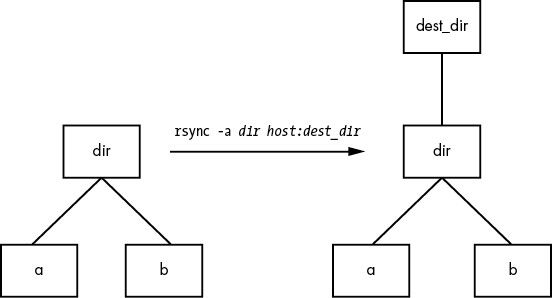
Figure 12-1: Normal rsync copy
However, adding a slash (/) to the source name significantly changes the behavior:
$ rsync -a dir/ host:dest_dir
Here, rsync copies everything inside dir to dest_dir on host without actually creating dir on the destination host. Therefore, you can think of a transfer of dir/ as an operation similar to cp dir/* dest_dir on the local filesystem.
For example, say you have a directory dir containing the files a and b (dir/a and dir/b). You run the trailing-slash version of the command to transfer them to the dest_dir directory on host:
$ rsync -a dir/ host:dest_dir
When the transfer completes, dest_dir contains copies of a and b but not dir. If, however, you had omitted the trailing / on dir, dest_dir would have gotten a copy of dir with a and b inside. Then, as a result of the transfer, you’d have files and directories named dest_dir/dir/a and dest_dir/dir/b on the remote host. Figure 12-2 illustrates how rsync handles the directory structure from Figure 12-1 when using a trailing slash.
When transferring files and directories to a remote host, accidentally adding a / after a path would normally be nothing more than a nuisance; you could go to the remote host, add the dir directory, and put all of the transferred items back in dir. Unfortunately, there’s a greater potential for disaster when you combine the trailing / with the --delete option; be extremely careful because you can easily remove unrelated files this way.
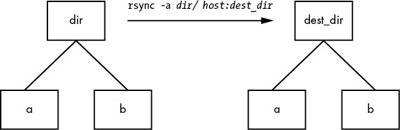
Figure 12-2: Effect of trailing slash in rsync
WARNING
Because of this potential, be wary of your shell’s automatic filename completion feature. Many shells tack trailing slashes onto completed directory names after you press TAB.
12.2.4 Excluding Files and Directories
One important feature of rsync is its ability to exclude files and directories from a transfer operation. For example, say you’d like to transfer a local directory called src to host, but you want to exclude anything named .git. You can do it like this:
$ rsync -a --exclude=.git src host:
Note that this command excludes all files and directories named .git because --exclude takes a pattern, not an absolute filename. To exclude one specific item, specify an absolute path that starts with /, as shown here:
$ rsync -a --exclude=/src/.git src host:
NOTE
The first / in /src/.git in this command is not the root directory of your system but rather the base directory of the transfer.
Here are a few more tips on how to exclude patterns:
- You can have as many --exclude parameters as you like.
- If you use the same patterns repeatedly, place them in a plaintext file (one pattern per line) and use --exclude-from=file.
- To exclude directories named item but include files with this name, use a trailing slash: --exclude=item/.
- The exclude pattern is based on a full file or directory name component and may contain simple globs (wildcards). For example, t*s matches this, but it does not match ethers.
- If you exclude a directory or filename but find that your pattern is too restrictive, use --include to specifically include another file or directory.
12.2.5 Checking Transfers, Adding Safeguards, and Using Verbose Mode
To speed operation, rsync uses a quick check to determine whether any files on the transfer source are already on the destination. The check uses a combination of the file size and its last-modified date. The first time you transfer an entire directory hierarchy to a remote host, rsync sees that none of the files already exist at the destination, and it transfers everything. Testing your transfer with rsync -n verifies this for you.
After running rsync once, run it again using rsync -v. This time you should see that no files show up in the transfer list because the file set exists on both ends, with the same modification dates.
When the files on the source side are not identical to the files on the destination side, rsync transfers the source files and overwrites any files that exist on the remote side. The default behavior may be inadequate, though, because you may need additional reassurance that files are indeed the same before skipping over them in transfers, or you might want to add some extra safeguards. Here are some options that come in handy:
- --checksum (abbreviation: -c) Computes checksums (mostly unique signatures) of the files to see if they’re the same. This option consumes a small amount of I/O and CPU resources during transfers, but if you’re dealing with sensitive data or files that often have uniform sizes, this is a must.
- --ignore-existing Doesn’t clobber files already on the target side.
- --backup (abbreviation: -b) Doesn’t clobber files already on the target but rather renames these existing files by adding a ~ suffix to their names before transferring the new files.
- --suffix=s Changes the suffix used with --backup from ~ to s.
- --update (abbreviation: -u) Doesn’t clobber any file on the target that has a later date than the corresponding file on the source.
With no special options, rsync operates quietly, producing output only when there’s a problem. However, you can use rsync -v for verbose mode or rsync -vv for even more details. (You can tack on as many v options as you like, but two is probably more than you need.) For a comprehensive summary after the transfer, use rsync --stats.
12.2.6 Compressing Data
Many users like the -z option in conjunction with -a to compress the data before transmission:
$ rsync -az dir host:dest_dir
Compression can improve performance in certain situations, such as when you’re uploading a large amount of data across a slow connection (like a slow upstream link) or when the latency between the two hosts is high. However, across a fast local area network, the two endpoint machines can be constrained by the CPU time that it takes to compress and decompress data, so uncompressed transfer may be faster.
12.2.7 Limiting Bandwidth
It’s easy to clog the uplink of internet connections when you’re uploading a large amount of data to a remote host. Even though you won’t be using your (normally large) downlink capacity during such a transfer, your connection will still seem quite slow if you let rsync go as fast as it can, because outgoing TCP packets such as HTTP requests will have to compete with your transfers for bandwidth on your uplink.
To get around this, use --bwlimit to give your uplink a little breathing room. For example, to limit the bandwidth to 100,000Kbps, you might do something like this:
$ rsync --bwlimit=100000 -a dir host:dest_dir
12.2.8 Transferring Files to Your Computer
The rsync command isn’t just for copying files from your local machine to a remote host. You can also transfer files from a remote machine to your local host by placing the remote host and remote source path as the first argument on the command line. For example, to transfer src_dir on the remote system to dest_dir on the local host, run this command:
$ rsync -a host:src_dir dest_dir
NOTE
As mentioned before, you can use rsync to duplicate directories on your local machine; just omit host: on both arguments.
12.2.9 Further rsync Topics
Whenever you need to copy numerous files, rsync should be one of the first utilities that comes to mind. Running rsync in batch mode is particularly useful for copying the same set of files to multiple hosts, because it speeds up long transfers and makes it possible to resume when interrupted.
You’ll also find rsync useful for making backups. For example, you can attach internet storage, such as Amazon’s S3, to your Linux system and then use rsync --delete to periodically synchronize a filesystem with the network storage to implement a very effective backup system.
There are many more command-line options than those described here. For a rough overview, run rsync --help. You’ll find more detailed information in the rsync(1) manual page as well as at the rsync home page (https://rsync.samba.org/).
12.3 Introduction to File Sharing
Your Linux machine probably doesn’t live alone on your network, and when you have multiple machines on a network, there’s nearly always a reason to share files among them. For the remainder of this chapter, we’ll first look at file sharing between Windows and macOS machines, and you’ll learn more about how Linux adapts to interacting with completely foreign environments. For the purpose of sharing files between Linux machines or accessing files from a Network Area Storage (NAS) device, we’ll wrap up by talking about using SSHFS and the Network File System (NFS) as a client.
12.3.1 File Sharing Usage and Performance
One thing you need to ask yourself when working with any kind of file sharing system is why you’re doing it in the first place. In traditional Unix-based networks, there were two major reasons: convenience and lack of local storage. One user could log in to one of several machines on a network, each with access to the user’s home directory. It was far more economical to concentrate storage on a small number of centralized servers than to buy and maintain a lot of local storage for every machine on the network.
This model’s advantages are overshadowed by one major disadvantage that has remained constant over the years: network storage performance is often poor compared to local storage. Some kinds of data access are okay; for example, contemporary hardware and networks have no problems streaming video and audio data from a server to a media player in part because the data access pattern is very predictable. A server sending the data from a large file or stream can pre-load and buffer the data efficiently, because it knows that the client will likely access data sequentially.
However, if you’re doing more complex manipulation or accessing many different files at once, you’ll find your CPU waiting on the network more often than not. Latency is one of the primary culprits. This is the time it takes to receive data from any random (arbitrary) network file access. Before sending any data to the client, the server must accept and decipher the request, and then locate and load the data. The first steps are often the slowest, and are done for almost every new file access.
The moral of the story is that when you start thinking about network file sharing, ask yourself why you’re doing it. If it’s for large amounts of data not requiring frequent random access, you likely won’t have a problem. But if, for example, you’re editing video or developing a software system of any substantial size, you’ll want to keep all of your files on local storage.
12.3.2 File Sharing Security
Traditionally, security in file sharing protocols has not been treated as a high priority. This has consequences for how and where you want to implement file sharing. If you have any reason to doubt the security of the network(s) between the machines sharing files, you’ll want to consider both authorization/authentication and encryption in your configuration. Good authorization and authentication means that only parties with the correct credentials have access to files (and that the server is who it claims to be), and encryption ensures that no one will be able steal file data as it transits to its destination.
The file sharing options that are the easiest to configure are typically the least secure, and unfortunately, there are no standardized ways to secure these types of access. However, if you’re willing to put in the work of connecting the correct pieces, tools such as stunnel, IPSec, and VPNs can secure the layers below basic file sharing protocols.
12.4 Sharing Files with Samba
If you have machines running Windows, you’ll probably want to permit access to your Linux system’s files and printers from those Windows machines using the standard Windows network protocol, Server Message Block (SMB). macOS supports SMB file sharing too, but you can also use SSHFS, described in Section 12.5.
The standard file sharing software suite for Unix is called Samba. Not only does Samba allow your network’s Windows computers to get to your Linux system, but it also works the other way around: you can print and access files on Windows servers from your Linux machine via its Samba client software.
To set up a Samba server, do the following:
- Create an smb.conf file.
- Add file sharing sections to smb.conf.
- Add printer sharing sections to smb.conf.
- Start the Samba daemons nmbd and smbd.
When you install Samba from a distribution package, your system should perform these steps using some reasonable defaults for the server. However, it probably won’t be able to determine which particular shares (resources) on your Linux machine you want to offer to clients.
NOTE
The discussion of Samba in this chapter is not intended to be comprehensive; it’s limited to getting Windows machines on a single subnet to see a standalone Linux machine through the Windows Network Places browser. There are countless ways to configure Samba, because there are many possibilities for access control and network topology. For the gory details on how to configure a large-scale server, see Using Samba, 3rd edition, by Gerald Carter, Jay Ts, and Robert Eckstein (O’Reilly, 2007), which is a much more extensive guide, and visit the Samba website (https://samba.org/).
12.4.1 Server Configuration
The central Samba configuration file is smb.conf, which most distributions place in an etc directory, such as /etc/samba. However, you might have to hunt around to find this file, as it could also be in a lib directory, such as /usr/local/samba/lib.
The smb.conf file format is similar to the XDG style that you’ve seen elsewhere (such as the systemd configuration format) and breaks down into several sections denoted with square brackets such as [global] and [printers]. The [global] section in smb.conf contains general options that apply to the entire server and all shares. These options primarily pertain to network configuration and access control. This sample [global] section shows how to set the server name, description, and workgroup:
[global]
# server name
netbios name = name
# server description
server string = My server via Samba
# workgroup
workgroup = MYNETWORK
These parameters work as follows:
- netbios name The server name. If you omit this parameter, Samba uses the Unix hostname. NetBIOS is an API that SMB hosts often employ to talk to one another.
- server string A short description of the server. The default is the Samba version number.
- workgroup The Windows workgroup name. If you’re on a Windows domain, set this parameter to the name of your domain.
12.4.2 Server Access Control
You can add options to your smb.conf file to limit which machines and users can access your Samba server. Here are a few of the many options that you can set in your [global] section and in the sections that control individual shares (as described later in the chapter):
- interfaces Set this to have Samba listen (accept connections) on the given networks or interfaces. For example:
interfaces = 10.23.2.0/255.255.255.0
interfaces = enp0s31f6 - bind interfaces only Set this to yes when using the interfaces parameter in order to limit access to only the machines that you can directly reach on those interfaces.
- valid users Set this to allow the given users access. For example:
valid users = jruser, bill
- guest ok Set this parameter to true to make a share available to anonymous users on the network. Do this only if you’re sure that the network is private.
- browseable Set this to make shares viewable by network browsers. If you set this parameter to no for any shares, you’ll still be able to access the shares on the Samba server, but you’ll need to know their exact names in order to be able to access them.
12.4.3 Passwords
In general, you should allow access to your Samba server only with password authentication. Unfortunately, the basic password system on Unix is different from that on Windows, so unless you specify cleartext network passwords or authenticate passwords with a Windows domain server, you must set up an alternative password system. This section shows you how to set up an alternative password system using Samba’s Trivial Database (TDB) backend, which is appropriate for small networks.
First, use these entries in your smb.conf [global] section to define the Samba password database characteristics:
# use the tdb for Samba to enable encrypted passwords
security = user
passdb backend = tdbsam
obey pam restrictions = yes
smb passwd file = /etc/samba/passwd_smb
These lines allow you to manipulate the Samba password database with the smbpasswd command. The obey pam restrictions parameter ensures that any user changing their password with the smbpasswd command must obey any rules that PAM (Pluggable Authentication Modules, covered in Chapter 7) enforces for normal password changes. For the passdb backend parameter, you can optionally specify a pathname for the TDB file after a colon—for example, tdbsam:/etc/samba/private/passwd.tdb.
NOTE
If you have access to a Windows domain, you can set security = domain to make Samba use the domain’s authentication system and eliminate the need for a password database. However, in order for domain users to access the machine running Samba, each domain user must have a local account with the same username on that machine.
Adding and Deleting Users
The first thing you need to do to give a Windows user access to your Samba server is to add the user to the password database with the smbpasswd -a command:
# smbpasswd -a username
The username parameter to the smbpasswd command must be a valid username on your Linux system.
Like the regular system’s passwd program, smbpasswd asks you to enter the new SMB user’s password twice. After the password passes any necessary security checks, smbpasswd confirms that it has created the new user.
To remove a user, use the -x option to smbpasswd:
# smbpasswd -x username
To just temporarily deactivate the user, use the -d option; the -e option can be used later to reenable the user:
# smbpasswd -d username
# smbpasswd -e username
Changing Passwords
You can change a Samba password as the superuser by using smbpasswd with no options or keywords other than the username:
# smbpasswd username
However, if the Samba server is running, any user can change their own Samba password by entering smbpasswd by itself on the command line.
Finally, here’s one place in your configuration to beware of. If you see a line like this in your smb.conf file, be careful:
unix password sync = yes
This line causes smbpasswd to change a user’s normal password in addition to the Samba password. The result can be very confusing, especially when a user changes their Samba password to something that’s not their Linux password and discovers that they can no longer log in to their Linux system. Some distributions set this parameter by default in their Samba server packages!
12.4.4 Manual Server Startup
Typically, you shouldn’t need to worry about starting the server if you installed Samba from a distribution package. Check the list from systemctl --type=service to verify. However, if you installed it from source code, run nmbd and smbd with the following arguments, where smb_config_file is the full path of your smb.conf file:
# nmbd -D -s smb_config_file
# smbd -D -s smb_config_file
The nmbd daemon is a NetBIOS name server, and smbd does the actual work of handling share requests. The -D option specifies daemon mode. If you alter the smb.conf file while smbd is running, you can notify the daemon of the changes with a HUP signal, though it’s almost always for the better if you let systemd supervise the server, in which case you can get systemctl to do the work for you.
12.4.5 Diagnostics and Logfiles
If something goes wrong when a Samba server starts up, an error message appears on the command line. However, runtime diagnostic messages go to the log.nmbd and log.smbd logfiles, which are usually in a /var/log directory, such as /var/log/samba. You’ll also find other logfiles there, such as individual logs for each individual client.
12.4.6 File Share Configuration
To export a directory to SMB clients (that is, to share a directory with a client), add a section like this to your smb.conf file, where label is what you would like to call the share (such as mydocuments) and path is the full directory path:
[label]
path = path
comment = share description
guest ok = no
writable = yes
printable = no
These parameters are useful in directory shares:
- guest ok A yes setting here allows guest access to the share. The public parameter is a synonym.
- writable A yes or true setting here marks the share as read-write. Do not allow guest access to a read-write share.
- printable Obviously, on a directory share, this parameter must be set to no or false.
- veto files This parameter prevents the export of any files that match the given patterns. You must enclose each pattern between forward slashes (so that it looks like /pattern/). This example bars object files, as well as any file or directory named bin:
veto files = /*.o/bin/
12.4.7 Home Directories
You can add a section called [homes] to your smb.conf file if you want to export home directories to users. The section should look like this:
[homes]
comment = home directoriesbrowseable = no
writable = yes
By default, Samba reads the logged-in user’s /etc/passwd entry to determine their home directory for [homes]. However, if you don’t want Samba to follow this behavior (that is, you want to keep the Windows home directories in a different place than the regular Linux home directories), you can use the %S substitution in a path parameter. For example, here’s how you would switch a user’s [homes] directory to /u/user:
path = /u/%S
Samba substitutes the current username for the %S.
12.4.8 Printer Sharing
You can export your printers to Windows clients by adding a [printers] section to your smb.conf file. Here’s how the section looks when you’re using CUPS, the standard Unix printing system:
[printers]
comment = Printers
browseable = yes
printing = CUPS
path = cups
printable = yes
writable = no
To use the printing = CUPS parameter, your Samba installation must be configured and linked against the CUPS library.
NOTE
Depending on your configuration, you may also want to allow guest access to your printers with the guest ok = yes option rather than give a Samba password or account to everyone who needs to access the printers. For example, it’s easy to limit printer access to a single subnet with firewall rules.
12.4.9 The Samba Client
The Samba client program smbclient can print to and access remote Windows shares. This program comes in handy when you’re in an environment where you must interact with Windows servers that don’t offer a Unix-friendly means of communication.
To get started with smbclient, use the -L option to get a list of shares from a remote server named SERVER:
$ smbclient -L -U username SERVER
You don’t need -U username if your Linux username is the same as your username on SERVER.
After you run this command, smbclient asks for a password. To try to access a share as a guest, press ENTER; otherwise, enter your password on SERVER. Upon success, you should get a share list like this:
Sharename Type Comment
--------- ---- -------
Software Disk Software distribution
Scratch Disk Scratch space
IPC$ IPC IPC Service
ADMIN$ IPC IPC Service
Printer1 Printer Printer in room 231A
Printer2 Printer Printer in basement
Use the Type field to help you make sense of each share, and pay attention only to the Disk and Printer shares (the IPC shares are for remote management). This list has two disk shares and two printer shares. Use the name in the Sharename column to access each share.
Accessing Files as a Client
If you need only casual access to files in a disk share, use the following command (again, you can omit the -U username if your Linux username matches your username on the server):
$ smbclient -U username '\\SERVER\sharename'
Upon success, you will get a prompt like this, indicating that you can now transfer files:
smb: \>
In this file transfer mode, smbclient is similar to the Unix ftp, and you can run these commands:
- get file Copies file from the remote server to the current local directory.
- put file Copies file from the local machine to the remote server.
- cd dir Changes the directory on the remote server to dir.
- lcd localdir Changes the current local directory to localdir.
- pwd Prints the current directory on the remote server, including the server and share names.
- !command Runs command on the local host. Two particularly handy commands are !pwd and !ls to determine directory and file status on the local side.
- help Shows a full list of commands.
Using the CIFS Filesystem
If you’d like to have more convenient access to files on a Windows server, you can attach a share directly to your system with mount. The command syntax is as follows (notice the use of SERVER:sharename rather than the normal \\SERVER\sharename format):
# mount -t cifs SERVER:sharename mountpoint -o user=username,pass=password
In order to use mount like this, you must have the Common Internet File System (CIFS) utilities installed on your system. Most distributions offer these as a separate package.
12.5 SSHFS
With Windows file sharing systems out of the way, in this section we’ll discuss file sharing between Linux systems. For scenarios that aren’t particularly complicated, a convenient option to consider is SSHFS. This is nothing more than a user-space filesystem that opens an SSH connection and presents the files on the other side at a mount point on your machine. Most distributions don’t install it by default, so you might need to install your distribution’s SSHFS package.
The syntax for using SSHFS on the command line looks superficially similar to SSH commands that you’ve seen before. Of course, you need to supply the shared directory (on the remote host) and the desired mount point:
$ sshfs username@host:dir mountpoint
Just like in SSH, you can drop the username@ if the username is the same on the remote host, and you can also omit :dir if you just want to mount the home directory on the other side. This command asks for the password on the other side if necessary.
Because this is a user-space filesystem, you have to unmount it with fusermount if you’re running this as a regular user:
$ fusermount -u mountpoint
The superuser can also unmount these filesystems with umount. To ensure consistency of ownership and security, this type of filesystem is usually best mounted as a regular user.
SSHFS has these advantages:
- It has minimal setup. The only requirement on the remote host is that SFTP is enabled, and most SSH servers enable it by default.
- It’s not dependent on any kind of specific network configuration. If you can open an SSH connection, SSHFS will work, regardless if it’s on a secure local network or over an insecure remote network.
The disadvantages of SSHFS are:
- Performance suffers. There is a lot of overhead in encryption, translation, and transport (but it may not be as bad as you expect).
- Multiuser setups are limited.
It’s definitely worth trying SSHFS if you think it might work for you, because it’s so easy to set up.
12.6 NFS
One of the most commonly used traditional systems for file sharing among Unix systems is NFS, and there are many different versions of NFS for different scenarios. You can serve NFS over TCP and UDP, with a large number of authentication and encryption options (very few of which are enabled by default, unfortunately). Because there are so many options, NFS can be a big topic, so we’ll just stick to the bare minimum of coverage.
To mount a remote directory on a server with NFS, use the same basic syntax as for mounting a CIFS directory:
# mount -t nfs server:directory mountpoint
Technically, you don’t need the -t nfs option because mount should figure this out for you, but you may want to investigate the options in the nfs(5) manual page. You’ll find several different options for security using the sec option. Many administrators on small, closed networks use host-based access control. More sophisticated methods, such as Kerberos-based authentication, require additional configuration on other parts of your system.
When you find that you’re making greater use of filesystems over a network, set up the automounter so that your system will mount the filesystems only when you actually try to use them in order to prevent problems with dependencies on boot. The traditional automounting tool was called automount, and there’s a newer version called amd, but much of this functionality has now been supplanted by the automount unit type in systemd.
NFS SERVERS
Setting up an NFS server to share files to other Linux machines is more complicated than configuring the client side. You need to run the server daemons (mountd and nfsd) and set up the /etc/exports file to reflect the directories that you’re sharing. However, we won’t cover NFS servers, primarily because it’s often much more convenient to share storage over a network by simply purchasing an NAS device to handle it for you. Many of these devices are Linux based, so they’ll naturally have NFS server support. Vendors add value to their NAS devices by offering their own administration tools to take the pain out of tedious tasks such as setting up RAID configurations and cloud backups.
12.7 Cloud Storage
Speaking of cloud backups, another network file storage option is cloud storage, such as AWS S3 or Google Cloud Storage. These systems don’t have the performance of storage on a local network, but they do offer two significant advantages: you never have to maintain them, and you shouldn’t have to worry about backups.
Aside from the web (and programmatic) interfaces that all cloud storage providers offer, there are ways to mount most kinds of cloud storage on a Linux system. Unlike most of the filesystems that we’ve seen so far, these are nearly all implemented as FUSE (File System in User Space) interfaces. For some popular cloud storage providers such as S3, there are even multiple options. This makes sense, because a FUSE handler is nothing more than a user-space daemon that acts as an intermediary between the data source and the kernel.
This book doesn’t cover the specifics of setting up a cloud storage client, because every one is different.
12.8 The State of Network File Sharing
At this point, you might feel that this discussion of the NFS and file sharing in general seems somewhat incomplete—and it might be, but only as much as the file sharing systems themselves. We discussed performance and security concerns in Sections 12.3.1 and 12.3.2. In particular, the base security level of NFS is quite low, requiring significant extra work to improve. CIFS systems are somewhat better in this regard, as the necessary encryption layers are built into contemporary software. However, performance limitations aren’t easy to overcome, not to mention how badly a system can perform when it is temporarily unable to access its network storage.
There have been several attempts to deal with this issue. Perhaps the most extensive is the Andrew File System (AFS), first designed in the 1980s, which was built around solutions to these problems. So why doesn’t everyone use AFS or something like it?
There is no one answer to this question, but much of it comes down to a certain lack of flexibility in some parts of the design. For example, the security mechanism requires a Kerberos authentication system. Though universally available, it has never been standard on Unix systems, and requires a nontrivial amount of work to set up and maintain (you have to set up a server for it).
For a large institution, fulfilling requirements such as Kerberos isn’t a problem. This is exactly the setting in which AFS has thrived; universities and financial institutions are big AFS sites. But for the small user, it’s simply easier not to do it, preferring simpler options like NFS or CIFS shares. This sort of limitation even extends to Windows; starting with Windows 2000, Microsoft switched to Kerberos as the default authentication on its server product, but small networks don’t tend to be Windows domains with this kind of server.
Aside from the authentication prerequisite, there’s a problem that stems from more technical reasons. Many network filesystem clients have traditionally been kernel code, NFS in particular. Unfortunately, the requirements of network filesystems are complex enough that problems start to occur. The authentication alone has no place in the kernel. A kernel client implementation also severely limits the potential developer base for a network filesystem, hampering the system as a whole. In some cases, client code was in user space, but there was always some sort of kernel customization underneath.
At the moment, we find ourselves without a truly standard means of network file sharing in the Linux/Unix world (at least if you’re not a large site or you aren’t willing to put in a fair amount of work). However, this won’t necessarily always be the case.
When providers started to offer cloud storage, it was clear that the traditional forms of network file sharing wouldn’t be suitable. In the cloud, access methods are built on top of security mechanisms such as TLS that make it possible to access storage without setting up a large system such as Kerberos. As mentioned in the preceding section, there are many options available via FUSE to access cloud storage. We’re no longer dependent on the kernel for any part of the client; any kind of authentication, encryption, or handling can easily be done in user space.
All of this means that the future could very well see some file-sharing designs incorporating more flexibility in security and other areas such as filename translation.
13
USER ENVIRONMENTS
This book’s primary focus is on the parts of the Linux system that normally underlie server processes and interactive user sessions. But eventually, the system and the user have to meet somewhere. Startup files play an important role at this point, because they set defaults for the shell and other interactive programs. They determine how the system behaves when a user logs in.
Most users don’t pay close attention to their startup files, touching them only when they want to add something for convenience, such as an alias. Over time, the files become cluttered with unnecessary environment variables and tests that can lead to annoying (or quite serious) problems.
If you’ve had your Linux machine for a while, you might have noticed that your home directory accumulates a bafflingly large array of startup files over time. These are sometimes called dot files because they nearly always start with a dot (.), excluding them from the default display of ls and most file managers. Many of these are automatically created when you first run a program, and you’ll never need to change them. This chapter primarily covers shell startup files, which are the ones you’re most likely to modify or rewrite from scratch. Let’s first look at how much care you need to take when working on these files.
13.1 Guidelines for Creating Startup Files
When designing startup files, keep the user in mind. If you’re the only user on a machine, you don’t have much to worry about, because any errors affect only you and they’re easy enough to fix. However, if you’re creating startup files meant to be the defaults for all new users on a machine or network, or if you think that someone might copy your files for use on a different machine, this process becomes considerably more critical. If you make an error in a startup file and distribute it to 10 users, you might end up fixing this error 10 times.
Keep two essential goals in mind when creating startup files for other users:
- Simplicity Keep the number of startup files small, and keep the files as short and simple as possible so that they’re easy to modify but hard to break. Each item in a startup file is just one more thing that can break.
- Readability Use extensive comments in files so that the users get a good picture of what each part of a file does.
13.2 When to Alter Startup Files
Before making a change to a startup file, ask yourself whether you really should be making it. Here are some good reasons for changing startup files:
- You want to change the default prompt.
- You need to accommodate some critical locally installed software. (Consider using wrapper scripts first, though.)
- Your existing startup files are broken.
If everything in your Linux distribution works, be careful. Sometimes the default startup files interact with other files in /etc.
That said, you probably wouldn’t be reading this chapter if you weren’t interested in changing the defaults, so let’s examine what’s important.
13.3 Shell Startup File Elements
What goes into a shell startup file? Some things might seem obvious, such as the command path and a prompt setting. But what exactly should be in the path, and what does a reasonable prompt look like? And how much is too much to put in a startup file?
This section discusses the essentials of a shell startup file—from the command path, prompt, and aliases through the permissions mask.
13.3.1 The Command Path
The most important part of any shell startup file is the command path. The path should cover the directories that contain every application of interest to a regular user. At the very least, the path should contain these components, in order:
/usr/local/bin
/usr/bin
/bin
This order ensures that you can override standard default programs with site-specific variants located in /usr/local.
Most Linux distributions install executables for nearly all packaged user software in /usr/bin. Some are occasional differences that have crept in over the years, such as putting games in /usr/games and graphical applications in a separate location, so check your system’s defaults first. And make sure that every general-use program on the system is available through one of the directories just listed. If not, your system is probably getting out of control. Don’t change the default path in your user environment to accommodate every new software installation directory. A cheap way to accommodate separate installation directories is to use symbolic links in /usr/local/bin.
Many users create a bin directory of their own to store shell scripts and programs, so you may want to add this to the front of the path:
$HOME/bin
NOTE
A newer convention is to place binaries in $HOME/.local/bin.
If you’re interested in systems utilities (such as sysctl, fdisk, and lsmod), add the sbin directories to your path:
/usr/local/sbin
/usr/sbin
/sbin
ADDING A DOT TO THE PATH
There is one small but controversial command path component to discuss: the dot. Placing a dot (.) in your path allows you to run programs in the current directory without using ./ in front of the program name. This may seem convenient when writing scripts or compiling programs, but it’s a bad idea for two reasons:
- It can be a security problem. You should never put a dot at the front of the path. As just one example of what might happen, an attacker could put a Trojan horse named ls in an archive distributed on the internet. Even if the dot is placed at the end of the path, you’d still be vulnerable to an attacker anticipating typos such as sl or ks.
- It is inconsistent and can be confusing. A dot in a path can mean that a command’s behavior will change according to the current directory.
13.3.2 The Manual Page Path
The traditional manual page path was determined by the MANPATH environment variable, but you shouldn’t set it because doing so overrides the system defaults in /etc/manpath.config.
13.3.3 The Prompt
Experienced users tend to avoid long, complicated, useless prompts. In comparison, many administrators and distributions drag everything into a default prompt. Even many shell default prompts are cluttered or otherwise mostly useless. For example, the default bash prompt contains the shell name and version number. Your choice should reflect your users’ needs; place the current working directory, hostname, and username in the prompt if it really helps.
Above all, avoid characters that mean something significant to the shell, such as these:
{ } = & < >
NOTE
Take extra care to avoid the > character, which can cause erratic, empty files to appear in your current directory if you accidentally copy and paste a section of your shell window (> redirects output to a file).
This simple prompt setting for bash ends with the customary $ (the traditional csh prompt ends with %):
PS1='\u\$ '
The \u is an expression that the shell evaluates to the current username (see the PROMPTING section of the bash(1) manual page). Other popular expressions include:
- \h The hostname (the short form, without domain names).
- \! The history number.
- \w The current directory. Because this can become long, you can limit the display to just the final component by using \W instead.
- \$ $ if running as a user account; # if root.
13.3.4 Aliases
Among the stickier points of contemporary user environments is the role of aliases, a shell feature that substitutes one string for another before executing a command. Aliases can be efficient shortcuts that save some typing. However, they have several drawbacks:
- It can be tricky to manipulate arguments.
- They are confusing; a shell’s built-in which command can tell you if something is an alias, but it won’t tell you where it was defined.
- They are frowned upon in subshells and noninteractive shells; they aren’t passed onto child shells.
One classic mistake when defining an alias is to add extra arguments to an existing command—for example, aliasing ls to ls -F. At best, this can make it difficult to remove the -F argument when you don’t want it. At worst, it can have severe consequences for the user who does not understand that they’re not using the default arguments.
Given these disadvantages, you should probably avoid aliases whenever possible; it’s easier to write a shell function or an entirely new shell script. A computer can start and execute shells so quickly that the difference between an alias and an entirely new command should be unnoticeable.
That said, aliases do come in handy when you wish to alter a part of the shell’s environment. You can’t change an environment variable with a shell script, because scripts run as subshells. (But you can instead define shell functions to perform this task.)
13.3.5 The Permissions Mask
As described in Chapter 2, a shell’s built-in umask (permissions mask) facility sets your default permissions. Include the umask command in one of your startup files to make certain that any program you run creates files with your desired permissions. There are two reasonable choices:
- 077 This mask is the most restrictive permissions mask; it doesn’t give any other users access to new files and directories. This is often appropriate on a multi-user system where you don’t want other users to look at any of your files. However, when set as the default, this mask can sometimes lead to problems when your users want to share files but don’t understand how to set permissions correctly. (Inexperienced users have a tendency to set files to a world-writable mode.)
- 022 This mask gives other users read access to new files and directories. This can be a good choice on a single-user system because many daemons that run as pseudo-users won’t be able to see files and directories created with the more restrictive 077 umask.
NOTE
Certain applications (especially mail programs) override the umask, changing it to 077 because they feel that their files are the business of no one but the file owner.
13.4 Startup File Order and Examples
Now that you know what to put into shell startup files, it’s time to see some specific examples. Surprisingly, one of the most difficult and confusing parts of creating startup files is determining which of several possible startup files to use. This section covers the two most popular Unix shells: bash and tcsh.
13.4.1 The bash Shell
In bash, you can choose from the startup filenames .bash_profile, .profile, .bash_login, and .bashrc. Which one is appropriate for your command path, manual page path, prompt, aliases, and permissions mask? The answer is that you should have a .bashrc file accompanied by a .bash_profile symbolic link pointing to .bashrc because there are a few different kinds of bash shell instance types.
The two main shell instance types are interactive and noninteractive, but we’re interested only in interactive shells, because noninteractive shells (such as those that run shell scripts) usually don’t read any startup files. Interactive shells are those you use to run commands from a terminal, such as the ones you’ve seen in this book, and they can be classified as login or non-login.
Login Shells
Traditionally, a login shell is what you get when you first log in to a system with the terminal using a program such as /bin/login. Logging in remotely with SSH also gives you a login shell. The basic idea is that the login shell is an initial shell. You can tell if a shell is a login shell by running echo $0; if the first character is a -, the shell’s a login shell.
When bash runs as a login shell, it runs /etc/profile. Then it looks for a user’s .bash_profile, .bash_login, and .profile files, running only the first one that it sees.
As strange as it sounds, it’s possible to run a noninteractive shell as a login shell to force it to run startup files. To do so, start the shell with the -l or --login option.
Non-Login Shells
A non-login shell is an additional shell that you run after you log in. It’s simply any interactive shell that’s not a login shell. Windowing system terminal programs (xterm, GNOME Terminal, and so on) start non-login shells unless you specifically ask for a login shell.
Upon starting up as a non-login shell, bash runs /etc/bash.bashrc and then runs the user’s .bashrc.
The Consequences of Two Kinds of Shells
The reasoning behind the two different startup files is that in the old days, users logged in through a traditional terminal with a login shell, and then started non-login subshells with windowing systems or the screen program. For the non-login subshells, it was deemed a waste to repeatedly set the user environment and run a bunch of programs that had already been run. With login shells, you could run fancy startup commands in a file such as .bash_profile, leaving only aliases and other “lightweight” things to your .bashrc.
Nowadays, most desktop users log in through a graphical display manager (you’ll learn more about these in the next chapter). Most of these start with one noninteractive login shell in order to preserve the login versus non-login model. When they do not, you need to set up your entire environment (path, manual path, and so on) in your .bashrc, or you’ll never see any of your environment in your terminal window shells. However, you also need a .bash_profile if you ever want to log in on the console or remotely, because those login shells don’t ever bother with .bashrc.
Example .bashrc
In order to satisfy both non-login and login shells, how would you create a .bashrc that can also be used as your .bash_profile? Here’s one very elementary (yet perfectly sufficient) example:
# Command path.
PATH=/usr/local/bin:/usr/bin:/bin:/usr/games
PATH=$HOME/bin:$PATH
# PS1 is the regular prompt.
# Substitutions include:
# \u username \h hostname \w current directory
# \! history number \s shell name \$ $ if regular user
PS1='\u\$ '
# EDITOR and VISUAL determine the editor that programs such as less
# and mail clients invoke when asked to edit a file.
EDITOR=vi
VISUAL=vi
# PAGER is the default text file viewer for programs such as man.
PAGER=less
# These are some handy options for less.# A different style is LESS=FRX
# (F=quit at end, R=show raw characters, X=don't use alt screen)
LESS=meiX
# You must export environment variables.
export PATH EDITOR VISUAL PAGER LESS
# By default, give other users read-only access to most new files.
umask 022
In this startup file, the path has $HOME/bin at the front so that executables there take precedence over the system versions. If you need the system executables, add /sbin and /usr/sbin.
As described earlier, you can share this .bashrc file with .bash_profile via a symbolic link, or you can make the relationship even clearer by creating .bash_profile as this one-liner:
. $HOME/.bashrc
Checking for Login and Interactive Shells
With a .bashrc matching your .bash_profile, you don’t normally run extra commands for login shells. However, if you want to define different actions for login and non-login shells, you can add the following test to your .bashrc, which checks the shell’s $- variable for an i character:
case $- in *i*) # interactive commands go here command --snip-- ;; *) # non-interactive commands go here command --snip-- ;;
esac
13.4.2 The tcsh Shell
The standard csh on virtually all Linux systems is tcsh, an enhanced C shell that popularized features such as command-line editing and multimode filename and command completion. Even if you don’t use tcsh as the default new user shell (bash should be the default), you should still provide tcsh startup files in case your users happen to come across tcsh.
You don’t have to worry about the difference between login shells and non-login shells in tcsh. Upon startup, tcsh looks for a .tcshrc file. Failing this, it looks for the csh shell’s .cshrc startup file. The reason for this order is that you can use the .tcshrc file for tcsh extensions that don’t work in csh. You should probably stick to using the traditional .cshrc instead of .tcshrc; it’s highly unlikely that anyone will ever use your startup files with csh. And if a user actually does come across csh on some other system, your .cshrc will work.
Example .cshrc
Here is a sample .cshrc file:
# Command path.
setenv PATH $HOME/bin:/usr/local/bin:/usr/bin:/bin
# EDITOR and VISUAL determine the editor that programs such as less
# and mail clients invoke when asked to edit a file.
setenv EDITOR vi
setenv VISUAL vi
# PAGER is the default text file viewer for programs such as man.
setenv PAGER less
# These are some handy options for less.
setenv LESS meiX
# By default, give other users read-only access to most new files.
umask 022
# Customize the prompt.
# Substitutions include:
# %n username %m hostname %/ current directory
# %h history number %l current terminal %% %
set prompt="%m%% "
13.5 Default User Settings
The best way to write startup files and choose defaults for new users is to experiment with a new test user on the system. Create the test user with an empty home directory and refrain from copying your own startup files to the test user’s directory. Write the new startup files from scratch.
When you think you have a working setup, log in as the new test user in all possible ways (on the console, remotely, and so on). Make sure that you test as many things as possible, including the windowing system operation and manual pages. When you’re happy with the test user, create a second test user, copying the startup files from the first test user. If everything still works, you now have a new set of startup files that you can distribute to new users.
This section outlines reasonable defaults for new users.
13.5.1 Shell Defaults
The default shell for any new user on a Linux system should be bash because:
- Users interact with the same shell that they use to write shell scripts. (For many reasons, which I won’t expand upon here, csh is a notoriously bad scripting tool—don’t even think about it.)
- bash is the default on Linux distributions.
- bash uses the GNU readline library to accept input, and therefore its interface is identical to that of many other tools.
- bash gives you fine, easy-to-understand control over I/O redirection and file handles.
However, many seasoned Unix wizards use a shell such as csh or tcsh simply because it’s what they’re most familiar with, and they can’t bear to switch. Of course, you can choose any shell you like, but choose bash if you don’t have any preference, and use bash as the default shell for any new user on the system. (Users can change their shell with the chsh command to suit their individual preference.)
NOTE
There are plenty of other shells out there (rc, ksh, zsh, es, and so on). Some are not appropriate as beginner shells, but zsh and fish are sometimes popular with new users looking for an alternative shell.
13.5.2 Editor
On traditional systems, the default editor is vi or emacs. These are the only editors virtually guaranteed to exist (or at least be available) on nearly any Unix system, which means they’ll cause the least trouble in the long run for a new user. However, Linux distributions often configure nano to be the default editor, because it’s easier for beginners to use.
As with shell startup files, avoid large default editor startup files. A little set showmatch in the .exrc startup file (to have vi show matching parentheses) never hurt anyone, but steer clear of anything that significantly changes the editor’s behavior or appearance, such as the showmode feature, auto-indentation, and wrap margins.
13.5.3 Pager
The pager is a program, such as less, that shows text one page at a time. It’s perfectly reasonable to set the default PAGER environment variable to less.
13.6 Startup File Pitfalls
Avoid these pitfalls in startup files:
- Don’t put any kind of graphical command in a shell startup file. Not all shells run in graphical environments.
- Don’t set the DISPLAY environment variable in a shell startup file. We haven’t looked at graphical environments yet, but this can cause your graphical session to misbehave.
- Don’t set the terminal type in a shell startup file.
- Don’t skimp on descriptive comments in default startup files.
- Don’t run commands in a startup file that print to the standard output.
- Never set LD_LIBRARY_PATH in a shell startup file (see Section 15.1.3).
13.7 Further Startup Topics
Because this book deals only with the underlying Linux system, we won’t cover windowing environment startup files. This is a large issue indeed, because the display manager that logs you in to a modern Linux system has its own set of startup files, such as .xsession, .xinitrc, and the endless combinations of GNOME- and KDE-related items.
The windowing choices may seem bewildering, and there is no one common way to start a windowing environment in Linux. The next chapter describes some of the many possibilities. However, when you determine what your system does, you might get a little carried away with the files that relate to your graphical environment. That’s fine, but don’t carry it over to new users. The same tenet of keeping things simple in shell startup files works wonders for GUI startup files, too. In fact, you probably don’t need to change your GUI startup files at all.
14
A BRIEF SURVEY OF THE LINUX DESKTOP AND PRINTING
This chapter is a quick introduction to the components found in a typical Linux desktop system. Of all of the different kinds of software on Linux systems, the desktop arena is one of the wildest and most colorful, because there are so many environments and applications from which to choose, and most distributions make it relatively easy for you to try them out.
Unlike other parts of a Linux system, such as storage and networking, creating a desktop structure doesn’t involve an extensive hierarchy of layers. Instead, each component performs a specific task, communicating with other components as necessary. Some components do share common building blocks (in particular, libraries for graphical toolkits), and you can think of those as simple abstraction layers, but that’s about as deep as it goes.
This chapter offers a high-level discussion of desktop components in general, but we’ll look at two pieces in a little more detail: the core infrastructure behind most desktops, and D-Bus, an interprocess communication service used in many parts of the system. We’ll limit the hands-on discussion and examples to a few diagnostic utilities that, although not terribly useful day to day (most GUIs don’t require you to enter shell commands in order to interact with them), will help you understand the underlying mechanics of the system and perhaps provide some entertainment along the way. We’ll also take a quick look at printing, as desktop workstations often share a common printer.
14.1 Desktop Components
Linux desktop configurations offer a great deal of flexibility. Most of what the Linux user experiences (the “look and feel” of the desktop) comes from applications or building blocks of applications. If you don’t like a particular application, you can usually find an alternative. And if what you’re looking for doesn’t exist, you can write it yourself. Linux developers tend to have a wide variety of preferences for how a desktop should act, which makes for a lot of choices.
In order to work together, all applications need to have something in common. At the time of this writing, the core of the Linux desktop is in a transitional state. From the beginning until recently, Linux desktops used X (X Window System, also known as Xorg, after its maintaining organization). However, this is now changing; many distributions have transitioned to a software set based on the Wayland protocol to build a windowing system.
To understand what’s driving this change in the underlying technology, let’s take a step back and look at a few graphics basics.
14.1.1 Framebuffers
At the bottom of any graphical display mechanism is the framebuffer, a chunk of memory that the graphics hardware reads and transmits to the screen for display. A few individual bytes in the framebuffer represent each pixel of the display, so the idea is that if you want to change the way something looks, you need to write new values to the framebuffer memory.
One problem that a windowing system must solve is how to manage writing to the framebuffer. On any contemporary system, windows (or sets of windows) belong to individual processes, doing all of their graphics updates independently. So if the user is allowed to move windows around and overlap some on top of others, how does an application know where to draw its graphics, and how do you make sure that one application isn’t allowed to overwrite the graphics of other windows?
14.1.2 The X Window System
The approach that the X Window System takes is to have a server (called the X server) that acts as a sort of “kernel” of the desktop to manage everything from rendering windows to configuring displays to handling input from devices, such as keyboards and mice. The X server doesn’t dictate the way anything should act or appear. Instead, X client programs handle the user interface. Basic X client applications, such as terminal windows and web browsers, make connections to the X server and ask to draw windows. In response, the X server figures out where to place the windows and where to render client graphics, and it takes a certain amount of responsibility for rendering graphics to the framebuffer. The X server also channels input to a client when appropriate.
Because it acts as an intermediary for everything, the X server can be a significant bottleneck. In addition, it includes a lot of functionality that’s no longer used, and it’s also quite old, dating back to the 1980s. Somehow, it has been flexible enough to accommodate many new features that have extended its lifespan. We’ll describe the basics of how to interact with the X Window System later in this chapter.
14.1.3 Wayland
Unlike X, Wayland is significantly decentralized by design. There’s no large display server managing the framebuffer for a number of graphical clients, and there’s no centralized authority for rendering graphics. Instead, each client gets its own memory buffer (think of this as sort of a sub-framebuffer) for its own window, and a piece of software called a compositor combines all of the clients’ buffers into the necessary form for copying to the screen’s framebuffer. Because there is normally hardware support for this task, the compositor can be quite efficient.
In some ways, the graphics model in Wayland isn’t too different from the practice that most X clients have been performing for years. Instead of getting any assistance from the X server, most clients render all of their own data as a bitmap and then send the bitmap to the X server. To acknowledge this somewhat, X has a compositing extension that has been in use for several years now.
For the task of channeling input to the correct application, most Wayland setups and many X servers use a library called libinput to standardize events to clients. This library is not required by the Wayland protocol, but on desktop systems, it’s nearly universal. We’ll discuss libinput in Section 14.3.2.
14.1.4 Window Managers
A major difference between X and Wayland systems is in the window manager, the piece of software that determines how to arrange windows on the screen and is central to the user experience. In X, the window manager is a client that acts as a helper to the server; it draws the windows’ decorations (such as title bars and close buttons), handles input events to those decorations, and tells the server where to move windows.
However, in Wayland, the window manager is the server, more or less. It is responsible for compositing all of the client window buffers into the display framebuffer, and it handles the channeling of input device events. As a result, it is required to do more work than a window manager in X, but much of that code can be common between window manager implementations.
Many window manager implementations exist in both systems, but X has far more by virtue of its longevity. However, most of the popular window managers, such as Mutter (in GNOME) and Kwin (from KDE) have also been extended to include Wayland compositing support. Regardless of the underlying technology, it’s not likely that there will ever be a standard Linux window manager; because user tastes and requirements are diverse and constantly changing, new window managers appear all the time.
14.1.5 Toolkits
Desktop applications include certain common elements, such as buttons and menus, called widgets. To speed up development and provide a common look, programmers use graphical toolkits to provide those elements. On operating systems like Windows or macOS, the vendor provides a common toolkit, and most programmers use that. On Linux, the GTK+ toolkit is one of the most common, but you’ll also frequently see widgets built on the Qt framework and others.
Toolkits usually consist of shared libraries and support files, such as images and theme information.
14.1.6 Desktop Environments
Although toolkits provide the user with a uniform outward appearance, some details of a desktop require a degree of cooperation between different applications. For example, one application may wish to share data with another or update a common notification bar on a desktop. To provide for those needs, toolkits and other libraries are bundled into larger packages called desktop environments. GNOME, KDE, and Xfce are some common Linux desktop environments.
Toolkits are at the core of most desktop environments, but to create a unified desktop, environments must also include numerous support files, such as icons and configurations, that make up themes. All of this is bound together with documents that describe design conventions, such as how application menus and titles should appear and how applications should react to certain system events.
14.1.7 Applications
At the top of the desktop are applications, such as web browsers and the terminal window. X applications can range from crude (such as the ancient xclock program) to complex (such as the Chrome web browser and LibreOffice suite). These applications normally stand alone, but they often use interprocess communication to become aware of pertinent events. For example, an application can express interest when you attach a new storage device or when you receive new email or an instant message. This communication usually occurs over D-Bus, described in Section 14.5.
14.2 Are You Running Wayland or X?
As we start with our hands-on discussion, you need to determine which graphical system you have. Just open a shell and check the value of the $WAYLAND_DISPLAY environment variable. If the value is something like wayland-0, you’re running Wayland. If it’s not set, you’re running X (probably; there are exceptions, but you’re not likely to come across them with this test).
These two systems are not mutually exclusive. If your system uses Wayland, it is also probably running an X compatibility server. It’s also possible to start a Wayland compositor inside X, but that can get a little strange (more on this later).
14.3 A Closer Look at Wayland
We’ll start with Wayland because it’s the emerging standard, currently used by default on many distributions. Unfortunately, in part due to its design and young age, there aren’t as many tools for prodding into Wayland as there are for X. We’ll do what we can.
But first, let’s talk about what Wayland is and isn’t. The name Wayland refers to a communications protocol between a compositing window manager and graphical client program. If you go looking for a big Wayland core package, you won’t find one, but you will find the Wayland library that most clients use to speak to the protocol (at least for now).
There’s also a reference compositing window manager called Weston and a few associated clients and utilities. What reference means here is that Weston contains the necessary functionality of a compositor, but it’s not meant for use by the general public because it has a bare-bones interface. The idea is that developers of compositing window managers can look at the Weston source code to see how to implement critical functions correctly.
14.3.1 The Compositing Window Manager
Odd as it might sound, you might not know which Wayland compositing window manager you’re actually running. You might be able to find the name from an information option in the interface, but there’s no set place to look. However, you can nearly always find the running compositor process by tracking down the Unix domain socket that it uses to communicate with clients. The socket is the display name in the WAYLAND_DISPLAY environment variable, which is usually wayland-0 and typically found in /run/user/<uid>, where <uid> is your user ID (if not, check the $XDG_RUNTIME_DIR environment variable). Running as root, you can find the process listening on this socket with the ss command, but the output will look a little crazy:
# ss -xlp | grep wayland-
u_str LISTEN 0 128 /run/user/1000/wayland-0 755881 * 0 users:(("gnome-shell",pid=1522,fd=30),("gnome-shell",pid=1522,fd=28))
However, you just need to pick through it; you can see here that the compositor process is gnome-shell, PID 1522. Unfortunately, yet another layer of indirection is going on here; the GNOME shell is a plug-in of Mutter, which is the compositing window manager used in the GNOME desktop environment. (Here, calling the GNOME shell a plug-in is just a fancy way of saying that it calls Mutter as a library.)
NOTE
One of the more unusual aspects of Wayland systems is the mechanism for drawing window decorations, such as title bars. In X, the window manager did it all, but in the initial implementations of Wayland, this was left up to the client applications, which sometimes led to windows having many different kinds of decorations on the same screen. Now there’s a part of the protocol called XDG-Decoration that allows the client to negotiate with the window manager to see if the window manager is willing to draw decorations.
In the context of a Wayland compositor, you can think of the display as the viewable space, represented by the framebuffer. A display can span more than one monitor if more than one is connected to a computer.
Although it’s rare, you can run more than one compositor at once. One way to do this is to run compositors on separate virtual terminals. In this case, the first compositor would normally have the display name set to wayland-0, the second wayland-1, and so on.
You can gain a bit of insight into your compositor with the weston-info command, which shows a few characteristics of the interfaces that the compositor has available. However, you shouldn’t expect very much beyond information on your display and some input devices.
14.3.2 libinput
In order to get the input from devices, such as a keyboard, from the kernel to clients, a Wayland compositor needs to collect that input and direct it to an appropriate client in a standardized form. The libinput library includes the support necessary to collect the input from the various /dev/input kernel devices and massage them. In Wayland, the compositor doesn’t usually just pass an input event as is; it translates the event into the Wayland protocol before sending to a client.
Normally, something like libinput wouldn’t be terribly interesting to talk about, but it comes with a small utility, also called libinput, that allows you to inspect input devices and events as they are presented by the kernel.
Try the following to look at the available input devices (you’ll probably get a lot of output, so be prepared to page through it):
# libinput list-devices--snip--
Device: Cypress USB Keyboard
Kernel: /dev/input/event3
Group: 6
Seat: seat0, default
Capabilities: keyboard
Tap-to-click: n/aTap-and-drag: n/a
Tap drag lock: n/a
Left-handed: n/a--snip--
In this partial view, you can see the type of device (keyboard) and where the kernel evdev device is (/dev/input/event3). That device shows up when you listen for events like this:
# libinput debug-events --show-keycodes
-event2 DEVICE_ADDED Power Button seat0 default group1 cap:k--snip--
-event5 DEVICE_ADDED Logitech T400 seat0 default group5 cap:kp left scroll-nat scroll-button
-event3 DEVICE_ADDED Cypress USB Keyboard seat0 default group6 cap:k--snip-- event3 KEYBOARD_KEY +1.04s KEY_H (35) pressed event3 KEYBOARD_KEY +1.10s KEY_H (35) released event3 KEYBOARD_KEY +3.06s KEY_I (23) pressed event3 KEYBOARD_KEY +3.16s KEY_I (23) released
When you run this command, move the mouse pointer around and press some keys. You’ll get some output describing these events.
Remember that the libinput library is just a system for capturing kernel events. As such, it is used not only under Wayland, but also under the X Window System.
14.3.3 X Compatibility in Wayland
Before discussing the X Window System in general, let’s first explore its compatibility with Wayland. There are countless applications for X, and any effort to move from it to Wayland would be greatly hindered by a lack of X support. There are two simultaneous approaches to bridge the gap.
The first approach is to add Wayland support to the application, creating a native Wayland application. Most graphical applications that run on X already use toolkits such as the ones found in GNOME and KDE. Because the work of adding Wayland support to these toolkits has already been done, it’s not much of a stretch to make an X application into a native Wayland application. In addition to paying attention to support for window decorations and input device configuration, a developer need only deal with the rare stray X library dependencies in an application. For many major applications, this work is already complete.
The alternative is to run an X application through a compatibility layer in Wayland. This is accomplished with an entire X server running as a Wayland client. Called Xwayland, this server is really just another layer jammed underneath X clients, run by default by most compositor startup sequences. The Xwayland server needs to translate input events and maintain its window buffers separately. Introducing another middleman like this always slows things down slightly, but it’s mostly inconsequential.
Going in reverse doesn’t work as well. You can’t run Wayland clients on X in the same way (theoretically, it’s possible to write such a system, but there’s not much point). However, you can run a compositor inside an X window. For example, if you’re running X, you can just run weston on the command line to bring up a compositor. You can open a terminal window and any other Wayland app inside, and you can even run X clients inside the compositor if you’ve started Xwayland properly.
However, if you leave this compositor running and go back to your regular X session, you might find that certain utilities don’t work as you expected, and they might also show up in the compositor window when you expected them to show up as an X window. The reason for this is that many applications on systems such as GNOME and KDE are now built with both X and Wayland support. They will look for a Wayland compositor first, and by default, the code in libwayland that looks for a display defaults to wayland-0 if the WAYLAND_DISPLAY environment variable isn’t set. An application that finds a working compositor will use it if it can.
The best way to avoid this is simply not to run a compositor inside X or at the same time as an X server.
14.4 A Closer Look at the X Window System
In contrast with Wayland-based systems, the X Window System (http://www.x.org/) has historically been very large, with the base distribution including the X server, client support libraries, and clients. Due to the emergence of desktop environments such as GNOME and KDE, the role of X has changed over time, with the focus now more on the core server that manages rendering and input devices, as well as a simplified client library.
The X server is easy to identify on your system. It’s called X or Xorg. Check for it in a process listing; you’ll usually see it running with a number of options like this:
Xorg -core :0 -seat seat0 -auth /var/run/lightdm/root/:0 -nolisten tcp vt7 -novtswitch
The :0 shown here is called the X display, an identifier representing one or more monitors that you access with a common keyboard and/or mouse. Usually, the display just corresponds to the single monitor attached to your computer, but you can put multiple monitors under the same display. For processes running under an X session, the DISPLAY environment variable is set to the display identifier.
NOTE
Displays can be further subdivided into screens, such as :0.0 and :0.1, but this is quite rare because X extensions like RandR can combine multiple monitors into one larger virtual screen.
On Linux, an X server runs on a virtual terminal. In this example, the vt7 argument shows that it’s been told to run on /dev/tty7 (normally, the server starts on the first virtual terminal available). You can run more than one X server at a time on Linux by running them on separate virtual terminals, with each server having a unique display identifier. You can switch between the servers with the CTRL-ALT-FN keys or the chvt command.
14.4.1 Display Managers
You normally wouldn’t start the X server on the command line, because starting the server doesn’t define any clients that are supposed to run on it. If you start the server by itself, you’ll just get a blank screen. Instead, the most common way to start an X server is with a display manager, a program that starts the server and puts a login box on the screen. When you log in, the display manager starts a set of clients, such as a window manager and file manager, so that you can start to use the machine.
Many different display managers are available, such as gdm (for GNOME) and kdm (for KDE). The lightdm in the argument list for the preceding X server invocation is a cross-platform display manager meant to be able to start GNOME or KDE sessions.
If you insist on starting an X session from a virtual console instead of using a display manager, you can run the startx or xinit command. However, the session you get will likely be a very simple one that looks completely unlike that of a display manager, because the mechanics and startup files are different.
14.4.2 Network Transparency
One feature of X is network transparency. Because clients talk to the server using a protocol, it’s possible to run clients across a network to a server running on a different machine directly over the network, with the X server listening for TCP connections on port 6000. Clients connecting to that port could authenticate and then send windows to the server.
Unfortunately, this method doesn’t normally offer any encryption and is insecure as a result. To close this hole, most distributions now disable the X server’s network listener (with the -nolisten tcp option to the server). However, you can still run X clients from a remote machine with SSH tunneling, as described in Chapter 10, by connecting the X server’s Unix domain socket to a socket on the remote machine.
NOTE
There is no simple way to run remotely with Wayland, because clients have their own screen memory that the compositor must access directly in order to display. However, many emerging systems, such as RDP (Remote Desktop Protocol), can work in conjunction with the compositor to provide remote functionality.
14.4.3 Ways of Exploring X Clients
Although one doesn’t normally think of working with a graphical user interface from the command line, several utilities allow you to explore the parts of the X Window System. In particular, you can inspect clients as they run.
One of the simplest tools is xwininfo. When run without any arguments, it asks you to click on a window:
$ xwininfo xwininfo: Please select the window about which you would like information by clicking the mouse in that window.
After you click, it prints a list of information about the window, such as its location and size:
xwininfo: Window id: 0x5400024 "xterm" Absolute upper-left X: 1075 Absolute upper-left Y: 594
--snip--
Notice the window ID here. The X server and window managers use this identifier to keep track of windows. To get a list of all window IDs and clients, use the xlsclients -l command.
14.4.4 X Events
X clients get their input and other information about the state of the server through a system of events. X events work like other asynchronous interprocess communication events, such as udev events and D-Bus events. The X server receives information from a source, such as an input device, and then redistributes that input as an event to any interested X client.
You can experiment with events via the xev command. Running it opens a new window that you can mouse into, click, and type. As you do so, xev generates output describing the X events that it receives from the server. For example, here’s sample output for mouse movement:
$ xev--snip--
MotionNotify event, serial 36, synthetic NO, window 0x6800001, root 0xbb, subw 0x0, time 43937883, (47,174), root:(1692,486), state 0x0, is_hint 0, same_screen YES
MotionNotify event, serial 36, synthetic NO, window 0x6800001, root 0xbb, subw 0x0, time 43937891, (43,177), root:(1688,489), state 0x0, is_hint 0, same_screen YES
Notice the coordinates in parentheses. The first pair represents the x- and y-coordinates of the mouse pointer inside the window, and the second (root:) is the location of the pointer on the entire display.
Other low-level events include keypresses and button clicks, but more advanced ones indicate whether the mouse has entered or exited the window, or whether the window has gained or lost focus from the window manager. For example, here are corresponding exit and unfocus events.
LeaveNotify event, serial 36, synthetic NO, window 0x6800001, root 0xbb, subw 0x0, time 44348653, (55,185), root:(1679,420), mode NotifyNormal, detail NotifyNonlinear, same_screen YES, focus YES, state 0
FocusOut event, serial 36, synthetic NO, window 0x6800001, mode NotifyNormal, detail NotifyNonlinear
One common use of xev is to extract keycodes and key symbols for different keyboards when remapping the keyboard. Here’s the output from pressing the L key; the keycode here is 46:
KeyPress event, serial 32, synthetic NO, window 0x4c00001, root 0xbb, subw 0x0, time 2084270084, (131,120), root:(197,172), state 0x0, keycode 46 (keysym 0x6c, l), same_screen YES, XLookupString gives 1 bytes: (6c) "l" XmbLookupString gives 1 bytes: (6c) "l" XFilterEvent returns: False
You can also attach xev to an existing window ID with the -id id option. Replace id with the ID you get from xwininfo (it will be a hexadecimal number starting with 0x).
14.4.5 X Input and Preference Settings
One of the most potentially baffling characteristics of X is that there’s often more than one way to set preferences, and some methods may not work. For example, one common keyboard preference on Linux systems is to remap the CAPS LOCK key to a CTRL key. There are a number of ways to do this, from making small adjustments with the old xmodmap command to providing an entirely new keyboard map with the setxkbmap utility. How do you know which one (if any) to use? It’s a matter of knowing which pieces of the system have responsibility, but determining this can be difficult. Keep in mind that a desktop environment may provide its own settings and overrides. With this said, here are a few pointers on the underlying infrastructure.
Input Devices (General)
The X server uses the X Input Extension to manage input from many different devices. There are two basic types of input device—keyboard and pointer (mouse)—and you can attach as many devices as you like. To handle more than one of the same type of device simultaneously, the X Input Extension creates a virtual core device that funnels device input to the X server.
To see the device configuration on your machine, run the xinput --list command:
$ xinput --list
∣ Virtual core pointer id=2 [master pointer (3)]
∣ ↳Virtual core XTEST pointer id=4 [slave pointer (2)]∣ ↳ Logitech Unifying Device id=8 [slave pointer (2)]
⌊ Virtual core keyboard id=3 [master keyboard (2)] ↳ Virtual core XTEST keyboard id=5 [slave keyboard (3)] ↳ Power Button id=6 [slave keyboard (3)] ↳ Power Button id=7 [slave keyboard (3)] ↳ Cypress USB Keyboard id=9 [slave keyboard (3)]
Each device has an associated ID that you can use with xinput and other commands. In this output, IDs 2 and 3 are the core devices, and IDs 8 and 9 are the real devices. Notice that the power buttons on the machine are also treated as X input devices.
Most X clients listen for input from the core devices, because there’s no reason for them to be concerned about which particular device initiates an event. In fact, most clients know nothing about the X Input Extension. However, a client can use the extension to single out a particular device.
Each device has a set of associated properties. To view the properties, use xinput with the device number:
$ xinput --list-props 8
Device 'Logitech Unifying Device. Wireless PID:4026': Device Enabled (126): 1 Coordinate Transformation Matrix (128): 1.000000, 0.000000, 0.000000, 0.000000, 1.000000, 0.000000, 0.000000, 0.000000, 1.000000 Device Accel Profile (256): 0 Device Accel Constant Deceleration (257): 1.000000 Device Accel Adaptive Deceleration (258): 1.000000 Device Accel Velocity Scaling (259): 10.000000--snip--
You can change a number of properties with the --set-prop option. See the xinput(1) manual page for more information.
Mouse
You can manipulate device-related settings with the xinput command, and many of the most useful options pertain to the mouse (pointer). You can change many settings directly as properties, but it’s usually easier with the specialized --set-ptr-feedback and --set-button-map options to xinput. For example, if you have a three-button mouse at dev on which you’d like to reverse the order of buttons (this is handy for left-handed users), try this:
$ xinput --set-button-map dev 3 2 1
Keyboard
The many different keyboard layouts available internationally present particular difficulties for integration into any windowing system. X has always had an internal keyboard-mapping capability in its core protocol that you can manipulate with the xmodmap command, but any halfway recent system uses XKB (the X keyboard extension) to gain finer control.
XKB is complicated, so much so that many people still use xmodmap when they need to make quick changes. The basic idea behind XKB is that you can define a keyboard map, compile it with the xkbcomp command, and then load and activate that map in the X server with the setxkbmap command. This system has two especially interesting features:
- You can define partial maps to supplement existing maps. This is particularly handy for tasks such as changing your CAPS LOCK key into a CTRL key, and it is used by many graphical keyboard preference utilities in desktop environments.
- You can define individual maps for each attached keyboard.
Desktop Background
The root window of your X server is the background of the display. The old X command xsetroot allows you to set the background color and other characteristics of the root window, but it has no effect on most machines because the root window is never visible. Instead, most desktop environments place a big window in the back of all of your other windows in order to enable features such as “active wallpaper” and desktop file browsing. There are ways to change the background from the command line (for example, with the gsettings command in some GNOME installations), but if you actually want to do this, you probably have too much time on your hands.
xset
Probably the oldest preference command is xset. It’s not used much anymore, but you can run a quick xset q to get the status of a few features. Perhaps the most useful are the screensaver and Display Power Management Signaling (DPMS) settings.
14.5 D-Bus
One of the most important developments to come out of the Linux desktop is the Desktop Bus (D-Bus), a message-passing system. D-Bus is important because it serves as an interprocess communication mechanism that allows desktop applications to talk to each other, and because most Linux systems use it to notify processes of system events, such as inserting a USB drive.
D-Bus itself consists of a library that standardizes interprocess communication with a protocol and supporting functions for any two processes to talk to each other. By itself, this library doesn’t offer much more than a fancy version of normal IPC facilities, such as Unix domain sockets. What makes D-Bus useful is a central “hub” called dbus-daemon. Processes that need to react to events can connect to dbus-daemon and register to receive certain kinds of events. Connecting processes also create the events. For example, the process udisks-daemon monitors udev for disk events and sends them to dbus-daemon, which then retransmits the events to applications interested in disk events.
14.5.1 System and Session Instances
D-Bus has become an integral part of the Linux system, and it now reaches beyond the desktop. For example, both systemd and Upstart have D-Bus channels of communication. However, adding dependencies to desktop tools inside the core system goes against a design rule of Linux.
To address this problem, there are actually two kinds of dbus-daemon instances (processes) that can run. The first is the system instance, which is started by init at boot time with the --system option. The system instance usually runs as a D-Bus user, and its configuration file is /etc/dbus-1/system.conf (though you probably shouldn’t change the configuration). Processes can connect to the system instance through the /var/run/dbus/system_bus_socket Unix domain socket.
Independent of the system D-Bus instance is an optional session instance that runs only when you start a desktop session. Desktop applications that you run connect to this instance.
14.5.2 D-Bus Message Monitoring
One of the best ways to see the difference between system and session dbus-daemon instances is to monitor the events that go over the bus. Try using the dbus-monitor utility in system mode like this:
# dbus-monitor --system
signal sender=org.freedesktop.DBus -> dest=:1.952 serial=2 path=/org/freedesktop/DBus; interface=org.freedesktop.DBus; member=NameAcquired string ":1.952"
The startup message here indicates that the monitor connected and acquired a name. You shouldn’t see much activity when you run it like this, because the system instance usually isn’t very busy. To see something happen, try plugging in a USB storage device.
By comparison, session instances have much more to do. Assuming you’ve logged in to a desktop session, try this:
$ dbus-monitor --session
Now try using a desktop application, such as a file manager; if your desktop is D-Bus–aware, you should get a flurry of messages indicating various changes. Keep in mind that not all applications will produce messages.
14.6 Printing
Printing a document on Linux is a multistage process:
- The program doing the printing usually converts the document into PostScript form. This step is optional.
- The program sends the document to a print server.
- The print server receives the document and places it on a print queue.
- When the document’s turn in the queue arrives, the print server sends the document to a print filter.
- If the document is not in PostScript form, a print filter might perform a conversion.
- If the destination printer does not understand PostScript, a printer driver converts the document to a printer-compatible format.
- The printer driver adds optional instructions to the document, such as paper tray and duplexing options.
- The print server uses a backend to send the document to the printer.
The most confusing part of this process is why so much revolves around PostScript. PostScript is actually a programming language, so when you print a file using it, you’re sending a program to the printer. PostScript serves as a standard for printing in Unix-like systems, much as the .tar format serves as an archiving standard. (Some applications now use PDF output, but this is relatively easy to convert.)
We’ll talk more about the print format shortly, but first let’s look at the queuing system.
14.6.1 CUPS
The standard printing system in Linux is CUPS (http://www.cups.org/), which is the same system used on macOS. The CUPS server daemon is called cupsd, and you can use the lpr command as a simple client to send files to the daemon.
One significant feature of CUPS is that it implements the Internet Print Protocol (IPP), a system that allows for HTTP-like transactions among clients and servers on TCP port 631. In fact, if you have CUPS running on your system, you can probably connect to http://localhost:631/ to see your current configuration and check on any printer jobs. Most network printers and print servers support IPP, as does Windows, which can make setting up remote printers a relatively simple task.
You probably won’t be able to administer the system from the web interface, because the default setup isn’t very secure. Instead, your distribution likely has a graphical settings interface to add and modify printers. These tools manipulate the configuration files, normally found in /etc/cups. It’s usually best to let those tools do the work for you, because configuration can be complicated. Even if you do run into a problem and need to configure manually, it’s usually best to create a printer using the graphical tools so that you have somewhere to start.
14.6.2 Format Conversion and Print Filters
Many printers, including nearly all low-end models, do not understand PostScript or PDF. To support one of these printers, a Linux printing system must convert documents to a format specific to the printer. CUPS sends the document to a Raster Image Processor (RIP) to produce a bitmap. The RIP almost always uses the Ghostscript (gs) program to do most of the real work, but it’s somewhat complicated, because the bitmap must fit the format of the printer. Therefore, the printer drivers that CUPS uses consult the PostScript Printer Definition (PPD) file for the specific printer to figure out settings such as resolution and paper sizes.
14.7 Other Desktop Topics
One interesting characteristic of the Linux desktop environment is that you can generally choose which pieces you want to use and stop using the ones that you dislike. For a survey of the many various desktop projects, have a look at the mailing lists and project links at https://www.freedesktop.org/.
Another major development in the Linux desktop is the Chromium OS open source project and its Google Chrome OS counterpart found on Chromebook PCs. This is a Linux system that uses much of the desktop technology described in this chapter but is centered on the Chromium/Chrome web browsers. Much of what’s found on a traditional desktop has been stripped away in Chrome OS.
Though desktop environments can be fun to look at and experiment on, we’ll need to leave the discussion here. However, if this chapter piqued your interest and you think you might like to work on them, you’ll need to know how developer tools work, which is where we’re headed next.
15
DEVELOPMENT TOOLS
Linux is very popular with programmers, not just due to the overwhelming array of tools and environments available but also because the system is exceptionally well documented and transparent. On a Linux machine, you don’t have to be a programmer to take advantage of development tools, which is good news, because they play a larger role in managing Linux systems than in other operating systems. At the very least, you should be able to identify development utilities and have some idea of how to run them.
This chapter packs a lot of information into a small space, but you don’t need to master everything here. The examples will be very simple; you don’t need to know how to write code to follow along. You can also easily skim the material and come back later. The discussion of shared libraries is likely the most important thing that you need to know, but to understand where shared libraries come from, you first need some background on how to build programs.
15.1 The C Compiler
Knowing how to use the C programming language compiler can give you a great deal of insight into the origin of the programs that you see on your Linux system. Most Linux utilities and many applications on Linux systems are written in C or C++. This chapter will primarily use examples in C, but you’ll be able to carry the information over to C++.
C programs follow a traditional development process: you write programs, you compile them, and they run. That is, when you write C program code and want to run it, you must compile human-readable code into a binary low-level form that the computer’s processor understands. The code that you write is called source code, and can encompass many files. You can compare this to the scripting languages that we’ll discuss later, where you don’t need to compile anything.
NOTE
Most distributions do not include the tools necessary to compile C code by default. If you don’t see some of the tools described here, you can install the build-essential package for Debian/Ubuntu or the “Development Tools” yum groupinstall for Fedora/CentOS. Failing that, try a package search for “gcc” or “C compiler.”
The C compiler executable on most Unix systems is the GNU C compiler, gcc (often referred to by the traditional name cc), though the newer clang compiler from the LLVM project is gaining popularity. C source code files end with .c. Take a look at this single, self-contained C source code file, hello.c, from The C Programming Language, 2nd edition, by Brian W. Kernighan and Dennis M. Ritchie (Prentice Hall, 1988):
#include <stdio.h>
int main() { printf("Hello, World.\n");
}
Save this source code in a file called hello.c and then run the compiler with this command:
$ cc hello.c
The result is an executable named a.out, which you can run like any other executable on the system. However, you should probably give the executable another name (such as hello). To do this, use the compiler’s -o option:
$ cc -o hello hello.c
For small programs, there isn’t much more to compiling than that. You might need to add an extra library or include directory, but let’s look at slightly larger programs before getting into those topics.
15.1.1 Compiling Multiple Source Files
Most C programs are too large to reasonably fit within a single source code file. Mammoth files become too disorganized for the programmer to manage, and compilers sometimes even have trouble processing large files. Therefore, developers typically separate the source code into component pieces, giving each piece its own file.
When compiling most .c files, you don’t create an executable right away. Instead, use the compiler’s -c option on each file to create object files containing binary object code that will eventually go into the final executable. To see how this works, let’s say you have two files, main.c (which gets the program started) and aux.c (which does the actual work), that appear as follows:
main.c:
void hello_call();
int main() { hello_call();
}
aux.c:
#include <stdio.h>
void hello_call() { printf("Hello, World.\n");
}
The following two compiler commands do most of the work of building the program: creating the object files.
$ cc -c main.c
$ cc -c aux.c
After these commands complete, you’ll have two object files: main.o and aux.o.
An object file is a binary file that a processor can almost understand, except that there are still a few loose ends. First, the operating system doesn’t know how to start up an object file, and second, you likely need to combine several object files and some system libraries to make a complete program.
To build a fully functioning executable program from one or more object files, you must run the linker, the ld command in Unix. Programmers rarely use ld on the command line, however, because the C compiler knows how to run the linker program. To create an executable called myprog from these two object files, run this command to link them:
$ cc -o myprog main.o aux.o
NOTE
Although you can compile each source file with a separate command, the preceding example already hints that it can be hard to keep track of them all during the compiling process; this challenge gets much worse as the number of source files multiplies. The make system described in Section 15.2 is the traditional Unix standard for managing and automating compiles. You’ll see how important having a system like make is as we deal with managing the files described in the next two sections.
Turn your attention back to the file aux.c. As mentioned, its code does the actual work of the program, and there can be many files like its resultant aux.o object file that are necessary to build the program. Now imagine that other programs might be able to make use of the routines we wrote. Could we reuse these object files? That’s where we’re headed next.
15.1.2 Linking with Libraries
Running the compiler on source code usually doesn’t result in enough object code to create a useful executable program all by itself. You need libraries to build complete programs. A C library is a collection of common precompiled components that you can build into your program, and it’s really not much more than a bundle of object files (along with some header files, which we’ll talk about in Section 15.1.4). For example, there’s a standard math library that many executables draw from because it provides trigonometric functions and the like.
Libraries come into play primarily at link time, when the linker program (ld) creates an executable from object files. Linking using a library is often called linking against a library. This is where you’re most likely to have a problem. For example, if you have a program that uses the curses library but you forget to tell the compiler to link against that library, you’ll see linker errors like this:
badobject.o(.text+0x28): undefined reference to 'initscr'
The most important parts of these error messages are in bold. When the linker program examined the badobject.o object file, it couldn’t find the function that appears in bold, and thus it couldn’t create the executable. In this particular case, you might suspect that you forgot the curses library because the missing function is initscr(); if you do a web search for the function name, you’ll nearly always find a manual page or some other reference to the library.
NOTE
Undefined references don’t always mean that you’re missing a library. One of the program’s object files could be missing in the link command. It’s usually easy to differentiate between library functions and functions in your object files, because you’ll likely recognize the ones you wrote, or at least be able to search for them.
To fix this problem, you must first find the curses library and then use the compiler’s -l option to link against the library. Libraries are scattered throughout the system, though most libraries reside in a subdirectory named lib (/usr/lib is the system default location). For the preceding example, the basic curses library file is libcurses.a, so the library name is curses. Putting it all together, you would link the program like this:
$ cc -o badobject badobject.o -lcurses
You must tell the linker about nonstandard library locations; the parameter for this is -L. Let’s say that the badobject program requires libcrud.a in /usr/junk/lib. To compile and create the executable, use a command like this:
$ cc -o badobject badobject.o -lcurses -L/usr/junk/lib -lcrud
NOTE
If you want to search a library for a particular function, use the nm command with the --defined-only symbol filter. Be prepared for a lot of output. For example, try this: nm --defined-only libcurses.a. On many distributions, you can also use the less command to view the contents of a library. (You might need to use the locate command to find libcurses.a; many distributions now put libraries in architecture-specific subdirectories in /usr/lib, such as /usr/lib/x86_64-linux-gnu/.)
There’s a library on your system called the C standard library, containing fundamental components considered a part of the C programming language. Its basic file is libc.a. When you compile a program, this library is always included unless you specifically exclude it. Most programs on your system use the shared version, so let’s talk about how that works.
15.1.3 Working with Shared Libraries
A library file ending with .a (such as libcurses.a) is called a static library. When you link a program against a static library, the linker copies the necessary machine code from the library file into your executable. Once it does this, the final executable no longer needs the original library file when it runs, and because your executable has its own copy of the library code, the executable’s behavior is not subject to change if the .a file changes.
However, library sizes are always increasing, as is the number of libraries in use, and this makes static libraries wasteful in terms of disk space and memory. In addition, if a static library is later found to be inadequate or insecure, there’s no way to change the executables that had been linked against it, short of finding and recompiling every executable.
Shared libraries counter these problems. Linking a program against a shared library doesn’t copy the code into the final executable; it just adds references to names in the code of the library file. When you run the program, the system loads the library’s code into the process memory space only when necessary. Many processes can share the same shared library code in memory. And if you need to slightly modify the library code, you can generally do so without recompiling any programs. When updating software on your Linux distribution, the packages that you’re updating can include shared libraries. When your update manager asks you to reboot your machine, sometimes it’s doing so to be sure that every part of your system is using new versions of shared libraries.
Shared libraries do have their own costs: difficult management and a somewhat complicated linking procedure. However, you can bring shared libraries under control if you know four things:
- How to list the shared libraries that an executable needs
- How an executable looks for shared libraries
- How to link a program against a shared library
- How to avoid the common shared library pitfalls
The following sections tell you how to use and maintain your system’s shared libraries. If you’re interested in how shared libraries work or if you want to know about linkers in general, you can check out Linkers and Loaders by John R. Levine (Morgan Kaufmann, 1999); “The Inside Story on Shared Libraries and Dynamic Loading” by David M. Beazley, Brian D. Ward, and Ian R. Cooke (Computing in Science & Engineering, September/October 2001); or online resources such as the Program Library HOWTO (https://bit.ly/3q3MbS6). The ld.so(8) manual page is also worth a read.
How to List Shared Library Dependencies
Shared library files usually reside in the same places as static libraries. The two standard library directories on a Linux system are /lib and /usr/lib, though many more can be scattered throughout your system. The /lib directory should not contain static libraries.
A shared library has a suffix that contains .so (shared object), as in libc-2.15.so and libc.so.6. To see what shared libraries a program uses, run ldd prog, where prog is the executable name. Here’s an example for the shell:
$ ldd /bin/bash linux-vdso.so.1 (0x00007ffff31cc000) libgtk3-nocsd.so.0 => /usr/lib/x86_64-linux-gnu/libgtk3-nocsd.so.0 (0x00007f72bf3a4000) libtinfo.so.5 => /lib/x86_64-linux-gnu/libtinfo.so.5 (0x00007f72bf17a000) libdl.so.2 => /lib/x86_64-linux-gnu/libdl.so.2 (0x00007f72bef76000) libc.so.6 => /lib/x86_64-linux-gnu/libc.so.6 (0x00007f72beb85000) libpthread.so.0 => /lib/x86_64-linux-gnu/libpthread.so.0 (0x00007f72be966000) /lib64/ld-linux-x86-64.so.2 (0x00007f72bf8c5000)
In the interest of optimal performance and flexibility, executables alone don’t usually know the locations of their shared libraries; they know only the names of the libraries, and perhaps a little hint about where to find them. A small program named ld.so (the runtime dynamic linker/loader) finds and loads shared libraries for a program at runtime. The preceding ldd output shows the library names on the left side of the =>; that’s what the executable knows. The right side of the => shows where ld.so finds the library.
The final line of output shows the actual location of ld.so: /lib/ld-linux.so.2.
How ld.so Finds Shared Libraries
One of the common trouble points for shared libraries is the dynamic linker being unable to find a library. The first place the dynamic linker should normally look for shared libraries is an executable’s preconfigured runtime library search path (rpath), if it exists. You’ll see how to create this path shortly.
Next, the dynamic linker looks in a system cache, /etc/ld.so.cache, to see if the library is in a standard location. This is a fast cache of the names of library files found in directories listed in the cache configuration file /etc/ld.so.conf.
NOTE
As is typical of many of the Linux configuration files that you’ve seen, ld.so.conf may in turn include a number of files from a directory such as /etc/ld.so.conf.d.
Each line in ld.so.conf (or in the files it includes) is the name of a directory that you want to include in the cache. The list of directories is usually short, containing something like this:
/lib/i686-linux-gnu
/usr/lib/i686-linux-gnu
The standard library directories /lib and /usr/lib are implicit, which means that you don’t need to include them in /etc/ld.so.conf.
If you alter ld.so.conf or make a change to one of the shared library directories, you must rebuild the /etc/ld.so.cache file by hand with the following command:
# ldconfig -v
The -v option provides detailed information on libraries that ldconfig adds to the cache and any changes that it detects.
There is one more place that ld.so looks for shared libraries: the environment variable LD_LIBRARY_PATH. We’ll talk about this soon.
Don’t get into the habit of adding stuff to /etc/ld.so.conf. You should know what shared libraries are in the system cache, and if you put every bizarre little shared library directory into the cache, you risk conflicts and an extremely disorganized system. When you compile software that needs an obscure library path, give your executable a built-in runtime library search path. Let’s see how to do that.
How to Link Programs Against Shared Libraries
Say you have a shared library named libweird.so.1 in /opt/obscure/lib that you need to link myprog against. You shouldn’t have this strange path in /etc/ld.so.conf, so you need to convey that path to the linker. Link the program as follows:
$ cc -o myprog myprog.o -Wl,-rpath=/opt/obscure/lib -L/opt/obscure/lib -lweird
The -Wl,-rpath option tells the linker to include the specified directory into the executable’s runtime library search path. However, even if you use -Wl,-rpath, you still need the -L flag.
If you need to change the runtime library search path of an existing binary, you can use the patchelf program, but it’s generally better to do this at compile time. (ELF, the Executable and Linkable Format, is the standard format used for executables and libraries on Linux systems.)
How to Avoid Problems with Shared Libraries
Shared libraries provide remarkable flexibility, not to mention some really incredible hacks, but you can abuse them to the point where your system becomes an utter and complete mess. Three particularly bad things can happen:
- Missing libraries
- Terrible performance
- Mismatched libraries
The number one cause of all shared library problems is the environment variable LD_LIBRARY_PATH. Setting this variable to a colon-delimited set of directory names makes ld.so search the given directories before anything else when looking for a shared library. This is a cheap way to make programs work when you move a library around, if you don’t have the program’s source code and can’t use patchelf, or if you’re just too lazy to recompile the executables. Unfortunately, you get what you pay for.
Never set LD_LIBRARY_PATH in shell startup files or when compiling software. When the dynamic runtime linker encounters this variable, it often must search through the entire contents of each specified directory more times than you’d care to know. This causes a big performance hit, but more importantly, you can get conflicts and mismatched libraries because the runtime linker looks in these directories for every program.
If you must use LD_LIBRARY_PATH to run some crummy program for which you don’t have the source (or an application that you’d rather not recompile, like Firefox or some other beast), use a wrapper script. Let’s say your executable is /opt/crummy/bin/crummy.bin and needs some shared libraries in /opt/crummy/lib. Write a wrapper script called crummy that looks like this:
#!/bin/sh
LD_LIBRARY_PATH=/opt/crummy/lib
export LD_LIBRARY_PATH
exec /opt/crummy/bin/crummy.bin $@
Avoiding LD_LIBRARY_PATH prevents most shared library problems. But one other significant problem that occasionally comes up with developers is that a library’s API may change slightly from one minor version to another, breaking installed software. The best solutions here are preventive: either use a consistent methodology to install shared libraries with -Wl,-rpath to create a runtime link path, or simply use the static versions of obscure libraries.
15.1.4 Working with Header (Include) Files and Directories
C header files are additional source code files that usually contain type and library function declarations, often for the libraries that you just saw. For example, stdio.h is a header file (see the simple program in Section 15.1).
A great number of compilation problems are related to header files. Most such glitches occur when the compiler can’t find header files and libraries. There are even some cases where a programmer forgets to add the #include directive to code that includes a required header file, causing a failure to compile some of the source code.
Include File Problems
Tracking down the correct header files isn’t always easy. Sometimes you’ll get lucky and find them with locate, but in other instances, there are several include files with the same names in different directories, and it’s not clear which is the correct one. When the compiler can’t find an include file, the error message looks like this:
badinclude.c:1:22: fatal error: notfound.h: No such file or directory
This message reports that the compiler can’t find the notfound.h header file that the badinclude.c file references. If we look at badinclude.c (on line 1, as the error indicates), we’ll find a line that looks like this:
#include <notfound.h>
Include directives like this do not specify where a header file should reside, only that it should be either in the default location or in one specified on the compiler command line. Most of these locations have include in their names. The default include directory in Unix is /usr/include; the compiler always looks there unless you explicitly tell it not to. Of course, you’re unlikely to see the preceding error if the include file is in the default location, so let’s see how to make the compiler look in other include directories.
For example, say that you find notfound.h in /usr/junk/include. To tell the compiler to add this directory to its search path, use the -I option:
$ cc -c -I/usr/junk/include badinclude.c
Now the compiler should no longer stumble on the line of code in badinclude.c that references the header file.
NOTE
You’ll learn more about how to find missing include files in Chapter 16.
You should also beware of includes that use double quotes (" ") instead of angle brackets (< >), like this:
#include "myheader.h"
Double quotes mean that the header file is not in a system include directory, and usually indicate that the include file is in the same directory as the source file. If you encounter a problem with double quotes, you’re probably trying to compile incomplete source code.
The C Preprocessor
It turns out that the C compiler doesn’t actually do the work of looking for these include files. That task falls to the C preprocessor, a program that the compiler runs on your source code before parsing the actual program. The preprocessor rewrites source code into a form that the compiler understands; it’s a tool for making source code easier to read (and for providing shortcuts).
Preprocessor commands in the source code are called directives, and they start with the # character. There are three basic types of directives:
- Include files An #include directive instructs the preprocessor to include an entire file. Note that the compiler’s -I flag is actually an option that causes the preprocessor to search a specified directory for include files, as you saw in the previous section.
- Macro definitions A line such as #define BLAH something tells the preprocessor to substitute something for all occurrences of BLAH in the source code. Convention dictates that macros appear in all uppercase, but it should come as no shock that programmers sometimes use macros whose names look like functions and variables. (Every now and then, this causes a world of headaches. Many programmers make a sport out of abusing the preprocessor.)
NOTE
Instead of defining macros within your source code, you can also define them by passing parameters to the compiler: -DBLAH=something works like the preceding #define directive.
- Conditionals You can mark out certain pieces of code with #ifdef, #if, and #endif. The #ifdef MACRO directive checks to see whether the preprocessor macro MACRO is defined, and #if condition tests to see whether condition is nonzero. For both directives, if the condition following the “if” statement is false, the preprocessor does not pass any of the program text between the #if and the next #endif to the compiler. If you plan to look at any C code, you’d better get used to this.
Let’s look at an example of a conditional directive. When the preprocessor sees the following code, it checks to see whether the macro DEBUG is defined and, if so, passes the line containing fprintf() on to the compiler. Otherwise, the preprocessor skips this line and continues to process the file after the #endif:
#ifdef DEBUG fprintf(stderr, "This is a debugging message.\n");
#endifNOTE
The C preprocessor doesn’t know anything about C syntax, variables, functions, and other elements. It understands only its own macros and directives.
On Unix, the C preprocessor’s name is cpp, but you can also run it with gcc -E. However, you’ll rarely need to run the preprocessor by itself.
15.2 make
A program that has more than one source code file or requires strange compiler options is too cumbersome to compile by hand. This problem has been around for years, and the traditional Unix compile management utility that addresses it is called make. You should know a little about make if you’re running a Unix system, because system utilities sometimes rely on make to operate. However, this chapter is only the tip of the iceberg. There are entire books on make, such as Managing Projects with GNU Make, 3rd edition, by Robert Mecklenburg (O’Reilly, 2005). In addition, most Linux packages are built using an additional layer around make or a similar tool. There are many build systems out there; we’ll look at one named autotools in Chapter 16.
make is a big system, but it’s not very difficult to get an idea of how it works. When you see a file named Makefile or makefile, you know that you’re dealing with make. (Try running make to see if you can build anything.)
The basic idea behind make is the target, a goal that you want to achieve. A target can be a file (a .o file, an executable, and so on) or a label. In addition, some targets depend on other targets; for instance, you need a complete set of .o files before you can link your executable. These requirements are called dependencies.
To build a target, make follows a rule, such as one specifying how to go from a .c source file to a .o object file. make already knows several rules, but you can customize them to create your own.
15.2.1 A Sample Makefile
Building on the example files in Section 15.1.1, the following very simple Makefile builds a program called myprog from aux.c and main.c:
1 # object files2 OBJS=aux.o main.o3 all: 4myprog
myprog: 5$(OBJS) 6$(CC) -o myprog $(OBJS)
The # in the first line of this Makefile 1 denotes a comment.
The next line is just a macro definition that sets the OBJS variable to two object filenames 2. This will be important later. For now, take note of how you define the macro and also how you reference it later ($(OBJS)).
The next item in the Makefile contains its first target, all 3. The first target is always the default, the target that make wants to build when you run make by itself on the command line.
The rule for building a target comes after the colon. For all, this Makefile says that you need to satisfy something called myprog 4. This is the first dependency in the file; all depends on myprog. Note that myprog can be an actual file or the target of another rule. In this case, it’s both (the rule for all and the target of OBJS).
To build myprog, this Makefile uses the macro $(OBJS) in the dependencies 5. The macro expands to aux.o and main.o, indicating that myprog depends on these two files (they must be actual files, because there aren’t any targets with those names anywhere in the Makefile).
NOTE
The whitespace before $(CC) 6 is a tab. make is very strict about tabs.
This Makefile assumes that you have two C source files named aux.c and main.c in the same directory. Running make on the Makefile yields the following output, showing the commands that make is running:
$ make
cc -c -o aux.o aux.c
cc -c -o main.o main.c
cc -o myprog aux.o main.o
A diagram of the dependencies is shown in Figure 15-1.
15.2.2 Built-in Rules
How did make know how to go from aux.c to aux.o? After all, aux.c is not in the Makefile. The answer is that make has some built-in rules to follow. It knows to look for a .c file when you want a .o file, and furthermore, it knows how to run cc -c on that .c file to get to its goal of creating a .o file.

Figure 15-1: Makefile dependencies
15.2.3 Final Program Build
The final step in getting to myprog is a little tricky, but the idea is clear enough. After you have the two object files in $(OBJS), you can run the C compiler according to the following line (where $(CC) expands to the compiler name):
$(CC) -o myprog $(OBJS)
As mentioned earlier, the whitespace before $(CC) is a tab. You must insert a tab before any system command, on its own line.
Watch out for this:
Makefile:7: *** missing separator. Stop.
An error like this means that the Makefile is broken. The tab is the separator, and if there is no separator or there’s some other interference, you’ll see this error.
15.2.4 Dependency Updates
One last make fundamental concept to know is that, in general, the goal is to bring targets up to date with their dependencies. Furthermore, it’s designed to take only the minimum steps necessary to do that, which can lead to considerable time savings. If you type make twice in a row for the preceding example, the first command builds myprog, but the second yields this output:
make: Nothing to be done for 'all'.
This second time through, make looked at its rules and noticed that myprog already exists, so it didn’t build myprog again because none of the dependencies had changed since the last time you built it. To experiment with this, do the following:
- Run touch aux.c.
- Run make again. This time, make determines that aux.c is newer than the aux.o already in the directory, so it compiles aux.o again.
- myprog depends on aux.o, and now aux.o is newer than the preexisting myprog, so make must create myprog again.
This type of chain reaction is very typical.
15.2.5 Command-Line Arguments and Options
You can get a great deal of mileage out of make if you know how its command-line arguments and options work.
One of the most useful options is to specify a single target on the command line. For the preceding Makefile, you can run make aux.o if you want only the aux.o file.
You can also define a macro on the command line. For example, to use the clang compiler, try:
$ make CC=clang
Here, make uses your definition of CC instead of its default compiler, cc. Command-line macros come in handy for testing preprocessor definitions and libraries, especially with the CFLAGS and LDFLAGS macros that we’ll discuss shortly.
In fact, you don’t even need a Makefile to run make. If built-in make rules match a target, you can just ask make to try to create the target. For example, if you have the source to a very simple program called blah.c, try make blah. The make run proceeds like this:
$ make blah
cc blah.o -o blah
This use of make works only for the most elementary C programs; if your program needs a library or special include directory, you should probably write a Makefile. Running make without a Makefile is actually most useful when you’re dealing with something like Fortran, Lex, or Yacc and don’t know how the compiler or utility works. Why not let make try to figure it out for you? Even if make fails to create the target, it will probably still give you a pretty good hint as to how to use the tool.
Two make options stand out from the rest:
- -n Prints the commands necessary for a build but prevents make from actually running any commands
- -f file Tells make to read from file instead of Makefile or makefile
15.2.6 Standard Macros and Variables
make has many special macros and variables. It’s difficult to tell the difference between a macro and a variable, but here the term macro is used to mean something that usually doesn’t change after make starts building targets.
As you saw earlier, you can set macros at the start of your Makefile. These are the most common macros:
- CFLAGS C compiler options. When creating object code from a .c file, make passes this as an argument to the compiler.
- LDFLAGS Like CFLAGS, but these options are for the linker when creating an executable from object code.
- LDLIBS If you use LDFLAGS but don’t want to combine the library name options with the search path, put the library name options in this file.
- CC The C compiler. The default is cc.
- CPPFLAGS C preprocessor options. When make runs the C preprocessor in some way, it passes this macro’s expansion on as an argument.
- CXXFLAGS GNU make uses this for C++ compiler flags.
A make variable changes as you build targets. Variables begin with a dollar sign ($). There are several ways to set variables, but some of the most common variables are automatically set inside target rules. Here’s what you might see:
- $@ When inside a rule, this variable expands to the current target.
- $< When inside a rule, this variable expands to the first dependency of the target.
- $* This variable expands to the basename or stem of the current target. For example, if you’re building blah.o, this expands to blah.
Here’s an example illustrating a common pattern—a rule using myprog to generate a .out file from a .in file:
.SUFFIXES: .in
.in.out: $<
myprog $< -o $*.out
You’ll encounter a rule such as .c.o: in many Makefiles defining a customized way of running the C compiler to create an object file.
The most comprehensive list of make variables on Linux is the make info manual.
NOTE
Keep in mind that GNU make has many extensions, built-in rules, and features that other variants do not have. This is fine as long as you’re running Linux, but if you step off onto a Solaris or BSD machine and expect the same options to work, you might be in for a surprise. However, that’s the problem that a multiplatform build system such as GNU autotools is designed to solve.
15.2.7 Conventional Targets
Most developers include several additional common targets in their Makefiles that perform auxiliary tasks related to compiles:
- clean The clean target is ubiquitous; a make
clean usually instructs make to remove all of the object files and executables so that you can make a fresh start or pack up the software. Here’s an example rule for the myprog Makefile:
clean: rm -f $(OBJS) myprog
- distclean A Makefile created by way of the GNU autotools system always has a distclean target to remove everything that wasn’t part of the original distribution, including the Makefile. You’ll see more of this in Chapter 16. On very rare occasions, you might find that a developer opts not to remove the executable with this target, preferring something like realclean instead.
- install This target copies files and compiled programs to what the Makefile thinks is the proper place on the system. This can be dangerous, so always run a make -n install to see what will happen before you actually run any commands.
- test or check Some developers provide test or check targets to make sure that everything works after performing a build.
- depend This target creates dependencies by calling the compiler with -M to examine the source code. This is an unusual-looking target because it often changes the Makefile itself. This is no longer common practice, but if you come across some instructions telling you to use this rule, make sure to do so.
- all As mentioned earlier, this is commonly the first target in the Makefile. You’ll often see references to this target instead of an actual executable.
15.2.8 Makefile Organization
Even though there are many different Makefile styles, most programmers adhere to some general rules of thumb. For one, in the first part of the Makefile (inside the macro definitions), you should see libraries and includes grouped according to package:
MYPACKAGE_INCLUDES=-I/usr/local/include/mypackage
MYPACKAGE_LIB=-L/usr/local/lib/mypackage -lmypackage
PNG_INCLUDES=-I/usr/local/include
PNG_LIB=-L/usr/local/lib -lpng
Each type of compiler and linker flag often gets a macro like this:
CFLAGS=$(CFLAGS) $(MYPACKAGE_INCLUDES) $(PNG_INCLUDES)
LDFLAGS=$(LDFLAGS) $(MYPACKAGE_LIB) $(PNG_LIB)
Object files are usually grouped according to executables. For example, say you have a package that creates executables called boring and trite. Each has its own .c source file and requires the code in util.c. You might see something like this:
UTIL_OBJS=util.o
BORING_OBJS=$(UTIL_OBJS) boring.o
TRITE_OBJS=$(UTIL_OBJS) trite.o
PROGS=boring trite
The rest of the Makefile might look like this:
all: $(PROGS)
boring: $(BORING_OBJS) $(CC) -o $@ $(BORING_OBJS) $(LDFLAGS)
trite: $(TRITE_OBJS) $(CC) -o $@ $(TRITE_OBJS) $(LDFLAGS)
You could combine the two executable targets into one rule, but it’s usually not a good idea to do so because you wouldn’t easily be able to move a rule to another Makefile, delete an executable, or group executables differently. Furthermore, the dependencies would be incorrect: if you had just one rule for boring and trite, trite would depend on boring.c, boring would depend on trite.c, and make would always try to rebuild both programs whenever you changed one of the two source files.
NOTE
If you need to define a special rule for an object file, put the rule for the object file just above the rule that builds the executable. If several executables use the same object file, put the object rule above all of the executable rules.
15.3 Lex and Yacc
You might encounter Lex and Yacc in the course of compiling programs that read configuration files or commands. These tools are building blocks for programming languages.
- Lex is a tokenizer that transforms text into numbered tags with labels. The GNU/Linux version is named flex. You may need a -ll or -lfl linker flag in conjunction with Lex.
- Yacc is a parser that attempts to read tokens according to a grammar. The GNU parser is bison; to get Yacc compatibility, run bison -y. You may need the -ly linker flag.
15.4 Scripting Languages
A long time ago, the average Unix systems manager didn’t have to worry much about scripting languages other than the Bourne shell and awk. Shell scripts (discussed in Chapter 11) continue to be an important part of Unix, but awk has faded somewhat from the scripting arena. However, many powerful successors have emerged, and many systems programs have actually switched from C to scripting languages (such as the sensible version of the whois program). Let’s look at some scripting basics.
The first thing you need to know about any scripting language is that the first line of a script looks like the shebang of a Bourne shell script. For example, a Python script starts out like this:
#!/usr/bin/python
Or this version, which runs the first version of Python in the command path instead of always going to /usr/bin:
#!/usr/bin/env python
As you saw in Chapter 11, an executable text file that starts with a #! shebang is a script. The pathname following this prefix is the scripting language interpreter executable. When Unix tries to run an executable file that starts with #!, it runs the program following the #! with the rest of the file as the standard input. Therefore, even this is a script:
#!/usr/bin/tail -2
This program won't print this line,
but it will print this line...
and this line, too.
The first line of a shell script often contains one of the most common basic script problems: an invalid path to the scripting language interpreter. For example, say you named the previous script myscript. What if tail were actually in /bin instead of /usr/bin on your system? In that case, running myscript would produce this error:
bash: ./myscript: /usr/bin/tail: bad interpreter: No such file or directory
Don’t expect more than one argument in the script’s first line to work. That is, the -2 in the preceding example might work, but if you add another argument, the system could decide to treat the -2 and the new argument as one big argument, spaces and all. This can vary from system to system; don’t test your patience on something this insignificant.
Now, let’s look at a few of the languages out there.
15.4.1 Python
Python is a scripting language with a strong following and an array of powerful features, such as text processing, database access, networking, and multithreading. It has a powerful interactive mode and a very organized object model.
Python’s executable is python, and it’s usually in /usr/bin. However, Python isn’t used just from the command line for scripts. It’s found everywhere from data analysis to web applications. Python Distilled, by David M. Beazley (Addison-Wesley, 2021), is a great way to get started.
15.4.2 Perl
One of the older third-party Unix scripting languages is Perl. It’s the original “Swiss army chainsaw” of programming tools. Although Perl has lost a fair amount of ground to Python in recent years, it excels in particular at text processing, conversion, and file manipulation, and you may find many tools built with it. Learning Perl, 7th edition, by Randal L. Schwartz, brian d foy, and Tom Phoenix (O’Reilly, 2016) is a tutorial-style introduction; a larger reference is Modern Perl, 4th edition, by chromatic (Onyx Neon Press, 2016).
15.4.3 Other Scripting Languages
You might also encounter these scripting languages:
- PHP This is a hypertext-processing language often found in dynamic web scripts. Some people use PHP for standalone scripts. The PHP website is at http://www.php.net/.
- Ruby Object-oriented fanatics and many web developers enjoy programming in this language (http://www.ruby-lang.org/).
- JavaScript This language is used inside web browsers primarily to manipulate dynamic content. Most experienced programmers shun it as a standalone scripting language due to its many flaws, but it’s nearly impossible to avoid when you’re doing web programming. In recent years, an implementation called Node.js has become more prevalent in server-side programming and scripting; its executable name is node.
- Emacs Lisp This is a variety of the Lisp programming language used by the Emacs text editor.
- MATLAB, Octave MATLAB is a commercial matrix and mathematical programming language and library. Octave is a very similar free software project.
- R This is a popular free statistical analysis language. See http://www.r-project.org/ and The Art of R Programming by Norman Matloff (No Starch Press, 2011) for more information.
- Mathematica This is another commercial mathematical programming language with libraries.
- m4 This is a macro-processing language, usually found only in the GNU autotools.
- Tcl Tcl (tool command language) is a simple scripting language usually associated with the Tk graphical user interface toolkit and Expect, an automation utility. Although Tcl does not enjoy the widespread use that it once did, don’t discount its power. Many veteran developers prefer Tk, especially for its embedded capabilities. See http://www.tcl.tk/ for more.
15.5 Java
Java is a compiled language like C, with a simpler syntax and powerful support for object-oriented programming. It has a few niches in Unix systems. For example, it’s often used as a web application environment, and it’s popular for specialized applications. Android applications are usually written in Java. Even though it’s not often seen on a typical Linux desktop, you should know how Java works, at least for standalone applications.
There are two kinds of Java compilers: native compilers for producing machine code for your system (like a C compiler) and bytecode compilers for use by a bytecode interpreter (sometimes called a virtual machine, which is different from the virtual machine offered by a hypervisor, as described in Chapter 17). You’ll practically always encounter bytecode on Linux.
Java bytecode files end in .class. The Java Runtime Environment (JRE) contains all of the programs you need to run Java bytecode. To run a bytecode file, use:
$ java file.class
You might also encounter bytecode files that end in .jar, which are collections of archived .class files. To run a .jar file, use this syntax:
$ java -jar file.jar
Sometimes you need to set the JAVA_HOME environment variable to your Java installation prefix. If you’re really unlucky, you might need to use CLASSPATH to include any directories containing classes that your program expects. This is a colon-delimited set of directories like the regular PATH variable for executables.
If you need to compile a .java file into bytecode, you need the Java Development Kit (JDK). You can run the javac compiler from JDK to create some .class files:
$ javac file.java
JDK also comes with jar, a program that can create and pick apart .jar files. It works like tar.
15.6 Looking Forward: Compiling Packages
The world of compilers and scripting languages is vast and constantly expanding. As of this writing, new compiled languages such as Go (golang) and Rust are gaining popularity in application and system programming.
The LLVM compiler infrastructure set (http://llvm.org/) has significantly eased compiler development. If you’re interested in how to design and implement a compiler, two good books are Compilers: Principles, Techniques, and Tools, 2nd edition, by Alfred V. Aho et al. (Addison-Wesley, 2006) and Modern Compiler Design, 2nd edition, by Dick Grune et al. (Springer, 2012). For scripting language development, it’s usually best to look for online resources, as the implementations vary widely.
Now that you know the basics of the programming tools on the system, you’re ready to see what they can do. The next chapter is all about how you can build packages on Linux from source code.
16
INTRODUCTION TO COMPILING SOFTWARE FROM C SOURCE CODE
Most nonproprietary third-party Unix software packages come as source code that you can build and install. One reason for this is that Unix (and Linux itself) has so many different flavors and architectures, it would be difficult to distribute binary packages for all possible platform combinations. The other reason, which is at least as important, is that widespread source code distribution throughout the Unix community encourages users to contribute bug fixes and new features to software, giving meaning to the term open source.
You can get nearly everything you see on a Linux system as source code—from the kernel and C library to the web browsers. It’s even possible to update and augment your entire system by (re-)installing parts of your system from the source code. However, you probably shouldn’t update your machine by installing everything from source code, unless you really enjoy the process or have some other reason.
Linux distributions typically provide easy ways to update core parts of the system, such as the programs in /bin, and one particularly important property of distributions is that they usually fix security problems very quickly. But don’t expect your distribution to provide everything for you. Here are some reasons why you might want to install certain packages yourself:
- To control configuration options.
- To install the software anywhere you like. You can even install several different versions of the same package.
- To control the version that you install. Distributions don’t always stay up to date with the latest versions of all packages, particularly add-ons to software packages (such as Python libraries).
- To better understand how a package works.
16.1 Software Build Systems
Many programming environments exist on Linux, from traditional C to interpreted scripting languages such as Python. Each typically has at least one distinct system for building and installing packages in addition to the tools that a Linux distribution provides.
We’re going to look at compiling and installing C source code in this chapter with only one of these build systems—the configuration scripts generated from the GNU autotools suite. This system is generally considered stable, and many of the basic Linux utilities use it. Because it’s based on existing tools such as make, after you see it in action, you’ll be able to transfer your knowledge to other build systems.
Installing a package from C source code usually involves the following steps:
- Unpack the source code archive.
- Configure the package.
- Run make or another build command to build the programs.
- Run make install or a distribution-specific install command to install the package.
NOTE
You should understand the basics in Chapter 15 before proceeding with this chapter.
16.2 Unpacking C Source Packages
A package’s source code distribution usually comes as a .tar.gz, .tar.bz2, or .tar.xz file, and you should unpack the file as described in Section 2.18. Before you unpack, though, verify the contents of the archive with tar tvf or tar ztvf, because some packages don’t create their own subdirectories in the directory where you extract the archive.
Output like this means that the package is probably okay to unpack:
package-1.23/Makefile.in
package-1.23/README
package-1.23/main.c
package-1.23/bar.c
--snip--
However, you might find that not all files are in a common directory (like package-1.23 in the preceding example):
Makefile
README
main.c
--snip--
Extracting an archive like this one can leave a big mess in your current directory. To avoid that, create a new directory and cd there before extracting the contents of the archive.
Finally, beware of packages that contain files with absolute pathnames like this:
/etc/passwd
/etc/inetd.conf
You likely won’t come across anything like this, but if you do, remove the archive from your system. It probably contains a Trojan horse or some other malicious code.
Once you’ve extracted the contents of a source archive and have a bunch of files in front of you, try to get a feel for the package. In particular, look for the files named something like README and INSTALL. Always look at any README files first because they often contain a description of the package, a short manual, installation hints, and other useful information. Many packages also come with INSTALL files containing instructions on how to compile and install the package. Pay particular attention to special compiler options and definitions.
In addition to README and INSTALL files, you’ll find other package files that roughly fall into three categories:
- Files relating to the make system, such as Makefile, Makefile.in, configure, and CMakeLists.txt. Some very old packages come with a Makefile that you might need to modify, but most use a configuration utility, such as GNU autoconf or CMake. They come with a script or configuration file (such as configure or CMakeLists.txt) to help generate a Makefile from Makefile.in based on your system settings and configuration options.
- Source code files ending in .c, .h, or .cc. C source code files may appear just about anywhere in a package directory. C++ source code files usually have .cc, .C, or .cxx suffixes.
- Object files ending in .o or binaries. Normally, there aren’t any object files in source code distributions, but you might find some in rare cases when the package maintainer is not permitted to release certain source code and you need to do something special in order to use the object files. In most cases, object (or binary executable) files in a source distribution mean that the package wasn’t put together well, so you should run make clean to make sure that you get a fresh compile.
16.3 GNU Autoconf
Even though C source code is usually fairly portable, differences on each platform make it impossible to compile most packages with a single Makefile. Early solutions to this problem were to provide individual Makefiles for every operating system or to provide a Makefile that was easy to modify. This approach evolved into scripts that generate Makefiles based on an analysis of the system used to build the package.
GNU autoconf is a popular system for automatic Makefile generation. Packages using this system come with files named configure, Makefile.in, and config.h.in. The .in files are templates; the idea is to run the configure script in order to discover the characteristics of your system, and then make substitutions in the .in files to create the real build files. For the end user, it’s easy; to generate a Makefile from Makefile.in, run configure:
$ ./configure
You should get a lot of diagnostic output as the script checks your system for prerequisites. If all goes well, configure creates one or more Makefiles and a config.h file, as well as a cache file (config.cache), so that it doesn’t need to run certain tests again.
Now you can run make to compile the package. A successful configure step doesn’t necessarily mean that the make step will work, but the chances are pretty good. (See Section 16.6 for tips on troubleshooting failed configures and compiles.)
Let’s get some firsthand experience with the process.
NOTE
At this point, you must have all of the required build tools available on your system. For Debian and Ubuntu, the easiest way to ensure this is to install the build-essential package; in Fedora-like systems, use the “Development Tools” groupinstall.
16.3.1 An Autoconf Example
Before discussing how you can change the behavior of autoconf, let’s look at a simple example so that you know what to expect. You’ll install the GNU coreutils package in your own home directory (to make sure that you don’t mess up your system). Get the package from http://ftp.gnu.org/gnu/coreutils/ (the latest version is usually the best), unpack it, change to its directory, and configure it like this:
$ ./configure --prefix=$HOME/mycoreutils
checking for a BSD-compatible install... /usr/bin/install -c
checking whether build environment is sane... yes
--snip--
config.status: executing po-directories commands
config.status: creating po/POTFILES
config.status: creating po/Makefile
Now run make:
$ make GEN lib/alloca.h GEN lib/c++defs.h
--snip--
make[2]: Leaving directory '/home/juser/coreutils-8.32/gnulib-tests'
make[1]: Leaving directory '/home/juser/coreutils-8.32'
Next, try to run one of the executables you just created, such as ./src/ls, and try running make check to run a series of tests on the package. (This might take a while, but it’s interesting to see.)
Finally, you’re ready to install the package. Do a dry run with make -n first to see what make install does without actually doing the install:
$ make -n install
Browse through the output, and if nothing seems strange (such as the package installing anywhere other than your mycoreutils directory), do the install for real:
$ make install
You should now have a subdirectory named mycoreutils in your home directory that contains bin, share, and other subdirectories. Check out some of the programs in bin (you just built many of the basic tools that you learned about in Chapter 2). Finally, because you configured the mycoreutils directory to be independent of the rest of your system, you can remove it completely without worrying about causing damage.
16.3.2 Installation Using a Packaging Tool
On most distributions, it’s possible to install new software as a package that you can maintain later with your distribution’s packaging tools. Debian-based distributions, such as Ubuntu, are perhaps the easiest; rather than running a plain make install, you install the package with the checkinstall utility, as follows:
# checkinstall make install
Running this command shows the settings pertaining to the package that you’re about to build, and gives you the opportunity to change them. When you proceed with the installation, checkinstall keeps track of all of the files to be installed on the system and puts them into a .deb file. You can then use dpkg to install (and remove) the new package.
Creating an RPM package is a little more involved, because you must first create a directory tree for your package(s). You can do this with the rpmdev-setuptree command; when complete, you can use the rpmbuild utility to work through the rest of the steps. It’s best to follow an online tutorial for this process.
16.3.3 configure Script Options
You’ve just seen one of the most useful options for the configure script: using --prefix to specify the installation directory. By default, the install target from an autoconf-generated Makefile uses a prefix of /usr/local—that is, binary programs go in /usr/local/bin, libraries go in /usr/local/lib, and so on. You will often want to change that prefix like this:
$ ./configure --prefix=new_prefix
Most versions of configure have a --help option that lists other configuration options. Unfortunately, the list is usually so long that it’s sometimes hard to figure out what might be important, so here are some essential options:
- --bindir=directory Installs executables in directory.
- --sbindir=directory Installs system executables in directory.
- --libdir=directory Installs libraries in directory.
- --disable-shared Prevents the package from building shared libraries. Depending on the library, this can save hassles later on (see Section 15.1.3).
- --with-package=directory Tells configure that package is in directory. This is handy when a necessary library is in a nonstandard location. Unfortunately, not all configure scripts recognize this type of option, and it can be difficult to determine the exact syntax.
USING SEPARATE BUILD DIRECTORIES
You can create separate build directories if you want to experiment with some of these options. To do so, create a new directory anywhere on the system and, from that directory, run the configure script in the original package source code directory. You’ll find that configure then makes a symbolic link farm in your new build directory, where all of the links point back to the source tree in the original package directory. (Some developers prefer that you build packages this way, because the original source tree is never modified. This is also useful if you want to build for more than one platform or configuration option set using the same source package.)
16.3.4 Environment Variables
You can influence configure with environment variables that the configure script puts into make variables. The most important ones are CPPFLAGS, CFLAGS, and LDFLAGS. But be aware that configure can be very picky about environment variables. For example, you should normally use CPPFLAGS instead of CFLAGS for header file directories, because configure often runs the preprocessor independently of the compiler.
In bash, the easiest way to send an environment variable to configure is by placing the variable assignment in front of ./configure on the command line. For example, to define a DEBUG macro for the preprocessor, use this command:
$ CPPFLAGS=-DDEBUG ./configure
You can also pass a variable as an option to configure; for example:
$ ./configure CPPFLAGS=-DDEBUG
Environment variables are especially handy when configure doesn’t know where to look for third-party include files and libraries. For example, to make the preprocessor search in include_dir, run this command:
$ CPPFLAGS=-Iinclude_dir ./configure
As shown in Section 15.2.6, to make the linker look in lib_dir, use this command:
$ LDFLAGS=-Llib_dir ./configure
If lib_dir has shared libraries (see Section 15.1.3), the previous command probably won’t set the runtime dynamic linker path. In that case, use the -rpath linker option in addition to -L:
$ LDFLAGS="-Llib_dir -Wl,-rpath=lib_dir" ./configure
Be careful when setting variables. A small slip can trip up the compiler and cause configure to fail. For example, say you forget the - in -I, as shown here:
$ CPPFLAGS=Iinclude_dir ./configure
This yields an error like this:
configure: error: C compiler cannot create executables
See 'config.log' for more details
Digging through the config.log generated from this failed attempt yields this:
configure:5037: checking whether the C compiler works
configure:5059: gcc Iinclude_dir conftest.c >&5
gcc: error: Iinclude_dir: No such file or directory
configure:5063: $? = 1
configure:5101: result: no
16.3.5 Autoconf Targets
Once you get configure working, you’ll find that the Makefile it generates has a number of useful targets in addition to the standard all and install:
- make clean As described in Chapter 15, this removes all object files, executables, and libraries.
- make distclean This is similar to make clean except it removes all automatically generated files, including Makefiles, config.h, config.log, and so on. The idea is that the source tree should look like a newly unpacked distribution after running make distclean.
- make check Some packages come with a battery of tests to verify that the compiled programs work properly; the command make check runs those tests.
- make install-strip This is like make install except it strips the symbol table and other debugging information from executables and libraries when installing. Stripped binaries require much less space.
16.3.6 Autoconf Logfiles
If something goes wrong during the configure process and the cause isn’t obvious, you can examine config.log to find the problem. Unfortunately, config.log is often a gigantic file, which can make it difficult to locate the exact source of the issue.
The general approach in this situation is to go to the very end of config.log (for example, by typing a capital G in less) and then page back up until you see the problem. However, there’s still a lot of stuff at the end because configure dumps its entire environment there, including output variables, cache variables, and other definitions. So, rather than going to the end and paging up, go to the end and search backward for a string, such as for more details or some other fragment of text near the end of the failed configure output. (Remember, you can initiate a reverse search in less with the ? command.) There’s a good chance the error will be right above what your search finds.
16.3.7 pkg-config
The multitude of third-party libraries on a system means that keeping all of them in a common location can be messy. However, installing each with a separate prefix can lead to problems with building packages that require those third-party libraries. For example, if you want to compile OpenSSH, you need the OpenSSL library. How do you tell the OpenSSH configuration process the location of the OpenSSL libraries and which ones are required?
Many libraries now use the pkg-config program not only to advertise the locations of their include files and libraries but also to specify the exact flags you need to compile and link a program. The syntax is as follows:
$ pkg-config options package1 package2 ...
For example, to find the libraries required for a popular compression library, you can run this command:
$ pkg-config --libs zlib
The output should look something like this:
-lz
To see all libraries that pkg-config knows about, including a brief description of each, run this command:
$ pkg-config --list-all
How pkg-config Works
If you look behind the scenes, you’ll find that pkg-config finds package information by reading configuration files that end with .pc. For example, here’s openssl.pc for the OpenSSL socket library, as seen on an Ubuntu system (located in /usr/lib/x86_64-linux-gnu/pkgconfig):
prefix=/usr
exec_prefix=${prefix}
libdir=${exec_prefix}/lib/x86_64-linux-gnu
includedir=${prefix}/include
Name: OpenSSL
Description: Secure Sockets Layer and cryptography libraries and tools
Version: 1.1.1fRequires:
Libs: -L${libdir} -lssl -lcrypto
Libs.private: -ldl -lz
Cflags: -I${includedir} exec_prefix=${prefix}
You can change this file, for example, by adding -Wl,-rpath=${libdir} to the library flags to set a runtime library search path. However, the bigger question is how pkg-config finds the .pc files in the first place. By default, pkg-config looks in the lib/pkgconfig directory of its installation prefix. For example, a pkg-config installed with a /usr/local prefix looks in /usr/local/lib/pkgconfig.
NOTE
You won’t see .pc files for many packages unless you install the development packages. For example, to get openssl.pc on an Ubuntu system, you must install the libssl-dev package.
How to Install pkg-config Files in Nonstandard Locations
Unfortunately, by default, pkg-config doesn’t read any .pc files outside its installation prefix. This means that a .pc file that’s in a nonstandard location, such as /opt/openssl/lib/pkgconfig/openssl.pc, will be out of the reach of any stock pkg-config installation. There are two basic ways to make .pc files available outside the pkg-config installation prefix:
- Make symbolic links (or copies) from the actual .pc files to the central pkgconfig directory.
- Set your PKG_CONFIG_PATH environment variable to include any extra pkgconfig directories. This strategy does not work well on a systemwide basis.
16.4 Installation Practice
Knowing how to build and install software is good, but knowing when and where to install your own packages is even more useful. Linux distributions try to cram in as much software as possible at installation, so you should always check whether it would be better to install a package yourself instead. Here are the advantages of doing installs on your own:
- You can customize package defaults.
- When installing a package, you often get a clearer picture of how to use it.
- You control the release that you run.
- It’s easier to back up a custom package.
- It’s easier to distribute self-installed packages across a network (as long as the architecture is consistent and the installation location is relatively isolated).
Here are the disadvantages:
- If the package you want to install is already installed on your system, you might overwrite important files, causing problems. Avoid this by using the /usr/local install prefix, described shortly. Even if the package isn’t installed on your system, you should check to see if the distribution has a package available. If it does, you need to remember this in case you accidentally install the distribution package later.
- It takes time.
- Custom packages do not automatically upgrade themselves. Distributions keep most packages up to date without requiring much work from you. This is a particular concern for packages that interact with the network, because you want to ensure that you always have the latest security updates.
- If you don’t actually use the package, you’re wasting your time.
- There is a potential for misconfiguring packages.
There’s not much point in installing packages such as those in the coreutils package you built earlier in the chapter (ls, cat, and so on) unless you’re building a very custom system. On the other hand, if you have a vital interest in network servers such as Apache, the best way to get complete control is to install the servers yourself.
16.4.1 Where to Install
The default prefix in GNU autoconf and many other packages is /usr/local, the traditional directory for locally installed software. Operating system upgrades ignore /usr/local, so you won’t lose anything installed there during an operating system upgrade, and for small local software installations, /usr/local is fine. The only problem is that if you have a lot of custom software installed, this can turn into a terrible mess. Thousands of odd little files can make their way into the /usr/local hierarchy, and you may have no idea where the files came from.
If things really start to get unruly, you should create your own packages as described in Section 16.3.2.
16.5 Applying a Patch
Most changes to software source code are available as branches of the developer’s online version of the source code (such as a Git repository). However, every now and then, you might get a patch that you need to apply against source code to fix bugs or add features. You may also see the term diff used as a synonym for patch, because the diff program produces the patch.
The beginning of a patch looks something like this:
--- src/file.c.orig 2015-07-17 14:29:12.000000000 +0100
+++ src/file.c 2015-09-18 10:22:17.000000000 +0100
@@ -2,16 +2,12 @@
Patches usually contain alterations to more than one file. Search the patch for three dashes in a row (---) to see the files that have alterations and always look at the beginning of a patch to determine the required working directory. Notice that the preceding example refers to src/file.c. Therefore, you should change to the directory that contains src before applying the patch, not to the src directory itself.
To apply the patch, run the patch command:
$ patch -p0 < patch_file
If everything goes well, patch exits without a fuss, leaving you with an updated set of files. However, patch might ask you this question:
File to patch:
This usually means you’re not in the correct directory, but it could also indicate that your source code doesn’t match the source code in the patch. In this case, you’re probably out of luck. Even if you could identify some of the files to patch, others would not be properly updated, leaving you with source code that you could not compile.
In some cases, you might come across a patch that refers to a package version like this:
--- package-3.42/src/file.c.orig 2015-07-17 14:29:12.000000000 +0100
+++ package-3.42/src/file.c 2015-09-18 10:22:17.000000000 +0100
If you have a slightly different version number (or you just renamed the directory), you can tell patch to strip leading path components. For example, say you were in the directory that contains src (as before). To tell patch to ignore the package-3.42/ part of the path (that is, strip one leading path component), use -p1:
$ patch -p1 < patch_file
16.6 Troubleshooting Compiles and Installations
If you understand the difference between compiler errors, compiler warnings, linker errors, and shared library problems as described in Chapter 15, you shouldn’t have too much trouble fixing many of the glitches that arise when you’re building software. This section covers some common problems. Although you’re unlikely to run into any of these issues when building using autoconf, it never hurts to know what they look like.
Before covering specifics, make sure that you can read certain kinds of make output. It’s important to know the difference between an error and an ignored error. The following is a real error that you need to investigate:
make: *** [target] Error 1
However, some Makefiles suspect that an error condition might occur but know that these errors are harmless. You can usually disregard any messages like this:
make: *** [target] Error 1 (ignored)
Furthermore, GNU make often calls itself many times in large packages, with each instance of make in the error message marked with [N], where N is a number. You can often quickly find the error by looking at the make error that comes directly after the compiler error message. For example:
compiler error message involving file.c
make[3]: *** [file.o] Error 1
make[3]: Leaving directory '/home/src/package-5.0/src'
make[2]: *** [all] Error 2
make[2]: Leaving directory '/home/src/package-5.0/src'
make[1]: *** [all-recursive] Error 1
make[1]: Leaving directory '/home/src/package-5.0/'
make: *** [all] Error 2
The first three lines here give you the information you need. The trouble centers around file.c, located in /home/src/package-5.0/src. Unfortunately, there’s so much extra output that it can be difficult to spot the important details. Learning how to filter out the subsequent make errors goes a long way toward helping you dig out the real cause.
16.6.1 Specific Errors
Here are some common build errors that you might encounter.
Problem
- Compiler error message:
src.c:22: conflicting types for 'item'
/usr/include/file.h:47: previous declaration of 'item'
Explanation and fix
- The programmer made an erroneous redeclaration of item on line 22 of src.c. You can usually fix this by removing the offending line (with a comment, an #ifdef, or whatever works).
Problem
- Compiler error message:
src.c:37: 'time_t' undeclared (first use this function)
--snip--
src.c:37: parse error before '...'
Explanation and fix
- The programmer forgot a critical header file. The manual pages are the best way to find the missing header file. First, look at the offending line (in this case, line 37 in src.c). It’s probably a variable declaration like the following:
time_t v1;
Search forward for v1 in the program for its use around a function call. For example:
v1 = time(NULL);
Now run man 2 time or man 3 time to look for system and library calls named time(). In this case, the section 2 manual page has what you need:
SYNOPSIS #include <time.h> time_t time(time_t *t);
This means that time() requires time.h. Place #include <time.h> at the beginning of src.c and try again.
Problem
- Compiler (preprocessor) error message:
src.c:4: pkg.h: No such file or directory
(long list of errors follows)
Explanation and fix
- The compiler ran the C preprocessor on src.c but could not find the pkg.h include file. The source code likely depends on a library that you need to install, or you may just need to provide the compiler with the nonstandard include path. Usually, you’ll just need to add a -I include path option to the C preprocessor flags (CPPFLAGS). (Keep in mind that you might also need a -L linker flag to go along with the include files.)
If it doesn’t look as though you’re missing a library, there’s an outside chance you’re attempting a compile for an operating system that this source code does not support. Check the Makefile and README files for details about platforms.
If you’re running a Debian-based distribution, try the apt-file command on the header filename:
$ apt-file search pkg.h
This might find the development package that you need. For distributions that use yum, you can try this instead:
$ yum provides */pkg.h
Problem
- The make error message:
make: prog: Command not found
Explanation and fix
- To build the package, you need prog on your system. If prog is something like cc, gcc, or ld, you don’t have the development utilities installed on your system. On the other hand, if you think prog is already installed on your system, try altering the Makefile to specify the full pathname of prog.
In rare cases with poorly configured source code, make builds prog and then uses prog immediately, assuming that the current directory (.) is in your command path. If your $PATH does not include the current directory, you can edit the Makefile and change prog to ./prog. Alternatively, you could append . to your path temporarily.
16.7 Looking Forward
We’ve touched only on the basics of building software. After you get the hang of your own builds, try the following:
- Learn how to use build systems other than autoconf, such as CMake and SCons.
- Set up builds for your own software. If you’re writing your own software, you want to choose a build system and learn to use it. For GNU autoconf packaging, Autotools, 2nd edition, by John Calcote (No Starch Press, 2019) can help you out.
- Compile the Linux kernel. The kernel’s build system is completely different from that of other tools. It has its own configuration system tailored to customizing your own kernel and modules. The procedure is straightforward, though, and if you understand how the bootloader works, you won’t have any trouble with it. However, you should be careful when doing so; make sure that you always keep your old kernel handy in case you can’t boot with a new one.
- Explore distribution-specific source packages. Linux distributions maintain their own versions of software source code as special source packages. Sometimes you can find useful patches that expand functionality or fix problems in otherwise unmaintained packages. The source package management systems include tools for automatic builds, such as Debian’s debuild and the RPM-based mock.
Building software is often a stepping stone to learning about programming and software development. The tools you’ve seen in this chapter and the previous chapter take the mystery out of where your system software came from. It’s not difficult to take the next steps of looking inside the source code, making changes, and creating your own software.
17
VIRTUALIZATION
The word virtual can be vague in computing systems. It’s used primarily to indicate an intermediary that translates a complex or fragmented underlying layer to a simplified interface that can be used by multiple consumers. Consider an example that we’ve already seen, virtual memory, which allows multiple processes to access a large bank of memory as if each had its own insulated bank of memory.
That definition is still a bit daunting, so it might be better to explain the typical purpose of virtualization: creating isolated environments so that you can get multiple systems to run without clashing.
Because virtual machines are relatively easy to understand at a higher level, that’s where we’ll start our tour of virtualization. However, the discussion will remain on that higher level, aiming to explain some of the many terms you may encounter when working with virtual machines, without getting into the vast sea of implementation specifics.
We’ll go into a bit more technical detail on containers. They’re built with the technology you’ve already seen in this book, so you can see how these components can be combined. In addition, it’s relatively easy to interactively explore containers.
17.1 Virtual Machines
Virtual machines are based on the same concept as virtual memory, except with all of the machine’s hardware instead of just memory. In this model, you create an entirely new machine (processor, memory, I/O interfaces, and so on) with the help of software, and run a whole operating system in it—including a kernel. This type of virtual machine is more specifically called a system virtual machine, and it’s been around for decades. For example, IBM mainframes traditionally use system virtual machines to create a multiuser environment; in turn, users get their own virtual machine running CMS, a simple single-user operating system.
You can construct a virtual machine entirely in software (usually called an emulator) or by utilizing the underlying hardware as much as possible, as is done in virtual memory. For our purposes in Linux, we’ll look at the latter kind due to its superior performance, but note that a number of popular emulators support old computer and gaming systems, such as the Commodore 64 and Atari 2600.
The world of virtual machines is diverse, with a tremendous amount of terminology to wade through. Our exploration of virtual machines will focus primarily on how that terminology relates to what you might experience as a typical Linux user. We’ll also discuss some of the differences you might encounter in virtual hardware.
NOTE
Fortunately, using virtual machines is far simpler than describing them. For example, in VirtualBox, you can use the GUI to create and run a virtual machine or even use the command-line VBoxManage tool if you need to automate that process in a script. The web interfaces of cloud services also facilitate administration. Due to this ease of use, we’ll concentrate more on making sense of the technology and terminology of virtual machines than the operational details.
17.1.1 Hypervisors
Overseeing one or more virtual machines on a computer is a piece of software called a hypervisor or virtual machine monitor (VMM), which works similarly to how an operating system manages processes. There are two types of hypervisors, and the way you use a virtual machine depends on the type. To most users, the type 2 hypervisor is the most familiar, because it runs on a normal operating system such as Linux. For example, VirtualBox is a type 2 hypervisor, and you can run it on your system without extensive modifications. You might have already used it while reading this book to test and explore different kinds of Linux systems.
On the other hand, a type 1 hypervisor is more like its own operating system (especially the kernel), built specifically to run virtual machines quickly and efficiently. This kind of hypervisor might occasionally employ a conventional companion system such as Linux to help with management tasks. Even though you might never run one on your own hardware, you interact with type 1 hypervisors all the time. All cloud computing services run as virtual machines under type 1 hypervisors such as Xen. When you access a website, you’re almost certainly hitting software running on such a virtual machine. Creating an instance of an operating system on a cloud service such as AWS is creating a virtual machine on a type 1 hypervisor.
In general, a virtual machine with its operating system is called a guest. The host is whatever runs the hypervisor. For type 2 hypervisors, the host is just your native system. For type 1 hypervisors, the host is the hypervisor itself, possibly combined with a specialized companion system.
17.1.2 Hardware in a Virtual Machine
In theory, it should be straightforward for the hypervisor to provide hardware interfaces for a guest system. For example, to provide a virtual disk device, you could create a big file somewhere on the host and provide access as a disk with standard device I/O emulation. This approach is a strict hardware virtual machine; however, it is inefficient. Making virtual machines practical for a variety of needs requires some changes.
Most of the differences you might encounter between real and virtual hardware are a result of a bridging that allows guests to access host resources more directly. Bypassing virtual hardware between the host and guest is known as paravirtualization. Network interfaces and block devices are among the most likely to receive this treatment; for example, a /dev/xvd device on a cloud computing instance is a Xen virtual disk, using a Linux kernel driver to talk directly to the hypervisor. Sometimes paravirtualization is used for the sake of convenience; for example, on a desktop-capable system such as VirtualBox, drivers are available to coordinate the mouse movement between the virtual machine window and the host environment.
Whatever the mechanism, the goal of virtualization is always to reduce the problem just enough so that the guest operating system can treat the virtual hardware as it would any other device. This ensures that all of the layers on top of the device function properly. For example, on a Linux guest system, you want a kernel to be able to access virtual disks as block devices so that you can partition and create filesystems on them with the usual tools.
Virtual Machine CPU Modes
Most of the details about how virtual machines work are beyond the scope of this book, but the CPU deserves a mention because we’ve already talked about the difference between kernel mode and user mode. The specific names of these modes vary depending on the processor (for example, the x86 processors use a system called privilege rings), but the idea is always the same. In kernel mode, the processor can do almost anything; in user mode, some instructions are not allowed, and memory access is limited.
The first virtual machines for the x86 architecture ran in user mode. This presented a problem, because the kernel running inside the virtual machine wants to be in kernel mode. To counter this, the hypervisor can detect and react to (“trap”) any restricted instructions coming from a virtual machine. With a little work, the hypervisor emulates the restricted instructions, enabling virtual machines to run in kernel mode on an architecture not designed for it. Because most of the instructions a kernel executes aren’t restricted, those run normally, and the performance impact is fairly minimal.
Soon after the introduction of this kind of hypervisor, processor manufacturers realized that there was a market for processors that could assist the hypervisor by eliminating the need for the instruction trap and emulation. Intel and AMD released these feature sets as VT-x and AMD-V, respectively, and most hypervisors now support them. In some cases, they are required.
If you want to learn more about virtual machines, start with Jim Smith and Ravi Nair’s Virtual Machines: Versatile Platforms for Systems and Processes (Elsevier, 2005). This also includes coverage of process virtual machines, such as the Java virtual machine (JVM), which we won’t discuss here.
17.1.3 Common Uses of Virtual Machines
In the Linux world, virtual machine use often falls into one of a few categories:
- Testing and trials There are many use cases for virtual machines when you need to try something outside of a normal or production operating environment. For example, when you’re developing production software, it’s essential to test software in a machine separate from the developer’s. Another use is to experiment with new software, such as a new distribution, in a safe and “disposable” environment. Virtual machines allow you to do this without having to purchase new hardware.
- Application compatibility When you need to run something under an operating system that differs from your normal one, virtual machines are essential.
- Servers and cloud services As mentioned earlier, all cloud services are built on virtual machine technology. If you need to run an internet server, such as a web server, the quickest way to do so is to pay a cloud provider for a virtual machine instance. Cloud providers also offer specialized servers, such as databases, which are just preconfigured software sets running on virtual machines.
17.1.4 Drawbacks of Virtual Machines
For many years, virtual machines have been the go-to method of isolating and scaling services. Because you can create virtual machines through a few clicks or an API, it’s very convenient to create servers without having to install and maintain hardware. That said, some aspects remain troublesome in day-to-day operation:
- It can be cumbersome and time-consuming to install and/or configure the system and application. Tools such as Ansible can automate this process, but it still takes a significant amount of time to bring up a system from scratch. If you’re using virtual machines to test software, you can expect this time to accumulate quickly.
- Even when configured properly, virtual machines start and reboot relatively slowly. There are a few ways around this, but you’re still booting a full Linux system.
- You have to maintain a full Linux system, keeping current with updates and security on each virtual machine. These systems have systemd and sshd, as well as any tools on which your application depends.
- Your application might have some conflicts with the standard software set on a virtual machine. Some applications have strange dependencies, and they don’t always get along well with the software found on a production machine. In addition, dependencies like libraries can change with an upgrade in the machine, breaking things that once worked.
- Isolating your services on separate virtual machines can be wasteful and costly. The standard industry practice is to run no more than one application service on a system, which is robust and easier to maintain. In addition, some services can be further segmented; if you run multiple websites, it’s preferable to keep them on different servers. However, this is at odds with keeping costs down, especially when you’re using cloud services, which charge per virtual machine instance.
These problems are really no different from the ones you’d encounter running services on real hardware, and they aren’t necessarily impediments in small operations. However, once you start running more services, they’ll become more noticeable, costing time and money. This is when you might consider containers for your services.
17.2 Containers
Virtual machines are great for insulating an entire operating system and its set of running applications, but sometimes you need a lighter-weight alternative. Container technology is now a popular way to fulfill this need. Before we go into the details, let’s take a step back to see its evolution.
The traditional way of operating computer networks was to run multiple services on the same physical machine; for example, a name server could also act as an email server and perform other tasks. However, you shouldn’t really trust any software, including servers, to be secure or stable. To enhance the security of the system and to keep services from interfering with one another, there are some basic ways to put up barriers around server daemons, especially when you don’t trust one of them very much.
One method of service isolation is using the chroot() system call to change the root directory to something other than the actual system root. A program can change its root to something like /var/spool/my_service and no longer be able to access anything outside that directory. In fact, there is a chroot program that allows you to run a program with a new root directory. This type of isolation is sometimes called a chroot jail because processes can’t (normally) escape it.
Another type of restriction is the resource limit (rlimit) feature of the kernel, which restricts how much CPU time a process can consume or how big its files can be.
These are the ideas that containers are built on: you’re altering the environment and restricting the resources with which processes run. Although there’s no single defining feature, a container can be loosely defined as a restricted runtime environment for a set of processes, the implication being that those processes can’t touch anything on the system outside that environment. In general, this is called operating system–level virtualization.
It’s important to keep in mind that a machine running one or more containers still has only one underlying Linux kernel. However, the processes inside a container can use the user-space environment from a Linux distribution different than the underlying system.
The restrictions in containers are built with a number of kernel features. Some of the important aspects of processes running in a container are:
- They have their own cgroups.
- They have their own devices and filesystem.
- They cannot see or interact with any other processes on the system.
- They have their own network interfaces.
Pulling all of those things together is a complicated task. It’s possible to alter everything manually, but it can be challenging; just getting a handle on the cgroups for a process is tricky. To help you along, many tools can perform the necessary subtasks of creating and managing effective containers. Two of the most popular are Docker and LXC. This chapter focuses on Docker, but we’ll also touch on LXC to see how it differs.
17.2.1 Docker, Podman, and Privileges
To run the examples in this book, you need a container tool. The examples here are built with Docker, which you can normally install with a distribution package without any trouble.
There is an alternative to Docker called Podman. The primary difference between the two tools is that Docker requires a server to be running when using containers, while Podman does not. This affects the way the two systems set up containers. Most Docker configurations require superuser privileges to access the kernel features used by its containers, and the dockerd daemon does the relevant work. In contrast, you can run Podman as a normal user, called rootless operation. When run this way, it uses different techniques to achieve isolation.
You can also run Podman as the superuser, causing it to switch over to some of the isolation techniques that Docker uses. Conversely, newer versions of dockerd support a rootless mode.
Fortunately, Podman is command line–compatible with Docker. This means you can substitute podman for docker in the examples here, and they’ll still work. However, there are differences in the implementations, especially when you’re running Podman in rootless mode, so those will be noted where applicable.
17.2.2 A Docker Example
The easiest way to familiarize yourself with containers is to get hands-on. The Docker example here illustrates the principal features that make containers work, but providing an in-depth user manual is beyond the scope of this book. You should have no trouble understanding the online documentation after reading this, and if you’re looking for an extensive guide, try Nigel Poulton’s Docker Deep Dive (author, 2016).
First you need to create an image, which comprises the filesystem and a few other defining features for a container to run with. Your images will nearly always be based on prebuilt ones downloaded from a repository on the internet.
NOTE
It’s easy to confuse images and containers. You can think of an image as the container’s filesystem; processes don’t run in an image, but they do run in containers. This is not quite accurate (in particular, when you change the files in a Docker container, you aren’t making changes to the image), but it’s close enough for now.
Install Docker on your system (your distribution’s add-on package is probably fine), make a new directory somewhere, change to that directory, and create a file called Dockerfile containing these lines:
FROM alpine:latest
RUN apk add bash
CMD ["/bin/bash"]
This configuration uses the lightweight Alpine distribution. The only change we’re making is adding the bash shell, which we’re doing not just for an added measure of interactive usability but also to create a unique image and see how that procedure works. It’s possible (and common) to use public images and make no changes to them whatsoever. In that case, you don’t need a Dockerfile.
Build the image with the following command, which reads the Dockerfile in the current directory and applies the identifier hlw_test to the image:
$ docker build -t hlw_test .
NOTE
You might need to add yourself to the docker group on your system to be able to run Docker commands as a regular user.
Be prepared for a lot of output. Don’t ignore it; reading through it this first time will help you understand how Docker works. Let’s break it up into the steps that correspond to the lines of the Dockerfile. The first task is to retrieve the latest version of the Alpine distribution container from the Docker registry:
Sending build context to Docker daemon 2.048kB
Step 1/3 : FROM alpine:latest
latest: Pulling from library/alpine
cbdbe7a5bc2a: Pull complete
Digest: sha256:9a839e63dad54c3a6d1834e29692c8492d93f90c59c978c1ed79109ea4b9a54
Status: Downloaded newer image for alpine:latest ---> f70734b6a266
Notice the heavy use of SHA256 digests and shorter identifiers. Get used to them; Docker needs to track many little pieces. In this step, Docker has created a new image with the identifier f70734b6a266 for the basic Alpine distribution image. You can refer to that specific image later, but you probably won’t need to, because it’s not the final image. Docker will build more on top of it later. An image that isn’t intended to be a final product is called an intermediate image.
NOTE
The output is different when you’re using Podman, but the steps are the same.
The next part of our configuration is the bash shell package installation in Alpine. As you read the following, you’ll probably recognize output that results from the apk add bash command (shown in bold):
Step 2/3 : RUN apk add bash ---> Running in 4f0fb4632b31fetch http://dl-cdn.alpinelinux.org/alpine/v3.11/main/x86_64/APKINDEX.tar.gzfetch http://dl-cdn.alpinelinux.org/alpine/v3.11/community/x86_64/APKINDEX.tar.gz(1/4) Installing ncurses-terminfo-base (6.1_p20200118-r4)(2/4) Installing ncurses-libs (6.1_p20200118-r4)(3/4) Installing readline (8.0.1-r0)(4/4) Installing bash (5.0.11-r1)Executing bash-5.0.11-r1.post-installExecuting busybox-1.31.1-r9.triggerOK: 8 MiB in 18 packages
Removing intermediate container 4f0fb4632b31 ---> 12ef4043c80a
What’s not so obvious is how that’s happening. When you think about it, you probably aren’t running Alpine on your own machine here. So how can you run the apk command that belongs to Alpine already?
The key is the line that says Running in 4f0fb4632b31. You haven’t asked for a container yet, but Docker has set up a new container with the intermediate Alpine image from the previous step. Containers have identifiers as well; unfortunately, they look no different from image identifiers. To add to the confusion, Docker calls the temporary container an intermediate container, which differs from an intermediate image. Intermediate images stay around after a build; intermediate containers do not.
After setting up the (temporary) container with ID 4f0fb4632b31, Docker ran the apk command inside that container to install bash, and then saved the resulting changes to the filesystem into a new intermediate image with the ID 12ef4043c80a. Notice that Docker also removes the container after completion.
Finally, Docker makes the final changes required to run a bash shell when starting a container from the new image:
Step 3/3 : CMD ["/bin/bash"] ---> Running in fb082e6a0728
Removing intermediate container fb082e6a0728 ---> 1b64f94e5a54
Successfully built 1b64f94e5a54
Successfully tagged hlw_test:latest
NOTE
Anything done with the RUN command in a Dockerfile happens during the image build, not afterward, when you start a container with the image. The CMD command is for the container runtime; this is why it occurs at the end.
In this example, you now have a final image with the ID 1b64f94e5a54, but because you tagged it (in two separate steps), you can also refer to it as hlw_test or hlw_test:latest. Run docker images to verify that your image and the Alpine image are present:
$ docker images
REPOSITORY TAG IMAGE ID CREATED SIZE
hlw_test latest 1b64f94e5a54 1 minute ago 9.19MB
alpine latest f70734b6a266 3 weeks ago 5.61MB
Running Docker Containers
You’re now ready to start a container. There are two basic ways to run something in a container with Docker: you can either create the container and then run something inside it (in two separate steps), or you can simply create and run in one step. Let’s jump right into it and start one with the image that you just built:
$ docker run -it hlw_test
You should get a bash shell prompt where you can run commands in the container. That shell will run as the root user.
NOTE
If you forget the -it options (interactive, connect a terminal), you won’t get a prompt, and the container will terminate almost immediately. These options are somewhat unusual in everyday use (especially -t).
If you’re the curious type, you’ll probably want to take a look around the container. Run some commands, such as mount and ps, and explore the filesystem in general. You’ll quickly notice that although most things look like a typical Linux system, others do not. For example, if you run a complete process listing, you’ll get just two entries:
# ps aux
PID USER TIME COMMAND 1 root 0:00 /bin/bash 6 root 0:00 ps aux
Somehow, in the container, the shell is process ID 1 (remember, on a normal system, this is init), and nothing else is running except for the process listing that you’re executing.
At this point, it’s important to remember that these processes are simply ones that you can see on your normal (host) system. If you open another shell window on your host system, you can find a container process in a listing, though it will require a little searching. It should look like this:
root 20189 0.2 0.0 2408 2104 pts/0 Ss+ 08:36 0:00 /bin/bash
This is our first encounter with one of the kernel features used for containers: Linux kernel namespaces specifically for process IDs. A process can create a whole new set of process IDs for itself and its children, starting at PID 1, and then they are able to see only those.
Overlay Filesystems
Next, explore the filesystem in your container. You’ll find it’s somewhat minimal; this is because it’s based on the Alpine distribution. We’re using Alpine not just because it’s small, but also because it’s likely to be different from what you’re used to. However, when you take a look at the way the root filesystem is mounted, you’ll see it’s very different from a normal device-based mount:
overlay on / type overlay (rw,relatime,lowerdir=/var/lib/docker/overlay2/l/
C3D66CQYRP4SCXWFFY6HHF6X5Z:/var/lib/docker/overlay2/l/K4BLIOMNRROX3SS5GFPB
7SFISL:/var/lib/docker/overlay2/l/2MKIOXW5SUB2YDOUBNH4G4Y7KF1,upperdir=/
var/lib/docker/overlay2/d064be6692c0c6ff4a45ba9a7a02f70e2cf5810a15bcb2b728b00
dc5b7d0888c/diff,workdir=/var/lib/docker/overlay2/d064be6692c0c6ff4a45ba9a7a02
f70e2cf5810a15bcb2b728b00dc5b7d0888c/work)
This is an overlay filesystem, a kernel feature that allows you to create a filesystem by combining existing directories as layers, with changes stored in a single spot. If you look on your host system, you’ll see it (and have access to the component directories), and you’ll also find where Docker attached the original mount.
NOTE
In rootless mode, Podman uses the FUSE version of the overlay filesystem. In this case, you won’t see this detailed information from the filesystem mounts, but you can get similar information by examining the fuse-overlayfs processes on the host system.
In the mount output, you’ll see the lowerdir, upperdir, and workdir directory parameters. The lower directory is actually a colon-separated series of directories, and if you look them up on your host system, you’ll find that the last one 1 is the base Alpine distribution that was set up in the first step of the image build (just look inside; you’ll see the distribution root directory). If you follow the two preceding directories, you’ll see they correspond to the other two build steps. Therefore, these directories “stack” on top of each other in order from right to left.
The upper directory goes on top of those, and it’s also where any changes to the mounted filesystem appear. It doesn’t have to be empty when you mount it, but for containers, it doesn’t make much sense to put anything there to start. The work directory is a place for the filesystem driver to do its work before writing changes to the upper directory, and it must be empty upon mount.
As you can imagine, container images with many build steps have quite a few layers. This is sometimes a problem, and there are various strategies to minimize the number of layers, such as combining RUN commands and multistage builds. We won’t go into details about those here.
Networking
Although you can choose to have a container run in the same network as the host machine, you normally want some kind of isolation in the network stack for safety. There are several ways to achieve this in Docker, but the default (and most common) is called a bridge network, using another kind of namespace—the network namespace (netns). Before running anything, Docker creates a new network interface (usually docker0) on the host system, typically assigned to a private network such as 172.17.0.0/16, so the interface in this case would be assigned to 172.17.0.1. This network is for communication between the host machine and its containers.
Then, when creating a container, Docker creates a new network namespace, which is almost completely empty. At first, the new namespace (which will be the one in the container) contains only a new, private loopback (lo) interface. To prepare the namespace for actual use, Docker creates a virtual interface on the host, which simulates a link between two actual network interfaces (each with its own device) and places one of those devices in the new namespace. With a network configuration using an address on the Docker network (172.17.0.0/16 in our case) on the device in the new namespace, processes can send packets on that network and be received on the host. This can be confusing, because different interfaces in different namespaces can have the same name (for example, the container’s can be eth0, as well as the host machine).
Because this uses a private network (and a network administrator probably wouldn’t want to route anything to and from these containers blindly), if left this way, the container processes using that namespace couldn’t reach the outside world. To make it possible to reach outside hosts, the Docker network on the host configures NAT.
Figure 17-1 shows a typical setup. It includes the physical layer with the interfaces, as well as the internet layer of the Docker subnet and the NAT linking this subnet to the rest of the host machine and its outside connections.
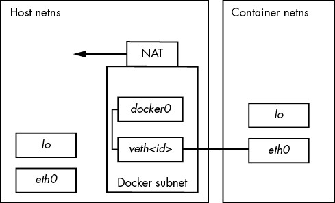
Figure 17-1: Bridge network in Docker. The thick link represents the virtual interface pair bond.
NOTE
You might need to examine the subnet of your Docker interface network. There can sometimes be clashes between it and the NAT-based network assigned by router hardware from telecommunications companies.
Rootless operation networking in Podman is different because setting up virtual interfaces requires superuser access. Podman still uses a new network namespace, but it needs an interface that can be set up to operate in user space. This is a TAP interface (usually at tap0), and in conjunction with a forwarding daemon called slirp4netns, container processes can reach the outside world. This is less capable; for example, containers cannot connect to one another.
There’s a lot more to networking, including how to expose ports in the container’s network stack for external services to use, but the network topology is the most important thing to understand.
Docker Operation
At this point, we could continue with a discussion of the various other kinds of isolation and restrictions that Docker enables, but it would take a long time and you probably get the point by now. Containers don’t come from one particular feature, but rather a collection of them. A consequence is that Docker must keep track of all of the things we do when creating a container and must also be able to clean them up.
Docker defines a container as “running” as long as it has a process running. You can show the currently running containers with docker ps:
$ docker ps
CONTAINER ID IMAGE COMMAND CREATED STATUS PORTS NAMES
bda6204cecf7 hlw_test "/bin/bash" 8 hours ago Up 8 hours boring_lovelace
8a48d6e85efe hlw_test "/bin/bash" 20 hours ago Up 20 hours awesome_elion
As soon as all of its processes terminate, Docker puts them in an exit state, but it still keeps the containers (unless you start with the --rm option). This includes the changes made to the filesystem. You can easily access the filesystem with docker export.
You need to be aware of this, because docker ps doesn’t show exited containers by default; you have to use the -a option to see everything. It’s really easy to accumulate a large pile of exited containers, and if the application running in the container creates a lot of data, you can run out of disk space and not know why. Use docker rm to remove a terminated container.
This also applies to old images. Developing an image tends to be a repetitive process, and when you tag an image with the same tag as an existing image, Docker doesn’t remove the original image. The old image simply loses that tag. If you run docker images to show all the images on your system, you can see all of the images. Here’s an example showing a previous version of an image without a tag:
$ docker images
REPOSITORY TAG IMAGE ID CREATED SIZE
hlw_test latest 1b64f94e5a54 43 hours ago 9.19MB
<none> <none> d0461f65b379 46 hours ago 9.19MB
alpine latest f70734b6a266 4 weeks ago 5.61MB
Use docker rmi to remove an image. This also removes any unnecessary intermediate images that the image builds on. If you don’t remove images, they can add up over time. Depending on what’s in the images and how they are built, this can consume a significant amount of storage space on your system.
In general, Docker does a lot of meticulous versioning and checkpointing. This layer of management reflects a particular philosophy compared to tools like LXC, which you’ll see soon.
Docker Service Process Models
One potentially confusing aspect of Docker containers is the lifecycle of the processes inside them. Before a process can completely terminate, its parent is supposed to collect (“reap”) its exit code with the wait() system call. However, in a container, there are some situations in which dead processes can remain because their parents don’t know how to react. Along with the way that many images are configured, this might lead you to conclude that you’re not supposed to run multiple processes or services inside a Docker container. This is not correct.
You can have many processes in a container. The shell we ran in our example starts a new child process when you run a command. The only thing that really matters is that when you have child processes, the parent cleans up upon their exit. Most parents do this, but in certain circumstances, you might run into a situation where one does not, especially if it doesn’t know that it has children. This can happen when there are multiple levels of process spawning, and the PID 1 inside the container ends up being the parent of a child that it doesn’t know about.
To remedy this, if you have a simple single-minded service that just spawns some processes and seems to leave lingering processes even when a container is supposed to terminate, you can add the --init option to docker run. This creates a very simple init process to run as PID 1 in the container and act as a parent that knows what to do when a child process terminates.
However, if you’re running multiple services or tasks inside a container (such as multiple workers for some job server), instead of starting them with a script, you might consider using a process management daemon such as Supervisor (supervisord) to start and monitor them. This not only provides the necessary system functionality, but also gives you more control over service processes.
On that note, if you’re thinking about this kind of model for a container, there’s a different option that you might consider, and it doesn’t involve Docker.
17.2.3 LXC
Our discussion has revolved around Docker not only because it’s the most popular system for building container images, but also because it makes it very easy to get started and jump into the layers of isolation that containers normally provide. However, there are other packages for creating containers, and they take different approaches. Of these, LXC is one of the oldest. In fact, the first versions of Docker were built on LXC. If you understood the discussion of how Docker does its work, you won’t have trouble with LXC technical concepts, so we won’t go over any examples. Instead, we’ll just explore some of the practical differences.
The term LXC is sometimes used to refer to the set of kernel features that make containers possible, but most people use it to refer specifically to a library and package containing a number of utilities for creating and manipulating Linux containers. Unlike Docker, LXC involves a fair amount of manual setup. For example, you have to create your own container network interface, and you need to provide user ID mappings.
Originally, LXC was intended to be as much of an entire Linux system as possible inside the container—init and all. After installing a special version of a distribution, you could install everything you needed for whatever you were running inside the container. That part isn’t too different from what you’ve seen with Docker, but there is more setup to do; with Docker, you just download a bunch of files and you’re ready to go.
Therefore, you might find LXC more flexible in adapting to different needs. For example, by default, LXC doesn’t use the overlay filesystem that you saw with Docker, although you can add one. Because LXC is built on a C API, you can use this granularity in your own software application if necessary.
An accompanying management package called LXD can help you work through some of LXC’s finer, manual points (such as network creation and image management) and offers a REST API that you can use to access LXC instead of the C API.
17.2.4 Kubernetes
Speaking of management, containers have become popular for many kinds of web servers, because you can start a bunch of containers from a single image across multiple machines, providing excellent redundancy. Unfortunately, this can be difficult to manage. You need to perform tasks such as the following:
- Track which machines are able to run containers.
- Start, monitor, and restart containers on those machines.
- Configure container startup.
- Configure the container networking as required.
- Load new versions of container images and update all running containers gracefully.
That isn’t a complete list, nor does it properly convey the complexity of each task. Software was begging to be developed for it, and among the solutions that appeared, Google’s Kubernetes has become dominant. Perhaps one of the largest contributing factors for this is its ability to run Docker container images.
Kubernetes has two basic sides, much like any client-server application. The server involves the machine(s) available to run containers, and the client is primarily a set of command-line utilities that launch and manipulate sets of containers. The configuration files for containers (and the groups they form) can be extensive, and you’ll quickly find that most of the work involved on the client side is creating the appropriate configuration.
You can explore the configuration on your own. If you don’t want to deal with setting up the servers yourself, use the Minikube tool to install a virtual machine running a Kubernetes cluster on your own machine.
17.2.5 Pitfalls of Containers
If you think about how a service like Kubernetes works, you’ll also realize that a system utilizing containers is not without its costs. At minimum, you still need one or more machines on which to run your containers, and this has to be a full-fledged Linux machine, whether it’s on real hardware or a virtual machine. There’s still a maintenance cost here, although it might be simpler to maintain this core infrastructure than a configuration that requires many custom software installations.
That cost can take several forms. If you choose to administer your own infrastructure, that’s a significant investment of time, and still has hardware, hosting, and maintenance costs. If you instead opt to use a container service like a Kubernetes cluster, you’ll be paying the monetary cost of having someone else do the work for you.
When thinking of the containers themselves, keep in mind the following:
- Containers can be wasteful in terms of storage. In order for any application to function inside a container, the container must include all the necessary support of a Linux operating system, such as shared libraries. This can become quite large, especially if you don’t pay particular attention to the base distribution that you choose for your containers. Then, consider your application itself: how big is it? This situation is mitigated somewhat when you’re using an overlay filesystem with several copies of the same container, because they share the same base files. However, if your application creates a lot of runtime data, the upper layers of all of those overlays can grow large.
- You still have to think about other system resources, such as CPU time. You can configure limits on how much containers can consume, but you’re still constrained by how much the underlying system can handle. There’s still a kernel and block devices. If you overload stuff, then your containers, the system underneath, or both will suffer.
- You might need to think differently about where you store your data. In container systems such as Docker that use overlay filesystems, the changes made to the filesystem during runtime are thrown away after the processes terminate. In many applications, all of the user data goes into a database, and then that problem is reduced to database administration. But what about your logs? Those are necessary for a well-functioning server application, and you still need a way to store them. A separate log service is a must for any substantial scale of production.
- Most container tools and operation models are geared toward web servers. If you’re running a typical web server, you’ll find a great deal of support and information about running web servers in containers. Kubernetes, in particular, has a lot of safety features for preventing runaway server code. This can be an advantage, because it compensates for how (frankly) poorly written most web applications are. However, when you’re trying to run another kind of service, it can sometimes feel like you’re trying to drive a square peg into a round hole.
- Careless container builds can lead to bloat, configuration problems, and malfunction. The fact that you’re creating an isolated environment doesn’t shield you from making mistakes in that environment. You might not have to worry so much about the intricacies of systemd, but plenty of other things still can go wrong. When problems arise in any kind of system, inexperienced users tend to add things in an attempt to make the problem go away, often haphazardly. This can continue (often blindly) until at last there’s a somewhat functional system—with many additional issues. You need to understand the changes you make.
- Versioning can be problematic. We used the latest tag for the examples in this book. This is supposed to be the latest (stable) release of a container, but it also means that when you build a container based on the latest release of a distribution or package, something underneath can change and break your application. One standard practice is to use a specific version tag of a base container.
- Trust can be an issue. This applies particularly to images built with Docker. When you base your containers on those in the Docker image repository, you’re placing trust in an additional layer of management that they haven’t been altered to introduce even more security problems than usual, and that they’ll be there when you need them. This contrasts with LXC, where you’re encouraged to build your own to a certain degree.
When considering these issues, you might think that containers have a lot of disadvantages compared to other ways of managing system environments. However, that’s not the case. No matter what approach you choose, these problems are present in some degree and form—and some of them are easier to manage in containers. Just remember that containers won’t solve every problem. For example, if your application takes a long time to start on a normal system (after booting), it will also start slowly in a container.
17.3 Runtime-Based Virtualization
A final kind of virtualization to mention is based on the type of environment used to develop an application. This differs from the system virtual machines and containers that we’ve seen so far, because it doesn’t use the idea of placing applications onto different machines. Instead, it’s a separation that applies only to a particular application.
The reason for these kinds of environments is that multiple applications on the same system can use the same programming language, causing potential conflicts. For example, Python is used in several places on a typical distribution and can include many add-on packages. If you want to use the system’s version of Python in your own package, you can run into trouble if you want a different version of one of the add-ons.
Let’s look at how Python’s virtual environment feature creates a version of Python with only the packages that you want. The way to start is by creating a new directory for the environment like this:
$ python3 -m venv test-venv
NOTE
By the time you read this, you might simply be able to type python instead of python3.
Now, look inside the new test-venv directory. You’ll see a number of system-like directories such as bin, include, and lib. To activate the virtual environment, you need to source (not execute) the test-venv/bin/activate script:
$ . test-env/bin/activate
The reason for sourcing the execution is that activation is essentially setting an environment variable, which you can’t do by running an executable. At this point, when you run Python, you get the version in test-venv/bin directory (which is itself only a symbolic link), and the VIRTUAL_ENV environment variable is set to the environment base directory. You can run deactivate to exit to the virtual environment.
It isn’t any more complicated than that. With this environment variable set, you get a new, empty packages library in test-venv/lib, and anything new you install when in the environment goes there instead of in the main system’s library.
Not all programming languages allow virtual environments in the way Python does, but it’s worth knowing about it, if for no other reason than to clear up some confusion about the word virtual.
Bibliography
Abrahams, Paul W., and Bruce Larson, UNIX for the Impatient, 2nd ed. Boston: Addison-Wesley Professional, 1995.
Aho, Alfred V., Brian W. Kernighan, and Peter J. Weinberger, The AWK Programming Language. Boston: Addison-Wesley, 1988.
Aho, Alfred V., Monica S. Lam, Ravi Sethi, and Jeffery D. Ullman, Compilers: Principles, Techniques, and Tools, 2nd ed. Boston: Addison-Wesley, 2006.
Aumasson, Jean-Philippe, Serious Cryptography: A Practical Introduction to Modern Encryption. San Francisco: No Starch Press, 2017.
Barrett, Daniel J., Richard E. Silverman, and Robert G. Byrnes, SSH, The Secure Shell: The Definitive Guide, 2nd ed. Sebastopol, CA: O’Reilly, 2005.
Beazley, David M., Python Distilled. Addison-Wesley, 2021.
Beazley, David M., Brian D. Ward, and Ian R. Cooke, “The Inside Story on Shared Libraries and Dynamic Loading.” Computing in Science & Engineering 3, no. 5 (September/October 2001): 90–97.
Calcote, John, Autotools: A Practitioner’s Guide to GNU Autoconf, Automake, and Libtool, 2nd ed. San Francisco: No Starch Press, 2019.
Carter, Gerald, Jay Ts, and Robert Eckstein, Using Samba: A File and Print Server for Linux, Unix, and Mac OS X, 3rd ed. Sebastopol, CA: O’Reilly, 2007.
Christiansen, Tom, brian d foy, Larry Wall, and Jon Orwant, Programming Perl: Unmatched Power for Processing and Scripting, 4th ed. Sebastopol, CA: O’Reilly, 2012.
chromatic, Modern Perl, 4th ed. Hillsboro, OR: Onyx Neon Press, 2016.
Davies, Joshua. Implementing SSL/TLS Using Cryptography and PKI. Hoboken, NJ: Wiley, 2011.
Friedl, Jeffrey E. F., Mastering Regular Expressions, 3rd ed. Sebastopol, CA: O’Reilly, 2006.
Gregg, Brendan, Systems Performance: Enterprise and the Cloud, 2nd ed. Boston: Addison-Wesley, 2020.
Grune, Dick, Kees van Reeuwijk, Henri E. Bal, Ceriel J. H. Jacobs, and Koen Langendoen, Modern Compiler Design, 2nd ed. New York: Springer, 2012.
Hopcroft, John E., Rajeev Motwani, and Jeffrey D. Ullman, Introduction to Automata Theory, Languages, and Computation, 3rd ed. Upper Saddle River, NJ: Prentice Hall, 2006.
Kernighan, Brian W., and Rob Pike, The UNIX Programming Environment. Upper Saddle River, NJ: Prentice Hall, 1984.
Kernighan, Brian W., and Dennis M. Ritchie, The C Programming Language, 2nd ed. Upper Saddle River, NJ: Prentice Hall, 1988.
Kochan, Stephen G., and Patrick Wood, Unix Shell Programming, 3rd ed. Indianapolis: SAMS Publishing, 2003.
Levine, John R., Linkers and Loaders. San Francisco: Morgan Kaufmann, 1999.
Lucas, Michael W., SSH Mastery: OpenSSH, PuTTY, Tunnels, and Keys, 2nd ed. Detroit: Tilted Windmill Press, 2018.
Matloff, Norman, The Art of R Programming: A Tour of Statistical Software Design. San Francisco: No Starch Press, 2011.
Mecklenburg, Robert, Managing Projects with GNU Make, 3rd ed. Sebastopol, CA: O’Reilly, 2005.
Peek, Jerry, Grace Todino-Gonguet, and John Strang, Learning the UNIX Operating System: A Concise Guide for the New User, 5th ed. Sebastopol, CA: O’Reilly, 2001.
Pike, Rob, Dave Presotto, Sean Dorward, Bob Flandrena, Ken Thompson, Howard Trickey, and Phil Winterbottom, “Plan 9 from Bell Labs.” Accessed February 1, 2020, https://9p.io/sys/doc/.
Poulton, Nigel, Docker Deep Dive. Author, 2016.
Quinlan, Daniel, Rusty Russell, and Christopher Yeoh, eds., “Filesystem Hierarchy Standard, Version 3.0.” Linux Foundation, 2015, https://refspecs.linuxfoundation.org/fhs.shtml.
Raymond, Eric S., ed., The New Hacker’s Dictionary. 3rd ed. Cambridge, MA: MIT Press, 1996.
Robbins, Arnold, sed & awk Pocket Reference, 2nd ed. Sebastopol, CA: O’Reilly, 2002.
Robbins, Arnold, Elbert Hannah, and Linda Lamb, Learning the vi and Vim Editors: Unix Text Processing, 7th ed. Sebastopol, CA: O’Reilly, 2008.
Salus, Peter H., The Daemon, the Gnu, and the Penguin. Tacoma, WA: Reed Media Services, 2008.
Samar, Vipin, and Roland J. Schemers III. “Unified Login with Pluggable Authentication Modules (PAM),” October 1995, Open Software Foundation (RFC 86.0), http://www.opengroup.org/rfc/rfc86.0.html.
Schwartz, Randal L., brian d foy, and Tom Phoenix, Learning Perl: Making Easy Things Easy and Hard Things Possible, 7th ed. Sebastopol, CA: O’Reilly, 2016.
Shotts, William, The Linux Command Line, 2nd ed. San Francisco: No Starch Press, 2019.
Silberschatz, Abraham, Peter B. Galvin, and Greg Gagne, Operating System Concepts, 10th ed. Hoboken, NJ: Wiley, 2018.
Smith, Jim, and Ravi Nair, Virtual Machines: Versatile Platforms for Systems and Processes. Cambridge, MA: Elsevier, 2005.
Stallman, Richard M., GNU Emacs Manual, 18th ed. Boston: Free Software Foundation, 2018.
Stevens, W. Richard, Bill Fenner, and Andrew M. Rudoff, Unix Network Programming, Volume 1: The Sockets Networking API, 3rd ed. Boston: Addison-Wesley Professional, 2003.
Tanenbaum, Andrew S., and Herbert Bos, Modern Operating Systems, 4th ed. Upper Saddle River, NJ: Prentice Hall, 2014.
Tanenbaum, Andrew S., and David J. Wetherall, Computer Networks, 5th ed. Upper Saddle River, NJ: Prentice Hall, 2010.
Index
Please note that index links to approximate location of each term.
Numbers and Symbols
., 17. See also directory, current
/. See directory, root
.., 17. See also directory, parent
#, 13
#!. See shebang
$, 12–13. See also shell, prompt
$#, 297
$$, 33, 298
$0, 297
$1, 296
$?, 298. See also exit code
$@, 297
&&, 300–301
*, 18–19. See also glob
|, 28–29. See also pipe
||, 300–301
<. See file, redirect command input from
<<. See here document
>. See file, redirect command output to
>>. See file, redirect command output to
?, 18–19. See also glob
[, 299. See also test
~, 17
A
abstraction, 1–2
administrator. See root
AFS (Andrew File System), 333–334
alias, 339
ALSA (Advanced Linux Sound Architecture), 55–56
Apple partition. See filesystem, HFS+
application layer. See network, application layer
archive, 39–41
table of contents, 40
testing, 40, 387–388
ARP (Address Resolution Protocol), 264–265
at, 187–188
ATA, 64–66
autoconf, 388–393
Autotools. See GNU Autotools
Avahi, 281
awk, 309
B
basename, 308–309
bash, 12. See also Bourne Shell
startup file (see startup file, bash)
.bash_profile, 340–342
.bashrc, 340–342
bg, 34
/bin, 42
/bin/bash. See bash
/bin/sh. See Bourne Shell
BIOS, 121–122
boot partition, 133
bison, 379
blkid, 85
block bitmap, 114
block device. See device, block
blockdev, 76
/boot, 43, 127–131
boot, 117–118. See also init
init (see init)
loader (see boot loader)
messages, 118–119, 171–172
network configuration, 239–240
boot loader, 117, 121–123
chainloading, 132
filesystem access, 121–122 (see also GRUB, filesystem access)
GRUB (see GRUB)
internals, 132–135
multi-stage, 133
system other than Linux, 132
Bourne Shell, 12–13
basic use, 12–13
Bourne-again (see bash)
script (see shell script)
bpfilter, 259
Btrfs. See filesystem, Btrfs
building software, 386–399
bunzip2, 41
bus error, 31–32
BusyBox, 258
bzip2, 41
C
C, 364–365
compiler, 376–377, 392
preprocessor, 372–373, 377, 391, 398
case, 304
cat, 13–14
cd, 17
cgroup, 144, 147, 216–220
container, 406
controller, 219–221
creating, 220–221
listing, 218–219
version 1, 218–219
chainloading. See boot loader, chainloading
character device. See device, character
child process. See process, child
chmod, 36–37. See also permissions
Chrome OS, 362
chroot, 406
chsh, 12, 22, 193–195
chvt, 55, 355
CIDR (Classless Inter-Domain Routing), 229–232
CIFS. See filesystem, CIFS
clang, 364
CLASSPATH, 382
clobber, 28
clock. See real-time clock; system clock
cloud services, 403–404
cloud storage, 333
CMake, 388, 399
command-line editing, 25
command substitution, 306
compiler, 383
compiling, 364–366
compositor. See Wayland, compositor
compress. See file, compress
concatenate (files), 13–14
configuration file, 42
configure, 388–393
container
building, 407–409
definition, 406
filesystem, 410–411
image, 407–409, 413
limitations, 415–417
networking, 411
operation, 412–414
privilege requirements, 406–407
purpose, 405
rootless, 407
running, 409–410
storing data, 416
context switch, 5–6
control group. See cgroup
controlling terminal, 54
coreboot, 123
coreutils, 389, 395
cp, 15
cpio, 164
cpp, 373. See also C, preprocessor
CPU, 2–6
load (see load average)
multiple, 6, 205
performance, 208–210, 212–214
time, 32, 200, 207–208, 221
virtual machine, 403–404
cron, 183–185, 187
csh, 342
CTRL-C, 14
CTRL-D, 14
CUPS, 360–362
curl, 271–272
current working directory. See directory, current
cylinder (disk), 78–79
D
D-Bus, 148, 241, 359–360
instance, 360
monitoring, 360
systemd unit, 142
date, 182
dd, 50–51, 93
debugfs, 93
default gateway, 230–231, 238
default route, 230
default.target, 143
default user settings, 343–344
demand paging, 210
desktop, 347–348
desktop background, 359
Desktop Bus. See D–Bus
desktop environment, 350
/dev, 42, 48–66
/dev/dm–*, 53, 100
/dev/hd*, 53
/dev/lp*, 55
/dev/mapper, 53, 100, 105
/dev/null, 48–49
/dev/nvme*, 53
/dev/parport*, 55
/dev/pts, 54
/dev/sd*, 52–53
/dev/sg*, 53, 66–67
/dev/snd, 55
/dev/sr*, 53, 67
/dev/tty*, 54–55
/dev/vd*, 53
/dev/xvd*, 53, 403
/dev/zero, 50–51
device, 47
audio, 55–56
block, 48–50, 56, 64, 66–67, 69–78, 96–97
character, 49–50, 56
creating file, 56
disk, 48–50
driver, 4, 6–7, 117
file, 42, 48–49, 56–61
finding, 51
information, 49–50, 58, 60–61
initialization, 57–62
major and minor numbers, 49, 58, 100
monitor, 61
name, 51–55
network, 49
node (see device, file)
optical, 53, 67, 81
parallel, 55
pipe (see pipe, named)
SCSI (see SCSI)
serial, 55
socket, 49, 289–290
terminal, 53–55
types, 48–49
device mapper, 53, 108–110
devtmpfs, 57–58
df, 89–91
DHCP (Dynamic Host Configuration Protocol), 252–253
diff, 21, 395
directory, 16–18, 36
change, 17
create, 17
current, 17, 20, 201
errors, 31
hierarchy, 16–17, 42–44
home (see home directory)
internal structure, 112–113
listing contents, 15
parent, 17, 112–114
permissions (see permissions, directory)
remove, 17–18
root, 16–17, 42–43, 117, 120, 124–125, 144 (see also inode, root)
disk
buffer and cache, 86
capacity, 72–74 (see also filesystem, capacity)
device, 52–53, 69–78
device file (see device, disk)
format (see filesystem, creating; partition, creating table)
geometry, 77–80
monitoring usage, 212–216
partition (see partition)
PATA, 53
quota, 222
raw access, 71
SATA, 52, 58–60, 62, 64–66
scheduling priority, 215
schematic, 70–71
SCSI, 52–53, 62–63
solid state, 80
disk (continued)
swap (see swap)
usage (see filesystem, usage)
virtual, 53
display manager, 355
display modes, 54–55
dmesg, 118. See also kernel, log
dmsetup, 109. See also device mapper
DNS (Domain Name Service), 235, 243–246
dnsmasq, 245
Docker, 406–414
documentation, 26–28
Domain Name Service. See DNS
dot file, 22, 336
DPMS (Display Power Management Signaling), 359
du, 90–91
dual-stack network, 233
Dynamic Host Configuration Protocol (DHCP), 252–253
E
echo, 13, 16
EDITOR, 344
effective user ID, 189–190
EFI. See UEFI
efilinux, 123
egrep, 19
elapsed time, 207
Emacs, 26
emulator, 402
encryption, 197–198, 273–274
env, 292, 380
environment variable, 22–23, 311
EOF (end-of-file) message, 14
error message, 29–30, 204
ESP (EFI System Partition). See UEFI, ESP
/etc, 42, 141, 167, 176–177
/etc/fstab, 52, 85, 88–89
/etc/group, 180
/etc/hosts, 244
/etc/init.d, 159
/etc/inittab, 157–158
/etc/ld.so.cache, 369
/etc/ld.so.conf, 369
/etc/localtime, 182
/etc/login.defs, 197
/etc/mtab, 86–87
/etc/nologin, 162
/etc/nsswitch.conf, 246
/etc/passwd, 27, 36, 177–179, 192–193
/etc/profile, 340
/etc/rc.d, 157–161
/etc/resolv.conf, 245
/etc/services, 249–250
/etc/shadow, 177, 179, 197
/etc/shells, 179, 193–195
/etc/sudoers, 45
eth0, 236
Ethernet, 235–236, 264–265
bridge, 236
wireless, 266–268
euid. See effective user ID
exec, 311
exec(), 7, 203, 311
executable, 36–37, 42–43, 87, 292, 365–367, 380
exit, 298
exit code, 298
export, 23
expr, 311
ext4. See filesystem, ext2/ext3/ext4
F
fail2ban, 276–277
fdisk, 72–73, 75–78
fg, 34–35
FHS (Filesystem Hierarchy Standard), 42
file
compare with another file, 21
compress, 39–41, 321–322
copy, 15 (see also file transfer)
create empty, 16
delete, 16, 113–114
descriptor (see file descriptor)
details, 15
device (see device, file)
dot (see dot file)
errors, 30–31
find, 21
find text in, 19–20
format, 21
group, 15, 35–37
link, 38, 111–114, 303
link count, 113–114
listing, 15
mode, 35–37 (see also permissions)
move, 16
open, 200–202
owner, 15, 35–37
permissions (see permissions)
redirect command input from, 29
redirect command output to, 28–29
regular, 35
rename, 15
sharing across a network, 323–334
sharing with other users, 9
socket (see device, socket)
swap, 97
temporary, 43, 307
test, 301–303
type, 35, 38, 48, 201
update timestamp, 16
file (command), 21
file descriptor, 201, 203–204
file transfer, 315–316
choosing method, 316
rsync (see rsync)
SSH (secure shell), 278
with Python, 316
filesystem, 70–71, 80
boot loader access (see boot loader, filesystem access)
Btrfs, 81–82
capacity, 89–91
cgroup, 219 (see also cgroup)
checking, 91–93
CIFS, 331
creating, 82–83, 105
currently attached, 84
ext2/ext3/ext4, 81–85, 91–93
FAT, 81
HFS+, 81
hierarchy, 42–44
internal structure, 82, 111–115
ISO 9660, 81
journal, 81, 91–93
mount, 83–89, 140
mounting, 105
mount options, 86–87
NFS (Network File System), 332–333
overlay, 94, 410–411
proc (see /proc)
read-only, 86, 121
remount, 87–88
repairing, 91–93
resizing, 97, 107
squashfs, 94
tmpfs, 93–94
types, 81–82
usage, 89–91
user space, 81, 115, 333–334
UUID (universally unique identifier), 85, 88, 96, 120–121, 124–126
XFS, 81
Filesystem Hierarchy Standard (FHS), 42
find, 21, 310
finding appropriate command, 26–27
firewall, 259–264
rule, 261–262
strategy, 262–264
flex, 379
folder. See directory
for, 305
fork(), 7, 147–148, 203, 205, 272
frame (Ethernet), 236
free, 96
fsadm, 107
fsck, 88, 91–93
fsuid, 190
FTP, 278, 287
FUSE (File System in User Space). See filesystem, user space
G
gateway, 227, 230–231
gcc, 364
GECOS, 178
geteuid(), 191–192
getty, 54, 143, 158, 181
Ghostscript, 361–362
glob, 18–19, 22, 293–294. See also regular expression
global unicast address, 232–233
GNOME, 350
gnome–shell, 351–352
GNU Autotools, 386, 399. See also autoconf
gparted, 72
GPT (Globally Unique Identifier Partition Table), 72–73, 126
grep, 19–20, 300
group, 10, 178, 180
listing, 36
permissions (see permissions, group)
groups, 36
GRUB, 123–135
boot command, 127
command line, 126–127
configuration, 124–125, 127–129
devices, 124–126
filesystem access, 126–127
insmod, 124–125
installing, 130–131
internals, 134–135
menu, 123–125, 128–129
on removable media, 131
root, 124–128
grub-mkconfig, 127–129
GTK+, 350
guest (operating system), 403
gunzip, 39–41
gzip, 39–41
H
halt, 162–163
hard link. See file, link
hardware operation, 4
head, 21
header file, 44, 371–372, 391, 393–394
locating, 398
help, 26–28
here document, 308
/home, 42
home directory, 17, 42, 178
host, 224, 235
host key, 274–276
HTTP, 270–272
hypervisor, 402–403
I
I/O monitoring, 214–216
ICMP, 234–235, 254
if/then/else, 299–300
ifconfig, 228. See also ip
image, 4. See also container, image
include file. See header file
inetd, 279
info (GNU), 28
init, 118–120, 138–139. See also systemd
container, 413–414
identifying, 139
process tracking, 158 (see also systemd, process tracking)
runlevel (see runlevel)
System V, 139, 156–161
System V sequence, 158–159
Upstart, 139
initramfs, 124–125, 135, 163–164
initrd, 164. See also initramfs
inode, 91–92, 111–115, 303
root, 112–113
installing software, 385–386, 394–395
interactive shell, 340–342
interface ID (IPv6), 232
internet layer. See network, internet layer
iostat, 214–215
iotop, 216–217
ip (command), 228–230, 232–233, 237–238, 264–265
IP (internet protocol), 226
address, 227–228, 237–238
chain, 259–260
filter, 259–262
forwarding, 255
masquerading, 256
subnet (see subnet)
table, 259–260
IPP (Internet Print Protocol), 361
iptables, 261–264
IPv4, 226, 231. See also IP
IPv6, 226–227, 231–233, 235, 238, 247, 253–254, 266
iw, 267
J
jar, 382
Java, 382, 404
job control, 34–35
jobs, 34
journalctl, 46, 51, 118–119, 145, 169–172, 175, 186–187
journald, 154, 156, 168–169, 173, 175, 186–187
K
KDE, 350
Kerberos, 333–334
kernel, 2–5
as a resource, 199
boot, 117, 119–123
boot messages, 118–119
compiling, 399
disk buffer and cache (see disk, buffer and cache)
disk I/O system, 71, 111
image location, 44, 125
load, 117, 121–122
log, 51, 61, 172
mode, 3
modules, 44
network interface (see network, interface)
parameters, 120–122, 124–125
reading partition table (see partition, reading table)
ring buffer, 118–119
routing table, 230
SCSI subsystem, 62–67
space, 3
thread, 4
keyboard, 357–359
kill, 33–34
Kubernetes, 415
L
LAN (local area network), 224
lastlog, 169
layer, 2
network (see network, layer)
LBA (Logical Block Addressing), 79, 122
LDAP (Lightweight Directory Access Protocol), 178
ldconfig, 369
LD_LIBRARY_PATH, 344, 369–371
ld.so, 369–370
ldd, 368–369
less, 20, 341–344
level, 2
in user space, 8–9
Lex, 379
/lib, 42
libata, 64–66
libinput, 352–353
library, 42
C, 366
linking against, 366–367, 370, 377, 390–391, 393–394
shared (see shared library)
static, 367–368
Lightweight Directory Access Protocol (LDAP), 178
LILO, 123
link
count (see file, link count)
farm, 159
hard (see file, link)
symbolic (see symbolic link)
link-local address, 232–233, 254
listening (on network port), 248–249, 279–280, 288–289
literal, 293–295
LLMNR (Link-Local Multicast Name Resolution), 245
LLVM project, 364, 383
ln, 38–39, 111, 113, 115. See also link, hard; link, symbolic
lo, 247
loadable kernel modules. See kernel, modules
load average, 208–210
LOADLIN, 123
local area network (LAN), 224
localhost, 242, 247
locate, 21
log, 9, 167–168. See also kernel, log; journald; journalctl
autoconf, 392–393
facility/severity/priority, 174–175
message, 168
monitoring, 172
Samba, 328
structured data, 175
sudo, 46
systemd unit (see systemd, unit log)
logger, 186
logical volume. See LVM
Logical Volume Manager (LVM). See LVM
login, 181
loginctl, 188
login shell, 340–342
logrotate, 172–173
loop. See shell script, loop
lost+found, 92, 114
ls, 15
lsof, 200–202
network, 280–281
Unix domain socket, 290
lsscsi, 52, 63, 66
lsusb, 65
ltrace, 204
LV (logical volume). See LVM, logical volume
LVM (Logical Volume Manager), 52–53, 96–110
advantages, 96–97
constructing system, 102–105
creating filesystem, 105
device names, 100
devices, 73–74
implementation, 107–110
listing, 97–100
logical volume, 96–100
logical volume, arrangement, 109–110
logical volume, creating, 104–105
logical volume, removing, 106–107
physical extent, 99
physical volume, 96–99, 101–103
physical volume, creating, 103
physical volume, metadata, 101, 108
resizing, 106–107, 110
scanning volumes, 108
schematic, 96–97
volume group, 96–99, 101–103
volume group, creating, 103
LXC, 414–415
M
MAC address, 235–237, 243, 264–265
main memory. See memory
make, 373–379
Makefile
dependency, 373–375, 377, 379
organization, 378–379
rule, 374, 377
separator, 375
standard target, 378, 392
staying up-to-date, 375–376
target, 374
man, 26–28
manual page, 26–28, 44, 338. See also man
MBR (Master Boot Record), 72–73, 126
boot, 130–131, 133
mDNS, 245
/media, 43
memory, 3–4
capacity, 94–96, 209–210
insufficient, 94–96, 209–210
management, 6, 119, 210–214
monitoring usage, 212–214
page (see page)
problems, 31–32
protection, 3
swap (see swap)
test, 129
virtual (see virtual memory)
mkdir, 17
mkfs, 82–83
mknod, 56
mkswap, 96–97
MMU (memory management unit), 6, 210–211
modules. See kernel, modules
mount, 83–89. See also filesystem, mount
mouse, 358
multitasking, 5–6
mv, 16
N
namespace. See network, namespace; process, namespace
nano, 26, 344
NAT (Network Address Translation), 255–258
NDP (Neighbor Discovery Protocol), 266
netcat, 282–283
Netplan, 239
netstat, 248–249, 279
network, 223–224
application layer, 225, 269–272
client, 248–249
configuration, 237–243, 252–254 (see also network configuration manager)
connection, 248–249, 270–271, 281
container (see container, networking)
firewall (see firewall)
host (see host)
interface, 49, 236–238, 411–412
internet layer, 225–235 (see also IP)
layer, 223, 225–227
localhost (see localhost)
namespace, 411–412
packet (see packet)
physical layer, 226, 235–236
port, 248–250, 270
prefix, 228
private (see private network)
promiscuous mode, 281
route, 230–231
router (see router)
security, 285–287
server, 248–249, 272
simple, 224, 227, 252
stack, 225
transport layer, 225–226, 247
troubleshooting, 234–235, 279–284
wireless (see wireless network)
Network Address Translation (NAT), 255–258
network configuration manager, 240–243
Network Information Service (NIS), 178
network layer, 225–226. See also network, internet layer
NetworkManager, 240–243, 267–268
network mask. See subnet, mask
Network Time Protocol (NTP), 182–183, 251
NFS (Network File System). See filesystem, NFS
nftables, 259
nice value, 208
NIS (Network Information Service), 178
nmap, 284
nobody (user), 178
nslookup, 245
NTP (Network Time Protocol), 182–183, 251
NVMe (Non-Volatile Memory Express), 53, 63
O
object file, 365–366
OOM killer, 96
open(), 203–204
open source, 385–386
OpenWRT, 258
operating system–level virtualization, 406
/opt, 43
OSS (Open Sound System), 55–56
P
package, 390, 394–395, 399–400
packet, 224–225
page, 210–213
page fault, 211–212
PAGER, 344
pager, 20, 344
page table, 6, 210
PAM (Pluggable Authentication Modules), 192–198
parallel port, 55
paravirtualization, 403
parted, 72–73, 75–76
partition, 52, 57, 70, 82
alignment, 79–80
altering table, 75–76
Apple (see filesystem, HFS+)
capacity, 72–74 (see also filesystem, capacity)
creating table, 76–78
extended, 72–73
logical, 72–73
primary, 72–73
reading table, 74–76
swap, 72–73, 96 (see also swap)
system ID, 72–74
table, 70–79
viewing, 72–75
Windows (see filesystem, FAT)
passwd, 22, 35–36, 179
password
change, 22
file (see /etc/passwd)
password change, 197–198
password file. See /etc/passwd
patch, 395–396
patchelf, 370
PATH. See path, command
path
absolute, 17
command, 23–24, 337–338
relative, 17
pathname. See path
pattern matching, 18–20
PE. See LVM, physical extent
performance, 199–200, 210
memory, 95–96
Perl, 20, 381
permissions, 31, 35–37
bits, 35–37
changing, 36–37
default, 37, 339–340
directory, 37
execute, 35–37
group, 35–37
other, 35–37
preserving, 40
read, 35–37
testing, 302–303
user, 35–37
world (see permissions, other)
write, 35–37
physical layer. See network, physical layer
physical volume (PV). See LVM, physical volume
Pico, 26
PID. See process, ID
pidstat, 216
ping, 234–235
pipe, 20, 28–29, 41
named, 49, 56
pkg–config, 393–394
Pluggable Authentication Modules (PAM), 192–198
plymouth, 54
Podman, 406–407, 411
port. See network, port
port scan, 284
PostScript, 360–362
predictable network interface device name, 236
printing, 55, 360–362
private network, 255–257
/proc, 42, 88, 93
/proc/devices, 51
process, 3–4, 32–35, 93
accounting, 222
background, 34–35
blocked, 213
child, 204, 413–414
continue, 33–35
grouping (see cgroup)
ID, 32–34, 201, 205–206, 220, 298
interface, 42
listing, 32–33
log messages, 169
management, 5–6
memory, 6, 96, 200, 210–212
monitoring, 216
namespace, 410
open files, 200–202
owner, 9, 189–190
parent, 413–414
priority, 207–208
ready to run, 208–210
starting new, 7
status, 32
stop, 33–35
terminate, 33–34
tracking, 200
unexpected termination, 96
.profile, 340
prompt. See shell, prompt
ps, 32–33, 190, 212
pseudodevice, 8
pseudoterminal, 54
pseudo-user, 178–179
public key encryption, 274
pulseaudio, 56
PV (physical volume). See LVM, physical volume
pwd, 20
Python, 292, 380–381, 417–418
Q
Qt, 350
R
read, 312
real-time clock, 181
real user ID, 189–190
reboot, 162–163
redraw display, 35
regular expression, 19–20
regular file. See file, regular
remote login, 273–278
renice, 208
rescue image or CD, 164–165
resolvectl, 246
resolved. See system-resolved
resource
limiting, 216–222, 406
utilization, 207, 216, 221
resource monitoring, 206
reverse isearch, 35
RIP (Raster Image Processor), 361–362
rm, 16
rmdir, 17–18
root, 9, 178–179. See also directory, root
running programs as, 44–46
root directory. See directory, root
route, 230. See also network, route
router, 224, 227, 233, 254–259
RPC (remote procedure call), 284–285
rsync, 317
bandwidth, 322
compression, 321–322
copying from remote host, 322
copying to remote host, 317–322
exact copy, 318–319
excluding files, 320
verifying transfer, 321
rsyslogd, 169, 175
ruid. See real user ID
/run, 43
runlevel, 156–157
run-parts, 160–161
runtime-based virtualization, 417–418
runtime information, 43
runtime library search path, 369, 394
S
Samba, 324–330
client, 329–330
sar, 222
saved user ID, 190
/sbin, 43
scheduling class, 215
scheduling tasks, 183–188
SCons, 399
scp, 278
screen, 34
scripting language, 380–382
SCSI (Small Computer System Interface), 52–53, 62–67
disk (see disk, SCSI)
generic, 53, 66–67
ID, 62–63
listing device information, 52, 63, 66
sector, 79
secure shell. See SSH
security, 191–198
application, 405
in command path, 338
file sharing, 323–324, 331–334
network (see network, security)
sed, 309–310
segmentation fault, 31–32
serial port, 55
server role, 8–9
setuid, 36, 87, 189–191
sftp, 278
shadow password. See /etc/shadow
shared library, 42, 367–371, 390–391
system calls, 203
trace, 204
shebang, 292, 380
shell, 12–14. See also Bourne Shell
change, 12, 22
default, 343–344
editing commands, 25
process ID, 33, 298
prompt, 12–13, 22, 338–339
quoting, 293–295
special variable, 295–298
user, 178–179
variable, 22–23, 33, 295
window, 13, 35, 54
shell script, 12, 291–292
arguments, 296–297
arithmetic, 303–304, 311, 313
conditional, 299–304
shell script (continued)
include, 312
limitations, 292–293, 312–313
loop, 305–306
name, 297
permission, 292
reading user input, 312
string test, 303
shift, 296
shortcut. See symbolic link
shutdown, 159, 162–163
signal, 33–34
in shell script, 307
single-user mode, 121, 156, 164–165
Small Computer System Interface. See SCSI
socket, 288–290
device (see device, socket)
Unix domain (see Unix domain socket)
socket unit. See systemd, socket unit
sort, 22
sound, 55–56
source code, 364
sourcing, 312
special characters, 24–25
splash screen, 54, 118, 120
SSD (solid-state disk). See disk, solid state
SSH (secure shell), 272–278
systemd unit, 142–143
SSHFS, 331–332
SSID, 266
standard error, 29, 35
standard I/O, 14
redirection, 28–29
standard input, 14, 20, 29, 35, 39, 51
standard output, 14, 20, 28–29, 35, 39, 51
startup. See boot
startup file, 335–336
bash, 340–342
command path, 337–338
example, 341–343
order, 340–342
problems, 344
tcsh, 342–343
stat command, 113–114
stat() system call, 115
state, 4
stateless (network) configuration, 253–254
static library. See library, static
stderr. See standard error
stdin. See standard input
stdio. See standard I/O
stdout. See standard output
strace, 202–205
stream, 14, 20, 28–29, 49
edit (see sed)
ID (in shell), 29
search (see grep)
subnet, 227–229, 236
choosing, 255–256
mask, 228–230, 238
routing between, 254–256
subshell, 311–312
sudo, 13, 45–46, 190
superblock, 82, 92, 114
superserver, 279
superuser. See root
swap, 88, 94–96, 212–214
partition (see partition, swap)
swapoff, 95
swapon, 94–95
symbolic link, 38–39, 302
sync, 86
/sys, 43, 49–50. See also sysfs
syscall. See system call
sysctl, 255
sysfs, 49–50, 58, 93
SYSLINUX, 123
syslog, 168–169, 174–176
system call, 4, 7
trace, 202–205
system clock, 181–183
systemctl, 142, 144–147, 149
systemd, 118, 139–140
activating unit, 146
conditional dependencies, 150
configuration, 141–143
Conflicts dependency, 149
creating (adding) unit, 146–147
deactivating unit, 147
dependency, 140–141, 147–155
enabling unit, 147, 150–151
instance, 154
job, 145–146
mount unit, 89, 140, 144
on-demand resource, 151–154
operation, 144–147
parallel unit activation, 154–156
process tracking, 143, 147–148
reload unit configuration, 145
Requires dependency, 148–151
Requisite dependency, 149
service unit, 140, 142–143, 186
socket unit, 140, 142, 152–154, 279
specifier, 143, 153–154
System V compatibility, 161
target unit, 140, 146–147, 150–151
timer unit, 185–188
unit, 140–148
unit cgroup, 144
unit file, 142–143, 146–147, 150–151, 185–186
unit listing, 144–145
unit log, 144–145
unit startup order, 140–141, 148–149
unit status, 144, 146
variable, 143
Wants dependency, 146, 148–151
systemd- (prefix), 156
systemd–analyze, 140–141, 149
systemd-boot, 123
systemd-resolved, 156, 245
systemd-run, 188
system time, 207
System V init. See init, System V
system virtual machine, 402
T
tail, 21
TAP interface, 412
tar, 39–41, 312
TCP (Transmission Control Protocol), 247–251, 279–281
filtering, 262–264
interacting with service, 270–272
wrapper, 279
tcpdump, 281–283
tcsh, 342–343
telinit, 161
telnet, 270, 273, 287
tempfs. See filesystem, tmpfs
temporary file. See file, temporary
terminal, 53–54. See also shell, window
controlling (see controlling terminal)
device (see device, terminal)
virtual (see virtual console)
test, 299–304
text editor, 25–26, 344
text search, 19–20
thrash, 209–211. See also memory, insufficient
thread, 204–206
time, 207, 211–212. See also CPU, time; system time; elapsed time
time (of day), 181–183
timer unit. See systemd, timer unit
time slice, 5
timesyncd, 182–183
time zone, 182
TLS (Transport Layer Security), 226, 287
/tmp, 43
toolkit, 350
top, 200, 205–208
touch, 16
Transmission Control Protocol. See TCP
transport layer. See network, application layer
Transport Layer Security. See TLS
troubleshooting, 168
tune2fs, 85
U
udev, 48, 51–52, 56–62, 109
configuration and rules, 58–60
event (see uevent)
udevadm, 50–51, 60–61, 76
udevd, 56–62, 85, 156, 163
udisksd, 62
UDP (User Datagram Protocol), 250–251, 279–281
UEFI (Unified Extensible Firmware Interface), 121–122, 130–132
ESP (EFI System Partition), 133–135
secure boot, 131–132
uevent, 58, 61
umask, 37, 339–340
umount, 84
Unified Extensible Firmware Interface. See UEFI
Universal Coordinated Time (UTC), 181–183
Universally Unique Identifier (UUID), 52
Unix, 11–12
Unix domain socket, 289–290
unlink, 114. See also file, delete
unxz, 41
unzip, 41
uplink, 224. See also default gateway
Upstart, 139
uptime, 209
USB
listing device information, 65
relationship to SCSI, 52, 64–65
serial port, 55
user, 9
change, 44–46
id (see user ID)
management, 177–180
name (see username)
regular, 12
root (see root)
user authentication, 192–198. See also PAM; /etc/passwd
user authorization, 193. See also PAM
User Datagram Protocol (UDP), 250–251, 279–281
user environment, 335–336
user ID, 9, 177–179, 189–190
user identification, 191–192
userland. See user space
user mode, 3
username, 9, 177–179
user process. See process
user space, 3
and filesystems, 111
and LVM, 107
and user IDs, 179, 191–192
creating filesystems in, 82
filesystem (see filesystem, user space)
organization, 8–9
start, 117–118, 120, 137–139 (see also init)
/usr, 43–44
/usr/lib, 367
/usr/local, 44, 390, 395
/usr/share, 44
UTC (Universal Coordinated Time), 181–183
UUID (Universally Unique Identifier), 52
filesystem (see also filesystem, UUID)
V
/var, 43
/var/log, 169
VFS (Virtual File System), 81, 115
vi, 26
vipw, 179
virtual, 401
VirtualBox, 402–403
virtual console, 54–55, 158, 355
virtual disk. See disk, virtual
virtual interface (network), 411–412
virtual machine, 53, 382, 402–405
virtual memory, 6, 96, 401. See also memory, management
vmstat, 212–214
volume group. See LVM, volume group
W
wait(), 413
wallpaper. See desktop background
warning messages, 30
Wayland, 349–350
compositor, 349–352
input, 352–353
window manager, 349
X compatibility, 353–354
web server, 316
WEP (Wired Equivalent Privacy), 268
Weston, 351–352, 354
while, 305–306
who, 156
widget, 350
WiFi Protected Access (WPA), 268
wildcard. See glob
windowing system (determining), 351
window manager, 349–350
Windows
boot, 132
file sharing, 324–330
partition (see filesystem, FAT)
password, 326–327
printer sharing, 329
Wired Equivalent Privacy (WEP), 268
wireless network, 240–241. See also Ethernet, wireless
wlan0, 236, 267
worker process, 272
WPA (WiFi Protected Access), 268
wtmp, 169
X
xargs, 310
XDG Desktop Entry, 142
Xen, 403
xev, 356–357
X event. See X Window System, event
xinetd, 279
xinput, 357–358
XKB (X keyboard extension), 358–359
xlsclients, 356
xset, 359
X Window System
application, 350
client, 348–349, 355–356
diagnostics, 356–357
display, 354
event, 356–357
input, 357–359
network transparency, 355
preferences, 357–359
server, 54, 348–349, 354–355
tunneling, 273, 355
Wayland compatibility, 354
window manager (see window manager)
xwininfo, 356
xz, 41
Y
Yacc, 379
Z
zcat, 41
zip, 41
Table of Contents
Who Should Read This Book?
Prerequisites
How to Read This Book
A Hands-on Approach
How This Book Is Organized
What’s New in the Third Edition?
A Note on Terminology
1.1 Levels and Layers of Abstraction in a Linux System
1.2 Hardware: Understanding Main Memory
1.3 The Kernel
1.3.1 Process Management
1.3.2 Memory Management
1.3.3 Device Drivers and Management
1.3.4 System Calls and Support
1.4 User Space
1.5 Users
1.6 Looking Forward
Chapter 2: Basic Commands and Directory Hierarchy
2.1 The Bourne Shell: /bin/sh
2.2 Using the Shell
2.2.1 The Shell Window
2.2.2 cat
2.2.3 Standard Input and Standard Output
2.3 Basic Commands
2.3.1 ls
2.3.2 cp
2.3.3 mv
2.3.4 touch
2.3.5 rm
2.3.6 echo
2.4 Navigating Directories
2.4.1 cd
2.4.2 mkdir
2.4.3 rmdir
2.4.4 Shell Globbing (“Wildcards”)
2.5 Intermediate Commands
2.5.1 grep
2.5.2 less
2.5.3 pwd
2.5.4 diff
2.5.5 file
2.5.6 find and locate
2.5.7 head and tail
2.5.8 sort
2.6 Changing Your Password and Shell
2.7 Dot Files
2.8 Environment and Shell Variables
2.9 The Command Path
2.10 Special Characters
2.11 Command-Line Editing
2.12 Text Editors
2.13 Getting Online Help
2.14 Shell Input and Output
2.14.1 Standard Error
2.14.2 Standard Input Redirection
2.15 Understanding Error Messages
2.15.1 Anatomy of a Unix Error Message
2.15.2 Common Errors
2.16 Listing and Manipulating Processes
2.16.1 ps Command Options
2.16.2 Process Termination
2.16.3 Job Control
2.16.4 Background Processes
2.17 File Modes and Permissions
2.17.1 Modifying Permissions
2.17.2 Working with Symbolic Links
2.18 Archiving and Compressing Files
2.18.1 gzip
2.18.2 tar
2.18.3 Compressed Archives (.tar.gz)
2.18.4 zcat
2.18.5 Other Compression Utilities
2.19 Linux Directory Hierarchy Essentials
2.19.1 Other Root Subdirectories
2.19.2 The /usr Directory
2.19.3 Kernel Location
2.20 Running Commands as the Superuser
2.20.1 sudo
2.20.2 /etc/sudoers
2.20.3 sudo Logs
2.21 Looking Forward
3.1 Device Files
3.2 The sysfs Device Path
3.3 dd and Devices
3.4 Device Name Summary
3.4.1 Hard Disks: /dev/sd*
3.4.2 Virtual Disks: /dev/xvd*, /dev/vd*
3.4.3 Non-Volatile Memory Devices: /dev/nvme*
3.4.4 Device Mapper: /dev/dm-*, /dev/mapper/*
3.4.5 CD and DVD Drives: /dev/sr*
3.4.6 PATA Hard Disks: /dev/hd*
3.4.7 Terminals: /dev/tty*, /dev/pts/*, and /dev/tty
3.4.8 Serial Ports: /dev/ttyS*, /dev/ttyUSB*, /dev/ttyACM*
3.4.9 Parallel Ports: /dev/lp0 and /dev/lp1
3.4.10 Audio Devices: /dev/snd/*, /dev/dsp, /dev/audio, and More
3.4.11 Device File Creation
3.5 udev
3.5.1 devtmpfs
3.5.2 udevd Operation and Configuration
3.5.3 udevadm
3.5.4 Device Monitoring
3.6 In-Depth: SCSI and the Linux Kernel
3.6.1 USB Storage and SCSI
3.6.2 SCSI and ATA
3.6.3 Generic SCSI Devices
3.6.4 Multiple Access Methods for a Single Device
Chapter 4: Disks and Filesystems
4.1 Partitioning Disk Devices
4.1.1 Viewing a Partition Table
4.1.2 Modifying Partition Tables
4.1.3 Creating a Partition Table
4.1.4 Navigating Disk and Partition Geometry
4.1.5 Reading from Solid-State Disks
4.2 Filesystems
4.2.1 Filesystem Types
4.2.2 Creating a Filesystem
4.2.3 Mounting a Filesystem
4.2.4 Filesystem UUID
4.2.5 Disk Buffering, Caching, and Filesystems
4.2.6 Filesystem Mount Options
4.2.7 Remounting a Filesystem
4.2.8 The /etc/fstab Filesystem Table
4.2.9 Alternatives to /etc/fstab
4.2.10 Filesystem Capacity
4.2.11 Checking and Repairing Filesystems
4.2.12 Special-Purpose Filesystems
4.3 Swap Space
4.3.1 Using a Disk Partition as Swap Space
4.3.2 Using a File as Swap Space
4.3.3 Determining How Much Swap You Need
4.4 The Logical Volume Manager
4.4.1 Working with LVM
4.4.2 The LVM Implementation
4.5 Looking Forward: Disks and User Space
4.6 Inside a Traditional Filesystem
4.6.1 Inode Details and the Link Count
4.6.2 Block Allocation
4.6.3 Working with Filesystems in User Space
Chapter 5: How the Linux Kernel Boots
5.1 Startup Messages
5.2 Kernel Initialization and Boot Options
5.3 Kernel Parameters
5.4 Boot Loaders
5.4.1 Boot Loader Tasks
5.4.2 Boot Loader Overview
5.5.1 Exploring Devices and Partitions with the GRUB Command Line
5.5.2 GRUB Configuration
5.5.3 GRUB Installation
5.6 UEFI Secure Boot Problems
5.7 Chainloading Other Operating Systems
5.8 Boot Loader Details
5.8.1 MBR Boot
5.8.2 UEFI Boot
5.8.3 How GRUB Works
Chapter 6: How User Space Starts
6.2 Identifying Your init
6.3 systemd
6.3.1 Units and Unit Types
6.3.2 Booting and Unit Dependency Graphs
6.3.3 systemd Configuration
6.3.4 systemd Operation
6.3.5 systemd Process Tracking and Synchronization
6.3.6 systemd Dependencies
6.3.7 systemd On-Demand and Resource-Parallelized Startup
6.3.8 systemd Auxiliary Components
6.4 System V Runlevels
6.5 System V init
6.5.1 System V init: Startup Command Sequence
6.5.2 The System V init Link Farm
6.5.3 run-parts
6.5.4 System V init Control
6.5.5 systemd System V Compatibility
6.6 Shutting Down Your System
6.7 The Initial RAM Filesystem
6.8 Emergency Booting and Single-User Mode
6.9 Looking Forward
Chapter 7: System Configuration: Logging, System Time, Batch Jobs, and Users
7.1 System Logging
7.1.1 Checking Your Log Setup
7.1.2 Searching and Monitoring Logs
7.1.3 Logfile Rotation
7.1.4 Journal Maintenance
7.1.5 A Closer Look at System Logging
7.2 The Structure of /etc
7.3 User Management Files
7.3.1 The /etc/passwd File
7.3.2 Special Users
7.3.3 The /etc/shadow File
7.3.4 Manipulating Users and Passwords
7.3.5 Working with Groups
7.4 getty and login
7.5 Setting the Time
7.5.1 Kernel Time Representation and Time Zones
7.5.2 Network Time
7.6 Scheduling Recurring Tasks with cron and Timer Units
7.6.1 Installing Crontab Files
7.6.2 System Crontab Files
7.6.3 Timer Units
7.6.4 cron vs. Timer Units
7.7 Scheduling One-Time Tasks with at
7.7.1 Timer Unit Equivalents
7.8 Timer Units Running as Regular Users
7.9 User Access Topics
7.9.1 User IDs and User Switching
7.9.2 Process Ownership, Effective UID, Real UID, and Saved UID
7.9.3 User Identification, Authentication, and Authorization
7.9.4 Using Libraries for User Information
7.10 Pluggable Authentication Modules
7.10.1 PAM Configuration
7.10.2 Tips on PAM Configuration Syntax
7.10.3 PAM and Passwords
7.11 Looking Forward
Chapter 8: A Closer Look at Processes and Resource Utilization
8.1 Tracking Processes
8.2 Finding Open Files with lsof
8.2.1 Reading the lsof Output
8.2.2 Using lsof
8.3 Tracing Program Execution and System Calls
8.3.1 strace
8.3.2 ltrace
8.4 Threads
8.4.1 Single-Threaded and Multithreaded Processes
8.4.2 Viewing Threads
8.5.1 Measuring CPU Time
8.5.2 Adjusting Process Priorities
8.5.3 Measuring CPU Performance with Load Averages
8.5.4 Monitoring Memory Status
8.5.5 Monitoring CPU and Memory Performance with vmstat
8.5.6 I/O Monitoring
8.5.7 Per-Process Monitoring with pidstat
8.6 Control Groups (cgroups)
8.6.1 Differentiating Between cgroup Versions
8.6.2 Viewing cgroups
8.6.3 Manipulating and Creating cgroups
8.6.4 Viewing Resource Utilization
8.7 Further Topics
Chapter 9: Understanding Your Network and Its Configuration
9.1 Network Basics
9.2 Packets
9.3 Network Layers
9.4 The Internet Layer
9.4.1 Viewing IP Addresses
9.4.2 Subnets
9.4.3 Common Subnet Masks and CIDR Notation
9.5 Routes and the Kernel Routing Table
9.6 The Default Gateway
9.7 IPv6 Addresses and Networks
9.7.1 Viewing IPv6 Configuration on Your System
9.7.2 Configuring Dual-Stack Networks
9.8 Basic ICMP and DNS Tools
9.8.1 ping
9.8.2 DNS and host
9.9 The Physical Layer and Ethernet
9.10 Understanding Kernel Network Interfaces
9.11.1 Manually Configuring Interfaces
9.11.2 Manually Adding and Deleting Routes
9.12 Boot-Activated Network Configuration
9.13 Problems with Manual and Boot-Activated Network Configuration
9.14 Network Configuration Managers
9.14.1 NetworkManager Operation
9.14.2 NetworkManager Interaction
9.14.3 NetworkManager Configuration
9.15 Resolving Hostnames
9.15.1 /etc/hosts
9.15.2 resolv.conf
9.15.3 Caching and Zero-Configuration DNS
9.15.4 /etc/nsswitch.conf
9.16 Localhost
9.17 The Transport Layer: TCP, UDP, and Services
9.17.1 TCP Ports and Connections
9.17.2 UDP
9.18 Revisiting a Simple Local Network
9.19 Understanding DHCP
9.19.1 Linux DHCP Clients
9.19.2 Linux DHCP Servers
9.20 Automatic IPv6 Network Configuration
9.21 Configuring Linux as a Router
9.22 Private Networks (IPv4)
9.23 Network Address Translation (IP Masquerading)
9.24 Routers and Linux
9.25 Firewalls
9.25.1 Linux Firewall Basics
9.25.2 Setting Firewall Rules
9.25.3 Firewall Strategies
9.26 Ethernet, IP, ARP, and NDP
9.27 Wireless Ethernet
9.27.1 iw
9.27.2 Wireless Security
9.28 Summary
Chapter 10: Network Applications and Services
10.1 The Basics of Services
10.2 A Closer Look
10.3 Network Servers
10.3.1 Secure Shell
10.3.2 The sshd Server
10.3.3 fail2ban
10.3.4 The SSH Client
10.4 Pre-systemd Network Connection Servers: inetd/xinetd
10.5 Diagnostic Tools
10.5.1 lsof
10.5.2 tcpdump
10.5.3 netcat
10.5.4 Port Scanning
10.6 Remote Procedure Calls
10.7 Network Security
10.7.1 Typical Vulnerabilities
10.7.2 Security Resources
10.8 Looking Forward
10.9 Network Sockets
10.10 Unix Domain Sockets
Chapter 11: Introduction to Shell Scripts
11.1 Shell Script Basics
11.1.1 Limitations of Shell Scripts
11.2 Quoting and Literals
11.2.1 Literals
11.2.2 Single Quotes
11.2.3 Double Quotes
11.2.4 Literal Single Quotes
11.3 Special Variables
11.3.1 Individual Arguments: $1, $2, and So On
11.3.2 Number of Arguments: $#
11.3.3 All Arguments: $@
11.3.4 Script Name: $0
11.3.5 Process ID: $$
11.3.6 Exit Code: $?
11.4 Exit Codes
11.5 Conditionals
11.5.1 A Workaround for Empty Parameter Lists
11.5.2 Other Commands for Tests
11.5.3 elif
11.5.4 Logical Constructs
11.5.5 Testing Conditions
11.5.6 case
11.6 Loops
11.6.1 for Loops
11.6.2 while Loops
11.7 Command Substitution
11.8 Temporary File Management
11.9 Here Documents
11.10 Important Shell Script Utilities
11.10.1 basename
11.10.2 awk
11.10.3 sed
11.10.4 xargs
11.10.5 expr
11.10.6 exec
11.11 Subshells
11.12 Including Other Files in Scripts
11.13 Reading User Input
11.14 When (Not) to Use Shell Scripts
Chapter 12: Network File Transfer and Sharing
12.1 Quick Copy
12.2 rsync
12.2.1 Getting Started with rsync
12.2.2 Making Exact Copies of a Directory Structure
12.2.3 Using the Trailing Slash
12.2.4 Excluding Files and Directories
12.2.5 Checking Transfers, Adding Safeguards, and Using Verbose Mode
12.2.6 Compressing Data
12.2.7 Limiting Bandwidth
12.2.8 Transferring Files to Your Computer
12.2.9 Further rsync Topics
12.3.1 File Sharing Usage and Performance
12.3.2 File Sharing Security
12.4 Sharing Files with Samba
12.4.1 Server Configuration
12.4.2 Server Access Control
12.4.3 Passwords
12.4.4 Manual Server Startup
12.4.5 Diagnostics and Logfiles
12.4.6 File Share Configuration
12.4.7 Home Directories
12.4.8 Printer Sharing
12.4.9 The Samba Client
12.5 SSHFS
12.6 NFS
12.7 Cloud Storage
12.8 The State of Network File Sharing
13.1 Guidelines for Creating Startup Files
13.2 When to Alter Startup Files
13.3 Shell Startup File Elements
13.3.1 The Command Path
13.3.2 The Manual Page Path
13.3.3 The Prompt
13.3.4 Aliases
13.3.5 The Permissions Mask
13.4 Startup File Order and Examples
13.4.1 The bash Shell
13.4.2 The tcsh Shell
13.5 Default User Settings
13.5.1 Shell Defaults
13.5.2 Editor
13.5.3 Pager
13.6 Startup File Pitfalls
13.7 Further Startup Topics
Chapter 14: A Brief Survey of the Linux Desktop and Printing
14.1 Desktop Components
14.1.1 Framebuffers
14.1.2 The X Window System
14.1.3 Wayland
14.1.4 Window Managers
14.1.5 Toolkits
14.1.6 Desktop Environments
14.1.7 Applications
14.2 Are You Running Wayland or X?
14.3 A Closer Look at Wayland
14.3.1 The Compositing Window Manager
14.3.2 libinput
14.3.3 X Compatibility in Wayland
14.4 A Closer Look at the X Window System
14.4.1 Display Managers
14.4.2 Network Transparency
14.4.3 Ways of Exploring X Clients
14.4.4 X Events
14.4.5 X Input and Preference Settings
14.5 D-Bus
14.5.1 System and Session Instances
14.5.2 D-Bus Message Monitoring
14.6 Printing
14.6.1 CUPS
14.6.2 Format Conversion and Print Filters
14.7 Other Desktop Topics
15.1 The C Compiler
15.1.1 Compiling Multiple Source Files
15.1.2 Linking with Libraries
15.1.3 Working with Shared Libraries
15.1.4 Working with Header (Include) Files and Directories
15.2 make
15.2.1 A Sample Makefile
15.2.2 Built-in Rules
15.2.3 Final Program Build
15.2.4 Dependency Updates
15.2.5 Command-Line Arguments and Options
15.2.6 Standard Macros and Variables
15.2.7 Conventional Targets
15.2.8 Makefile Organization
15.3 Lex and Yacc
15.4 Scripting Languages
15.4.1 Python
15.4.2 Perl
15.4.3 Other Scripting Languages
15.5 Java
15.6 Looking Forward: Compiling Packages
Chapter 16: Introduction to Compiling Software from C Source Code
16.1 Software Build Systems
16.2 Unpacking C Source Packages
16.3 GNU Autoconf
16.3.1 An Autoconf Example
16.3.2 Installation Using a Packaging Tool
16.3.3 configure Script Options
16.3.4 Environment Variables
16.3.5 Autoconf Targets
16.3.6 Autoconf Logfiles
16.3.7 pkg-config
16.4 Installation Practice
16.4.1 Where to Install
16.5 Applying a Patch
16.6 Troubleshooting Compiles and Installations
16.6.1 Specific Errors
16.7 Looking Forward
17.1 Virtual Machines
17.1.1 Hypervisors
17.1.2 Hardware in a Virtual Machine
17.1.3 Common Uses of Virtual Machines
17.1.4 Drawbacks of Virtual Machines
17.2 Containers
17.2.1 Docker, Podman, and Privileges
17.2.2 A Docker Example
17.2.3 LXC
17.2.4 Kubernetes
17.2.5 Pitfalls of Containers
17.3 Runtime-Based Virtualization